From 30 to 180分钟
小夕双盘日记
作者：小夕
资料整理：话头禅
资料来源：小夕养生记录的博客
博客网址：http://blog.sina.com.cn/sixicheng1014
本文作者小夕，以日记的形式，详细的记述了她双盘的整个历程。小夕双盘熬腿的方法主要是拉筋、磕大头等，动功与静功相结合——与Tai师父在《坐禅》一书中论述的方法差别不大。对我自己将来冲刺120分钟大有裨益，所以话头禅特意整理成文以供自己参考。同时，也上传到Tai群，分享给大家。在此，非常感谢小夕！
话头禅决定以学生的态度来学习此文，而不会以批评家的角度来专挑此文的毛病——那样我什么也学不到。
文中若有与你、你师父言论相矛盾的地方，你可以略过不看，但不要指责她哦——因为把此文分享给大家的是话头禅——要指责就指责话头禅吧，呵呵！
(虽然小夕不是佛信徒，但是她对佛教及其他宗教并无偏见)
2013-05-30双盘十分钟——痛！很痛！非常痛！
一直对双盘没上心，因听一道长说，修行不在于姿势，如果打坐姿势越牛修行越好的话，直接把自己绑成某个姿势，就万事大吉了。
所以说呢，无论我们做什么事，做什么决定，其实都能找到说服自己的一个相关“理论”，因为在漫漫历史长河中，每一类人中都有很多很多的人，每个人都能找到和自己心相应的那个“组织”——谈禁欲的可以亲近佛家；谈节欲的可以亲近道家；喜欢从微观探索人体秘密的，可以亲近西医；喜欢天人合一理念的，可以亲近中医。
这几天，缘分又来了，无意中详细关注了双盘，看到有诸多不可思议的好处，诸如：
1. 双盘练得不仅是筋骨，而是把经络全部打开。
2. 如果练成，并每天坚持双盘坐20分钟，可保70岁登山如小伙。日常基本百病不生。
3. 双盘练成后，打坐就不会再腰疼。肾气充足，甚至想弓着腰坐都不可能，气足的会把脊背顶的很直。
4. 练双盘，能迅速促进胃肠蠕动。即使饭后立即开练，20分钟后胃就全部排空了。
5. 双盘不仅打开腿部经络血脉，而且会打开胯关节。
6. 双盘的姿势其实脚踝压住了大腿内侧的大动脉，为了打通动脉，心脏会加大力量泵血，因而能打通腿部血脉。
7.在打通腿部血脉前，由于双腿动脉不过血，因此全身血液都集中在上半身，而此时心脏又在加大供血力量，因此，五脏六腑会得到大量的供血，迅速改善脏腑机能，并促进大脑供血。
医家说，“双盘”可以防漏精、止漏精、暖足心，清除“精”中的浊火，去除体内顽固的湿气，可以大幅度的刺激“精脉”，使人体产生大药！简言之，练双盘可以生精、化气、养神。
一个姿势就有这么多好处？岂不是和拉筋一样“一举多得”！相比去做一些挥汗如雨的有氧运动，我更亲近这些“一举多得”的静功，动功重技法，静功重心法。
各派修行都重视双盘，气功家认为双盘使身体更稳固，便于长时间静坐；瑜伽功认为双盘使心定，并能引导气的上行下行；武术家认为对内功修炼很重要；医家认为舒展经络，可百病不生；而佛教密宗则认为可以使气入中脉，迅速入定。最后看到一句话，“降伏不了其腿，谈何降伏其心”，二话不说，立即行动，尝试“降伏我腿”！
过去没练过双盘，第一次尝试，就能轻松双盘，得益于三年来一直坚持拉筋，最近几个月坚持得非常好——每天拉筋每条腿20-30分钟。双盘一两分钟过后，各种不舒服，难以忍受，拿起《黄帝内经》朗读，转移注意力，总共坚持了10分钟，10分钟的时候，脚踝处非常痛，两条腿好像已经不属于自己了，麻且痛，像是痛在骨头而不是痛在肌肉，动不了，几十秒过去，闭眼咬牙把脚轻移开，又歇了一会，才站得起来，发现背上都是汗。大道不在腿上，但应该是众多入门工具中重要的一种工具。挑战，刺激！
双盘怎么“盘”呢？一般来说有两种双盘法。其一是先将左脚掌置于右大腿上，再将右脚掌置于左大腿上。另外一个是反过来，先将右脚掌置于左大腿上，再将左脚掌置于右大腿上（佛门管前者叫“吉祥坐”，后者叫“降魔坐”或“金刚坐”）。盘法不一样，“痛快”一样！
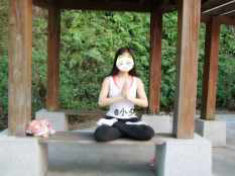
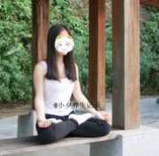
看图说话，就是这样子的！看起来貌似普通，盘一下试试！
我练的目的是强身健体，用通俗的话说就是女同胞都追求的——美体美容，延缓衰老，提高生活质量，没追求修出什么道行来，所以不怕出错（错了再改呗）。
小夕不是专业人士，喜欢什么，随心而做，如担心没名师指点而走火入魔的朋友就不要随便试哦，个人认为，走火入魔是心念问题，生活中那么多纷杂的人与事都不能让你走火入魔的话，单单一个姿势哪有那么容易让人走火入魔呢！（女同胞在例假期间气血比较虚，没有老师指点的话，最好例假期间不要练。）
2013-10-25坚持拉筋后轻松双盘——双盘历程及效果
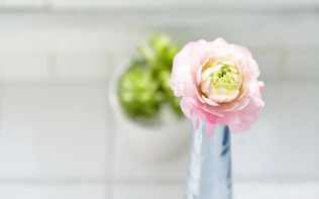
前几天，萧老师回一消息，让我分享一下拉筋拍打后可双盘的经历，又有一些MM想了解我双盘的经历与心路历程，想了几天，“汇报”如下：
心念决定行动，先说缘起。
今年五月下旬，无意中详细关注双盘，看到有诸多不可思议的好处，诸如：
1. 双盘练得不仅是筋骨，而是把经络全部打开。
2. 如果练成，并每天坚持双盘坐20分钟，可保70岁登山如小伙。日常基本百病不生。（我最看重的是这个！
3. 双盘练成后，打坐就不会再腰疼。肾气充足，甚至想弓着腰坐都不可能，气足的会把脊背顶的很直。
4. 练双盘，能迅速促进胃肠蠕动。即使饭后立即开练，20分钟后胃就全部排空了。（那不就可以减肥了嘛！）
5. 双盘不仅打开腿部经络血脉，而且会打开胯关节。（这也深得我心，也许对以后生孩子有不可思议的好处，最好减少疼痛）
6. 双盘的姿势其实脚踝压住了大腿内侧的大动脉，为了打通动脉，心脏会加大力量泵血，因而能打通腿部血脉。
7.在打通腿部血脉前，由于双腿动脉不过血，因此全身血液都集中在上半身，而此时心脏又在加大供血力量，因此，五脏六腑会得到大量的供血，迅速改善脏腑机能，并促进大脑供血。
医家说，“双盘”可以防漏精、止漏精、暖足心，清除“精”中的浊火，去除体内顽固的湿气，可以大幅度的刺激“精脉”，使人体产生大药！简言之，练双盘可以生精、化气、养神。
一个姿势就有这么多好处？岂不是和拉筋一样“一举多得”！相比一些挥汗如雨的有氧运动，我更亲近这些“一举多得”的静功，动功重技法，静功重心法。
各派修行都重视双盘，气功家认为双盘使身体更稳固，便于长时间静坐；瑜伽功认为双盘使心定，并能引导气的上行下行；武术家认为对内功修炼很重要；医家认为舒展经络，可百病不生；而佛教密宗则认为可以使气入中脉，迅速入定。最后看到一句话，“降伏不了其腿，谈何降伏其心”，二话不说，立即行动，尝试“降伏我腿”！
过去没练过双盘，第一次尝试，能轻松盘起，一定是得益于两年多来坚持拉筋。这两年多，没有每天坚持，不过一年至少有300天以上坚持每天每条腿拉筋20-30分钟。
也许有人问，反正过去你从没尝试过双盘，说不准你是天生就能轻松盘起而不是拉筋的功劳呢，或许你在拉筋之前就是可以双盘的。
我敢肯定是拉筋的功劳，因为刚接触拉筋的时候，卧位拉筋，腿伸不直，不到5分钟就痛得受不了，站立的拉筋也一样，几分钟就又痛又累。那时要是尝试双盘，肯定盘不起来。那时拉筋，常常感觉腿部骨头往外冒寒气，膝盖尤其严重，后来才渐渐感觉到热流流向脚底。
这是三年前，拍打出痧图，整条腿都是黑的，一团团的痧，可见当时瘀滞厉害！
现在已经不会这样了，只出红红点点的痧。
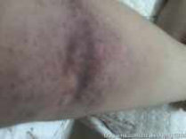
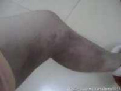
回到今年5月底的第一次双盘，能轻松盘起，不过一辆分钟过后，各种不舒服，难以忍受，拿起《黄帝内经》朗读，转移注意力，脚踝处非常痛，两条腿好像已经不属于自己了，麻且痛，像是痛在骨头而不是痛在肌肉，每一秒都像一年一样漫长，坚持不了5分钟。
盘了三五天后（每天一次），才能坚持到10分钟，10分钟的时候，腿又麻又痛，动不了，闭眼咬牙把脚轻移开，用几十秒慢慢复位，保持坐姿，歇几分钟，才站得起来，背上都是汗，尤其是大椎穴区域。
为了减少双盘的疼痛，每条腿拉筋30分钟，歇一会，就开始双盘。如果早上拉筋，晚上双盘，比拉筋结束立即双盘更痛一些。
双盘时拿《黄帝内经》或《道德经》或《金刚经》来朗读，转移疼痛的注意力，效果蛮好的。有一次，朗读《黄帝内经》，想着“多读几篇多读几篇......”，不知不觉，坚持到30分钟。突破了一次30分钟，又接着连续坚持几天每次30分钟，有了质的飞跃——刚刚盘起的几十秒，有丁点小痛，接着反而感觉特别舒服（可能是气顺了），坐得稳，比正常坐着还舒服，直到接近30分钟才开始麻或痛。
练成30分钟的过程中，痛是非常的痛，我想女性生孩子那么痛都能忍，相信人对痛的忍耐力是超强的！怀着“每天坚持双盘坐20分钟，可保70岁登山如小伙，日常基本百病不生”的愿景，心里不觉得双盘苦，反而喜欢这种挑战，每次盘完很有成就感。大道不在腿上，但双盘应该是众多入门工具中重要的一种工具。
现在，坚持了快5个月，每天保证双盘30分钟，有时久一点，有时一天盘几次，每次30分钟，都是随性而为，有时一个人关在房间里盘，有时到山上盘，有时坐在电脑前也盘，有时边看电影边盘。
看到有的人一次双盘3小时或6小时或9小时，我很佩服，相对而言，我很不精进，没给自己什么任务，要是哪天忽然来了兴致，也许会试试一次3小时。总之，以平常心，欢喜心来做，有愿心，无目的，不刻意强求双盘时间的长短。
我的愿心是强身健体，用通俗的话说就是女同胞追求的——美体美容，延缓衰老，提高生活质量，没追求修出什么道行来，喜欢就傻练，不怕出错（错了再改呗）。
我不是专业人士，无门无派，喜欢什么，随心而做，如担心没有名师指点而走火入魔的朋友，不要随便学哦。我想，走火入魔是心念问题，生活中那么多纷杂的人与事都不能让你走火入魔的话，单单一个姿势哪有那么容易让人走火入魔呢！
据说，女同胞在例假期间气血比较虚，没有老师指点的话，例假期间最好不要练。
我喜欢尝试，试过在例假期间双盘，除了比平时稍微累一点，没感觉到有其他不好，反而因为气血集中于人体中间，身体出汗或发热，经血排得更顺畅。
大家最关心的，恐怕是练习双盘的好处了，是不是真像上面列出的7条那样？
练习之前我身体没有明显不适症状，不好说练之后这里好了或那里好了。
“每天坚持双盘坐20分钟，可保70岁登山如小伙”，这个还要等很多年才能上来说。
“练双盘，能迅速促进胃肠蠕动。即使饭后立即开练，20分钟后胃就全部排空了”，这个倒是有。
......
也许旁观者清，看看身边人怎么说。
练习双盘三个月的时候，和十几年的好友出去玩，拍照。她说我现在的站姿不错。意思是过去的站姿很村，塌塌的，小里小气的，不精神，不看好，现在的站姿渐渐靠近“高端大气上档次”（玩笑玩笑）。
练习双盘四个月的时候，有朋友说，坐姿以及平常姿势颇显优雅。（这么“高端大气上档次”的词，一直觉得离自己很遥远很遥远......）
也许是恭维的话，不要太认真。
上图是双盘三个月。
自我感觉，双盘后，身体很轻松，挺享受的。
这是前几天，深圳白天温度还很高的时候。（双盘时，注意保暖，尤其是脚和大椎穴。）
先将左脚掌置于右大腿上，再将右脚掌置于左大腿上，佛门里叫“吉祥坐”。
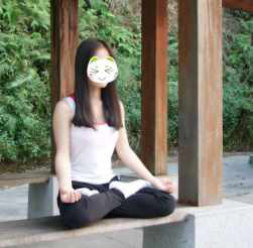
先将右脚掌置于左大腿上，再将左脚掌置于右大腿上，佛门里叫“降魔坐”或“金刚坐”。
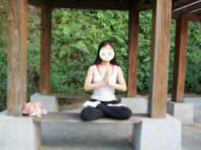
2013-11-20双盘一小时
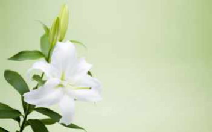
今天早上，7:38-8:38，双盘到一个小时了，前半小时就跟正常坐一样轻松，没有任何不舒服的感觉，后半小时脚踝渐渐点点麻，到一个小时的时候，也是麻而已，麻得不算太难受，整个过程都没感觉到太明显的痛。这一个小时比几个月前刚尝试双盘时盘的10分钟轻松多了。
从一个月前写博文【坚持拉筋后轻松双盘（双盘历程及效果）】到现在，每天坚持半小时左右，很少到四十分钟，没有刻意地每天增加一分钟或几分钟。所以，完全是随其自然在今天盘到一小时的。如此看来，只要天天坚持，也许也可以随其自然地完成一次盘三小时。
我的目标不是一次能盘多少小时，而是坚持，5年，10年，20年......看看到老的时候，是否真像“传说”的那样——“如果练成，并每天坚持双盘坐20分钟，可保70岁登山如小伙。日常基本百病不生。”如果真的能延缓衰老，保持优雅，如果那时新浪还在，博客还在，还可以继续在这里跟孙辈们分享双盘几十年的心得，哈哈。
今天是下图的盘法——先将右脚掌置于左大腿上，再将左脚掌置于右大腿上，佛门里叫“降魔坐”或“金刚坐”。(注：图片是为了说明“先将右脚掌置于左大腿上，再将左脚掌置于右大腿上”的“降魔坐”或“金刚坐”，那是前段时间天气很暖的时候拍的。现在天气冷了，双盘的时候是在家里，关着门窗，穿着厚衣服，厚袜子，腿上和腰还特别盖上毛毯。夏天双盘时，也特别注意大椎穴区域用围巾挡着风的。）
2014-06-18双盘一年——身变化
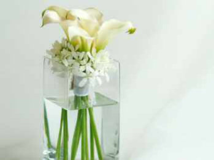
翻看记录，双盘一年多了。
除了最开始咬牙忍痛的“苦练”，突破半小时后，都没有刻意与“痛苦”作斗争的依次延长时间。为了检验现在能盘的最长时间，今天专门测试了一下，右腿在上，8：16-9:41，共85分钟。前四十分钟很舒服，到一小时的时候几乎没痛感，一小时后脚踝开始痛，然后渐渐难熬，最后3分钟靠不间断念“南无阿弥陀佛”来“对抗”脚踝的痛与麻。这一年里，没做到天天双盘，有时会休息几天，有时一天盘几次，平均下来，每天盘30分钟肯定是有的。有时一边看书一边盘，有时一边看微信一边盘（极少，看手机久了眼睛不舒服），有时跟着冥想词盘，有时闭眼听《心经》（多）......有过极少数非常美妙的“静”时刻——闭着眼睛，感受呼吸，感觉到脊椎某块骨头是疲惫的，感觉后背的毛孔微微打开（我一般是后背冒汗），汗水一点一点渗透出来。当感受毛孔打开，汗水渗出的细微过程时，会短暂忘自己之外的东西，似乎有某种程度的“和天地合为一体”。平时吧，都不知道汗是怎么一点一滴“出来”的，只注意到皮肤表面有汗水这个结果。那么，感受这些细微过程有什么意思呢？这么说吧，如果囫囵吐枣吃馒头，只感觉到填满肚子这个结果，而感觉不到一口一口、慢慢咀嚼中尝到的淀粉丝丝甜味。对照前辈医家总结的效果，括号中的文字是我的感受。1. 双盘练的不仅是筋骨，而是把经络全部打开。（不知道到经络全部打开是什么感觉或状态，不确定自己算不算经络打开或全部打开。）
2. 如果练成，并每天坚持双盘坐20分钟，可保70岁登山如小伙。日常基本百病不生。（这一年很安稳，连感冒发烧上火喉咙痛的小病都没有。）
3. 双盘练成后，打坐就不会再腰疼。肾气充足，甚至想弓着腰坐都不可能，气足的会把脊背顶的很直。（这一年没有腰疼（接触中医之前是经常腰疼的，那时肾虚严重）。不过双盘之前腰疼就很少了，现在算是保持得还好吧，没有变差。双盘前没驼背，现在脊背也直。）
4. 练双盘，能迅速促进胃肠蠕动。即使饭后立即开练，20分钟后胃就全部排空了。（是的。）
5. 双盘不仅打开腿部经络血脉，而且会打开胯关节。（不知道怎么检验。）
6. 双盘的姿势其实脚踝压住了大腿内侧的大动脉，为了打通动脉，心脏会加大力量泵血，因而能打通腿部血脉。（不知怎么检验）
7.在打通腿部血脉前，由于双腿动脉不过血，因此全身血液都集中在上半身，而此时心脏又在加大供血力量，因此，五脏六腑会得到大量的供血，迅速改善脏腑机能，并促进大脑供血。（促进大脑供血，大脑应该反应更灵活吧？视力不好，反应似乎一直都有点迟钝。）
双盘前没有显著的不舒服，没得对比，不好检验到底明显改善了什么。如果以倪师提出的健康标准看，双盘前就没有完全满足（主要是大便问题，有时还是没有便意，有时大便不成形），而现在依然如此。或许中医认为的“健康”的“平人”，只是一个可以无限趋近而没法到达理想的状态。
也许身体没变差，就是一个“好效果”，毕竟一年过去，又老了一岁啊。观察到左手臂多了两颗小小的痣，衰老的步伐随着时光悄然前行着。
最显著的效果表现在精神层面——情绪稳定，心境平和。（明天写）
2014-06-19双盘一年——心变化
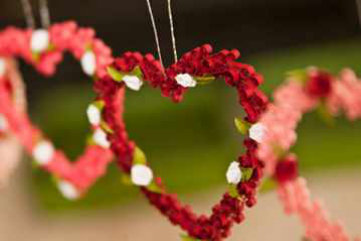
双盘一年最显著的效果表现在精神层面——情绪稳定，心境平和。
几乎没有陷入“焦虑、紧张、愤怒、沮丧、悲伤、痛苦、孤单、恐惧、无聊”等情绪中，不是所有这些情绪一刻都不曾存在，而是转念快。
比如说痛苦，前面博文《求分析：发生在身边的离奇死亡》记录的，听到姐姐好友的老公忽然去世，当时肯定会感到痛苦；比如看电影，也一定会为剧中的某些情节而悲伤，但是过了就过了，不会陷在里面出不来。
以前不是这样的，09年看《蜗居》，压抑好长一段时间，还以非常负面的态度思考自己的感情与生活。
内心较脆弱的时候，真不能看太闷沉的电视电影。
“情绪稳定，心境平和”不是一件靠头脑知道某些道理，然后用理性说服自己，就可以长期持续做到的。
回想一下，我们生气或暴怒的时候，难道真的不知道“生气等于用别人的错误惩罚自己”吗？
这些简单的道理，应该是大多数成年人都懂的吧，当情绪起来那一刻，什么都忘了。
特别是女人，生气的时候其实心里很难过；生气过后懊恼的要死，可是为什么就是生气呢？
如果用“冠冕堂皇”的道理或“名言警句”告知自己，不要这样，不该那样，也不好，心里有气，碍于情面或道德感，强制说服自己憋着装着，只会憋出内伤来，是肉体上真切的伤哦，而不是看不见的“剑不伤人情伤人”——一些胃溃疡，肠胃炎，是生闷气惹的。
情绪管理是需要慢慢训练的。
我觉得最有效的训练是静心，而静心没有任何的外力可以借助，也不可能通过上各种心灵成长课突击一下就获得。即便催眠也不能做到真正的静心。静心唯一的方式是专注。我们可以找一件自己感兴趣的事物，哪怕是一时兴趣，专注进去可以得到片刻安宁，然后循序渐进，最关键的是——做。只说不做，永远不可能达到自己想要的状态。
（关于专注，想不通的是，玩游戏成瘾的人也对游戏也很专注，但是貌似玩过之后他们是一种比较空虚的状态。同样是“专注”，为什么有的可以带来静心，带来内在充实，有的反而带来更大的空虚与无聊呢？）
另外，不是说，管理情绪后无论什么时候都不生气，而是不生没有意义的气。所谓“有意义的生气”，比如《少年派的奇幻漂流》里面，派小时候抓肉喂老虎，他老爸很生气地，牵一只羊过来，让他亲眼目睹老虎如何咬死羊。这样的生气是为了教训派，让他知道老虎是肉食动物，对人是有生命危险的，这样的生气是有意义的。
双盘一年呢，一是越来越“理性”了，不做无用功，不在无意义的事情上浪费精力；二是多说“人话”，少说“神话”。
关于第一点，好像因为“觉知力”“觉察力”变强了些，比如感觉到自己的所为(行动或情绪）对解决问题有帮助或对事情正面作用，就有所为；反之，无为，不会“明之无用还强为之”，然后换来一颗被伤得或支离破碎或憋闷委屈的心以及种种不爽。怎么判断自己一件事有没有影响力？我喜欢的中医老师——JT叔叔，说“一件事情是不是你的影响力范围之内，那个分判的基准点需要极高的心力；尤其是当事情关系到生死、健康、亲情、爱情的时候。”如此看来，双盘是提高了我的“心力”，让我更好的觉察到自己的影响力范围。关于第二点，主要是和夕哥的相处，以前总是要求对方，改变对方，改造对方，威胁对方（你不注意身体，以后病了不管你！），“你要这样，不要那样”......寂静法师说，“神才可以这样随便要求别人，这是神说的话，简称“神话””。老是说“神话”而不说“人话”，你就是自找苦吃自作孽的节奏。这个问题，两年前写抑郁之路提过（《小夕抑郁之路与中医》），这里重提，因为觉察到是一回事，能持久做到是另一回事。一时高呼自己走出抑郁的人呢，没准说完几个月又陷进去了呢，人的惯性是很强的，最好保持谨慎的心，交给时间来检验。写完抑郁之路后，仍有某些时刻动过“改造对方”的念头，只是很快被扑捉到，这些念头没有机会“生根发芽”。有些人，比如在什么母亲节啊父亲节之类的，跟妈妈道歉“以后再也不惹妈妈生气了”，结果第二天又对冲起来。
有些人，在某些场合或课程被打动，在台上声泪俱下的对着父母或爱人或某人道歉或忏悔。我相信在那一刻他们是“顿悟”了，是真心“悔改”的，但回到生活中，真的在几年或几十年中的把某日的“顿悟”都实践了吗？
还有擅长给伴侣写检讨的人，早上写得声泪俱下，晚上继续为小事大吼大闹。
这些人，像一面镜子，提醒着我，不要过分自信头脑中装的“道理”，不要做“语言的巨人，行动的矮子”。回头看之前的“顿悟”，不敢说自己做得多好，只能算没有太偏离吧。
以上两点，用前辈老师的话来总结就是——“管好自己的事，不要管别人的事和老天的事”。
越来越喜欢道家的理念，就是学会做真小人，对自己的“喜欢和不喜欢”很诚实，对于“没有爱”“不喜欢”的人或事物，不试图装着喜欢或取悦TA，也不因为自己对TA无好感而内疚，坦诚接受自己的不喜欢，好恶分明，对不喜欢的那部分，从人生中放下。双盘一年的“情绪稳定，心境平和”，和心力提升有一定的关系，但是要感谢老天，在工作、生活、健康、感情等等方面，都没有给我出太狠的难题！感恩这一年中遇到的人与事，都没有超级大考验！
2014-09-17双盘静坐体会——奇妙的静极生动
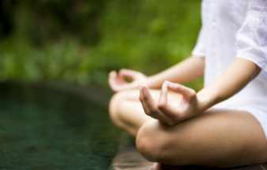
双盘一年的时候，写了《双盘一年——身变化》，《双盘一年——心变化》，那一年里，我双盘基本上只是练腿上功夫，最开始通过读经转移对脚踝疼痛的注意力，后来是一边盘，一边或听《心经》或看书或翻手机上微信等等。
前段时间，和夕哥一起听南怀瑾老师的讲座，他建议我“以后双盘要老实静静盘着，不准看书翻手机听音乐了。”我没放心上，甚至还“调皮”的“作弊”，夕哥过来查看的时候，把书或手机放下，闭眼；他走开就睁开眼，忙着东翻西看。
现在，终于想，不看，不听，不闻，双盘静坐了。
全程闭眼，什么都不做，自然呼吸，到一定时间，似睡非睡，偶有“忘我”。
就像平常我们睡着前的几十秒，某种意义的“禅定”？没有念头，感觉不到自己的存在（无我？）。
如果没睡着，失眠的时候我们会知道自己失眠，睡着了醒过来我们会知道自己刚才睡着了，但睡着前的几十秒，似睡非睡，会没有“我”的感觉。
双盘静坐，会经验到“无我”，我遇到的“无我”状态没有持续很长时间，总会“忽然”想起“我”，当想起“我”的时候，发现呼吸很深，均匀（平常深呼吸的时候，会有一个念头在“指挥”，说“深呼吸”，然后吸气——，呼气——，而这时是无意识的深——呼——吸——）。
真正放松的时候不是叫自己“放松”的时候，只要有个念头在暗示自己“放松，放松”，都不是彻底的放松。
双盘静坐，一个小时内，脚踝都不会痛了，脚板底也是暖的（开始练双盘那会，脚板底血液循环不畅，发紫，麻，痛，冷）。
中秋节前一晚，月光皎洁，洒在飘窗上，“沐浴”月光，静坐双盘。
之前会定闹钟，现在也不管时间了，不刻意给自己任务要盘多久，上座前瞟一眼时间，想坐多久坐多久。
就这么静静坐着......忽然觉得耳朵痒，特别想挠，手不动，用意念“挠”；有时觉得脊椎上有个点不大舒服，想按按，手不动，用意念“按”......
汗水从毛孔渗出来，后背，额头，脸颊，脖子，胸口......先是一滴一滴的汗，渗透出毛孔，停在皮肤表面，然后由点及面，从毛孔源源不断渗透出来，皮肤表面的汗水越积越多，滴到坐着的垫子上，渐渐地，像不断线的雨水，沿着皮肤，向下流淌......
连续这么多天都这样，穿着长袖衣裤静坐，下坐的时候，衣服湿透，摸上去，“厚厚的”汗水量，足以“洗手”。
夕哥看到我“静极生动”的“神奇”，主动求“教我”。
双盘静坐出一身汗，和剧烈运动出汗不同，如果睡前剧烈运动到出这么大汗，身体会处于兴奋状态，不能很好入睡，而静坐后，揉脚几分钟，倒头睡着。
好像这种方式的出汗，是身体自动调节，推出深层废物，睡得很沉很香，早上起来，浑身轻松，好像皮肤也变白了些。（也许是心理作用，继续观察检验）
同样的天气，同样的夜晚，坐着看书或玩手机，是不会流汗的；如果在不该出汗的时候，光是坐着就出汗，叫“自汗”，是一种病态表现。
同样的天气，同样的夜晚，关闭“眼耳鼻舌”的双盘静坐，却能启动另一套系统，静极生动，从阴入阳，真是神奇！
或许练到一定程度，坐在冰天雪地里，不仅不会冷，熊熊燃烧的人体小宇宙说不定可以化掉自己坐的那一块雪地！
如果没有体验过，难以想像，静静坐着，像呆木头一样，居然会发热，会流汗，居然有跟剧烈运动一样的“结果”！
不要说，修炼到眼耳鼻舌身意“六根”清静，光是眼耳鼻舌“四根”清静几十分钟，就能感觉到身体潜藏着如此巨大的能量。
如果没有这样的静坐体会，难以想像，平日里，或东看西听，或胡思乱想，浪费了多少能量啊。
感受到身体如此巨大的能量后，我觉得什么寒性体质，什么经络堵塞都是小case了，“本性具足”不是一句空话，“自愈力”也不是一句空话。实证来的东西，比别人或书上说的一万句道理更能带给自己力量。我们每天接触到的资讯太多，很多经典的道理直接通过书本、网络轻易了解到，如果缺少“自己实证”的过程，那些道理难以真正改善我们的人生。
我没试过，不知单盘静坐会不会有同样“静极生动”的效果？还是双盘这个姿势更能启动身体“休眠的能量”？
老子说：“足不出户，便知天下，不看窗外，便明天道。”说的是打坐入静。
开阔眼界可以远行，也可以登高。可以破万卷书，也可以守方寸心。
我看的关于双盘关于静坐的理论知识很少，因好奇而开始，因喜欢而坚持，当稳稳当当，威然而坐的时候，从容淡定，油然而生。
伽南老师双盘八年了，喜欢她的气质，这是她的分享——
“在双盘的疼痛里，唯一支持我坚持下去的就是对生命实相的强烈追求。我相信恩师，相信法，相信疼痛会带我走向彼岸。无论怎么疼，我从来没怀疑过恩师、怀疑过法、怀疑过自己能觉悟的心。每当疼痛时，我就会拼命想：“受痛了痛，受苦了苦，受不了则了不了”。我深刻体会到由愿力而发的生生不息的动力，没有坚定的愿，我是熬不下来的。
我的性格，也随着双盘变得柔和起来。以前我爱好辩论，喜欢对佛经中的智慧用思维理解，不明白就找人辩论。由于嘴巴凌厉，很少有人能说服我，于是产生傲慢心。但是在双盘中，我突然发现所有的辩论都是空话。那些脑海中的境界，在腿疼时，没一个好用。我开始明白了，用思维学习佛法，根本没用！相信思维能够理解佛法，如同相信只要我们想让腿不疼，腿就能不疼一样，可能么？
再后来的几年，双盘稳定在一个时间里，暴雨般的疼痛降级为小雨绵绵，我开始体会到双盘的殊胜。比如饥饿时，双盘打坐很快就不再感到饥饿；比如受风寒凉时，双盘打坐很快就感觉冰凉的能量从身体里扩散出去；比如疲倦时，双盘打坐很快恢复精力；比如对某个道理不能体会时，双盘打坐突然思如泉涌，如同智慧打开；比如情绪化时，双盘打坐很快回复平静喜悦的心；比如爬山时，明显感觉腿脚轻盈有力；比如身材回复到十几岁的样子，气质也越来越像自然世界的草木。我惊异的发现这个姿势所具有的神奇效果，把我从一个微胖、贪食、情绪化、身体沉重、容易疲倦、爱睡眠的亚健康族变成现在这样骨肉匀称、身体轻盈、精力旺盛、情绪稳定、睡眠少、饮食少的健康族。难怪宣化上人说：双盘，能让一个修行人同时具足戒力，定力，慧力，让天魔知难而退。
在双盘练习的岁月里，随着觉察力的深入，你就会发现它不仅仅是打坐姿势，它本身就是修行······”
——原文《双盘，修行者的炼心术(之一）》
2014-10-29双盘瞬间赶走腿酸疼
在厦门的时候，去鼓浪屿那天，从早上8点半到晚上8点半，我们大概不停的走了10个小时。
晚上回到客栈，小腿酸疼得难以忍受，没有泡脚的条件，只好用热水冲一会，然后捏揉按摩，还是酸疼，一晚睡不踏实。
身体没不适的时候，是感觉不到某个部位的存在的，像五指健全的人，很难觉察到拇指的重要性。
试想一下，如果没有了拇指，拿笔或拿碗或抓东西或剥蒜或打鸡蛋，各种抓或拿，都是多么难的事啊。
又比如，肾脏功能健全的人，感觉不到它的运行，感觉不到它的重要，需要换肾的人，才会发现它的可贵......其他脏器也如此。
平时，小腿没有不舒服的时候，睡着了什么都不知道，那晚，小腿的酸疼让我睡着了依然强烈感觉到小腿的存在感，睡不安稳，好像睡着了还忍不住去按揉小腿，想赶走那隐隐的酸疼。
第二天早上，很早就被那酸疼的难受弄醒了，醒来小腿依旧酸疼得难受，继续按揉也没什么改善。
按正常情况，突然暴走带来的这种肌肉酸疼，只能给它几天时间慢慢修复了。
不管它了，照常做每天的功课——双盘静坐。
出门在外，不像在家静坐那么久，还是每天都坐一下，间断太久的话，双盘“功力”会下降。
时间地点限制，大概盘坐十来分钟，松开腿时，发现刚才难受的小腿酸疼不见了！
猜想是双盘的疼或麻（只盘十来分钟，双盘带来的疼或麻非常不明显）把之前的酸疼“覆盖”了，所以一时感觉不到吧。
接着，下地活动，还是不酸疼了。咦？难道双盘这么见效？
然后，开始新一天行程，暴走过一天，神奇的是，一整天小腿都不酸疼了，再也感觉不到小腿强烈的存在感！
终于人与小腿重新合一了！
后面几天，行走也很多，一天下来，有时觉得脚有点累，但小腿都没酸疼，晚上睡得很踏实。
总之，那几天的情况说明，小腿的酸疼真的是在双盘后完全消失而不是一时转移。
不知道这是偶然还是真有什么深层道理？长时间行走带来的腿酸疼，应该是那个部位的肌肉平时活动量少了，一下子不适应那么大的行走量，而不是那个部位经络的事吧？
按理说，双盘影响的应该是经络而已啊，怎么作用到肌肉上去呢？
练习双盘的朋友，如果刚好遇到长时间行走的腿酸疼，或许可以试试，看我的这个情况是偶然还是双盘真的有这样的功效？
没练习双盘的话，就不用为解决一时的肌肉痛而双盘了，可以用热水泡脚，然后按摩，或许可以缓解一点点吧。
2014-11-12双盘两小时
因博客结识X姐，偶尔交流，互相鼓励。昨天下午，她发来消息说她可以双盘两小时了。昨天忙，约着今天交流一下。
看到同道精进，很受鼓舞，回想起来，自己双盘突破一个小时到现在马上一年，这一年里，只有一次为了测试忍耐度，坚持一次盘85分钟，那是最长纪录。
每天随心随性盘腿静坐一定时间，没有压力的坚持是不错，但林糊糊老师说，平衡不是舒服的呆在中间，而是打破边界之后，重新找到适合的位置。
X姐的话，让我很想打破“舒服静坐”的边界，找到新的平衡，每种境地呆久了，难免长出“思维定势”，我想在新的平衡点看不一样的风景。
晚上9点55分，开始，双盘静坐，第一个小时，盘坐得很舒服，注意力在呼吸上。一呼一吸，尽量做到极限，呼气的时候，气从胸腔慢慢出来，接着小腹的气出来，直到小腹缩到最小；吸气的时候，气慢慢涨满小腹，直到小腹涨到最鼓。刚开始静坐的人，念头杂乱纷飞，不容易静下来。我尝过数息静心，从一数到十，然后又从一数到十，如果不是这样反复数而是持续往后，从一数到几百几千的话，我容易升起“赶”的心，想数多一点，而不是慢下来关注每一次呼吸。对比而言，我更喜欢不数数字的“极限呼吸”，慢慢感受一呼一吸。
大概从60分钟到90分钟，腿渐渐有不适感，没法专注关注呼吸，杂念升起，继续盘着。实在不舒服时，臂部不离位，盘腿不变，由腰部带动上身从左到右或从右到左“划圈”——这是某次双盘中疼痛难忍时为了延长盘的时间而随意“摇晃”，没想到晃了一会，疼痛点消失，又稳稳盘了一会。
从90分钟开始，腿更难受了，不像过去是脚踝刺疼，现在脚踝没有不舒服，而是膝盖，好像全身的寒气都积到膝盖来，既不是疼痛，又不是酸麻，而是涨涨的感觉，膝盖上盖了很厚的毛毯，还是觉得冷，只好用暖和的手心揉搓......随着时间推移，腿越来越难受，无论是“摇山晃海”，还是揉，捏，搓，敲，按，都没法缓解，好想放下。同时，心中有个声音“如果我没有盘到两个小时，没体会过双盘两小时的难度与收获，明天和X姐交流如何理解她双盘两个小时的感受呢。我要先实践。”腿上的难受，并不是这个念头就可以简单化解。还是转移注意力吧，播了一遍《迎神曲》。上半身出了很多汗，尤其后背，像被大雨淋了一样，衣服全湿了，膝盖凉，脚踝和脚板底反而不凉，看来膝盖是打破旧平衡走向新平衡的关键。腿上难受加重，播《心经》，大口大口的吐气......不仅腿上难受，浑身都很不舒服，晕沉沉的，累，好像以前阑尾炎发作时浑身无力意识不清的样子，又像以前唯一一次晕船时的昏沉乏力状.....痛得想撞墙，我一边盘着腿一边头“撞”地（类似于盘腿拜）......特别特别想哭，眼泪没出来，排了很多气（放屁）......昏沉感加重，无力感加重，呼吸有点紧，像重病一样难受，再次体验7年前病痛的那种无力与无助......听《心经》没用，念《心经》没用，念“南无阿弥陀佛”没用，豪言壮语没用，意志力没用，只想放下！不仅仅是此刻的腿，人面对巨大的痛苦时，修什么念什么都没用，唯有靠自己，放下。此时，放下腿立即就可以解脱，同样的，心中的烦恼，放下，就可以解脱。我坚持这样的痛苦，因为相信这种痛苦是建设性的，一方面它将打通身体深层的阻碍，它是打破旧平衡走向新境地的必经之路，世世代代那么多双盘苦修的人，都经历了这样的痛苦。另一方面，它能唤起人的感恩心和慈悲心。Jt说，“你的痛苦我都没，你的痛苦我都懂，才能升起慈悲，慈悲是有高度有难度的，如果你的痛苦我都有，你的痛苦我都不理解，就叫别人或自己“要慈悲”，那是很残忍的。”所以，慈悲不是说出来的，而是修出来的。最后几分钟，通过不间断念“南无阿弥陀佛”撑下来，只要间断0.1秒，就有空余闪过“放下”这两字。不是说要听身体的声音，让你不舒服的，就放弃吗？我为何要与身体抗争着不放弃？关于平衡和放弃，我喜欢的经典心理学著作——《少有人走的路》里提到，“为了放弃，首先必须拥有某种事物。你不可能放弃从来没有的事物。这类似获胜前就想放弃胜利，完全无从谈起。同样，首先确立自我，才能够放弃自我。为数众多的人，就是因为缺乏实践的欲望，害怕痛苦的感受，致使心灵无法成长。他们相信可以实现某种目标，却不愿为此经受痛苦。有的人为了达到精神的更高境界，甚至不惜到沙漠隐居，或放弃适合的职业，去学习做木工，他们以为通过表面化的模仿，就可以走捷径，达到超凡的精神境界。他们没有意识到，长期以来，他们停留在幼稚的精神成长阶段，只有从头做起，进行自律，才是惟一的捷径，如同他们须经历不可或缺的青春期、青年时期和中年成长阶段。。。。。。自律，就是一种自我完善的过程，其中必然经历放弃的痛苦，其剧烈的程度，甚至如同面对死亡。但是，如同死亡的本质一样，旧的事物消失，新的事物才会诞生。。。。。。为了体验所有人、事、物的独特和新鲜之处，我必须让它们进入我的灵魂，并且驻足扎根。我必须完全释放自我，甚至不惜把过去的自我完全打破。”
双盘练习，我没有要与人“比赛”或争强求胜的念头，与人比较，不是带来优越感就是带来挫败感，两个都不是我想要的，我想要通过这件事，打破旧的自我，建立新的自我，最终追求无我。
11点55分，终于熬到两小时，搬下腿的时候，累得像虚脱，停了一会，才有力气说话，欣喜的跟夕哥说“我终于盘到两小时了”，夕哥过来送拥抱，只有最无力的时候，才知道拥抱有多温暖，像重病归来似的，拥抱中爱也厚重了几分。慈悲心没那么快升起，感恩心确是立即到来。
睡觉时已过12点，睡得很舒服，做了个梦，梦到发消息给x姐说“为了更好和你交流，我刚刚突破了双盘两小时，谢谢你的话激励了我行动。”
2014-12-18激动！双盘3小时(第1次)
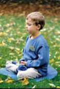
昨晚，就在昨晚，从22：05到凌晨1：07分，双盘突破3小时啦！
看着时间跳过3小时，眼睛湿润了，被自己感动了！呜呜呜......激动！双盘3小时！
天啊，完全没想到这么快能盘到3小时！
掰下腿的第一时间，给清荷（@半缕清荷）发了条消息，知道她此时在梦里看不到信息，我实在忍不住激动和喜悦，像黄健翔06年疯狂激情解说世界杯一样！
通常11点准时睡觉，之所以会盘到凌晨1点，因为盘之前完全没想过这次会盘3小时，3小时，对于盘之前的我来说，是个很遥远的目标。月初去张家界玩，旅途中不方便，有的天没盘，有的天盘10多20分钟，让心收摄一下更好入睡而已。回来后例假期，比平时累一些，有时盘一下，有时不想盘就不盘了。算下来，这半个月的双盘，基本是打酱油状态。得及时回到正常轨道，不然大大退步，更难前进啊。昨晚，开始盘的时候，想着这半个月“任性”了，那就“循序渐进”的回归吧，盘1个小时，11点，准时养肝去。安静，轻松，关注呼吸，时间过得很快。偶然一个念头飘过——“盘得这么舒服，不如盘久点，盘两小时吧。自从上个月11号突破2小时，这1个多月，只有三次盘到2小时，照这个频率，不知什么时候才能盘3小时啊！”腿脚开始麻痛，瞟一眼时间，居然已经过去1.5小时了，之前开始麻痛的时候看时间，一般是一个小时的样子。这半个月的打酱油状态，反而让身体开进加油站啊？！从1.5小时到2小时，没法做到安静的只关注呼吸，通过按揉腿脚，摇山皇海（保持臂部不动，身体划圈）来舒缓身体不适感。
到2小时，身体还不到难以忍受的不适，想着从11月11号突破两小时后，最好的成绩是11月26号盘了两小时零十分，比如这次再加十分钟，坚持到2小时零20分吧，以便离3小时的目标更近一些。2小时后，听《心经》转移疼痛麻胀的注意力。很难受的时候，和上次一样——一边盘着腿，一边头“撞”地（类似于盘腿拜）。这样也没法缓解不适了，我盘腿躺几分钟（腿和上半身同样呈90度，躺倒，背靠垫子），没想到，这个姿势大大减轻身体的不适，再坐着盘的时候，身体轻松很多。2小时20分，身体还没有到之前的无法忍受境界，不如再坚持10分钟吧，内心一直的期望——“盘到3小时后去终南山看看或者去拜访伽南老师求指教“，想到伽南老师宁静脱俗的仙气，心生向往，又坚持了10分钟。
2小时30分，腿脚还没刺痛或麻到受不了，坚持10分钟吧，反正就3遍《心经》的时长......
2小时40分，天啊，离3小时只有20分钟了，不如再忍一下，只要一次突破3小时，到达这个点，之后的保持会轻松很多，20分钟，就是6遍《心经》的时长，很快的，很快的......
就这样，最终盘了3小时零2分！
前1.5小时，静心，舒服，只关注呼吸。
中间0.5小时，脚踝痛，膝盖痛，大腿麻，杂念乱飞。
最后1小时，脚踝更痛，膝盖更痛，大腿更麻，排了很多气（臭屁）。
和上个月前突破2小时的感受很不同。
那时的最后阶段——出很多汗，昏沉，无力，特别累，呼吸紧促，有几次心跳好像忽然停止一下似的，感觉自己的胸中空了一下（很奇怪，平时都不会感觉心跳或呼吸异常），身体的不适，难受到咬牙都难以忍受。
这次——没出汗（可能和天气冷有关），不昏沉，没有乏力感，不会很累，呼吸和心跳都没有异样，身体不适感都没到无法忍受的程度。
同样的是，感觉身体很多气在跑，排很多臭屁。
难道是白天喝炙甘草汤的效果？那么神效？能肯定的是，这个汤药，确实像是把体内某些垃圾气化并排出。（喝炙甘草汤的更多感受，等喝完十帖再专门写）
昨天中午喝了药，下午很有便意，加上早上喝药前已排过一次成形大便，就是一天排了两次成形大便，然后整个下午都排臭屁，平常很少很少放屁（看官谅解谅解，中医爱好者总是不由自主地过于细致的描述身体感）。
双盘最后阶段，比下午更频繁的排臭屁。
难怪中里巴人特别强调排“三浊”——浊气，浊水，浊便。
亲自经历才知道，平时很少放屁的人，并不代表身体没有浊气；像我这样不算臃肿肥胖的人，体内不一定没有浊水，反而可能是身体阳气弱了，没法把浊水气化排出。
明显臃肿肥胖的人，浊水那是“一目了然”的了。
浊便不用多说，只要没有每天一次成形大便的人，都得留心，老话说“要想不死，肠中无屎。”
双盘中，这个动作可能算投机取巧的“违规动作”——“我盘腿躺几分钟（腿和上半身同样呈90度，躺倒，背靠垫子），没想到，这个姿势大大减轻身体的不适！”
没有老师引领，靠自己摸索喽（有老师引领，自己该忍受的痛还是要忍的，我不相信捷径）。
依据之前的经历，从双盘3分钟，10分钟，30分钟，60分钟，120分钟，一步步突破，哪怕最开始借助念经，看书，玩手机这样相当不静心的方式来练腿，感觉到这样的练腿也是有意义的，练到腿舒服的时候，心更容易安静，专注。《庄子·天道》篇说“得之于手而应于心。”手上做到，心自然跟着有“得”。
这次突破三小时真是特别意外，完全没预料到，11月11号盘到2小时，此后进步很小——
11月21号，2小时4分；
11月26号，2小时10分；
12月8号，1小时50分；
没记录的日期，有时没安排出足够多的时间，有时不想盘，有时身体难受就停了......都是离2小时很遥远的“成绩”。
记得盘了2小时10分的第二天，浑身肌肉痛，尤其臂部，走路姿势怪怪的，那之后的几天都盘不动，像很久没运动的人忽然运动过度一样，其实那段时间运动挺多，在厦门游玩每天暴走8小时，在家除了每天做108个“医家正椎法”，时常爬山一个多小时，感觉是双盘激发了更深层的通过一般动态运动无法唤醒的肌肉细胞。这次，可能是炙甘草汤的帮助，也可能是“违规动作”的帮助，或两者都有。物理学提到什么定理，前提都是假设在标准大气压下；经济学提到什么规律，前提也假设在自由市场下；对于身体，没法假定某个因素恒定（定不了啊），以便推测其他因素的影响，等喝完这十帖炙甘草汤，再观察双盘中身体反应，推测一个参考答案。这几天深圳温度蛮低，有人说好冷，我都忍不住想问”冷吗？冷吗？“。月初在张家界，0度也不觉得冷（详情《改变寒性体质抗0度》）。今天，身体很冷，手脚都冷，膝盖尤其冷，身体排内寒，像剥洋葱，慢慢剥吧，修道要修到”复归于婴儿“，如果没到那状态，很难说身体的废弃物完全排干净。
看伽南老师博文，她说“在达到双盘三个小时自在冥想的过程里，身体内部、情绪层面、意识层面的负面能量会持续释放出来。能够坐双盘三个小时，并不意味你有智慧、你的身体没有疾病，但是却代表你的身体有了“定性的基础”，在此基础上练习瑜伽、修行佛法、内观念头，你比较容易体会到“定”与“慧”的妙用。。。。。。。双盘三小时才是深入冥想的基础。练习者要一直坚持，直到在双盘中身体能够舒适无碍。”（原文《禅修实践：双盘三小时之路！》）
路漫漫其修远兮，期待做到——每次双盘三小时都舒适无碍。
2015-01-132014年养生总结
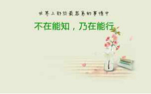
1.正椎（大礼拜），230*108=24840个。春季当中，有个月发狠，每天练几组108个，后来觉得压力大，退回每天108个。例假期间明显比平时累，通常不做，平均算下来，一周做4.5天，每天108个。按这样算，做到目标的十万个要两年。也许到春夏季，忽然发心多做些。
2.双盘静坐。几乎每天盘，突破了一次盘三小时，大多数是一个小时。目标是每次盘三小时，全程身体舒适无障碍。
3.年初过午不食一个月，后来没坚持，改为晚饭喝稀饭，算下来，全年晚饭，大概90%是稀饭，吃点小菜，已经不习惯晚上吃干饭和大桌的菜了。
4.艾灸膏肓穴600壮（每天一小时，共30天）。
饮食上很少吃寒凉，基本上晚上11点前睡，偶尔艾灸，拍痧，拉筋，拔罐。
这一年，感觉手脚更暖和，腰腿更有力，身体更轻盈，没有紧绷感或僵硬感。
南师说“你觉得身体老化一点，僵硬一点，那么你就早准备一点——准备走了。”
几年前，握拳时，就觉得手指关节是紧绷的，而现在是轻松的，看来不知不觉间，身体老化速度确实放慢了。
只能这么笼统的说了，因为年初问题不够显著，不像接触中医前，随便一列，几十条不舒服症状，好还是没好，很明显。
不过，身体还是有问题的。
回想几个月前列的身体情况，括号里面是现在的情况。
1.例假期间明显比平时累，特别是例假第一天，感觉下半身温度明显比上半身低，下半身主要指的是大腿和膝盖。（例假期间还是比平时累，下半身变暖了一些，和上半身比，还是偏凉，不像非例假期那样上下身温度平衡。）
2.大便，如果以一周平均来看，大概三天成形，两天不成形，还有两天没感觉。（有时改善，有时又回到这样，不稳定。）
3.这个夏天，时常早上起床身体有沉重感，三伏天期间的好些天，特别乏力想睡。（秋冬，身体没有沉重感，等明年夏天看看。身体会有沉重感，还是体内有湿气，胡涂医先生在《略说“双盘”》中提到“双盘可以去除体内顽固的湿气”，持续双盘下去，估计明年夏天身体会变轻盈的。）
4.额头“忽然”冒闭合性痘痘（说忽然，因为想不起是哪一天发的），小小颗的凸起，里面有黑头，正面看不明显，侧面看明显；脸颊靠近耳朵那区域，时不时冒几个硬痘痘，在皮肤里面，一般不怎么看得出来，也不怎么发出来，用手摸能感觉到，有的过段时间自己消，有的会发出来。（脸颊的闭合痘痘还没有消完。）
5.此外，胃口好（不会吃很多很饿，也不会没食欲吃不下），小便正常（色淡黄，一天4-6次，无尿频，无夜尿），睡眠好，手脚暖和，身体无其他不适表现。（同样）
学《伤寒论》之前，对经方抱某种期待，觉得或许有药可以把剩下的这些小问题迅速解决；初略学习后，越来越觉得，剩下的这些问题，恐怕经方难以作用得到，不仅经方，一般医生恐怕也难以帮到。
最近得知，Jt叔叔生病了。这几年，他有几次都病得不轻。学《伤寒论》十几年的人，还是会生病，可见，药的局限性。他说“《伤寒论》本身的学理是很有趣，可是，多用不如少用，少用不如不用。学医，我是学着玩的；治病嘛，我是觉得好像在逆天。”
上次他生病，好之后讲《修道病》，功力大大提升。
他说，生病，是人的灵魂寄来的一封情书，是灵魂的呼唤，是潜在意识通过身体来传达灵魂深处的信息。
相信这次生病修养，他一定增长更多智慧。
一个在伤寒与庄子上造诣如此深的人，一边是中医治身，经方用得娴熟；一边是庄子调心，活得随心自在，还是没法不生病。可见，疾病是生命的因果，难以用哪个法门完全而彻底地改过来。
2014年，或许是灵魂层面的我，呼唤肉身层面的我，去尝试艾灸膏肓穴，去学《伤寒论》，去练医家正椎法，去练双盘......从而让我对虚劳体质有更深的认识（下次写虚劳体质的调理新建议）。
2015-02-02双盘体会——想尽办法熬腿就有好处
这几天双盘，一个半小时之后，就很痛了，到后面，每一秒就像一年一样漫长，恨不得往地上打滚，硬撑到2小时10分左右，实在抗不住，把腿放下。
真不知道那晚一口气不换腿的盘三小时，是怎么撑出来的，被自己莫名其妙的“奇迹”砸晕了。
那次双盘三小时之后的几天，盆骨，臂部，和腿脚都有点不适，不算难受，好像女生的“第一次”，身体被“打开”了，之后几天会有点怪怪的感觉（这比喻，额头滴汗~）。
好些天盘不动，有时不到半小时就累或腿痛而不想继续。
又过几天，腿脚明显更轻盈有劲。
距离上次双盘三小时的这一个多月里，没有再突破过三小时，原本以为一次到达三小时后，会很容易再次保持，实际上，No。
看来要稳定的盘三小时，真不是那么简单的事。
现在看，之前突破半小时之类的阶段，真是太容易了，练习几天熬到半小时，就变成轻松盘半小时了。
不知道是不是上次撑到三小时，把身体深层的更多死角激活了。
这几次双盘两个多小时，身体反应很剧烈——发热，出汗，打嗝，放屁等等。
一连串的臭屁，像放鞭炮一样（不经历难以想象啊！），幸好好自己独自双盘，要是去参加什么班一群人练。。。。。。（脸红，尴尬ING）。
完全没想到会这样，因为平时都不放屁呀。
中里巴人老师说，“不好的情绪是疾病的成因，它会郁结成气在体内乱窜，专门找薄弱部位下手。如果人生气又不能及时放出，它就是浊气、废气，堆积下来会伤害脏腑。生气后，浊气首先堆积在肝那儿，然后通过胆囊窜到胃，再到十二指肠、小肠、大肠，最后通过肛门排放出去。这是最为常见的一个通道。但是好多人的这个通道
已经堵住了。怎么堵住了呢？最明显的一个特征便是好多人已经不会放屁了，甚至从不放屁，尤其是那些体内长有肿瘤的朋友。要想少生病就要多排气，排气的通道就是放屁。 ”
中里巴人老师提供的推腹法，跪膝法等等方法，都能帮助人排气。
我觉得双盘排气效果更好啊，不知道要怎么推腹才能出现“一连串鞭炮似的臭屁”的“盛况”。
老师分享的方法很明智，一般也不能建议别人用双盘来排气的，实在太痛了，不是普通人能接受的。
不仅生气会产生浊气，体质比较弱的人，五脏六腑运行不通畅，都可能会产生浊物，包括浊气。
想到自己以前严重便秘，一个星期不大便，身体虽不觉得难受（无知无觉），但危害实在太大了，多少浊物留在体内啊！难怪脸上皮肤不行。
3-5天不大便的人，因为肠子没力气推动，down掉了。这几年，在大便调到比较好的各个阶段，都没有放屁，还以为体内清得差不多了，通过双盘才知道，哪里是差不多，还差相当多呢。双盘激发了体内的死角，脏腑运行加快了，推出这些浊气。双盘的前一小时，身体舒服，相对而言，比较静，身体没有这些反应，这是在后半段，痛得东歪西晃，听《心经》咬牙坚持的时候发生的。我更加肯定，只要咬牙忍痛多坚持，尽可能的延长双盘时间，无论是看手机，看电视，看书，还是打电话，玩微信，听音乐，唱歌，朗读经典，抄写经典。。。。。。无论是用什么方法来转移双盘熬腿的疼痛，对身体都有很好的效果。用哪个转移注意力更好？当然是能安静忍痛最好（对于普通人难度实在不是一般的大，我做不到，能做到的人就这么做吧）；其次是读或写经典，排最后的是其他各种花样。就像我们做饭，柴火和煤气和电池炉，三种热源都能煮熟，但柴火煮出来的最香，电池炉很方便，煮出来的东西味道稍微有差异而已。我们可以灵活变通，不能在只有电池炉，不能烧柴火的时候不吃饭。如果仅仅是为了保持健康的话，一个小时双盘就可以了。我苦熬两小时，奋力向着三小时全程身体舒适无碍的双盘，因为感兴趣，想挑战，想体验，想收获更多（双盘到现在，收获太大了，痛中有大“乐”，以后细说）。注：以上为个人体会，我双盘还不到两年，没有拜师学习，完全是自己摸索前行的，仅供参考。
2015-03-02双盘可能会遇到多个“痛坎”
双盘中可能会遇到多个“痛坎”，特别特别痛，可能是脚踝痛，也可能是膝盖痛，还可能是大腿根部痛......
“痛坎”出现的时间点不定，比如我左腿在下的姿势，有过盘2小时的记录，但“成绩”非常不稳定，有时候早早就痛了，前天晚上，熬到1小时43分，怎么也坚持不下去，脚踝处痛到放下来后大概10分钟都没法动，用手轻轻按揉脚踝很久，才慢慢好转，大概20分钟后，走路还是一拐一拐的，第二天是好了。（我两个姿势能盘的时间很不平衡，左腿在下的盘法差一些，最好记录是2小时，很艰难地熬到2小时；右腿在下的盘法，之前突破了3小时，一般盘2小时不算困难。）
如果盘完放腿下来之后非常痛，可以轻轻按揉，帮助恢复，如果盘完之后的几天还感觉痛，就暂停几天。
我在第一次双盘两小时之后的几天，浑身肌肉痛，尤其臂部，也有点肌肉痛，走路姿势怪怪的，之后的几天都盘不动，暂停几天后，自然恢复。
停练几天，不一定会退步，反而可能有新突破，也许这是量变到质变的关键点，让身体休息一下，更容易达到另一个高度。
2015-04-08双盘时做什么，还是什么都不做？
双盘时做什么，还是什么都不做？
这是没有绝对答案的。
一般来说，从来没接触过双盘或静坐或站桩或冥想等静修的人，一开始就要求自己双盘时什么都不做或不想是很难的，会感觉无聊，盘不住，那就不要强求，双盘时想干啥就干啥，先把腿盘起来，尽量延长每次盘的时间。
等到某天，内心生出个念头“想什么都不做的双盘”，再什么都不做，让注意力在呼吸上。
对于很多人来说，什么都不想是很难的，等双盘到某天你想什么都不做什么都不想的时候，再什么都不做不想。
感兴趣的话，先把腿盘着，盘腿时想干啥干啥。
哪个效果更好？
什么都不做的双盘，效果更好。
其次是读或写经典，排最后的是其他各种花样（看电视，聊天，打电话，听歌，唱歌，看书......）。就像做饭用的热源，柴火，煤气和电池炉，三种热源都能煮熟，但柴火煮出来的最香，电池炉煮出来的香味最差（是不是有人感觉不出差别？那是感觉钝化了哦）。我们可以灵活变通，不能在只有电池炉，不能烧柴火的时候不吃饭，有什么条件做什么事呗。以自己喜欢的方式来，才容易坚持。以我不换脚的一次双盘突破三小时的经历看，能一次盘三小时，并不代表身体立即出现质的飞跃而可以一劳永逸，而且跟双盘有关的肌肉和部位，平时很少“锻炼”得到，要练到每处柔软通畅，跟吃饭一样，需要反复磨练，不然很容易退步。
也不要一听要长期坚持就怕，双盘能坚持半小时的时候，就会有十几二十分钟的超级舒服的时段，双盘到一小时的时候，这个超舒服的时段会随之延长，都不会觉得双盘是痛苦的事了。
等到每次双盘都有一个超级舒服时段的时候，就可以无压力坚持了，平时在电脑前就可以双盘啊。还可以边双盘边看电视，聊天，打电话，唱歌，看书，喝茶，写字......
这样练双盘也有效果的，最基本的效果是，双盘一段时间，或行或走或坐，腰背会自然挺拔，而且身体不容易累，完全不用费脑提醒身体“老兄，你要挺着”，比那种帖墙站然后整天用脑提醒自己挺胸收腹以练“优雅姿势”或“气场”的方法好太多了。
用脑提醒身体的话，就像硬性监督小孩看书写作业一样，看着他就老实一阵，稍不留意他就狂野乱窜，因为这不是他由内自发的。
硬的用脑提醒“挺胸收腹”的话，身体很容易累，当脑开个小差的时候，身体立即泄气，姿势又“塌”了。
随着年纪增大，我们不可避免的衰老，腰背，肩膀和脖子，都会慢慢变塌（=变矮=变短），到一定程度就驼背了，双盘可以让这个过程来的慢一点点（不是不会老哈！）。
2015-05-02双盘三小时(第2次)
昨晚，20：08-23：09，第二次双盘三小时！
和第一次双盘突破三小时一样，激动，兴奋。
和第一次双盘三小时的姿势一样——右腿在下，左腿在上，这个姿势要轻松很多，另一个姿势目前还没突破两小时。
第一次双盘三小时是去年12月17号晚，第一次突破三小时的时候，以为只要有过一次“触顶”，之后会很容易，实际上，没有那么容易（也许因为自己不精进）。
紧接着12月的1和2月，每个月盘到两小时以上的次数，大概3次，一是时间安排（自我感觉这是次要因素），二是疼痛麻胀难忍（这是主要因素）。
3月份开始加大量练大礼拜，想着到秋冬再着重练双盘，这两个月的长时间双盘很少，一个月当中，一次性双盘两小时的频率就一次。
大部分时候，双盘一个小时，全程身体轻松舒适无障碍；少数情况，一小时之内，也疼痛麻胀到不想忍。
过去几个月，这么低频率的双盘两小时，昨晚一开始，对再次双盘三小时不是很有信心，觉得刚好时间能安排过来，就试试吧，而且这个月下旬，就双盘两年了，想着到时候写个总结啥的，只突破一次三小时的成绩，没那么有成就感，也许那是是偶然，是意外呢。
提前站到五月下旬看现在，希望此时的自己努力一把，尝试一下，再次突破三小时。
开始60分钟，身体舒适无障碍，闭眼，数呼气（没打错，是只数呼气，不是数呼气和吸气），从一数到十，反复数，杂念偶尔飘过来。
60分钟到90分钟，身体开始不舒服，忍着继续数呼气。
90分钟到150分钟，身体很不舒服，没法忍着数呼气，播放《心经》。
搁下面的右脚脚踝痛到难忍（各上面那个脚踝，全程没有不舒服），两个膝盖胀，两只腿的膝盖到大腿都发凉。
穿着薄长裤，在腿脚上盖着薄被，还是能感觉到大腿是凉的，用手使劲揉。
膝盖也凉，没有以前那么凉（假设之前双盘最凉为10分的话，昨晚大概是5分。双盘当中的最凉也比不上以前体寒时的冬天膝盖往外冒寒气那么冰，也比不上最开始拉筋时膝盖往外冒丝丝寒气的凉。）
为了缓解压在下面的那个脚踝的痛，拿笔粗的一端轻搓那脚板底，想让气血冲过来，用处微弱，只是用搓的轻微皮肉痛转移一点点对那个不适的注意力而已。
倒计时30分钟的时候，“好痛，算了吧，下次再突破吧”，“30分钟，听4次《心经》就过去了，忍一下，忍一下”......
痛到不行的时候，管不得什么姿势表不标准了，身体东倒西歪，各种摇晃，大口大口吐气，一直默念“三小时，三小时，三小时......”
想哭，没有眼泪流出来；没感觉出汗，摸着皮肤，也没有明显的汗水，但是衣服湿了，可能是极其细微的汗渗透；无力，累，胸口不舒服.....
倒计时5分钟，度秒如年，把《心经》换成轻音乐笛子版《大悲咒》，疼痛难受依旧，但我知道，成功就在眼前了，提前喜悦微笑，改为默念“成功了，成功了，成功了......”
倒计时1分钟，夕哥无缘无故跑过来看，“呜呜呜，我要死了，呜呜呜，还有一分钟，就双盘三小时！但是，现在，痛死了，痛死了，好累，好累。”
幸好他在最后几十秒出现，如果早出现的话，估计会不忍心看我痛而鼓励我放下腿。
自家人总是容易心软！
上次去张家界，登天波府最高台，爬嵌在峭壁上的镂空铁梯，爬两三个台阶，我腿打抖，心跳加速，不敢继续，跟夕哥说“好怕，腿一直打抖，不敢上去了。”
结果人家完全不鼓励，说“那就不爬了，上面没什么特别的，我拍几张照片给你看看，就好了。”
外人反而全都鼓励，无论是已经爬上去的，还是还没爬上去的，都说“加油啊！就这么两三米，肯定要上去啊，最高点看的风景肯定不同呀，你看我这么大年纪了，都敢爬，你怕什么，来到这里，都不上到最高点，回去你会后悔的。”
听着外人这些鼓励的话，我咬咬牙，爬上去了！
所以，当你想双盘突破一个大的时间点的时候，记得不要让家人或爱人中途来看你，“来救”你双盘三小时！第二次
时间跳到23：09，双盘三小时零一分！
无比开心！
放下腿，上半身倒在旁边的被子上，好累，浑身像瘫了一样，不想动！
搁下面的右脚踝痛得没法动，搁上面的左脚踝没有不舒服，两个大腿都不舒服，按揉了十来分钟，下地时，两腿还是很不自然。
这次双盘和之前最大的不同是，前面两个半小时里面，两个脚板底都是暖而红润的，不像过去那样青紫或者发凉。后面半小时，脚板底依然也没变青紫，略微有点凉，没有大腿那么凉。
放屁少了，也没之前那么臭，没之前那么多“废气”了。
这次能熬三小时，真是很意外，因为早上做大礼拜的时候状态不是很好，身体有点沉，这几天要来例假了。
一般例假之前的几天，是身体能量比较低的时候，双盘比其他时段更困难。
苦熬双盘，忍受剧痛，就是喜欢，想尝试，因为现在双盘一小时内，比正常坐着还舒服，想把这个特别舒服的时间延长，顺便检验一下前人说的双盘的种种“神奇”效果，什么变年轻啦之类的。
我既不想通过双盘“入定”，也不想“修道”了脱生死，反正人都是要死的，目前还不关心死后怎么样，更关心活着的时候——健康，身材好，气质好（俗人的俗追求）。
双盘之后很累，都不想洗澡，以前一般是洗澡之后再双盘，昨晚双盘较早，没有先洗，放下腿，歇了半小时，摇晃着无力的身子去洗。
睡觉的时候，浑身发热，好像血在快速流动，下半身稍有不适感，不是明确的酸麻胀痛的不适，就是睡着了都能感觉到腿脚的存在。
今天整个下半身都有种运动过度的感觉，腿无力，隐隐酸痛，不像普通的肌肉痛，也不像痛在骨，人比较累。
建议挑战长时间双盘的人，尽量安排在第二天工作不多，可以多休息的时候，身体可能需要几天才能恢复正常。
早上起来，还是做了两组大礼拜，昨天还差的五十个，过两天再补，这两天没劲了。
前天约清荷明天去骑车，这个双盘“后遗症”状态，不知明天有没有力气蹬车。
2015-05-03双盘三小时(第2次)之后
记不清之前盘了多少次的一小时，然后有了双盘一小时，身体无不适无障碍的全程超级舒服。
那么现在就简单记录一下，每次双盘三小时的情况，看看到底坚持多少次双盘三小时，会有双盘三小时，身体无不适无障碍的全程超级舒服。
前天晚上，第二次双盘三小时。
前天晚上，睡觉的时候，浑身发热，好像血在快速流动，下半身稍有不适感，不是明确的酸麻胀痛的不适，就是睡着了都能感觉到腿脚的存在。
昨天整个白天，都处于双盘三小时的”后遗症“当中——下半身有种运动过度的感觉，腿无力，隐隐酸痛，不像普通的肌肉痛，也不像痛在骨，人比较累，和一般动态运动的“运动过度”的身体感不同，昨天整个白天，能感觉到下半身血在快速流动，脚板底一直发热。
本来前天早上做大礼拜的时候，大腿有点沉，摸上去有点点凉，预示着大姨妈要来，昨天，大腿沉的感觉变弱，凉也减弱。
昨天晚上睡前，用左脚在下，右脚在上的姿势双盘半小时，之前采取这个姿势的时候，处于上面的右脚膝盖会”悬空“，没法着地（膝盖”悬空“，指的是，像下图三个人的左膝盖那样不着地）。
惊喜的是，昨晚用这个姿势双盘，右膝盖轻松着地！
好像经过前一晚另一个姿势的三小时双盘，右腿和右膝盖明显变柔了。
今天早上，双盘三小时的”后遗症“都不见了，身体的不适感全消失，身体不沉，大腿也不凉，早上做了2*108个大礼拜。
今天逛街，暴走10小时，腿脚不酸，不痛，不累（穿平跟鞋），身体不累，无疲倦（逛街十小时到家，还写篇博文，要是过去，肯定是进屋就倒床睡了）。
上面说的，血在快速流动是什么感觉呀？说不太清耶，双盘久了，身体的“版本”好像不知不觉提高一样，能觉察到身体的细微“涌动”，比如，随便双手合十，会感觉到两手指尖在跳动，像电流流过似的，像有个磁场一样，以前要把手指放在硬桌面，闭眼，很静，很静，才能感觉到指尖在跳动。
我如实记录自己的感受，随便看看，对双盘感兴趣的人，不要刻意追求这些感受，这些都是细枝末节，《金刚经》中说“凡有所象，皆是虚妄”。
觉察身体的细微“涌动”，有什么用？
显微镜不是更厉害嘛，能看到细胞核细胞壁呢，工具是工具，人是人。
人若能敏锐觉察身体的变化，就能“上工治未病”，不用等到医院检查指标异常才惊慌失措了。
2015-05-08姐被刺激了，一天拉筋四小时！
刚才姐姐来电话，说今天一天拉筋四小时。
“啊？那么久！还是去公园拉吗？四小时，岂不是要带饭去啊？是不是送儿子上学之后，自己干脆不回家，直接到公园拉筋等儿子放学啊？”我打趣道。
姐姐说，“是从早上十一点拉到下午三点，拉着拉着有点上瘾了，就想拉久一点看看会出什么结果。”
“一条腿坚持两小时，两条腿四小时，这样拉的吗？老姐太牛了，太生猛了哈。”
“不是不是，每条腿坚持半个多小时这样，开始很快腿就麻了，不舒服，不想坚持，但每次再坚持一会，大概一两分钟，那个不舒服就过去了，又能坚持一段时间，到后面很麻很不舒服的时候，听你的建议，播着“阿弥陀佛”（小夕注：应该是《心经》，没给姐姐提过其他佛教音乐），听着听着，注意力转移了，没那么不舒服，就又能坚持一会。就这样，每条腿尽量拉久一点，实在没法坚持的时候，放下来，换另一条腿。两腿交替着，拉了四个小时。”
“感觉怎么样？身体舒服吗？”
“就是要跟你讲，效果真是不错啊！开始竖起的那个膝盖是弯的，膝盖窝没法贴柱子，拉到后来，变直了，很好的贴合柱子。开始放地上那条腿没法着地，拉到后来也着地了。拉筋过程，出了很多很多汗，拉完之后，浑身上下都轻松，腿脚和腰特别舒服，上手臂有点酸，可能是我胳膊粗加上平时没锻炼到。腿肚子明显感觉紧了一点，哈哈哈，之前肉有点松。”
真没想到，姐姐那么能坚持，原本以为就我能坚持呢（不要脸的笑~），不是一家人，不进一家门呀。
其实很早之前我就跟姐姐介绍过拉筋了，之前她来深圳玩，看我在拉筋，也跟着练，只是回家之后，忙着忙着就忘了。
前段时间，她忽然腰痛得不行，想起拉筋，一个人跑到公园拉筋一个小时，咬牙坚持，后背出汗全湿透了，拉完下地，腰痛好了。（那几天我们老家那边天气还很凉，那个汗不是天气热出的汗，是拉筋逼出来的汗，估计排了很多湿气寒气）
那天重新尝到拉筋的甜头后，这段时间她就经常拉筋。
“你怎么一下子变这么能坚持的啊，拉这么猛？腰痛好了，就少拉点呗。”（又暴露了我不擅长鼓励别人坚持的一面）
“过年去四川喝你喜酒的时候，看到你穿那裙子的腰，流口水啊，回来就想‘我也要练’!”
“在四川的时候怎么没听你夸我腰呢？”
“当面，不好直接夸嘛，我们当时一桌人都私下议论，你的腰好像是18岁的姑娘才有的（老姐过奖了^0^），真的好看，好受刺激......我找人订做了一个拉筋凳，现在还没做好，先到公园拉着，我要坚持拉筋，把身材拉得美美的。”
最近猛谈大礼拜和双盘的好，有点忽略拉筋哈，我还是很赞同拉筋的，无论是对于改善亚健康还是瘦身塑身。
个人体会是，这三个方法的侧重点有点差别（先挖坑，有空细说），选择一个自己能坚持的来坚持，都还不错的。
它们的差别是次要的，重要的是——你对哪个感兴趣。
附我和姐姐这几年的照片对比（博客好久没提到姐姐了哈，以前写过她抑郁的整个系列，她现在身心都“不扭曲不变形”喽，不然，面对我练出的“小蛮腰”，她的反应多半是“老天为什么对你那么好，什么都给你好的，让你有时间练这练那，#￥%……*@#%￥”）：照片拍于2011年6月，左边短发是小夕姐姐，右边长发是小夕。小夕比姐姐高2-3厘米，图中姐姐穿的鞋子带点跟，小夕穿的平跟，体重相近，体型相似，衣服码数一样，经常互换衣服。
三年后，同一条裙子，这三年，我不间断坚持——拉筋，大礼拜，双盘。
2015-05-16双盘三小时(第3次)(兼说脸色暗沉与瘀血)
今天，16：20-19：26，双盘三小时零六分，这是第三次双盘三小时。
和之前两次的姿势一样——右腿在下，左腿在上，这个姿势轻松些，想先用这个姿势达到三小时全程舒适无障碍的水平。
今天身体状态不是很好，前60分钟，心总是乱窜，昏沉，打瞌睡，在瑜伽垫上盘，旁边是沙发，居然不经意间头靠沙发盘睡着了大概20分钟，可能跟中午没午睡有关，也可能跟第一次把长时间双盘安排在下午有关，之前的长时间双盘都是晚上。
昏昏沉沉过了80分钟，觉得今天的状态恐怕坚持不了三小时了，又不甘心放下腿，点燃提前放在旁边的艾条，一边双盘，一边艾灸。
看到伽南老师博客提到茶熏瑜伽，提到双盘中茶熏，我对茶熏不了解，想着反正是帮助身体排寒的一种方式，试试双盘中艾灸吧，我轮流灸的是印堂穴和两个脚板底的涌泉穴。
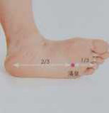
脚板底没灸的时候就是暖暖的，灸了更暖，好像这样灸着还蛮缓解腿部不适的。
到120分钟的时候，搁下面那只脚的脚踝和膝盖比较痛，每次痛到难忍受的时候，就觉得自己好“变态”，不去做大多数人觉得轻松愉快的那些休闲娱乐活动，比如窝在沙发看电视，比如边吃零食边发呆，那些都不会痛，偏偏选择痛得无法忍受的双盘，咳咳，自己选，自己做就好，绝不能主动叫人双盘，如果不是自己内心有强烈意愿，一定觉得这痛跟“上刑”一样，太不“人道”了。
到140分，搁下面那只脚的脚踝和膝盖痛到难以忍受，打开手机，听正安聚友礼的节目（详情《我的正安聚友礼》）——梁冬先生讲“祖先，了解你的前世今生”。
腿上难受得几乎没听进去他在讲什么，但女人对脸对皮肤信息的抓取好像是天生的！（或我确实有点“变态”？）
那么痛的情况下，居然听进去了关于脸色的几句！
梁冬先生提到，几年前他采访的王维工教授，王教授原来是约翰·霍普金斯大学的生物物理学博士和神经科学博士，搞西医的，后来做中医学的研究，他做了很多年研究之后，看他自己身体的问题，发现原来他脸上一直很黑，漆黑一片，就是气血很不好的表现，原来跟他小的时候有一次从树上掉下来以后，在脑袋和身体，就是包括胸腔那个地方有一些瘀血有关，他用各种方法，包括外面的按摩，吃药的方法化开之后呢，他的脸色就变了。
梁冬先生说，这次见到王教授比四年前看到他的气色好得多，作为一个六七十岁的老人家，瘀血化开之后，气色都会好很多。（熟悉《国学堂》节目的朋友估计对王维工教授有印象哈，他和梁冬先生在《国学堂》聊的那几期节目非常精彩，不了解的朋友可以百度搜关键词“国学堂梁冬王维工”）
前几天有个网友问我养生之后皮肤变白吗？说自己皮肤颜色偏暗，调理后会改变吗？
我身体最不好的时候，脸色是蜡黄（像秋天枯黄的树叶那样没光泽没生命力的萎黄），蜡黄那层散了之后就是发暗，自我感觉，现在发暗有改善，以前脖子和脸是明显的两截，好像不是同一个人，现在的区别没那么明显了（现在还是气血不足的气色，若是以后练到皮肤透亮再发对比照喽）。
这期间，确实是排了好多瘀血，排瘀血的途径有例假期间掉黑血团的，有拔罐拔出来的。
去年有段时间，我专门挑例假头两天在大腿根部拍痧，好几次猛拍的时候，会立即掉血块出来（体积大，掉的时候都能感觉到，囧），最近两个月，例假期间不停大礼拜，偶有血块排出。
我试过，例假期间不拍痧不练大礼拜不双盘的话，就没什么血块，但我例假期间的大腿是明显发凉的，所以推断，体内的瘀血没排完，如果例假期间无任何养生动作的话，是身体没有足够力量（力道）让那个瘀血自动流出来，而不是体内没瘀血了。
瘀血是体内代谢不完的垃圾的一种，不见得都通过直接排出“瘀血块”的方式来排，当我们的经络通畅，身体能量充足的时候，瘀血化开后，也可能通过小便或发汗等方式代谢掉的。
中医有个说法，久病必瘀，怪病必瘀，瘀的程度不同，解决方法也不尽相同，久瘀的人，恐怕没有速成之法，因为久瘀的人，又不是只瘀成一块血块，把这块排出完事，而是整个通路上都有瘀，之前的博文对久瘀写得详细，感兴趣的去看看《严重“寒，湿，瘀，虚”身体的调理（完整）》。
脸色偏暗，如果是带有光泽的充满生气的暗，和身上皮肤差别不明显，这种暗是正常的肤色，没必要调理，黄种人对肤色的追求是美白再美白更美白，这种情况实在想白，去看看那些外用护肤品或者网上流行的什么珍珠粉敷脸之类的好了（不知道那些靠不靠谱哈，只是从身体角度来说，这是很健康肤色，都健康了，还咋调呢）
（岔题太远，回到脚上的双盘~~~）
140分钟到160分钟，搁下面的膝盖和脚踝是最痛的，迷迷糊糊听完梁冬先生的分享，难受得差点熬不住了！
给自己打气，只有20分钟就完成第三次三小时了，若是现在放弃，实在太可惜了，下坐一定会后悔的......20分钟，听三遍《心经》就结束了，挺住！
赶紧播《心经》，说来真是神奇呐，播《心经》后，腿上没那么不舒服了，不知道是《心经》有“魔力”，还是痛感有波峰和波谷，这阵子赶上波谷了？
160分钟到186分钟，比140分钟到160分钟还舒服些，就没有一到三小时立即放下脚，多听了一会《心经》，多熬了6分钟！
好像再熬5分钟或10分钟也还行，就是快递要来收件了（淘宝小掌柜双盘修自己的同时，不能随
便耽误发货影响顾客心情啊），如果不下坐先按揉腿脚，等会快递小哥到了，没法起来开门。
盘到最后20分钟，才排几个屁，不臭，打几个嗝，除了搁下面那只脚的脚踝和膝盖痛之外，另一只脚几乎没有不舒服感觉，身体也没像之前双盘三小时出现那种闷或无力。
脚板底一直热，放下腿后，按揉十来分钟，走路基本正常，之前盘完三小时按揉十来分钟走路时还是一瘸一扭的，搁下面那脚的脚踝的不舒服会滞留很久。
这次双盘的“后劲”明显弱了，看看明天还有没有“运动过度”的身体感。
2015-05-18双盘三小时(第3次)之后
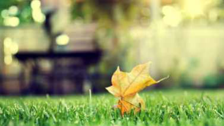
双盘中感觉到身体进步非常大！
第一次双盘三小时之后，好像要四五天，那种“运动过度”的身体感才完全消失。（当时没记录那么细致，半年过去，记不清到底是四天还是五天了，好脑子不如烂笔头啊。）
第二次双盘三小时之后的第一天，下半身有种运动过度的感觉，腿无力，隐隐酸痛，不像普通的肌肉痛，也不像痛在骨，人比较累，和一般动态运动的“运动过度”的身体感不同，昨天整个白天，能感觉到下半身血在快速流动，脚板底一直发热。
到第二天，这种“运动过度”的身体感才完全消失。
前天下午第三次双盘三小时，放下腿，按揉十几分钟后，只是双盘时搁下面的右腿脚踝和膝盖略微有点不适，基本正常走路而不像之前“一瘸一扭”的。
昨天早上醒来，右小腿有点酸，用真空罐拔了一会，酸感消失，照做2组108个大礼拜。
昨天一整天，右膝盖有一点点不舒服（几乎可以忽略不计），没有“运动过度”的身体感，人也不累，昨晚换一个姿势，双盘一个半小时。
这种长时间的熬腿，好像每一次都“扫”掉很多障碍，每熬一次都能感觉到身体更通畅一些。
有网友问我现在还拔罐吗？我现在没有把拔罐当作日常养生项目经常做了，就像昨天早上这样，偶尔哪里酸痛或受风寒什么的就拔一下，改天写一下重罐四年后，对拔罐的新认识哈。
2015-05-20双盘三小时（第4次）
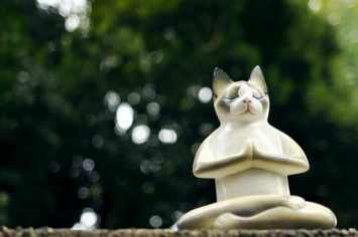
昨晚，20：50-23：50，双盘三小时，这是第4次双盘三小时。
和之前三次的姿势一样——右腿在下，左腿在上。
前几天，第三次双盘三小时之后几乎没有“运动过度”的身体感，感觉身体进步超大，想着会不会再熬几次，在这个月里就实现三小时全程舒适无障碍的水平呢？
这个想法出来，让我很是兴奋，一直以来也没想过一定要在什么时间里达成什么水平，如果这么快就达成三小时全程舒适无障碍的双盘的话，确实是“超出期望”的开心，于是，忙完各种家务活，关起门来，斗志激昂的双盘，打算再熬一次三小时。
前一个小时，盘得舒服，基本上比较静的数呼气，偶尔想点其他事。
一进入第二个小时，激昂斗志就被打残了——腿脚不舒服啊不舒服。
腿脚的不适每次都不同，这次先是放上面的左膝盖痛，然后才到放下面的右脚踝痛，最后是大腿和盆骨胀胀的。
有人痛了依然可以静静坐着，我不行，痛了没法静，总想做点事来转移注意力——按揉拿捏痛的部位，双盘着头点地，以腰为中心轴摇晃，听正安聚友会的音频，听《心经》。。。。。。想尽办法熬腿痛，最难受的时候，痛得倒地——保持腿上的双盘，背靠垫子，脚和身躯呈90度（可能这都不算双盘姿势了，我想不管姿势如何不规范，只要腿脚保持着双盘的交叉状态，脚掌压着大腿内侧的大动脉，为了打通动脉，心脏还是会加大力量泵血，从而帮助打通腿部血脉，如果立即放下腿，没有压住大腿内侧大动脉的话，心脏就只按日常状态工作而没法强力打通腿部血脉了）
总之，昨晚的双盘三小时，是四次双盘三小时中最痛最难受的一次。
每一次熬三小时，身体反应都很不同，前几天的第三次是到最后20分钟才放几个屁（排气）和打几个嗝，这次是第一个小时中就放了很多屁，到后来打嗝很多，感觉胸腔里气在跑。
这次痛来得早，第二个小时之始就痛了，后面痛和难受的程度也远超之前三次，猜想第三次没那么难受，可能和那天一边盘一边艾灸有关！
前面两小时，是“静极生动”的出汗（出的汗，哗哗的滴，简直可以洗澡），湿了两件衣服（提前把几件干T恤放旁边备着），第三个小时，估计是痛得浑身冒汗而湿透一身衣服的。
双盘两年，我知道，每次要有大突破，都会经历这种几乎无法忍受的痛，然后那超级舒适的时间段才会得到延长，才能在双盘中体会更多的“自在愉悦”。
我知道，这痛不会痛断腿，不会痛出毛病，也不会痛死人，硬着忍，坚持到三个小时！
时间跳到三小时的时候，一秒都扛不住了，迫不及待放下腿，痛晕了似的，浑身无力，一动不动，过了一会，才有劲按揉腿脚，按揉过程，腿脚都不敢动——一是腿痛，二是腿无力。
按揉二十分钟，才敢轻轻移动，过了半小时，才可以轻轻下地，但是刚才压下面的右脚踝没“复位”似的，好像还是弯的，没回到平常的直，走路一瘸一拐。
睡的时候，膝盖和脚踝还是有点痛，不敢动，保持个僵尸姿势睡到天亮，倒是睡得很沉。
早上起来，腿脚基本不痛，身体有点累，像是运动过度，又没有明确的那里酸痛或难受，只做108个大礼拜。有人说我能坚持好励志什么的，对于我来说，不觉得励志呢，痛的时候，无数次升起放弃的念头，为什么忍着呢，我也不知道到底是什么信念在支撑自己，那么痛的时候，过往看过的什么励志鸡汤语都想不起来。单纯想做这事，就努力一把地做；想要体验三小时全程舒适无障碍的双盘，多熬几次三小时喽，反正只要熬下去，总有一天是不痛的，就想现在双盘一小时一样，非常舒服；对于结果也不是很关心，比如期待达到三小时无障碍之后身体上有什么神奇效果，没想那么多，有神奇效果更好，没有也不会失望。任何看起来很好的事，都需要常年的坚持和应对其中不那么好的部分，每一件事情都是有阴有阳的，要享受到双盘带来的愉悦，势必要有一定的付出，要忍受暂时的不适。可能我目前对双盘是“真爱”（以后很难说，无常无处不在啊！），所以面对双盘中的极痛，只是身痛，心不难受，每每忍下来，都非常开心。我觉得，从身修心，比看一堆心灵鸡汤更有效，从身修心的法门很多，每个法门都有基本功的练习，基本功的练习，老师或许能指点一下，但是呢，必须靠自己好好付出才能练成，捷径往往隐藏陷阱，慢慢熬吧。
2015-05-23双盘出问题的思考
前几天一个网友在我博客留言，提到自己双盘出不少问题，截图如下。
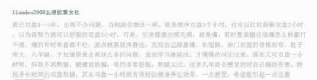
（如果这位网友不希望Id显示，请告知，我再马赛克处理，我是希望还原“第一手信息”）
双盘出问题的思考
首先，非常感谢这位网友的分享与提醒。
其次，对“双盘出问题”这事，我会多自问几个为什么，谈谈自己的看法。
接触中医几年，我的经历破解了不少人说的“不可能”，比如“妇科炎症是没法根治的，一旦发作一次，就要反复跑妇科门诊，一辈子都耗上面了”——我已经八年没复发了；比如一些怕风怕冷的人，看了很多中医或西医或自己搞了很多年，没好，他们在网上会分享说”这个问题是没法解决的“——我已经从膝盖以下冷如冰的寒女变暖女了。
还有，我的“少年白”白发，变黑了；被普遍认为是“疑难杂症”的皮肤病扁平疣，消除了。
我承认，这些难搞的问题，在我身上的效果，有属于“奇迹”的小概率事件，同时，和“选对方法”“正确坚持”也有关。
一般来说，资龄越长经历越多的人的经验越值得参考，不过也不是绝对的嘛。
之前在抑郁之路写到“话说过去在时尚版看到一个久病成医的MM讲妇科疾病，当时我还是医盲，看她讲得蛮可怕，好像妇科疾病的大部分原因都是爱人不爱卫生所致，仿佛婚后女性无一幸免，让我对婚与不婚这事很纠结。
现在回头看，所谓久病成医，所成的“医”的境界还是有很大差距的，如果一直在西医或庸医那边闹腾，最多成为一个对求医比较熟练的“导医”，对各种疾病的认识停留在只见树木不见森林的层面，得出的经验总结也让人悲观失望。”详情（《小夕抑郁之路与中医》）
所以，做得越多，坚持得越久的人，他们的经验不见得就总是靠谱的。
对过来人提醒，我感激这份善意，对提醒的内容，保留自己的思考。
每个问题，我都希望自己考虑得全面一点，比如听到有人说“吃鸡蛋后身体出XX问题”，同时会有两个反应，一是鸡蛋有问题，变质了或者是人造蛋品质不过关；二是，这个人是不是对鸡蛋过敏；比如听到有人说中医治不好病，中医都是骗人的，也是同时升起两个想法，一是，他是不是遇到庸医，被某个庸医骗了？二是，他有没有完全照着医生的嘱咐调整自己的不良生活或饮食习惯，是不是自己没配合好，结果病不好而责怪外缘呢？
接着说这几天对这个双盘出问题的案例的思考——
1.”后来膝盖出毛病，就是痛，整条腿经络痛怎么样都打不通“
——以我目前熬了几次双盘三小时的经历看，两个小时之内的双盘产生的疼痛，主要跟双盘姿势有关的肌肉关节层面的疼痛；三小时双盘的时候，产生的疼痛，不仅跟双盘姿势有关的肌肉关节疼痛有关，还和腿脚相关气脉有关系的五脏六腑有关，如果五脏六腑有疾病的话，双盘的时候，那个部位就会出现各种疼痛现象。
像我在熬三个小时的时候，放了很多很多臭屁，可能和我曾经做了阑尾炎手术有关。
中医老师——Jt叔叔，也是切除了阑尾的人，他曾提到自己每隔几年身体就会出个厥阴病的毛病，因为这条经上有”缺口“。
对于我，这个缺口也是存在的，少了阑尾这个相当于隔绝脏臭垃圾的瓶盖，一些恶臭的东西都积在肠子里了，平时没机会表现出来，只是在双盘的时候才有机会表现（藏得太深，双盘两小时之内都没表现出来）。
这位网友”膝盖出毛病“，猜想是不是跟原本肾脏有某些疾病有关，或者双盘过程以及双盘结束时的保暖是否做到位？
如果是忽然突破长时间双盘（这个长时间是相对说法，比如一般只能盘10-20分钟，忽然某次突破30-40分钟；一般能盘一小时，忽然某次突破一个半小时或两小时......)，还没到达全程舒适无障碍的程度，都建议双盘结束后的一两天，穿长裤，重点注意膝盖的保暖；如果已经到了某个时间段的全程舒适无障碍了，在这个时间段内的双盘，可以不用那么讲究，因为身体已经形成某种”保护膜“了。2.”长短腿”
——是不是长期用一个姿势双盘呢？我现在右脚在下，左脚在上的姿势更轻松，这几次都是用这个姿势熬三小时，平时短时间双盘都尽量换另一个姿势，以便保持平衡。
3.“命门后的脊柱后弯，肚子变大，八字腿”
——暂时没想明白双盘怎么会导致这几个问题，我每次吃饱了双盘，很快消化，肚子瘪，难以理解“肚子变大”。
是长赘肉的肚子变大？还是气运行不畅，胀气的肚子变大？
不管是什么，我的预防措施是——双盘的同时坚持练习大礼拜，一动一静，让气脉更容易通畅；因为大礼拜对正直脊椎很好，对腹部和肚子的锻炼也很好（有实践为证，我都练出腹肌了嘛）；处于中心轴的脊椎正直了，就不担心腿不直了。
4.有时看到说某些修行人长期长时间双盘，身体不好什么的。
我猜想，一是这些人双盘没有经常进入”静极生动“的状态，静没有转化的话，跟一个人长期卧床一样，久卧伤气，导致气脉不通，身体更差；如果静能转化，久卧床上也是不会“伤气”的，佛教中有一种修行姿势叫“吉祥卧”，即朝右侧卧躺。
既然是”修行人“，还不懂这么简单的道理吗？
很难说哦，就像很多中医大夫自身的健康状况并不好一样，知道，做到，得到，这三者之间有距离的。
二是，”静极生动“没做好，又没有做一些动态运动来辅助调节。
不能简单定义一个东西好还是不好，比如阿胶补血，听起来很好，一般要用黄酒来煮，才能帮助身体吸收，吸收能力弱的人，这样煮了恐怕也还不行。
为了避免长时间双盘”引起“问题，在还不能常常“静极生动”的时候，我会练习大礼拜来平衡，这说的是长时间哈，一个小时之内的双盘，不算长时间了。
5.我也认同，如果是为了健身养生效果，保持一个小时的双盘就很好。（之前看到南怀瑾先生也这么说，我想尝试，就熬三小时，最近连续熬几次，力道也是有点猛，非常感谢这位网友的提醒，我会根据身体情况，放慢脚步）
6.我是希望自己多一点思考，不轻易相信没验证过的，网友们不要因为我“固执”而不再提醒哈。如果几年前我轻易相信一些“过来人”的话，那现在的我，可能依旧活在某些顽疾中。
2015-05-26你适合练习大礼拜吗？
一位网友在我博客留言，提到自己早上做了大礼拜，一天就会没精神，截图如下。
（如果这位网友不希望Id显示，请告知，我再马赛克处理，我是希望还原“第一手信息”）
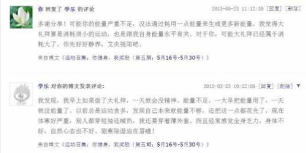
你适合练习大礼拜吗？前几天还有一位网友留言，提到自己几年前在全身刮痧，大耗气血，之后几年体寒严重，夏天也很怕冷。（被留言覆盖了，一下没翻到原文截图）还有个MM，曾跟我聊到自己艾灸脸部治痘痘，艾灸后脱皮特别严重，好像是她是敏感性皮肤。越来越觉得，没有一项养生养生活动适合所有人，每个人的身体差异太大了，检验着前进吧。对于大礼拜，怎么判断是否适合自己？
还是得先试试，不尝试一切都未知嘛，一开始数量少一点，慢慢增加，练习过程感觉累是正常的，刚开始的几天或十几天会肌肉酸痛是正常的，主要看练习之后是否快速“复活”，比如练了几十个或108个，休息几分钟或半小时这样，就恢复了体力，感觉身体轻松，舒展，比练习之前的身体更舒服，精神更好，说明身体消耗的能量少，生成的能量多。
我练习之初，做20-30个就很累了，当时会想坚持，因为练完几分钟立马感觉身体轻松轻盈，现在练习过程也会累，有时累得总想多趴地上一会（少数状态很对的时候会很轻松，不费力似的，不累）练习结束，都是休息几分钟就不觉得累了。
2015-06-09双盘三小时(第5次)(兼谈瑜伽)
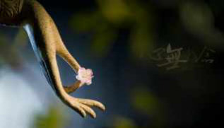
6月7号，19：45-23：00，双盘3小时15分。
这是第5次双盘三小时，和之前4次的姿势一样——右腿在下，左腿在上。
这次明显轻松，中途搁在下面的右脚踝痛，没到无法忍受的程度，最后时段也没痛到无法忍受，多熬了15分钟，放下腿后，身体很快恢复，第二天也没有不适，不像之前双盘三小时后运动过度的“后劲”那么大。
双盘过程，没有闭眼安静静坐，因为解决荨麻疹，后背拔罐出泡的表皮还没恢复好，一边看书一边盘的，盘一个小时这样，闭眼听一会笛子版《大悲咒》(酷狗搜关键词”笛子版大悲咒“会出来），然后继续一边看书一边盘，最后四十多分钟，为了转移痛的注意力，看了个视频——“中国第一瑜珈老人”沈维德上鲁豫有约（链接：http://v.qq.com/cover/c/cma2nthnioxlmfe/i0014w97pa8.html）
这次双盘三小时比之前几次轻松，不知和前几天爆发荨麻疹有没有关系？
爆发荨麻疹时，曾猜想——养生几年，加上双盘两年，始终觉得自己的头脸和身体之间有某个通道没打通，脸的皮肤比脖子以下的皮肤差几个度，前几天全身一处不留的爆发荨麻疹，也许会因祸得福——像小孩发次烧就长高一样。如果没有邪气的强烈刺激，正气可能一直休眠于某个状态，爆发荨麻疹的时候，正气奋力驱逐邪气的过程，可能刚好把原本没打通的地方打通了，也许以后脸的皮肤会改变更快，更好。
双盘过程本来就会出现波动，这次轻松一些，下次痛一些，反反复复，有待更多时间观察和检验这个猜想。
双盘中看的视频，给我留下比较深印象的是，老人说他的巴掌打人，人家会特别痛，不用力人家都觉得很痛，如果稍微用力，人家会痛得麻木。
这是因为他练瑜伽练到手上很有“气”，练到手特别柔软，练到“肌肉若一”，才会有这个结果。
徐文兵老师曾在《国学堂》节目提到，他认识一些修为很深的名医、大家，他们的手很绵软、温暖，握起来跟女子的手一样，当他们发力的时候，又会变得十分有力，像鹰爪一般。（小夕：至柔与至刚之间，瞬间转换）
徐文兵老师还提到鞭子和棍子的问题，柔软的鞭子打人比坚硬的棍子要疼得多，是因为鞭子可以蕴含、传导，并放大力道（小夕：气是一股很强的能量哈）。
这一点在新加坡的鞭刑中可以得到很好的印证，他们在行刑前，刑鞭会在清水中浸泡一夜，使之充分吸水，增强柔韧性。
新加坡鞭刑的每一鞭子都能打得人皮开肉绽、血肉横飞，据说很多人在三鞭子之后就会疼得休克过去。
好了，不说这么暴力的事，提这点，是想说，各种传统养生方法，它们打基础的方式看起来有所不同，不过指向目标是一样的，就是把身体内在练通畅，练到气，练到肌肉若一，练到这样呢，就会出“打人会很痛”这样的结果。
2015-06-12双盘三小时(第6次)(兼谈烦躁)
6月11号（昨晚），20：00-23：00，双盘3小时。
这是第6次双盘三小时，和之前5次的姿势一样——右腿在下，左腿在上。
之前博文提醒过哈，再提醒一下，我现在熬三小时一直是同一个姿势，平时短时间双盘都尽量换另一个姿势，以便保持平衡。
双盘之前心很乱，烦躁，可能因为昨天对电脑有点久了。
长久在电脑或手机上，人会特别累，身体作为生命体和生物体，有自己的节奏，硬的和电脑的死节奏套在一起，心神在电脑上，当身体疲劳已经达到极限时，人还感觉不到，这样会造成人身心分离，人的感情、情绪和疲劳感都丧失了，当心神回到自己身上的时候，情感和情绪涣散了，心里特别空虚，身体特别疲惫——不仅是面对电脑，工厂流水线上长时间面对机器的人，也有类似问题，眼神是浑浊、空洞、涣散的，失去清亮闪光的活力，没有灵气。
可能是双盘带来的心境改变，烦躁的时候知道自己烦躁，知道去双盘找回身体的节奏感；过去烦躁了，要么在那烦着躁着，要么很容易生气，然后把气撒向其他人或事或物。
前五十分钟，闭眼静坐，想关注呼吸来平复烦躁的心，可惜念头此起彼伏，身静心狂乱。
然后翻看微信公共账号的文章，越看越烦燥，心越乱，时间过越慢，搁在下面的右脚踝也越痛，两小时的时候，痛得简直无法忍受，很想放下来。
念着多熬一次痛，就少一次痛，坚持着。
第三小时，听正安聚友礼的节目——（详情《我的正安聚友礼》），此时注意力主要在腿痛上，忘了心乱，心居然平复下来了；排了几个臭屁，烦躁感也没了。
不确定是天气太热，还是痛得冒汗，三小时中出很多汗，湿透几件衣服（提前准备几件上衣在旁边，湿了就换一下）。
三小时到，放下腿，腿脚一下就恢复，庆幸忍到三小时！
刚才忍痛的难受，瞬间化为成就感和喜悦感！
好像找回了身体的节奏感一样，心平静了，很舒服（内在阴阳平衡？）
今天早上，腿脚和身体没有不适，不像之前双盘三小时后运动过度的“后劲”那么大。
2015-06-13双盘三小时(第7次)(兼谈双盘保暖)
6月12号（昨晚），20：20-23：20，双盘3小时。
这是第7次双盘三小时，和之前6次的姿势一样——右腿在下，左腿在上。
第一次连续两天双盘三小时，痛感激烈，以后还是每次盘完三小时多休息几天，给多一点空隙让身体更好恢复。
前1小时40分钟，闭目静坐，杂念少，出汗多。
后1小时20分钟，搁下面的右脚踝痛，听正安聚友礼的节目——（详情《我的正安聚友礼》）。
最后30-40分钟，难受加剧，痛得冒汗，完全听不去节目在讲什么，只是播着熬时间。
最后5分钟，难熬得特想放弃。
痛得难以忍受的时候，就想干嘛要双盘三小时呢？算了吧，算了吧，那么痛，不忍了，不熬了，不为入静入定，不为打通大小周天，不为修道成仙，只想塑身美容而已，何必吃这苦头，南怀谨先生也说，为身体健康，双盘一个小时就好。。。。。。如果中途放弃放下腿，腿一下子就不痛的时候，肯定会后悔刚才干嘛不多忍一下，为了让这一次有始有终，把这次忍下来，以后不盘了，不盘了。。。。。。但是，每次放下腿，恢复后，就又期待下一次三小时，这是“真爱”？
昨晚放下腿后，右脚踝一直弯的，好像没法直了一样，按揉十几分钟，渐渐恢复，睡觉时，总能感觉到右脚踝的存在感，不是酸，不是痛，不是麻，不是胀，就是感觉到它在那里，好像是因为放下腿后那个位置血流较平时迅速。
今天早上膝盖有点凉，早上和白天身体有点累。
双盘过程以及双盘结束的保暖，再补充细致一点——
1.现在天气很热，我双盘的时候不开空调也不吹风扇，穿长裤或长裙双盘的，薄薄的，主要是把膝盖和腿罩住。
2.提前准备几件干衣服在旁边，出汗湿了衣服的话，就换一下，下半身就算了，出汗多就擦一下，等双盘结束再换。
3.之前提过——如果是忽然突破长时间双盘（这个长时间是相对说法，比如一般只能盘10-20分钟，忽然某次突破30-40分钟；一般能盘一小时，忽然某次突破一个半小时或两小时......)，还没到达全程舒适无障碍的程度，都建议双盘结束后的一两天，穿长裤，重点注意膝盖的保暖；如果已经到了某个时间段的全程舒适无障碍了，在这个时间段内的双盘，可以不用那么讲究，因为身体已经形成某种“保护膜”了。
像昨晚，天气太热，要开风扇睡，双盘三小时结束后，我会换一身干的长衣长裤来睡，因为长时间苦熬双盘后，下半身血流加速，处于修复的活跃期，此时对着风吹，加上睡觉后，阳气归于内，体表之气薄弱，很容易引邪
入里。
今天早上，膝盖有点凉（平时不凉，说明是双盘之后的修复），7点多去超市买新鲜荔枝，早晨的风，凉爽凉爽的，我也是穿长裙出门。长裙或长裤都可以哈，主要是挡下风。
2015-06-26双盘三小时(第8次)(兼谈疼痛中的静心)
6月25号（昨晚），19：55-22：55，双盘3小时。
这是第8次双盘三小时，和之前7次的姿势一样——右腿在下，左腿在上。
距离上次双盘三小时13天，这期间每天双盘半小时或一小时不等，想着休息这么久，这次应该会痛得轻点。
第1小时，闭目静坐，数呼吸，杂念少，出汗多。
第2小时，两腿膝盖和脚踝都疼痛，为了转移对疼痛的注意力，拿牛角梳轻敲脑袋，敲一阵子脑袋，敲一阵子脚板底，又敲一阵子脑袋......有的位置有痛点，当找穴位玩，一把梳子完了近一小时。
第3小时，痛得浑身冒汗，播正安聚友礼的节目（详情《我的正安聚友礼》），实在太痛，听不进讲什么，播着熬时间而已。
最后30分钟，好难熬，痛得腿上保持盘腿姿势，背躺在垫子上，左右翻滚。
夕哥过来看，我忍不住说“实在太痛了，好要命。”
“那么痛，不盘了嘛。”
“那怎么行，还有30分钟就到3小时了，不继续忍这半小时，前面忍的两个半小时好可惜。”
不想中途放弃，这次距离上一次双盘三小时已经13天了，前几天有次很想双盘三小时，盘半小时就睡着了，盘到一小时醒来，很想睡，就没继续，不想这次还做“逃兵”。
最终熬到三小时，全程脚板底都是热乎乎的，放下脚，很久才动得了——好久没有痛到这程度！
晚上睡的时候，感觉到脚的存在感——好像腿部血液比平常运行快，早上起来，脚踝和膝盖有点凉，腿脚有点无力，做大礼拜过程中，身体好像明显轻盈，做108个比昨天前几天利索。
经常有人看了记录前来建议我双盘时“不要乱动，要静心”。
这次双盘，我尝试了在疼痛中不乱动，试图在疼痛中保持静心——
据说在疼痛中继续保持身板端正坐着，手结定印，可以缓解疼痛——我试了，疼痛还是那么强烈，强烈到想乱动——摇晃身体或者按揉疼痛部位，痛到有时东倒西歪，只能保持腿上双盘，后背靠垫子，左右翻滚；还痛到想撞墙，理智告诉我撞墙头会痛，就头撞垫子上了，即以双盘姿势磕头。
据说要接受痛苦，不对抗，痛苦会减轻——我一直默念，“我接受，我接受，我接受......”念得特别想哭，又没有眼泪，腿上还是痛。
据说要看着痛苦，看痛苦从哪里来，到哪里去，痛苦中是否有喜悦，看着它，直到它消失——我看不清痛苦从哪里看，到哪里去，用手按捏痛的部位，就是很痛，好像痛在肉，又像痛在骨，反正痛在肉身，痛得真实，它是客观的存在，我的心没法让疼痛离开，疼痛没有消失，只是看到疼痛有波峰和波谷，处于无常中。
这些建议，不接地气，操作不来，我无法悟到如何在剧烈疼痛中保持静心，不知道什么人能在剧烈疼痛中依然可以端坐静心，这样的人是少数吧。
我不追求在疼痛中静心了，先把疼痛忍下来，熬得身体通畅无障碍，再谈静心。
2015-07-04双盘三小时(第9次)
7月3号（昨晚），20：10-23：10，双盘3小时。
这是第9次双盘三小时，和之前8次的姿势一样——右腿在下，左腿在上。
大姨妈刚过，身体的能量水平比其他时段要差些，刚刚练成双盘几天或只能双盘十分钟左右的人，可能会因为一次大姨妈，变得很难盘上或双盘时间显著下降。
预感这次会比较难熬，给自己“放水”——整个过程没闭眼静坐，第一个小时看电子书，第二个小时看电视剧《花千骨》，第三小时看电视剧《虎妈猫爸》。
因为注意力被转移，整个过程的疼痛没有太揪心，不过也是放下腿几分钟，腿脚才能动。
放下腿后的一段时间，好像血流更快，“唰唰”而过，昨晚睡觉和早上起来，感觉到脚面温度明显高些——发热。
早上膝盖和脚踝有点点不适，不是痛，不是麻，好像内在迅速冲刷垃圾，能量一时不够用，有点软，不影响做早上做大礼拜，做的过程身体明显比前几天更轻盈。
之前写过，《双盘体会：想尽办法熬腿就有好处》，这次依然验证了这点，没有闭眼专心双盘，身体也因为双盘时间的延长而得到更深调整和修复——目前双盘一小时，我的腿脚不会有被冲刷的感觉；这样不专心的熬到三小时，腿脚有被冲刷的感觉。
之前提醒过，双盘过程和刚刚结束要注意保暖——如果是忽然突破长时间双盘（这个长时间是相对说法，比如一般只能盘10-20分钟，忽然某次突破30-40分钟；一般能盘一小时，忽然某次突破一个半小时或两小时......)，还没到达全程舒适无障碍的程度，都建议双盘结束后的一两天，穿长裤，重点注意膝盖的保暖；如果已经到了某个时间段的全程舒适无障碍了，在这个时间段内的双盘，可以不用那么讲究，因为身体已经形成某种“保护膜”了。
和这点相似，这次提醒一下双盘与房事——如果是忽然突破长时间双盘（这个长时间是相对说法，比如一般只能盘10-20分钟，忽然某次突破30-40分钟；一般能盘一小时，忽然某次突破一个半小时或两小时......)，还没到达全程舒适无障碍的程度，建议双盘结束后的一两天（不一定是一两天，因人而异，因时而异，像我第一次熬到两小时或三小时之后，差不多要3天，身体感才恢复到正常，也许有的人要更久来恢复），身体处于高速修复期，建议不要过性生活；如果已经到了某个时间段的全程舒适无障碍了，在这个时间段内的双盘，可以不用那么讲究，因为身体已经形成某种“保护膜”了。
不要怪我像挤牙膏一样，每次说一点，都是慢慢摸索前进的嘛，而且我怀疑是否有必要提醒这些？
因为偶尔突破长时间双盘之后，会有一些不适的身体感，比如膝盖软而无力，比如膝盖发凉，比如身体疲倦或劳累得像运动过度等等，那就很自然的知道，这个身体状态不适合“办事”的嘛。
我觉得自然知道的事，也许恰好有同练的朋友不知道，就提醒一下喽，之前没练过双盘的，可能不适合在蜜月开练哈。
这些是很个人的练习体会，不是什么“规矩或禁忌”，如果之前没留意到，不必紧张或担心，以后稍加注意就好。
2015-07-18双盘三小时(第10次)(兼谈疼痛中的身体智慧)
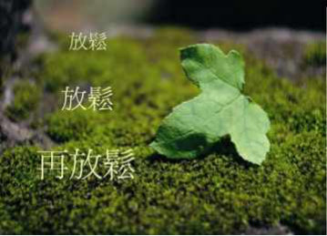
7月17号（昨晚），21：20-00：20，双盘3小时。
这是第10次双盘三小时，和之前9次的姿势一样——右腿在下，左腿在上。
前60分钟，闭目静坐，杂念多。
第60到90分钟，睁开眼，东晃西动。
第90分钟到180分，压在下面的右脚踝非常痛，两个膝盖胀胀的，非常不舒服，播正安聚友礼的节目（详情《我的正安聚友礼》），最后的40分钟极度难熬，大口吐气，不由自主叫唤着——“好痛，好痛，受不了了，受不了了......”
忍无可忍，继续忍，这是第10次双盘三小时！
假如双盘100次三小时可以达到全程舒适无障碍的话，到现在为止，算是走了1/10的路，还剩下90次，如果每隔3天盘一次三小时，一个月盘10次，还要9个月才能完成100次。
一个月盘10次三小时，对于目前的情况来说，已经是高要求了，每次盘完都需要些时间让腿脚恢复，不敢期待每天一次三小时。
也许不需要盘到100次才打到全程舒适无障碍，回想之前从突破一小时或两小时到稳定一小时或两小时，好像中间没有盘到100次。
这次双盘，打嗝和放屁比前几次双盘三小时多，或许和这几天外出吃东西较多有关，难遇到纯正的农家鸡农家猪肉等天然食材，吃得比平时多很多。
看来吃下去的东西远远没有充分转化燃烧，而是滞留体内了，幸好“气化排出”。
之前写过《双盘三小时（第8次)（兼说疼痛中的静心）》，最近看到一个观点，说身体疼痛时难以静心，是身体智慧的表现，此话怎讲？因为身体不通畅（肉体层面的寒湿瘀虚或者精神层面有瘀积的情绪），都会让身体的某部分不舒服（酸，麻，胀，痛），我们的注意力就会一而再的回到那个不舒服上面，比如说我们的脚踝疼痛，我们的注意力就会被抓到脚踝上，这是身体在警示我们，那里有问题。如果身体愚钝，不警示我们的话，可能会有危险，因为那或许是有害虫在咬我们，或许是衣服着火了把我们受伤了，而我们没有感知到，那是多么危险的事。当身体层面有任何不舒服的时候，它就会发出警告，把我们的注意力抓过去，以便查看出了什么状况。当我们打通经络气脉血脉，内在通畅的时候，身体处于舒适无障碍的状态，它无需发出危险警示，我们的精神就可以一直很放松，心神这个大老板就不会上下乱窜，而是静静呆着——自然而然静心。有为自己在疼痛中没法静心找借口的嫌疑，根器不同，如果一个借口可以让自己心安着前行，也没什么不好哈。
2015-07-20双盘三小时(第11次)(兼谈睡很多没精)
7月19号（昨晚），20：20-23：20，双盘3小时。
这是第11次双盘三小时，和之前10次的姿势一样——右腿在下，左腿在上。
前60分钟，闭眼，听伽南老师的冥想词。
第60到120分钟，闭眼，重温梁冬先生和徐文兵老师对话《黄帝内经》。
第120分钟到180分，压在下面的右脚踝非常痛，两个膝盖发凉（两个脚板底一直是暖暖的），播正安聚友礼的节目（详情《我的正安聚友礼》），随着时间推移，不仅两个脚踝都痛，膝盖和大腿根部的叶胀痛，最后四十分钟极度难熬。
整个过程打嗝放屁多，接近3小时的那一两分钟，连续打了几个嗝——熬的时间不到，这些浊气就是出不来啊！
放下腿后，整个下半身都疼痛无力，歇了大概20分钟，才能下地。
睡觉时，脚踝疼痛特别明显，天气热，得开风扇睡，想着这次疼痛这么明显，睡着了体内继续快速修复，吹风着凉不好，穿袜子和薄长裤睡——三伏天穿袜子睡觉，够奇葩哈！
为了更好的保护脚踝，把裤腿塞进袜口睡（之前也注意双盘之后的保暖，不过之前脚踝在放下腿脚后很快就痛得不明显了，就没那么夸张的穿上袜子保暖）。
这次双盘实在太痛了，大概是这么多次双盘三小时中最痛的三次之一，因为和第10次双盘三小时仅仅隔一天，昨天又去逛街，第10次双盘三小时的“后劲”还没完全过去。
今天早上，“后劲”很强，做108个大礼拜，花了整整一个小时！
从早上到现在，下半身的骨头疼痛——脚踝，膝盖，大腿根部，下楼梯或在平地上走，姿势有点别扭，不像普通运动过度后的那种身体感，更像“尽兴同房”后的身体感——不适的感觉不是来自表面筋骨肌肉，而是来自身体比较深的层面。
本想精进点，可是目前的身体状态，还是扛不住间隔一天双盘一次三小时。
每次晚上双盘三小时之后，第二天都是差不多6点自然醒，醒来脑袋清爽，精神好，一点也不想赖床，比平时没有双盘三小时的状态更好。
想到JT叔叔曾提过一个情况，说“我有个表妹她是吃素的，从前她在美国的时候，可能一天睡六七个小时就睡饱了。她有次来台湾学中文，待了两个月，这两个月都吃台湾的素菜，这段期间她每天就要睡八九个小时才睡得饱，恐怕我们素菜里面含的农药还是太高了，肝脏的负担很大。。。。。。其实我在台湾都已经很少吃素菜了，但我还是常常一天要睡八个小时以上，可是我在美国的时候，每天睡五六个小时就够了，可见我们的各种食物带给身体的压力还是蛮大的，这一类的事情、硬件的问题，或许食物挑好一点的吃，就可以解决。”
每次双盘三小时后的睡眠质量更高（睡眠时间少，精神更好），加上双盘三小时过程中打嗝放屁较多，结合JT叔叔的话，我有一个看法——
嗜睡的人（成年人，正常睡7，8小时，总觉得睡不饱，醒来总是昏沉没精神），可能是各种食物累积在体内的毒素太多，肝脏负担过大，睡着的时候，肝脏更能专心解毒，如果肝脏的解毒工作6小时内没做完，我们就需要睡更多，不然感觉“睡不饱”或睡起来总是昏沉沉的。
双盘的时候，身体能量聚集在中部，五脏六腑的运行加快，功能增强，累积在体内的毒素（当天的代谢残留或者历史上的代谢残留）被更好的化解，等到睡觉的时候，肝脏的工作量在双盘过程中已经被处理了一部分，所以不需要睡那么久来让肝脏专心解毒。
嗜睡，在中医里是有很多种解释，比如说是脾虚，体内湿重，湿浊堵头部没法下来，比如说是气机不畅，清气不升，浊气不降。。。。。。
这里只是提供一个新看法，不是唯一的解读，怎么解读不重要，解决得了问题才重要。
嗜睡的人，能否简单粗暴的通过少吃东西来减轻身体负担？
长期嗜睡的人（持续一年或几年），体内累积的代谢残留物已经太多，少吃东西只是减少当前肝脏的负担，如果没有大幅度清除历史残留物，可能改善有限。
难道就建议人家双盘来解决嗜睡啊？
也不是，双盘实在太痛了，除了少数“变态”的人想尝试就尝试之外，大部分人还是找大夫开药吧。
对于JT叔叔说的，各种食物带给身体的压力还是蛮大的，这一类的事情、硬件的问题，或许食物挑好一点的吃，就可以解决。
我在双盘过程中，也体会到身体在消化温热寒凉等不同性质的食物以及当季食物与反季节食物之间所耗用能量都是明显不同的，以后再写。
2015-07-23双盘三小时(第12次)(兼谈身体通畅)
7月22号（昨晚），20：03-23：23，双盘3小时20分。
这是第12次双盘三小时，和之前11次的姿势一样——右腿在下，左腿在上。
之前盘到三小时会痛得迫不及待放下脚，这次到了三小时觉得还可以忍受，继续忍着，唱四首歌忍过20分钟，熬了史上双盘最久的记录!身体状态似乎可以还忍个10分钟的，时间晚了，想睡，就放下腿。前60分钟，闭眼静坐，杂念多。第60到120分钟，听JT叔叔讲《庄子》。第120分钟到180分，播正安聚友礼的节目（详情《我的正安聚友礼》）。进入第二个小时，腿脚也变得不舒服，和之前不同的是，压在下面的右脚踝不怎么痛了，主要的不舒服是两个膝盖和大腿根部疼痛，从膝盖到大腿根部明显发凉，隔着裤子摸，温度明显比手心温度低，脚板底在整个双盘过程都是热的，隔着一块布摸也是热的。整个过程的疼痛强度和上一次相比，大大减轻，到三小时的时候，没有痛到迫不及待放下脚。难道是经历上次超级痛的之后，身体又被打通一些变得更顺畅？或是被夸晚饭炒菜好吃，心情愉悦，能量较强？双盘过程的反复波动太常见了，也许是偶然吧。有人问“从开始的十分钟到现在可以盘半个小时，最初刚开始的时候脚发青发乌也麻，现在半小时内不乌也不麻了，再往下坚持就又痛又麻，这还是不通畅的表现嘛？”关于身体通畅，可以分很多等级，如果把能够舒适双盘十分钟的身体通畅程度记为1分，那么能够舒适双盘半小时的身体通畅程度可以记为2分，能够舒适双盘一小时的身体通畅程度可以记为3分（分数越高越通畅，这只是一个假设啊，像有的人不经练习，一开始就可以长时间双盘的呢，之前博文写过了，那类牛人去看那篇博文，别看这个假设了）......
身体内部肉体层面的杂质和心理层面的负面情绪，像洋葱一样一层层的呆在身体的某些旮旯死角里，打通身体的过程像剥洋葱一样，一层一层的清理......
熬的时间长一点，清理到的层面就更深一点，通畅程度的分值就高一点。
双盘到三个小时，并不代表体内的杂质都清除干净了，更不要期待三小时之内把自己整到“彻底通畅”，不必失望啊，越来越通畅呢就会越来越健康了，那就很好了。
那要熬多久，才能把杂质都清除干净呢？
我没做到，不知道，书上看到一些高僧似乎做到了——如果体内杂质清除完了，五脏六腑通畅干净，人会散发出天然香味（现实版香妃？），皮肤光泽通透，像孩子的皮肤一样细腻，看不到毛孔的，可以几天不吃饭不睡觉，因为每个毛孔都可以吸收“宇宙的能量”。
不过他们好像不是单单靠双盘傻坐多少个小时练到那种境界的，还要“制心一处”的练心。
总之，没见识过的，我们存疑待验证哈！
我不期待那种神奇境界，干嘛非要几天不吃饭不睡觉呢？
吃得香，睡得甜，也是人生一大乐事嘛双盘三小时（第12次，史上最佳纪录）（兼谈身体通畅）。
双盘一小时，就可以保持健康苗条了。
我想要加强版的“健康苗条，改善气质”，就双盘三小时啦。
2015-08-10双盘三小时(第13次)(腿麻会不会造成下肢血脉不畅？)
8月9号（昨晚），19：05-22：05，双盘3小时。
这是第13次双盘三小时，和之前12次的姿势一样——右腿在下，左腿在上。
前60分钟，闭目听冥想词，不知不觉流泪，睁开眼的时候，眼睛非常舒服。
第60到120分钟，播正安聚友礼的节目（详情《我的正安聚友礼》）。
第120分钟到180分，看《中国好声音》。
最后一个小时，难熬，秒秒钟都想放弃，腿脚不舒服，主要的不舒服是两个膝盖刺痛，发凉，隔着裤子摸，温度明显比手心温度低，到三小时，迫不及待放下脚，两个膝盖痛，右脚踝痛，累，躺着不想动。
整个过程，排十几次气（放屁）——总算把白天吃的水果化掉了，也让我体会到水果容易消，不容易化（此话怎讲？以后再写）。
最后时间，肠道气跑剧烈以至于想大大——如果在什么禅修中心和众人一起练双盘，岂不是好尴尬，盘到一定时间，总是不由自主的想大大而不便继续坚持，会不会被老师认为“懒人屎尿多”？
==========================
网友：
想问一下，盘腿那么久，都麻木了，这样会不会造成下肢血脉不畅啊，我腿上本来就有点静脉曲张，不知会不会加重青筋？中医不是讲究要通畅吗？
小夕：
双盘过程的麻木是血脉暂时不通，就像建个水坝暂时阻碍河水流通，双盘结束放下腿，相当于打开水坝放水，这时水的动能和势能都得到增强，会把河道淤积物冲刷得更干净，而这些淤积物是河水正常流动时动力不足以冲刷走的。
另外，在实践中也可以检验到，随着练习，慢慢的，腿就不麻了，反而变得非常舒服，渐渐地，腿脚变轻便有劲，脚的皮肤由粗糙变细腻，由皮下布满颗粒状或条索状疙瘩变通畅无阻，说明腿部能量得以改善，血脉越来越通畅了。
2015-08-14双盘三小时(第14次)(双盘后月经不调？)
8月13号（昨晚），20：22-23：22，双盘3小时。
这是第14次双盘三小时，和之前13次的姿势一样——右腿在下，左腿在上。
前90分钟，闭目静坐。
第90到120分钟，敲敲按按不舒服的部位。
第120分钟到180分，听正安聚友礼的节目（详情《我的正安聚友礼》）。
闭目静坐的90分钟，主要把注意力放在呼吸上，不过念头总是乱跑，意识到它乱跑的时候又把它抓回到呼吸上。
闭目静坐不是为了什么入静入定了，觉得白天对电脑多，不对电脑的时候眼睛也没休息啊，除了睡觉，眼睛一刻不停的帮我们看东看西，它太累了，闭目少看，减少消耗。
最近有个姐姐跟我聊到眼睛出了点问题，问我有什么调养建议，说是看不清东西，年纪不算大，做设计的，可能长期盯着着电脑，眼睛累倒了。
对于眼睛，最好的调养，还是少用（难度略小），多看青山绿水（难度大）。
设计行业的人，是得好好注意下眼睛，我以前有同事做设计的，离不开电脑制图，常常熬夜赶项目，习惯了几小时几小时的盯着电脑一动不动的画图，一个个的精神状态都是“萎靡不振”。
最好是画图个把小时，让眼睛歇一会（说得容易，做得难）。
90分钟内的某个时段，左腿膝盖隐隐约约有点麻，压在下面的右腿都不麻，居然处于上面的左腿先麻，果然是身体左侧能量差一些——左脸皮肤比右边差，左胸比右边小。
麻了一阵，就不麻了，比较舒服的度过前面90分钟。
过了90分钟，两腿膝盖都开始胀胀的，膝盖和大腿发凉（整个过程脚板底一直暖暖的，正常红润的颜色；开始练习双盘的时候，脚板底紫黑紫黑的，特别凉，没血过来似的，麻木的）。
最后30分钟，痛得难受，每次痛到不行的时候，想着，盘完这次，再也不盘了，每次放下腿脚，恢复之后，又开始期待下一次。
最后3分钟，忽然腹痛，同时腿上痛到极点，出很多汗，乏力，累，痛晕了似的，好难受，倒计时铃声一响，迫不及待放下腿脚，放下来才想到，如果再多坚持一分钟，不知道会不会真的痛到晕呢？
和前两次双盘三小时一样，盘到结束想大大，而且很有料——早上都上过了啊，一天排一次都没处理完废物的话，几天不排一次的便秘人群，体内真是太多垃圾了。
整个过程，打嗝放屁明显比上一次少，某种程度上验证了我的推断“水果好消不好化”，因为这三天没吃任何水果，上次双盘三小时的前三天每天吃半个哈密瓜+不少提子。
放下腿脚，恢复很快，5分钟左右下地，睡觉中也没感觉到腿脚不适（之前有时候盘完“后劲”大到睡觉中感觉腿脚略有不适）。
===============================================
网友：我也在练双盘了，能盘五十分钟。之前都是单盘的，到现在持续四个月。近两个月发现月经不畅，少，暗黑。吃药才能顺畅。请问和双盘有关吗？
小夕：先说说我个人的情况，双盘两年多以来，没有出现过月经量明显减少的情况，暗黑倒是有，尤其是上个月，史上最佳记录的第12次双盘三小时之后的那次大姨妈，那次盘了3小时20分，盘完的第二天来大姨妈，排了超多暗黑血块，仅次于五年前调理痛经过程中排出大团黑血块（简单说下历史，话说我曾经剧烈痛经，痛到有几次都请假在家休息，然后五年前，花了上万元来调，调的过程，有一次排了大团黑血——是团，不是块，了解我的人知道我不喜欢用夸张字词的，那次排出黑血团之后，痛经大大好转）。
这五年呢，痛经不明显，但大姨妈没好彻底，因为每次经期明显比平时累些，还有一个一直没消除的症状是——经期上半身和下半身温度明显不一样！
上半身温度正常（暖和），下半身凉（主要是膝盖和大腿），我觉得是身体中间有某个区块没打通，或者是有一块寒躲在某个旮旯死角没化掉。
去年差不多这个时候，我去正安医馆看闭合性痘痘（有网友关心现在好了没？还没好彻底，偶尔起几颗，姐姐说，已经改善很大了，以前看着就觉得皮下好像疙疙瘩瘩的不通畅，偏暗沉，表明粗糙，现在干净细腻多了，嗯，把它整到通透光泽细腻！）。
跟正安医馆的医生提到大姨妈期间上下身有大温差的问题，喝了一周的药，来大姨妈，当时记录了那次大姨妈情况（详情《深圳正安医馆看病记（中）》）——
下半身（大腿和膝盖）的冰凉有所减轻，如果量化的话，服药前为10分，服药后大概为8分。
例假期间累的程度有所减轻，如果量化的话，服药前为10分，服药后大概为8分。
服药前第一二天血色暗，服药后没那么暗。
总共喝了两周药，后来决心靠自己，没去医馆了，这一年当中，还是——每次经期明显比平时累些，经期上半身和下半身温度明显不一样！
不怪人家医生没治好，因为我只给了人家两周时间嘛，直到上个月，双盘3小时20分后来的大姨妈情况，让我意识到，去年喝一周药，情况看起来有点好转，那也是动到标而已，没有动到本——本是在于体内有寒，寒没排出来，而且，这个寒藏在非常非常深的某个死角，普通打法，都打不到它——连药王孙思邈说治百病的艾灸膏肓穴，JT叔叔说的可以打到最底层瘀血、寒湿、痰湿的艾灸膏肓穴，我严格实践，灸了600状，确实打出了很多寒气（去年在张家界0度雪地里手脚暖和），可是没打到让经期上下身起温差的那个角落。如果不是双盘到这个阶段，不知道体内寒气藏得这么深。曾经寒到骨头冒寒气的人，那个寒好像都渗透到灵魂去了！比如妈妈是寒性体质，生下来的孩子多半也是寒性体质，说明会遗传，会遗传的东西，JT叔叔说是厥阴病（病的最深一层），从西医的角度来说，都是基因层面了吧，难动它啊！（那些喝几天姜枣汤，就由冷变暖的人，真是叫人羡慕嫉妒）上个月，看到排暗黑血块的时候，心里那个爽啊，觉得双盘真是太好了！五年前花了万把块才排那么多的血团，现在不花钱就做到了，耶！五年当中都没排，双盘两年里也没排，到双盘两年多盘了12次三小时才排，会不会是双盘导致的瘀血？或者是最近这段时间身体累积出来的新的瘀血？我不认为是双盘导致了瘀血。为什么体内会有瘀血呢？寒了才会瘀啊，热了瘀会化掉的，双盘的人都知道，练习双盘，小腹和腰是变暖的（初期在排寒，可能感觉不明显，像我盘了两年来看，是非常明显的），手脚是变暖的（初期不通畅，可能感觉不明显），整个人是变暖的——去年在张家界，特别冷，别人在烤火取暖，我在床上双盘静坐，一会身体就暖和了。新的瘀血？我这么克制的人，不会好了伤疤忘了疼的，日常生活习惯都非常注意驱寒保暖(上面提到连续三天吃哈密瓜这样的凉性水果，一个夏天就发生一次，连续几个夏天不吹空调），每天双盘，练习大礼拜，累积新瘀血的可能性非常非常小了。所以，这位网友提到的问题，建议自我检查一下近两个月的工作生活习惯。
导致月经量忽然少或暗黑的因素，可能是流产啊（问这个问题的MM不要怪我想太多哈，我尽可能想周全一点，你对照一一排除，之前有过询问我月经出问题的MM，交流中得知近期做了人流），近期赶项目压力尤其大啊，熬夜加班啊，泡水游泳啊，漂流泡水啊，吃了冰冷食物啊，某天被暴雨淋了啊......如果这些因素都可以排除，那可以判断是双盘在排旧瘀血。
至于血量减少，也不用担心是不是双盘导致，南怀瑾先生曾说过，绝经的人，下的功夫够深，可以修到月经再来，人会“返老还童”。
他是个实修的人，他的话蛮靠谱吧，就算我们普通人的双盘功夫不深，没法返老还童，把大姨妈从不调整到调，还是有希望的，一时经血减少，可能是身体在修复病灶点暂时耗用多一些。
2015-08-17双盘三小时(第15次)(虎背熊腰怎么减)
8月16号（昨晚），20：30-23：30，双盘3小时。
这是第15次双盘三小时，和之前14次的姿势一样——右腿在下，左腿在上。
前80分钟，闭目静坐，主要把注意力放在呼吸上，不过念头总是乱跑。
第80到120分钟，听正安聚友礼的节目（详情《我的正安聚友礼》）。
第120分钟到180分，听JT叔叔讲庄子。
打嗝和放屁都比之前少了，盘完也没有像前几次一样想大大。
和上一次一样的是，最先不舒服的，还是处于上边的左膝盖——开始是麻，接着发凉疼痛；最后30分钟，最痛是左膝盖，然后是左脚踝和右脚踝，右膝盖比较不痛了。
练习双盘初期，主要是脚踝痛，觉得是因为脚踝被压才痛的；双盘到现在，最先痛以及痛得最强烈的都不是压在下面的脚踝或者折在上面的脚踝，而是不受压迫的膝盖，发现双盘的疼痛更可能是该部位内在不通畅（主要是寒气），而不是表面动作压迫。
放下脚，也是痛得不敢动弹，过5分钟左右下地，过15分钟左右睡觉，睡觉过程没感觉到腿脚的存在感（之前有时会感觉腿脚血流加快到好像发热或者是脚踝以及膝盖发凉）。
早上起来，脚踝和膝盖有点无力，做108个大礼拜花了50分钟。
看的人可能觉得我有点“走火入魔”，在腿脚不适的时候还不休息，强迫自己做大礼拜什么的，对我来说，没有强迫的感觉，觉得做大礼拜对腿脚恢复有帮助，做得慢，但做完身体挺舒服，另一方面，好像习惯了每天早晨从大礼拜开始，如果没做，好像新的一天没开始。
今天下午，腿脚上的双盘后劲完全消除了。
======================================
前几天一网友说背上肉肉加起来大概有20斤，问虎背熊腰怎么减.
看到的时候忘了回，再返回翻的时候，好像被删除了，找不到，回不了，在这里回哈。
把我了解的几个曾经虎背熊腰的减得非常成功的例子分享一下：
第一个，某网友姐姐，46岁左右，这几年一直看我博客，大概比我晚几个月开始练双盘，到现在也差不多两年了，基本上每天都盘个把小时，最长突破不换腿的盘两小时。
同时也练大礼拜，基本上夏天每天2组108个，其他季节每天1组108个，她说以前是“虎背熊腰”+“水桶腰”，腰背上一抓一大把的肉，现在都没有了；胸也都收得好好的（腋下副乳消失了，胸下围变薄了），变挺，身材凹凸有致。
第二个，我姐姐，（详情请看博文《姐姐逆袭》），她在两个多月里显著改善虎背熊腰，有拉筋，双盘，大礼拜，其中盘腿最多（成功双盘一次之后，身体波动大，后面双盘不上，都是单盘）。
第三个，身边一个朋友，也是坚持双盘快两年，比较随心，从最初的只能单盘没法双盘到现在最长盘半小时，最近练双盘频率高一些，同时一周练三次瑜伽，很少做大礼拜。
最近两三个月，腰背明显变薄。
综合这几个实例，我认为双盘对减掉虎背熊腰比较有效，为什么有效呢？
腰背上肉很多很厚的原因，简单来讲，可能是膀胱经能量不足，很多淤积物代谢不掉，停留在那里；背部区域的膀胱经有各脏腑的腧穴，也说明了各个脏腑功能减弱，没法排掉多余的废水废气废物。
常见的情况是，三四十岁之后，容易虎背熊腰，从这点看，虎背熊腰主要还是内在脏腑功能虚弱，不是肌肉层面锻炼少。
如果年纪轻轻虎背熊腰，更多的是体重超标的全身性肥胖吧，既然要到处长膘，后背也不放过了。
双盘对减虎背熊腰有效，基于两点，一是双盘的时候，下半身基本不消耗能量，能量集中在身体躯干，加速身体躯干部位（正面和背面）的新陈代谢，把淤积物排掉；二是双盘的时候，能量集中于内在脏腑，改善了各个脏腑的功能，它们更有劲干活了——排掉多余的废水废气废物。
原理不重要，重要的是，在实践中可以看到，练习双盘初期，后背出汗尤其多，厚厚一层汗水，一下湿透一件衣服，我现在双盘，后背也还会出汗，每次快到三小时的时候，出汗尤其多。
把我了解的分享一下，我觉得叫人通过双盘减掉虎背熊腰太残忍了——我常常痛到觉得坚持不了了，不忍心叫人受虐啊，有兴趣试试，没兴趣就找其他方法。
2015-08-21腰背正直的小八卦
这几天犯懒，不想码字，也可能因为不是每天都有新收获哈，尤其是从实践而来的收获，有时默默做了半年一年，才有一些算得上是“干货”的想法。
想不起我是从什么时候开始在博文中提到“腰背正直”这四个字的了，去年这个时候，没意识到这四个字的重要。
健康程度不一样，领悟到的健康心得也不同。
健康也可以划分很多等级，不生病或少生病是一个级别的健康，腿脚轻盈、头脑灵活、精力充沛是更高一个级别的健康。
腰背正直之后，外出吃饭什么的，发现他们的桌子和椅子高度都不合适，跟做儿童桌椅似的（保证没有坐在儿童餐区），一顿饭下来，腰背不舒服（一个健康的人在一群不健康的人里面，是显得比较另类的）。
逛街的时候，观察来来往往的人，看着他们的脊椎弯曲了几度，总有上去提醒一下的冲动。
《天龙八部》里有一段跟腰背正直有关——
虚竹有一次被人冤枉和四婢女“梅兰菊竹”通奸。百口莫辩之际，一位有道高僧——普渡寺的道清大师站出来为虚竹说话，一语惊人：
“这四位姑娘眉锁腰直、颈细背挺，显是守身如玉的处女，一见便知”。
金庸所谓“眉锁腰直、颈细背挺”的鉴定法，不知道有没有“科学依据”？腰背正直的小八卦
据我观察，是没有科学依据的啦，我住的附近有很多学校，从幼儿园到小学到初中到高中，观察来来往往的学生，不少应该是小学或初中的孩子，都是腰塌的。
背驼很容易看出来，腰塌不那么容易看——至少在我腰变直之前，完全没意识到“腰直”，如果当时意识到，可能也看不出来，因为没有对“腰直”的直观感受或对比，像把脉一样，在把出喜脉之前，好歹要把很多个非喜脉和很多个喜脉，有了对比，才知道哪种脉象是喜脉。
像以前我也不知道什么叫气色好，什么叫阴气重，接触一些气色好，阳气旺的人，加上自己持续的练习，对“气”更敏感了，才感觉出来有的人阴气重，有的人阳气旺，有的人的气场是浊气，有的人的气场是清气。
下图，红色箭头的小伙，背有点塌。
红色衣服，棕色靴子是我哈，练双盘快一年的时候（红色箭头的小伙，健身好几年了，看来是没练到“内力”）。
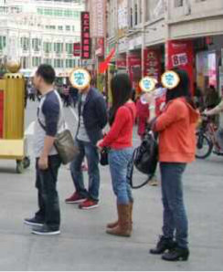
练双盘之前，我背不驼背，但坐的时候腰是塌的，当时不是故意摆这种Pose，现在腰自然直了也摆不出这种腰了，哈哈哈。
就是无意识状态下拍照的姿势才能说明问题，如果自己时刻意识的挺直或者摄影师提醒，那不是身体内力足而顶直的，不能说那样的直不好，而是那样的话，容易在走神或不留意的时候“露馅”，如果是身体内力足而顶直的话，会自然而然的，时刻保持着。
明星模特们估计是被训练成习惯了，已经从意识层面打到了潜意识层面（无意识）。
对比双盘五个月的照片和上个月的照片。
这是双盘五个月：
这是双盘两年零两个月，腰背更直一些是不是？
前面一些博文，我曾提到人老（或胖）时，脖子会变粗变短，要练得让脖子保持纤细才更有美感；也提到气血充足的人，腰背是自然挺直的，不必整日念叨站如松坐如钟的提醒着，是内胎压力够——气足，把腰背顶直。
2015-08-22双盘三小时(第16次)(身体自带神效滴眼液)
8月21号（昨晚），20：47-23：47，双盘3小时。
这是第16次双盘三小时，和之前15次的姿势一样——右腿在下，左腿在上。
前两个小时，闭目静坐，关注呼吸，各种念头常来打扰，不过算是比较静的一次乐，中间有几十分钟，眼睛一直出水，不是哭（关注呼吸，没去想什么事，更没想伤心事）。
我是关起房门，关了灯，坐在飘窗上双盘的，中途夕哥过来开门开灯，我一睁开眼，立即下意识用手捂着眼睛，“哇，好刺眼，好刺眼”，叫他赶紧把灯关了，把门关了，屋里就剩窗外透进来的光，都觉得光度好强，看东西清晰（近视眼的神奇体验啊，可惜不持久），好像刚才眼睛自动出水，把眼睛深度清洗了一样。
第三小时，听正安聚友礼的节目（详情《我的正安聚友礼》）。
进入第三小时，腿脚不舒服，播节目熬时间，没认真听。
忽然听到老师念《金刚经》的一句“一切有为法，如梦幻泡影，如露亦如电，应作如是观”，觉得自己像一颗小星星，飘在茫茫宇宙中；又觉得身体像宇宙那么大，白天念想的事，像星星那么渺小——心就像刚才被深度清洗的眼睛一样，清润舒服。
如果我们被某句话或某件事或某个人伤到，为这些事感到心塞或心伤，那是因为我们的内在太窄了，我们需要扩充内存，把内在变得像外在宇宙那么大，那些烦恼就会相对的变得像星星那么小，就像大象不会跟蚂蚁打仗一样，我们内在的冲突也会自然平息。
打嗝和放屁主要集中在最后半小时，比之前略少。
最大的疼痛集中在两个膝盖，脚踝的痛略轻，膝盖和大腿的凉也减轻了，脚板底全程都非常暖。
盘完腿脚很快恢复，睡觉时腿脚没有不适。
昨晚8点47才开始，盘完歇一下，过12点睡，早上7点自然醒，完全不想睡懒觉——每次盘三小时，睡眠质量都比不盘三小时更高一点点——神满不思睡？
前几天写上个月双盘3小时20分之后，来例假排大量暗血，好像身体真的更通畅了！
昨晚盘完，今天来大姨妈，没有任何不适——之前快来大姨妈或刚刚来的时候，会明显感觉不适，身体累或者腰不大对劲。
以前在大姨妈来之前的几天，身体能量明显比较低——表现为双盘时间大大缩短或者盘的过程特别难熬，昨晚三小时双盘不算特别难熬。
2015-08-27双盘三小时(第17次)(寒性体质食谱)
8月26号（昨晚），20：50-23：50，双盘3小时。
这是第17次双盘三小时，和之前16次的姿势一样——右腿在下，左腿在上（用这个姿势熬三小时，平时短时间双盘都尽量换另一个姿势，以便保持平衡）。
前90分钟，闭目静坐，杂念多。
后90分钟，听正安聚友礼的节目（详情《我的正安聚友礼》）。
大姨妈后期，身体能量果然比较低，90分钟之后，腿脚不舒服，压在下边的右脚踝和两个膝盖比前几次痛，最后半小时难熬。
盘了大概120分钟的时候，口干唇干，有点累，叫夕哥冲了一杯红糖水过来，喝完居然口干唇干的感觉很快消失，不知道是红糖质量确实不错，还是双盘过程新陈代谢加快身体迅速吸收转化为所需津液？
买的正安的红糖，口感醇，不像超市买的甜到有点腻。
口干唇干，可能因为经期失血，暂时“阴”不足。
打嗝和放屁主要集中在最后20分钟，比之前少了很多，不知是身体淤积物随经血排出后体内较干净，还是大姨妈后期身体能量低没有力气排。
最后20分钟，干咳了几次（双盘这么久，从来没有过），盘完之后没再咳。
盘完放下腿脚，腿脚痛、麻、无力，歇了十分钟才能下地，喝了几口红糖水，过12点睡，早上7点自然醒，也是完全不想睡懒觉——每次盘三小时，睡眠时间都比不盘三小时少一点点——神满不思睡？
平常双盘结束不会专门喝红糖水，觉得渴一般喝几口温开水，这次喝红糖水是因为大姨妈末期。
经期是否能双盘？
“江湖上”各有各的说法，我一直不觉得某个问题有且只有一个答案，我一般前三天身体较累，有时双盘一会（几分钟或半小时或一小时），偶尔不盘。
我对身体没有什么恐惧，那么多个谷底都走过来了，最糟糕的时候都过来了，最糟糕的时候也是自己“努力”十几年才搞坏的，我觉得身体没那么容易搞坏，退一万步说，就算不小心搞得更差又有什么的大不了，万事万物都在转化之中，最坏的时候就是转好的时候。
那些武侠小说的修炼，都是练到死去活来的时候，武功大有长进，电影《道士下山》中，郭富城描述突破练功瓶颈时，说“听见大地吹箫，看见阴阳交合，自己死去活来”（旧我死，新我生）。
==============================================
网友：小夕，能否把你一日三餐的食谱，比如昨天吃了啥详细说说么。
现在上市场买菜都不知道买啥了，看哪个都觉得寒凉，但是天天都青椒炒洋葱实在有点腻。
小夕：
从2014年年初到现在，我吃得最多的是粥。
之前天气没那么热，中午吃一顿米饭，早晚喝粥，最近一个月太热，觉得米饭难吞，整天喝粥。
我对下厨兴趣不大，只会做简单的菜，常做——
清炒土豆丝，排骨烧土豆，排骨烧芋头，酱排骨，排骨蒸芋头，青椒炒洋葱，青椒炒鸡蛋，香葱炒鸡蛋，青椒炒肉，包菜炒肉，回锅肉，红烧肉，豆角炒肉，酸豆角肉末（自己泡的酸豆角），炒红萝卜，煎豆腐.......等我想起来的时候再补充。
熬粥——白米粥，南瓜糯米粥（糯米煮南瓜比大米煮南瓜好吃），紫薯粥，骨头粥，瘦肉青菜粥，香菇猪肉粥，我老家的糯玉米粥......(五谷杂粮粥比较少，之前写过对五谷杂粮粥的看法，详情《食疗——五谷杂粮的误区，推荐粥油》）
不吃鸡，市面上的几十天出笼卖，激素太多，同理，鱼也很少吃。
猪肉吃比较多，只吃素菜觉得肚子空荡荡的容易饿，猪至少养几个月出栏吧，相对可能激素少一点（被猪自己代谢了），猪肉还有一个来源，过年从家里带很多腊肉过来放冰箱里冻着（够吃好久，现在都还有），腊肉是婆婆自己养的猪。
从家里带了一罐猪油过来炒菜，好香，中医对猪肉猪油的看法，不像西医那样，觉得脂肪含量高容易得高血压高血脂心脏病什么的，中医对猪肉猪油很有爱，《伤寒论》里有个猪肤汤，可以滋润肌肤，光泽头发，减少皱纹。
本想试试，下不定决心呢，是因为其中用蜂蜜来熬鲜猪皮，甜甜油油的，吃不惯。
做青菜，茄子，香菇，豆腐等这种寒凉的菜，扔点蒜或姜或葱中和一下。
很少吃大把大把的青菜，一星期吃三四次，一次吃一点（不像接触中医前那样，为了所谓的补充维生素，大盘大盘吃青菜，吃得一脸菜色）。
不吃鸡精和味精，吃酱油，醋，辣椒，花椒。
我对吃要求简单，可惜在外面吃饭，很少吃到吃一次还想吃第二次的，要么放了鸡精味精，吃完身体出现“五苓散”症——口渴，喝水不解渴（如果不是吃到味精鸡精，也经常“口渴，喝水不解渴”的话，那是身体出问题）。
要么味道厚重，油太腻或者调料过量，我不是要吃无调料的清淡，而是想吃到醇的，川味的麻辣也喜欢，好吃的川味是醇香醇香的，而不仅仅是加倍放调料搞重口味。
很少吃零食，因为很少遇到满意的，有些零食吃一次，觉得甜度或香味不自然，排斥。
水果，吃点当季的，每年吃最多的就是荔枝了。
总之，就是把握一个总原则——少吃寒凉冰冻食物，少喝牛奶，吃当季的食物。
其他没有太多限制，吃得身体舒服，人开心，就吃，对食疗的热情比接触中医之初大大减弱。
回想之前对吃看重的时期，连续很长时间（超过半年），每天去沙县喝碗炖鸡汤，每天自己炖一碗生姜牛肉汤，每周做一次猪肚鸡（买的鸡近百元一只，不确定是不是真正农家鸡），每周吃几斤基围虾，每天熬姜枣红糖水，每天喝红豆薏米汤，每天吃五谷杂粮粥......如此种种，身体都没有因此有明显改善（也许小小的效果是有的，太微弱了，微弱到觉得投入产出比太低太低）。
看了那么多食疗道理，依然搞不好这个身体......
后来双盘过程出现的打嗝放屁，尤其是其中排了恶臭的屁，意识到自己的身体不是进来的东西少了，而是身体代谢很慢，代谢残余率特别高，如果用数据来比喻，双盘之前，身体对食物的燃烧分解可能只有50%，剩50%都扔进身体各个旮旯藏起来了，双盘之后，可能这个比例提升到80%。
双盘之前，燃烧分解有50%的话，退回到更早之前注重食疗的时期，大概比这个数值更低，难怪2011年拔罐的时候拔出很多瘀血果冻等臭物，说明体内堵得严重。
身体代谢慢，对食物的燃烧分解率低，就像扔柴火进灶，每次都是烧了一点点就熄灭，堆积堵塞着，灶里不通透，火一直不旺。
身体代谢慢，残留废物多而长肥肉赘肉的话，我们很容易意识到这个问题。
我堆积的东西没有长成肥肉赘肉，而且有段时间很能吃，食量大，容易饿，又不长肉，还以为自己代谢好呢。
现在看来，应该是代谢慢到一定程度，出现的病态代偿反应——糖尿病早期症状（有的人寒到极点，会发热，发烫，手脚抓冰块才舒服，这是病态，不是健康的手脚暖和）。
我堆积的废物没长成赘肉，抛到血管或骨头里了——所以上个月例假还排大块暗血。
不是说食疗无效，看到很多人食疗效果挺好，有的人喝个把的月姜枣汤就面色红润，吃一些什么膏喝一些什么的汤，身体就有种种改善，刚好我不属于这类人或者目身体状态没到对食疗反应灵敏的阶段吧，双盘时身体有反应（至少打嗝放屁啊），之前那么注重食疗，身体一直闷着，屁都不放一个，像爱上一个冷血男，任你怎么爱，他整天没半点反应，一点动静都没用，真让人没动力爱下去，也许以后身体到了新阶段，会注重食疗也不定。
特别说明：
我喝粥较多，不是为了节食，不是怕长胖，单纯喜欢。
都说喝粥养胃，好像容易泛胃酸的人，喝粥后胃会更不舒服的，还是看身体情况来，跟着身体的感觉走，不要照搬。
2015-08-30双盘三小时(第18次)(把身体搞坏的吃法)
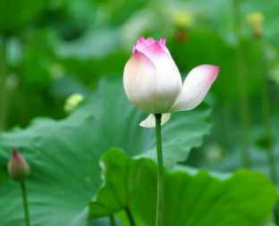
8月29号（昨晚），20：43-23：45，双盘3小时零2分。
这是第18次双盘三小时，和之前17次的姿势一样——右腿在下，左腿在上。
前一个半小时，闭目静坐，眼睛不知不觉出水，像眼泪一样滴到脸上（没有伤心或难过，不是哭）。
中间一个小时，搁上边的左膝盖疼痛，看美剧熬时间。
最后半小时，左膝盖和右脚踝疼痛剧烈，两个大腿的冰凉感比之前减轻。
全程打嗝放屁比之前显著减少，大概只有5次。
晚上睡觉，感觉腿脚略有不适——大腿肌肉和膝盖略微疼痛。
今天早上六点多自然醒，大腿后侧肌肉疼痛，做大礼拜速度异常慢，108个用时近一个小时。
======================================================
上次说到寒性体质的饮食——少吃寒凉冰冻食物，少喝牛奶，吃当季的食物，喝比体温高的水。
我们的身体很少严格按照书上的归类出毛病，比如说寒性体质的人，也经常出现一些看起来像热性体质的表现，像我以前下午一阵阵的燥热，经常口腔溃疡......
那么，哪些人应遵循这个大原则来安排饮食呢？
以下三点，具备一点或两点或三点全占，就按这个大原则来吃：
一是手脚容易冰冷（夏天在空调房里容易手脚冰冷，秋冬更不用说）。
二是大便不正常，几天没有大便感觉的便秘者或者大便不成形或者感觉大便排不尽（特别费手纸或粘马桶，总是写那么细致入微）。
三是，小腹或腰或肚子的温度明显偏低（没用手摸就觉得发凉或者用手摸感觉冰凉）。
我以前把身体吃坏，就是身体明明有这三点表现，还这么吃——
大量吃香蕉和苹果（迷信“多吃水果皮肤好”），每周至少吃五天，每次去超市，都是大袋大袋的买。
大量吃苦瓜炒鸡蛋或青瓜炒鸡蛋（为了“清凉下火祛痘”），每周吃4-5次。每天一盒牛奶（每周喝4-5天），喝了一年多。每天绿豆汤，喝了三个月左右。每天灌八杯水（迷信喝水排毒皮肤好）。......结果很惨啦，不过不用懊恼曾经无知，被无知狠狠烧到，才会觉知，从而有新知。那时猛吃水果，是被“理论”绑架而瞎吃乱吃，很多香蕉是涩的，反季的长期存储的苹果没有一点苹果该有的香味，自己麻木不知，为了“香蕉润肠通便”，为了“每天一个苹果，牙医远离我”而吃......片面的理论，加上与身体知觉脱离的吃法，自然不会吃出健康来。现在，我觉得自己在吃上最大的进步就是——能吃出食物的味道自然不自然，能“听”到身体的需求，依据身体想的来吃，而不是依据头脑知道的“理论”来吃；吃的时候，能闻出味对不对，香不香，香气是否自然；含在嘴里，能品出味对不对，青涩的，还是熟透的；全身心的吃，虽然吃得简单，但幸福感满满的。比如说蕃茄，超市卖的很多番茄都没有番茄味，煮出来的番茄鸡蛋面味道也一般般，我有一次去农场摘自然熟透的番茄，现摘现吃，蕃茄里有阳光的味道，番茄性质偏寒凉，那次吃很多，肚子还是很舒服，因为它除了含有能检测出来的营养成分之外，还有看不见的“气”——吸收了天地太阳的能量，这种自然的能量比较滋养人，煮出来的番茄鸡蛋面非常美味，吃完面喝干汤还想舔碗边。那些被催熟的放保鲜剂存储很久的番茄，检测出来的营养成分是一样的，但没有这个味道，因为没有这层能量。能吃出食物的味道是否自然之后，对于不自然的食物会本能拒绝，像水果，除了正值荔枝季节，刚好深圳产荔枝，会一次买几斤之外，其他水果，一般每次买1-3个，不再是大袋大袋的买，回到家，品尝一个看看，如果味道自然，好吃，第二天再去买一点；很多水果，没有熟透就摘，放各种保鲜剂存储很久，味道不自然，吃一口就不想咬第二口，那就不买不吃了。
2015-09-01双盘三小时(第19次)(双盘发烧友)
8月31号（昨晚），20：42-23：45，双盘3小时零3分。
这是第19次双盘三小时，和之前18次的姿势一样——右腿在下，左腿在上。
前两个小时，闭目静坐，依旧眼睛不知不觉出水，居然还打哈欠。
之前都没有打哈欠，好像被隔空感应了，此话怎讲？
昨天一个网友和我交流，她说自己一字马很轻松，但做不了双盘，只能单盘，每条腿40分钟，第一次单盘，两条腿都麻；第二次，右腿麻的时间少些，在后期开始打哈欠流泪；第三次左腿麻，右腿只疼，盘左腿一直打哈欠流泪，右腿打哈欠好些，就是一边打哈欠流泪流鼻涕一边盘，然后一边用纸巾擦鼻涕眼泪（哈哈，画面“销魂”，不敢想~）。
我最近几次双盘三小时也是流泪（心情平静没有伤心难过，记录为眼睛出水），不过没打哈欠。
我没想清楚在身体层面如何解释这个现象，这位网友说，中里巴人老师提过，这是打哈欠是肝肾在排毒的表现。
我发觉，流泪的时候不一定会打哈欠，打哈欠的时候往往伴随眼睛湿润。
这位网友还提到，她以前是专业运动员，后来接触中医，深感“锻炼脏腑”比“锻炼四肢”更重要(深受西方运动理论影响的专业运动员转到中医阵营，不容易啊！）。
最后一小时，听一下《心经》，听一下轻音乐，听一下正安聚友礼的音频。
最后半小时，左膝盖和右脚踝疼痛剧烈，两大腿的冰凉感比之前减轻，临近三小时的时候，疼痛反而减轻。
全程打嗝放屁比之前显著减少，大概只有5次。
最近几次双盘三小时之后，身体恢复比之前快一些，一般第二天早上腿脚略有不适，到中午基本好了，之前双盘一次三小时要休息几天才敢想再次盘三小时，现在不用那么久了。
======================================================
前面写虎背熊腰的减肥，提到双盘对这个好，有网友说我可能有点神话双盘的功效，更多是大礼拜的作用。
嗯，提醒得好！
我现在处于“双盘发烧友”阶段，所言不够理性很正常，希望看的人默默打折相信，或者过两年再来看（两年也是好快的啊，两年前的这个时候，我想都不敢想双盘三小时）。
我的心得基于自己的身体状况，不可能放之四海而皆准；接触的例子有限，依实例得出的结论也离不开我个人主观的理解。
写虎背熊腰时提及的三个例子，除了四十多岁的网友姐姐，和我一样在练双盘的同时积极练大礼拜之外，另外两个人，在虎背熊腰明显改善的时候，都很少做大礼拜，我姐姐目前为止，做的大礼拜还不到500个，另外一个朋友，两年多里，每次想起来就做几十个，面对这样的情况，自然会推断出双盘改善虎背熊腰的结论。
关于腰背正直，我认为大礼拜是可以做到的。
我的缘分是先接触双盘，双盘5个月的时候才练大礼拜，练双盘三个月左右，有朋友说我姿势显“优雅”（行，走，站，坐的姿势）。
之前拉筋两年多，都没人说这话，刚好在双盘三个月左右的时间点说，没法不推断为双盘的效果啦。
我对大礼拜和双盘都喜欢，它们可以很好的互补，比如休息几天再做大礼拜，就算期间一直双盘，还是觉得肩胛骨位置的灵活度有所下降，所以会两个都做的。
双盘静坐中偶尔体会到“静极生动”的强大能量，可是深知自己根器浅，尚不能很好的发挥利用这股能量之前，偏静的静坐加偏动的大礼拜结合，更适合目前的自己。
2015-09-02双盘三小时(第20次)(怎么有那么多时间双盘)
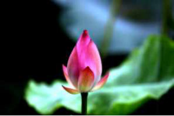
9月1号（昨晚），20：15-23：16，双盘3小时零1分。
这是第20次双盘三小时，和之前19次的姿势一样——右腿在下，左腿在上（先用这个姿势练三小时，平时短时间双盘换另一姿势）。
前60分钟，闭目静坐，依旧眼睛不知不觉出水，比前两次少。
60到140分钟，听JT叔叔讲《庄子》。
140分钟到180分钟，听正安聚友礼节目，听《大悲咒》，听轻音乐。
第一次连续两晚双盘三小时，太挑战了！
从60分钟开始，膝盖发凉，大腿发凉比之前略有减轻，膝盖胀痛，脚踝疼痛，痛感极其强烈，接近第一次双盘三小时的强度，最后三十分钟，痛得死去活来，秒秒钟想放下腿，放弃的念头时刻升起，敲打按压疼痛的膝盖，身体乱晃，咬牙挣扎......到最后，放下腿脚，膝盖和脚踝痛得完全不敢动，太累了，好像喘气都没劲了，倒着一动不动，闭眼休息十来分钟，渐渐恢复正常。
双盘之前，身体上没感觉有前一晚双盘三小时留下的“后劲”，没想到从60分钟开始疼痛，没想到后面痛感那么强烈，后面还是放慢频率，让身体多休息一会。
全程打嗝较多，放屁较少。
======================================================
网友问怎么有那么多时间双盘三小时？
我不是躲在深山里双盘打坐专业户，每天要工作的啦，给一家公司翻译文件（我的工作是上游，每天得快速做完，别人等着文件干活，我这步若有耽搁，直接影响交期，连累大家一起被客户骂），同时看我的淘宝店（掌柜和小二都是我），买菜，做饭，洗碗，家务......
晚上打算双盘三小时的话，尽量在8点半之前搞完杂事，以便8点半左右可以开始双盘。
7点左右吃晚饭，吃完快速收拾，洗碗，洗澡，关起房门进入双盘世界。
目标明确，其他事就没法阻碍自己。
每天24小时，注意力在哪，时间在哪；时间在哪，收获在哪。
2015-09-05双盘三小时(第21次)(对比拉筋，双盘，大礼拜的瘦身塑形
效果)
9月4号（昨晚），19：46-22：46，双盘3小时。
这是第21次双盘三小时，和之前20次的姿势一样——右腿在下，左腿在上。
前90分钟，闭目静坐，眼睛不知不觉出水，比前几次少。
双盘之前，心情有点烦躁，闭目静坐过程杂念多。
盘坐要进入很静的状态，我觉得一方面和身体通畅有关，另一方面和日常心思有关。
对于前者，如果坐的过程身体有疼痛等不适感，注意力就会被不适感抓过去，比较难静心；对于后者，如果日常工作生活中有很多事纠结于心，比如说工作上火急的赶着完成项目，担心不能如期完成，或者和老公闹点小矛盾，心还在为此怄气的话，也很难在盘坐中静心。
难怪古人说“若无一事挂心头，便是人间好时节”，如果在日常生活中，常常无一事挂心头，在盘坐也更容易静心。
后90分钟，听正安聚友礼节目（详情《我的正安聚友礼》），听轻音乐。
最后30分钟，左膝盖和压下边的右脚踝非常痛，按摩敲打疼痛部位以及乱晃身体以转移注意力，两大腿的冰凉感比之前减轻，脚板底热，全程打嗝较多。
======================================================
关于拉筋，双盘，大礼拜对瘦身塑形的效果——
如果是体重超标的大基数，想很快看到瘦身效果，建议加大数量做大礼拜或者负重拉筋（在腿上绑沙袋），每次坚持久一点，目标是每次每条腿坚持40分钟。
负重拉筋示范：
双盘三小时（第21次）（对比拉筋，双盘，大礼拜的瘦身塑形效果)
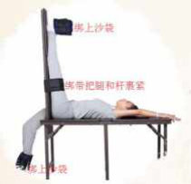
局部肥胖，大腿或小腿粗，后背肉厚（虎背熊腰），练双盘；手臂或肚子肥，练大礼拜。
体重标准，肉有点松，不够紧致，三个随便选一个；想要腰腹有马甲线，练大礼拜。
体重过轻（皮包骨的瘦，干黄干黄的），练大礼拜或双盘。
好看的瘦——“穿衣显瘦，脱衣有肉，胖不显肉，瘦不露骨”。
这只是相对的建议，比如体重严重超标的人，运动只是一方面，饮食等生活习惯也要注意的啦。
没有最好的方法，没有一个方法可以几天甩几斤肥肉（除了减肥广告），最感兴趣最能坚持的就是于己而言最好的。
双盘真的很痛，我是“奇葩”，花三小时双盘，不觉得浪费生命，反而乐在其中（我不是“正常人”），“奇葩”的我非常理解正常人的正常想法，真的没必要为了瘦身塑身练双盘，那么多瘦身塑身方法，不必选择最痛最“不人道”的双盘，刚好和我一样，想“虐”自己，就试试。
2015-09-10双盘三小时(第22次)(人睡神不睡)
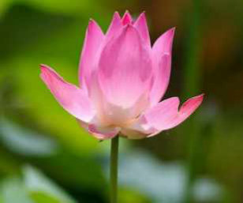
9月9号（昨晚），21：06-00：06，双盘3小时。
这是第22次双盘三小时，和之前21次的姿势一样——右腿在下，左腿在上。
第一个小时，闭眼静坐，杂念多。
后面两小时，听JT叔叔讲庄子。
进入第二小时，左膝盖和压下边的右脚踝开始痛，痛了就会不自觉的想乱晃动身体。
第二小时当中，就有痛到有点盘不住的时刻，幸好Jt叔叔讲的很对我胃口，偶尔听得入迷忘了腿上的不适，不过腿脚的不适很快把注意力抓回。
进入第三小时，痛感更强烈，注意力无法离开腿脚的不适，尤其是最后三十分钟，大口呼气，大口吸气，忍不住不间断默念“南无阿弥托佛”（不是佛教徒，单纯觉得这句顺口），特别想放弃的时候，也会念“我能行，我能行......"
最后十分钟，好像痛晕了，冒很多汗，熬到三小时，迫不及待放下腿脚，跟早前几次一样，很想大大，人生三急不能等啊，没等腿脚恢复，一瘸一拐上WC。
整个过程，两大腿的冰凉感比之前减轻，脚板底热，放屁特别多，想必和白天吃一个香瓜及晚餐的莴笋叶有关。
======================================================
几位网友看我最近为了双盘三小时睡得有点晚，提醒“睡眠比双盘更重要”。
非常感谢这么暖心的提醒！
我的理解是，睡眠对身体的影响是相对的。
正常情况下，睡眠比双盘更重要，像中医讲的那样，晚间11点到凌晨3点，是肝胆当令，有利于肝脏解毒排毒，有利于养气血。
在静心盘坐的情况下，就不一定。
我们睡觉，是要让神得到休息，只有神休息了，睡觉才像是身体开进加油站，然后起床时比睡前精力精神更好。
如果人睡神不睡，就像身体开到了耗油站，起床时人昏昏沉沉的，精力精神都不好。
怎么会人睡神不睡呢？
做梦的时候，神没有睡。（梦游的人也是神没睡）
前天晚上，我做了个长长的梦，梦里被敌人追杀，上天入地的和敌人对打，像武侠小说一样（小时候的武侠梦），一下飞在天上打，一下跳到海里打，打到敌人被灭完，我也累得瘫痪倒地，在梦里倒地的那一刻醒来，醒来真的觉得身体好累！
好像刚才真的在打仗一样！
好像梦里的追与跑真的作用在真实肉身！
睡觉是神休息的一种方式，还有一种方式可以让神得到休息——单纯静心或静心双盘。
一定是静心的双盘才可以哦，一边看书或一边干其他事的双盘，只是练腿，当然也是有好处的，就是改善这个肉身的健康。
如果双盘过程，没有杂念或杂念很少，那么神就可以得到一定的休息。
我很少进入完全没有杂念的状态啦，杂念很少的时候，能感觉到神得到休息了——比如中午不午睡的话，双盘静坐几分钟，好像已经午睡了一样，精神精力更好。
我双盘三小时的时候，一般都有个把小时闭目静坐，神可以得到一定的休息。
据说有些高境界的修行人，一天睡很少甚至不睡觉（叫夜不倒单），精神也特别好，神满不思睡。
我境界较低，会尽量遵照中医的观点来平衡双盘和睡眠。
2015-09-12双盘三小时(第23次)(双盘放下腿后的“美妙滋味”)
9月9号（昨晚），20：58-00：00，双盘3小时2分。
这是第23次双盘三小时，和之前22次的姿势一样——右腿在下，左腿在上。
前一个半小时，身体舒适，闭眼静坐，杂念多，出汗多。
后一个半小时，听JT叔叔讲庄子。
和上一次（第22次）一样，进入第二小时，左膝盖和压下边的右脚踝开始痛，膝盖的疼痛感和脚踝的疼痛感不大一样，前者好像里面有杂质，胀痛胀痛的，手心握着膝盖，五指用力按会舒服一点点；后者好像骨头刺痛。
第三小时，两个膝盖胀痛，简直不想要膝盖啊！
压下边的右脚踝痛感更强了！
左大腿（髋关节）也疼痛！
痛得没法端正坐着，有时候双盘着头点地（磕头），有时双盘着躺几分钟（保持腿上盘着，躺倒，背靠垫子，腿和上半身呈90度），有时咬着牙默念“南无阿弥陀佛””（不是佛教徒，单纯觉得这句顺口），什么励志话语都没用，心里飘过无数次“盘完这次，再也不干了，不干了，不干了......”。
（真是好变态啊！有点女人生娃，生的时候痛到觉得这辈子再也不想受这份罪了，但是生完立即被喜悦淹没，然后开始想二胎，我放下腿后很快就期待下一次双盘三小时“自虐”。）
熬到三小时，被又坚持一次的喜悦淹没，腿上依旧痛，却觉得还能忍，硬的再忍两分钟放下腿。
幸好这次盘完没想大大，放下腿，立即瘫痪了似的躺倒在飘窗上，腿脚一点力气都没有，平时伸腿举脚是毫不费力的事，这时不用手帮助的话，无力举起，没法动弹，没法下地。
假如这次想大大的话，只能叫家属来背着去WC了，幸好这次没有感觉。
一动不动躺了十几分钟，腿脚恢复得可以下地了（没有恢复到平常的正常状态，还是隐隐有点不舒服），盘得太累，喝了几口红糖水然后睡觉。
整个过程，两大腿的冰凉感比之前减轻，脚板底热，感觉肚子里的气在跑，跑着跑着就打嗝，打嗝放屁频率，比多的时候少，比少的时候多，盘完放下腿，还打嗝两次。
睡觉过程腿脚依然有存在感，略微的不适，不过不像以前风湿的那种疼痛让人难受，这个不适很轻微，也不像最开始双盘三小时那样盘完睡觉感觉血液快速冲刷而发热，现在的“后劲”小很多。
======================================================
网友：
小夕我受到你的影响，断断续续双盘也有4个多月了，自从一开始突破5分钟、10分钟、到达20分钟以后，就一直停留在20分钟的状态。
现在的20分钟和一开始的20分钟相比，不同的是，不那么难熬了，以前的15—20分钟那段时间，真是度秒如年，需要靠晃动身体，或做各种动作来熬，现在20分钟从头到尾坐着可以不动了，就是到后来腿会发胀发麻，也不是哪里痛，就是一种很不舒服的难受的感觉。
9月3日上午看阅兵那天，边看电视边盘，坚持了30分钟，最后的5分钟，又出现了度秒如年的感觉，但最终坚持到了。
有个问题想请教小夕：我每次盘完都需要很费劲才能把腿拿下来，把腿拿下来的时候，比盘腿的时候还要痛，痛过之后是麻，用手揉按的时候，腿会有一种难以描述的难受的麻，按小腿恢复快一点，如果按大腿的话，那滋味，我也无法表达了。
想问下小夕你盘完放下腿后是什么感觉？
这部分的内容你从没提起过，是不是我特别严重。
小夕：
恭喜你的坚持和进步！
我刚开始双盘的那几个月以及每次突破大的时间段，都和你的情况一样，每次很费劲才能把腿拿下来——咬着牙关，用手一丁点一丁点的掰动腿脚，腿脚实在太痛太痛了，尤其是脚踝，如果移动的幅度大了会痛到担心脚踝断掉。
把腿脚掰下来之后，各种难受都会有——痛，胀，麻，木，冷等等，觉得腿脚不是自己的了。
有时麻得好像有蚂蚁爬，放下腿后几分钟或十几分钟才能下地是常有的事。
现在盘一个小时很轻松了，盘的时候以及放下腿脚那会，腿脚的不适感比较轻微。
现在盘到两小时或三小时的时候，放下腿脚的感觉也是各种难受都有，有时恢复得快一些，几分钟可以下地，有时恢复得慢，像昨晚，盘完一是腿脚痛疼无力没法动弹，二是身体非常累，累得没力气睁眼没力气说话，一般休息十几分钟就恢复了。
我觉得双盘过程的痛都忍下来了，放下腿脚后的种种难受都还是可以忍受的，就没有多分享这方面，随着坚持，会恢复得越来越快。
像我第一次双盘两小时或三小时，腿脚以及身体的不适持续了好几天才完全消除（走路姿势都怪怪的）。
现在盘完三小时，一般第二天中午之后就没有明显不适了，第二天一大早还是有点不适，像昨晚盘完三小时，今天早上腿脚无力还有隐隐的不舒服（说不清什么感觉），就没有做大礼拜，等下午或晚上再做。
双盘后腿脚变轻便有力是在双盘的不适感完全退去的时候才显现出来的，不是盘完放下腿脚立即感觉腿脚轻便有力，没有那么快。
每个人盘完之后的腿脚感和身体感不尽相同，像我姐姐，她盘完会立即下地，直直站着，说那样才舒服，恢复得快。
我就没法这样，每次盘完，压下边的那个脚踝都弯得像回不直了似的，没法立即下地站着，要等很久，等脚踝复直了，才敢下地走动。
人类应该是很有主管能动性来保护自己身体的，像我们睡着的时候，有蚊子嗡嗡飞过，都会下意识的想拍它（不杀生的宗教人士可能不会）或赶它，说明我们的“神”很会保卫这副身体，睡着了都有“隐性卫士”值班，清醒状态下就更会自我保护了。
所以，双盘结束，根据自己身体感来做就好。
总之，双盘过程注意避风保暖，双盘结束时的不适感都会自动消失的。
2015-08-17双盘逼出内毒，好累
史上最好的双盘记录（7月22号，3小时20分）之后的三次大姨妈，每次排很多瘀血，好像跟以前痛经时整体经血发暗不同，现在除了瘀血之外的血是鲜红鲜红的，瘀血是暗块（有些是小“团”）。
（用“好像”，因为凭着模糊的记忆来对比，没“变态”到拍照留存做“科学”研究，尽管有过这想法，觉得太恶心没付诸行动^_^）
以前排瘀血的话，是每次去换WSJ或者去尿尿，好像是受“重力”影响而掉出来，现在不管坐着蹲着站着，经常感觉到瘀血掉出来，频率非常高。
说不清到底是体内能量较足，不需要特别的角度让重力发挥作用，还是我之前说过的，双盘会给下丹田注入新能量，生殖系统相关部分因为有新能量而变敏感，瘀血一出来就能感觉到。
下丹田能量不足的话，生殖系统会变木木的。
说个我的经历，今年夏天，有一次连续吃半个西瓜，之后的半天，尿尿的时候，那区块变木木的，就是尿尿的时候，不看的话，不知道尿完还是没完......
嗯，西瓜是会一下吸掉膀胱经很多能量的东西！
尿频尿不尽的人，不管急性还是慢性，是膀胱经能量不足，急性的是膀胱经能量一时不足，慢性的是膀胱经能量长期不足，练习双盘应该有帮助。（孕后期胎儿压迫膀胱导致的尿频尿不尽除外，那不是无形能量层面的问题，是物理层面确实有挤压存在）
这几次大姨妈排瘀血，除了和那一次双盘3小时20分有关，可能和这段时间双盘3小时频率较高有关，之前身体没有能量来处理这些瘀血，双盘3小时蓄积了些新能量，慢慢推动更深层的垃圾。
一方面，有点没想到，体内还深藏这么多瘀血！
今年五月份，应夕哥建议，我去医院做了全面体检，该照的机器都照了，检查子宫颈癌的宫颈刮片也做了，一切正常，所有指标非常好。
可见，体检指标有局限性，当体内藏的瘀血或废水或废物的量还不到某个限度的时候，是查不出来的。
中医把病分为“未病”、“欲病”、“已病”，体检能查出的是“已病”，前两种查不到，所以我不喜欢体检，相信自己对身体的觉知越来越敏感，人比机器更灵敏。
有主见是好的，太自我不大好嘛，毕竟不是孤家寡人，从了他，乖乖体检去。
另一方面，体内藏这些瘀血，也在意料之中，因为我经期上半身和下半身温度明显不一样，这个小表现已经存在几年。
主动逼出内毒，好耗能量啊！
表现为：
一，这几次大姨妈有点提前，这个月提前了四天（几年未遇）。
二，这次大姨妈到来的前两天晚上，计划盘三小时的，盘一个小时就瞌睡得不行，连续两晚放弃双盘三小时，早早睡觉。
三，大姨妈头三天，非常累，浑身不舒服——像双盘三小时最痛阶段的那种感觉，大腿根部的盆骨骨头里冒寒气。
四，大姨妈的第四，五天晚上，连续两晚做春梦（干嘛交代这么详细？），醒来有点惊吓，白天既没看不穿衣服的电影也没动淫念啊（不可能在大姨妈期间动淫念啊啊啊），感觉是排瘀血用掉太多下丹田的能量，下丹田一时虚空而梦得香艳。
五，大姨妈期间脱发至少是平时脱发的三倍之多。
我个人觉得，不是所有的“春梦”都大伤元气，下丹田能量充足时的春梦，像男性“精满自溢”一样，水满自动从上面溢出（这种小蝌蚪出逃应该不会“大伤元气”），不是底部有洞偷偷漏（这种“大伤元气”）。
下丹田充盈的春梦和下丹田虚空的春梦的梦境不大一样，醒来时的身体感不大相同，咳咳，这是个人体会，不是收集大数据得出的结论，等以后弄更明白了再写（养生博客，好像没必要写这种尺度哈）。
不知道什么时候才排完瘀血，等着看。
接着出去半个月，可能不好安排时间每次双盘三小时了。
双盘的同时每天都有做108个大礼拜，把这几次例假反应归为双盘的影响，因为春夏季加大量做大礼拜的四个月没有这样，双盘三小时频率较高后明显排瘀的。
事情尚在发展中，不确定自己的想法是否正确，仅供参考。
2015-10-18双盘三小时(第24次)(少量多次双盘也有效)
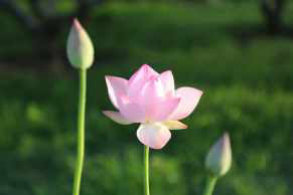
10月17号（昨晚），19：56-23：07，双盘3小时11分。
这是第24次双盘三小时，和之前23次姿势一样——右腿在下，左腿在上。
前60分钟，身体舒适，气比较足，腰背自然正直，闭眼端坐，心比较静，出汗少（不像之前中途出汗多到要换干上衣）。
到60分钟的时候，两个膝盖隐隐不舒服，渐渐静不住。
第60分钟到120分钟，感觉身体里的气没第一个小时那么“够用”，腰背渐渐变塌，没法像第一个小时一样端正静坐，动摇西动，心不静，念头奔腾不息。
第120分钟到150分钟，膝盖的不适加剧，一边听正安聚友礼的节目，一边干脆双盘着做“小礼拜”(自创的名字^～0)，就是在双盘坐，手和大礼拜一样，举过头顶，合掌，从头顶一路下来，到喉停一下，然后推或伸出去，头着床......就是双盘着拜。第150分钟到180分钟，还是听正安聚友礼，只为消磨时间，膝盖难忍得听不进具体讲什么，两个膝盖的不适似乎不是疼痛，像有刺一样，刺而胀（自我感觉是里面有“杂质”），处于下面的右脚踝略微不舒服，和之前双盘3小时的脚踝疼痛相比，算是大大减轻了。到180分钟的时候，想着好久没盘3小时（距离上一次双盘3小时已经超过1个月！人要松懈真是太容易了！），能忍就多忍一下，听笛子版《大悲咒》，多忍11分钟，最后这11分钟没白忍，多放了几个屁（能感觉到，如果不是多忍这11分钟，这些废气可能就要休眠到下次有力气才排了，早放早轻松哈）。放下腿，膝盖非常痛，不过心好爽，每“虐”一次自己，就多一分成就感。整个过程中，都有打嗝放屁，比以前像放鞭炮一样的排气，频率少了。放下腿后大概十分钟就恢复了，晚上睡觉时，右膝盖隐隐有“存在感”（略有不适）。
今天早上，六点多自然醒（每次双盘三小时之后睡眠都自动少一点，神满不思睡？），起来做108+58个大礼拜（前段时间出去，被迫停大礼拜半个月，想多做几十个“补起来”）。
这次双盘三小时，和之前23次相比：膝盖疼痛的程度明显减轻了一点点，放下腿后复原也明显快。
这次双盘是大姨妈刚刚结束，明显感觉比之前大姨妈刚刚结束时的身体能量水平更高。
不知道是不是因为这几天拔掉一个顽症——之前一直有提到，我平时身体及手脚都非常暖和（包括气温低到几度乃至零度的天），可是，只要大姨妈一来，就算是六月天，也变上下身分离，像两个人一样，下半身体温明显比上半身低，好像中间有某个点没打通。
这次大姨妈，这个上下身温差消失啦（终于上下身合一！）。
拔掉这个顽症的方法，偶然+神奇！太不可思议了！改天单独写！
=====================================
上篇博文，关于找死的”性“话题，先留坑，慢慢填，一年多前读JT叔叔的《调阴阳》，很多地方当时没弄明白或有疑问的，在这一年多的”练功“实践中，渐渐明朗不少（咳咳，和双盘带来的身体感离不开关系）......下面先说双盘。
距离上次双盘已经一个多月，这一个多月，有个大心得——少量多次的双盘也非常有效！
这一个多月里，我每天都双盘，包括外出的半个月。
长时间双盘后腿脚会有些不适（对于目前的我来说，双盘两小时以上算长时间），奔波在外那段时间，以身体舒适为重，没有一次盘两三小时，一般盘一个多小时，痛了休息，然后换个姿势继续。
同时练习大礼拜和双盘真的不错，就算外出期间没有条件练大礼拜，双盘是想练就可以随时随地进行——外出期间，我在汽车上双盘，在火车上双盘，在高铁上双盘，在飞机上双盘......
私人空间之外双盘，都挑隐蔽的位置，悄悄地，低调地，用宽大衣服盖住腿脚，保证鞋子袜子无异味，保证不妨碍旁人哈（咱是练双盘的奇葩，要时刻理解非奇葩的大众，别把自己整出一副神叨叨的模样让别人误会误解）。
有几天在长途车上（比如成都到九寨沟是十个小时的长途汽车），我在长途车上反复双盘，座位小，一路摇晃，双盘水平大大降低，最长盘了1小时40分钟，放下休息一会，换姿势，痛了又放下，休息一会，继续换姿势，更换几次，到后来呢，盘20分钟腿脚也痛，最后退回到只能单盘，单盘也痛，就只好正常坐着了......
这样少量多次的双盘，也会打嗝放屁，幸好已经过了排旧屁高峰期，在车上那些“公共场合”排的是闷闷的新屁，既没有熏到自己，也没有影响他人（阿弥陀佛~）。
路上奔波，比平常在家累，吃住不安稳，一大早赶路，没有大大，在车上身体有点闷闷的，这样双盘之后，那股闷劲会渐渐散开.....有几次，搭长途车到达目的地，入住酒店第一时间就大大，拉一大堆，身体一下变很轻松，如果没有路上几小时的双盘，可能身体没这股劲推动的（像我这种“便秘敏感”体质，也许和割掉烂尾有关，吃住行有波动，就容易便秘）。
还有一点，也反应了少量多次双盘的效果——回到家的第二天早上，我一口气做2组108个大礼拜，大概因为暂停大礼拜期间双盘次数多，居然没感觉身体僵硬不利索，腿脚也比较有劲。
我感觉，一次不换腿的长时间双盘，比多次换腿的短时间双盘，效果会更好一些；多次换腿的短时间双盘，比单盘或不盘效果好得多。
本文配图来自百度图库，如有侵权，请联系小夕删除。
本文文字为小夕原创，欢迎分享，转载请注明出自“小夕养生记录”。
2015-10-20双盘三小时(第25次)(家族有精神疾病史者可以练双盘或大
礼拜吗？)
10月19号（昨晚），20：13—23：15，双盘3小时2分。
这是第25次双盘三小时，和之前24次姿势一样——右腿在下，左腿在上。
前60分钟，身体舒适，关注呼吸，后背微微出汗，感觉是静极生动的出汗，不是气温高的出汗，这两者出汗身体感有点差异，前者出汗时能感觉到汗从毛孔渗出的过程（详情请看《双盘静坐体会：奇妙的静极生动》。
和上次一样，也是到60分钟的时候，两个膝盖隐隐不舒服，注意力总是被膝盖的不适感抓过去，静不下来。
第60分钟到120分钟，心静不下来的时候，总是想找点事情做，尤其想做点事情应对膝盖的不适——又做做“小礼拜”(自创的名字^～0)，就是在双盘坐，手和大礼拜一样，举过头顶，合掌，从头顶一路下来，到喉停一下，然后推或伸出去，头点垫子......就是双盘着拜。第120分钟到180分钟，听正安聚友礼的节目。最后20分钟，度秒如年，秒秒钟想放下腿，压下边的右脚踝刺痛，腰部有点酸胀，膝盖痛感剧烈，两个膝盖呼呼往外冒寒气，隔着裤子摸膝盖是冷的，真正的寒是由内而外的，盖多厚都没用，掌心暖和，用掌心捂着膝盖，同时手指用力按压会舒服一点点。丝丝寒风是膝盖骨头深处往外吹的，手心捂在膝盖上，跟把手伸进冰柜的感觉一样，还好手心比较暖和，捂着的时候，手心的暖和膝盖的寒相比，手心的暖更强一些，如果手心的暖抵不过膝盖的寒，可能像抓冰块一样，抓几十秒，手就冻到了。之前大腿也冷，现在大腿不冷了，脚板底也是暖的，仅仅是膝盖冷。这次的第三小时，不适程度比上一次强烈，身体明显更累（今天早上起来做了108个大礼拜，就爬不动了），想来是上一次双盘三小时的“后劲”没完全退，间隔一晚，还没很好的复原。
这两次双盘三小时，比之前进步的一点是——盘完之后第二天，膝盖和脚踝已经没有明显发凉！（不确定和这段时间用艾绒坐垫双盘有没有关系？艾绒坐垫在我身上是展现了个小奇迹，下次单独写）==================================================有网友问，家族有精神疾病史者可以练双盘或大礼拜吗？网友原文：小夕，你好！你在新帖中提到了三个方法，拉筋、双盘和大礼拜。我之前有不间断的拉筋，后来中断了一年半的时间，今年又开始拉筋，虽然不是坚持得很好，但拉过再拉还是要容易许多，现在不会有酸的感觉，只是胀，然后像无数小针刺一样的痛。而且是一个地方胀完再到另一个地方，大概是气在走动吧！最近的一段时间看你的新帖，尝试了一下双盘，拉筋之后能盘上是相当容易的，我可以半小时也觉得没什么，不会痛啊麻啊难以忍受。但是我姿势可能不正确，腰背没挺直吧，我感觉我背好酸啊，很酸，比腿还受不了。不过我多数时候是在玩手机。至于大礼拜我接触晚，没有练，看了小夕秀的图很想练，不过现在没时间。拉筋是比较难受，也蛮废时，但是拉完后腿很舒服，我个人也还蛮喜欢艾灸拉筋和双盘。但是我看完帖子才发现其中有一段话，这三个方法不适宜练人群的第二条就写了家族中有精神疾病史最好不要练。让我从信心满满跌落到谷底。我们家上一辈我一个姑姑是精神病，是经常疯跑出去找不回的那种，很可怜。我一个堂姐因为打工各种受挫还是怎么的，也是精神抑郁吧，反正就是不太正常，好在现在吃药控制。接触小夕后，认识了一些养生的方法，譬如艾灸拍打拉筋，我从呼吸一口气说句话都累，身体渐渐有了一些好转，当然现在身体依旧还是差。当我看到这一条禁忌真的是好大一个打击，刚刚萌出的一点点劲头啊，虽不至于万念俱灰，但是心底真的是失落灰心！虽然我啥也没练出个名堂，暂时也还没有啥宗教信仰，精神疾病真像一个魔咒，我还是蛮恐惧的。小夕：不好意思，这段时间比较忙，拖这么久才回复（保证不是拖延症，确实时间少，哈哈哈）。
我从胡涂医先生博客接触到大礼拜和双盘，他在其他养生方法的练习禁忌中有提到过家族有精神疾病史者不要练，不过在大礼拜和双盘的博文中没看到这点。
我在帖子里写那句禁忌的时候，练习双盘还不到两年，练习大礼拜也不到两年，当时的经验比较有限，心不够放松，为了安全起见，随意写上去的。
站在现在看，我觉得，也许不用那么在意这条“禁忌”。
不知道几代之内算家族有精神疾病史？
我们每个人一般就对爷爷那一辈比较熟悉吧，再往上，爷爷的爷爷那一代是什么情况，有没有精神疾病者，都不清楚啊。
我出生的小村庄，人很少，都是同姓，往前推五六代，估计都是一个祖宗，我小的时候，村里有一个人是精神异常的，不知这算不算家族有精神疾病史？
我把这两个项目当普通减肥健身方法来练的，觉得只要身体状况适合，就可以练吧。
所谓身体状态适合，是说硬件上的适合，比如膝盖断过的人没法练双盘，就不要强练啦。
我还没有宗教信仰，偶尔听《心经》听《大悲咒》，算是当“流行音乐”听的，单纯喜欢那个调调而已。
佛家说“放下屠刀，立地成佛”，说明“自己”才是最重要的。
《金刚经》里说“过去心不可得，未来心不可得”，说明“当下”才是最重要的。
在各种业力牵引中，如果要考虑家族因素的话，也是排在“自己”和“当下”之后了。
2015-10-23双盘三小时(第26次)(避免双盘腿弯)
10月22号（昨晚），21：10—00：11，双盘3小时1分。
这是第26次双盘三小时，和之前25次姿势一样——右腿在下，左腿在上。
前60分钟，闭眼静坐，身体舒适，杂念多。
60分钟之后，两个膝盖隐隐不舒服，注意力总是被膝盖的不适感抓过去。
第60分钟到120分钟，心静不下来的时候，总想做点什么，这里按一下，那里揉一下，动摇西晃。
第120分钟到180分钟，听正安聚友礼的节目。
最后40分钟，度秒如年，压下边的右脚踝刺痛，两个膝盖没有像上一次往外冒寒气，不过掌心隔着裤子捂膝盖，还是感觉偏凉，掌心捂着的同时手指用力按压会舒服一点点。
膝盖痛到要飙泪，后背躺倒在垫子上，背和腿是呈90度，腿上保持双盘——相当于躺着双盘，这样也还是痛，忍不住后背倒在垫子上滚。
膝盖的这种痛，和痛经的痛，和割破手指的痛，和跌倒的痛......都不一样，这种痛，好像里面胀了很多杂质似的，念什么励志话鸡汤语都没用，念“南无阿弥陀佛”也没用，只想暴粗口——“真TM痛啊”。
秒秒钟想把腿放下，又想着好不容易熬了前面两个多小时，咬牙忍着吧，反正死不了！
痛到最后，好像浑身都没力气了，有意识的深呼吸然后大口大口呼气才好受些。
倒计时的铃声响起，咬牙多忍一分钟，那一分钟，膝盖好像真的痛到极致了，我甚至想着自己以后再也不双盘三小时了。
放下腿脚，一动不动，闭眼躺了几分钟，从极致的痛中过来，好像又升起慈悲心了呢，叫夕哥倒开水都更温柔了，握着他手的时候，好像自己死里逃生似的。
据说人要破除惯性影响，克服自身缺点（诸如懒惰，拖延，散乱，缺乏勇气，没有力量......)，在一成不变的生活中是很难迈开一大步的，往往需要一个“大事件”像雷一样敲打自己，才容易转折。
每一次双盘三小时的痛，就像这样一个雷，痛是心神在管，每熬过一次肉身的极致的痛，心就像获得一次重生。
每一次双盘三小时的体验都很不一样，上一次是两个膝盖冒寒气，这次两个膝盖没那么冷了，就是痛到不行，晚上睡觉的迷糊中还能感觉到膝盖是痛的，这次痛的强度大概是双盘三小时这么多次当中排前三的。
盘的过程，都有打嗝和放屁，频率不算多。
整个过程脚板底都暖和，放下腿后，脚踝和膝盖也没有明显发凉。
今天早上起来，膝盖还是痛的（依然可喜的是，昨晚绑着艾绒护腰护肚睡，腰下还垫艾绒坐垫的艾绒芯，早上脚一踏地就有大大感觉），慢慢跪着做了108个大礼拜。
不是拼命得非要在膝盖痛的时候也坚持，我是觉得大礼拜可以让身体更舒展更通畅，对缓解膝盖痛应该有帮助。
中午之后，膝盖基本恢复正常，到了晚上这会，好像已经忘记昨晚多痛了，开始期待下一次双盘三小时（进入“自虐循环模式”）。
==============================
之前博文写过双盘不会导致腿弯，那是我个人的体会，我练双盘之前没有腿弯，练习双盘半年，开始做大礼拜，然后一直不间断的坚持两个到现在两年多也没有腿弯。
昨天一位网友留言她的个人体会，我觉得有借鉴意义，截图如下，供同修参考。
双盘三小时（第26次）（避免双盘腿弯）
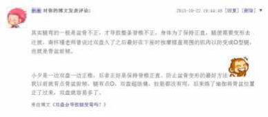
谢谢这位网友分享！
我们多看一个不同角度的观点，多听一个不同角度的意见，更利于找到适合自己的那个平衡点。
我每次双盘之前，没有做任何热身动作，每次双盘结束，也没做什么按摩放松，不确定腿没弯和大礼拜是不是有直接关系。
最近时不时觉得有点像踩了狗屎运一样，无意中做的事，莫名奇妙就“做对了”——像前天博文记录的，用个艾绒护腰护肚睡觉，居然莫名其妙把“顽症”搞没。
把自己慢慢折腾得身柔心顺，老天也开始怜惜了吗？
2015-10-26双盘三小时(第27次)(脚都逆生长了，脸还远吗？)
10月25号（昨晚），21：15—00：18，双盘3小时3分。
这是第27次双盘三小时，和之前26次姿势一样——右腿在下，左腿在上。
前60分钟，闭眼静坐，身体舒适，有那么一瞬，身体轻盈得好像没有了存在感，脱离地心引力似的，很舒服。
第60分钟到120分钟，两个膝盖隐隐不舒服，心静不下来，听《心经》和做小礼拜度过一小时。
小礼拜是自创的名字，就是双盘坐，手和大礼拜一样，举过头顶，合掌，从头顶一路下来，到喉停一下，然后推或伸出去，头着垫......也就是双盘着拜。
第120分钟到180分钟，听JT叔叔讲《庄子》。
上一次双盘三小时的最后四十分钟实在太痛，有点留下阴影，这次进入第三小时，就在等膝盖痛。
真是奇了怪了！
整个第三个小时都没很痛，既没有像上次那种胀得像杂质乱扎般的难受，也没有上上次膝盖往外冒寒风的极度寒冷，仅仅是略微有点凉。
如果把上次的痛感记为十分，是所有双盘三小时中最痛的前三位；这次的痛感大概只有两分，是所有双盘三小时中最不痛的前三位。
怎么和上次差这么大呢？痛去哪里了？
上次（22号）双盘完三小时，从23号晚开始睡在艾绒褥子上，同时绑着艾绒护腰护肚睡。
睡两晚的艾绒褥子，双盘就变这么不痛，难道和艾绒有关？引起痛的寒和瘀被艾绒吸走了？
只是一个猜想而已，双盘过程中疼痛的反复与波动太正常了，在没达成稳定的全程舒适的双盘三小时之前，每一次都不知道下一次还会不会痛，等着看后续情况，继续检验哈。
我不想把艾绒说得那么神奇，假如说真的是艾绒发挥了些许作用的话，我更愿意相信，是因为坚持双盘和大礼拜两年多，身体折腾得比较通畅了，比较容易吸收艾绒的阳气。
盘到3小时3分，痛感微弱，还可以继续坚持一会，只是时间太晚，想早点睡，就放下脚了。
放下脚后几分钟就恢复了，晚上睡的过程也没感觉到腿脚有不适，早上起来似乎已经完全没有双盘三小时的“后劲”。
===================================================
最近有几个人跟我聊到，双盘几个月后，脚板底出现各种变化。
我姐姐说，最近双盘频率高，双盘时间长（短短半年，她已经可以双盘一个半小时，比我快太多了），脚丫子烂烂的，脱皮，出水......
我双盘到现在两年半，脚板底也经历了很多变化，换了好多次皮。
以前，有脚气，老长湿疹，脚丫子和脚板底经常溃烂脱皮（百孔千疮的），脚后跟像老人的脚后跟——粗糙，皮厚，皮很硬，摸上去木木的，冬天会干裂，现在恢复正常皮肤了，嫩多了。
双盘进行时的脚板底，也经历多个阶段——最开始盘的时候，脚板底胀得瘀紫瘀紫的，非常凉......现在盘着的时候，脚板底都是正常红色了，全程都是暖暖的。
感觉脚比脸变得快些，期待脸的改变。
2015-11-01双盘三小时(第28次)(“为何用你家艾绒垫没效？”)
10月31号（昨晚），19：57-23：00，双盘3小时3分。
这是第28次双盘三小时，和之前27次姿势一样——右腿在下，左腿在上。
前60分钟，闭眼静坐，身体舒适。
第60分钟到120分钟，两个膝盖隐隐不舒服，听JT叔叔讲《庄子》。
第120分钟到180分钟，听正安聚友礼节目（详情《我的正安聚友礼》）和《心经》。
上上一次双盘三小时的最后四十分钟实在太痛，是所有双盘三小时中最痛的前三位；上次却不怎么痛，是所有双盘三小时中最不痛的前三位。
特别好奇这次会是什么反应？
整个第三个小时就是压做下面的右脚踝很痛（骨头被磕到似的），痛到一直用手捏，两个膝盖只有略微的不适，没有像之前胀得像杂质一样的难受，也不怎么凉，隔着裤子摸，凉感弱弱的（手心本来比较暖，相比之下它显得凉一点，之前双盘三小时到后面发冷严重的时候，不用掌心摸，也感觉冷，掌心捂着就明显有温差，最冷的时候就是上上次双盘三小时——感觉有寒风往外吹）。
除了每天双盘和大礼拜，最近半个月都绑艾绒护腰护肚睡，最近一周睡做艾绒褥子上。
不知道到底是哪个因素起作用，使得膝盖变化这么大。
我怕自己把艾绒的功效说得太神，让大家期望过高，我是很清楚的知道——因缘和合，一个结果往往不是一个因素导致的。
或许艾绒有一点点帮助，此外，可能是双盘两年半且双盘三小时这么多次，内寒真的被逼出很多了，这是一直以来累积出来的结果，还有，可能这是暂时的不凉而已，身体拔内寒就像剥洋葱，目前只是做储备能量拔下一片洋葱，而不是已经把到最后一层（留待之后的双盘三小时检验）。
整个过程，打嗝放屁大概5，6次，比之前少很多。
距离上次双盘三小时已经五天，没双盘三小时的这几天晚上会双盘个把小时，觉得双盘三小时力道要强很多，好像跟大宇宙链接了一下，白天忙得灰头土脸的，盘完给心加了一缕清风似的，浑身似乎多了一丝清爽之气。
放下腿后，几分钟恢复，晚上睡觉没感觉到腿脚不适（之前好些次盘完三小时，睡觉中会感觉腿脚略有不适）。
早上起来做108个大礼拜，没有明显的双盘三小时的“后劲”。
======================================
网友：
昨晚用2个艾绒垫子（小夕注：在我家小店买的），一个垫肚子一个垫腰背睡觉，为什么一点效果都没有啊，大便也没有成形。
反而睡得很不好，很浅眠，一直在迷迷糊糊怪梦连篇中。
小夕：
不知道MM平常的身体处在什么状况？睡眠情况如何？大便是偶尔不成形(一周一两天不成形，其余时间成形)，还是大部分时间既没有便意也不成形？大便不成形的历史是一两个月，几个月，或是几年？像我在博文《神奇！艾绒拔掉七年顽症（入手艾绒坐垫的亲一起来检验）》写的那样，我用艾绒垫垫睡之前，似乎是差那么一口气来推动肠道，艾绒刚好补到这口气，所以大便明显更好。假如是六七年前，我要么十天半个月没有便意，要么长期大便不成形，这种资深大便异常状态，说明身体“瘀，堵，虚，寒，湿”非常严重，差的不是一口阳气，而是一大罐阳气。这种情况，用艾绒垫子，就像差十万块钱的人拿到一百块的资助。我养生七年之后的现在的身体，用艾绒垫子，大概像差两百块钱的人拿到一百块资助。我们晚上入睡后，生命活动收归于内，阳气弱，阴气重，容易在体内沉积寒湿之气，把艾绒垫子垫在腰下睡，可以很好的吸附这些寒湿(有些人早上起床腰沉背重，白天好转，这类人用艾绒垫，效果最明显)。也许你现在“感觉”不到效果，不是没有效果，而是体内的寒湿之气没有累积到第二天起来不舒服的那个临界点，所以这些湿寒之气被吸走了也感觉不到身体显著变清爽。如果贴身垫着艾绒垫，被垫的部位完全感觉不到艾绒与皮肤相互作用的丝丝暖意，说明内寒太重，像十斤的冰块在烤微弱的蜡烛之火，建议先大力除内寒。
以我实践中医养生七年的体会来看，似乎没有一种方法对所有人奏效，对任何一个方法抱过高的期望可能都会有失望。
在追求健康的路上，在可承受的时间，精力与金钱的情况下，只有不断尝试感兴趣的方法，才知道哪个最适合自己。
网友：
谢谢小夕详细回复。
说到身体状况，我是一肚子的心酸啦。
我是千年老寒湿的体质。
初中就查出大三阳，不好意思去看病，只好以自己的方式一知半解地养生，那时普遍的说法是大三阳是热气，肝阳上火什么的。于是我各种下火，什么绿豆汤，溪黄草，茵陈，王老吉，苦瓜....
所以我的身体很寒，湿气重。脸色笼罩一层黑气，嘴唇也是紫黑色的。口臭，痰多，口水都是黏的，每天都很累，懒得动，懒得说话。
反正各种寒湿，一言难尽了，跟着小夕双盘就是了。
以前大便是青黑色的，烂泥样，还黏，3马桶水都冲不下去。双盘几个月后，现在颜色变成黄色了，只是还烂，还黏，但是没以前那么黏了。
继续双盘...
小夕：
抱抱亲爱的!我曾经也是千年老寒，非常理解这背后的艰难，双盘几个月，大便从青黑色变成黄色，这是非常了不起的效果呢，说明脾胃已经开始走上工作正轨。
以前的大便状况，说明脾胃被寒到已经罢工，扭转这种趋势太不容易了，你做到了!大便还黏，是阳气还不够用，不足以散掉体内的湿气。原本寒湿重的人，长养阳气不是一两天的事。咱加油继续双盘，晚上在腰部垫子艾绒垫睡，避免新增湿寒之气。加油!
2015-11-06双盘三小时(第29次)(忙而心死，静而心活)
11月5号（昨晚），21：00-00：25，双盘3小时25分，至今双盘时长的最佳纪录，之前的最佳纪录是3小时20分（即第12次双盘三小时）。这是第29次双盘三小时，和之前28次姿势一样——右腿在下，左腿在上。前60分钟，闭眼静坐，好些没了身体的存在感，很舒服，以前看到“轻安”这个词，不知道是什么状态和感受，昨晚体会到的状态应该是“轻安”。身体没有任何障碍，除了呼吸，身体一动不动，杂念少，忽然左耳朵里好痒，很想挠，忍着没动，过了一会那个痒就消失了，接着后背肩胛骨下有个位置痒，很想挠，依旧忍着不动，不知不觉，那个痒也消失了，渐渐进入“静极生动”状态——感受汗水从毛孔一点一点渗透出来，皮肤表面微热，暖暖的，后背，前胸，太阳穴周围除了一层薄薄的汗水，衣服渗湿了，不像普通动态运动的出汗，一下大汗淋漓。有个词说“自带光芒”，在静极生动的时候，好像自带“小太阳”。接近60分钟的时候，换了一件干衣服。过60分钟，腿脚略微麻，身体的存在感回来了，杂念也跟着来，静不下来，身体的气没有第一个小时那么充足，身体有点“松懈”（第一个小时的身体正直而放松），把艾绒护腰护肚绑身上，“补补气”。从60分钟到双盘结束，听正安聚友礼节目和罗胖的《罗辑思维》。很久没听《罗辑思维》，昨晚听《什么是有钱人》，讲洛克菲勒家族，挺有趣，老洛克菲勒创下富可敌国的商业帝国，除了赚钱，人生安排也惬意，五十多岁退休，活到九十八岁。回头搜资料，了解到老洛克菲勒在小时候就立下两大人生野心：一是，赚到100千美金(约为2007年的三千万美金)；二是，活到100岁。不管赚钱还是长寿，这个牛人都“高瞻远瞩”立下志向，最后离目标寿命只差两岁，此生圆满啊。
盘到三小时，腿脚不适的程度较轻，节目没结束，干脆盘着听到结束，最后盘了3小时25分，要是再忍10分钟也没问题，时间太晚，想早点收工睡觉，就放下了。
最后一个多小时，和上次一样——压在下面的右脚踝痛，两个膝盖只有略微的不适，没有像之前胀得像杂质扎一样的难受，也不怎么凉，隔着裤子摸，凉感微弱（手心本来比较暖，相比之下它显得凉一点而已）。（不确定和这段时间用艾绒护腰护肚以及艾绒褥子有没有关系）
整个过程，打嗝放屁都少了，大概只有5，6次。
放下脚几分钟，腿脚就恢复了，睡觉中没有不适感，睡得很沉，早上早早自然醒，起来做大礼拜，膝盖有点无力，膝盖和脚踝都没有像以前盘完三小时之后发凉。
PS：大前天晚上，计划双盘三小时的，盘到两小时二十分，想大大（当天早上起床脚一落地已经上了一次），只好放下腿解急，刚放下腿，压下边的右脚踝痛且“弯”没法下地站立，家里那位帮扶着半边身，一瘸一拐到洗手间——时常觉得把自己整成这样，够“自虐”的，还好腿脚恢复很快，“回程”自己走的。
痛可忍，想大大无法忍，浪费了一次双盘三小时机会，不然这次就是第30次啦。
2015-11-12双盘三小时(第30次)(经期能双盘吗？)
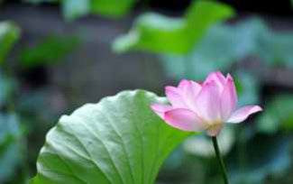
11月11号（昨晚），21：10-00：15，双盘3小时5分。
这是第30次双盘三小时，和之前29次姿势一样——右腿在下，左腿在上。
前60分钟，闭目静坐，舒适愉悦，好像在辽阔的宇宙中独自遨游，双十一狂欢仿佛发生在另一个世界。
伴随腿脚不适而来的身体存在感比前两次双盘三小时来得早一些，气不足而带来的身体“松懈”也比前两次早一些，大概50分钟左右，心渐渐没法静，杂念不断，身体没法保持正直而放松，老想乱动。
从60分钟到双盘结束，听正安聚友礼节目和罗胖的《罗辑思维》。
最后时段，和上次一样——压在下面的右脚踝痛，两个膝盖只有略微的不适，没有像之前胀得像杂质扎一样的难受，也不怎么凉，隔着裤子摸，凉感微弱（手心本来比较暖，相比之下它显得凉一点而已），所以没有像以前痛得一到三小时就迫不及待放下来，这次再忍几分钟也可以，时间晚了，想睡觉，没继续坚持。
整个过程打嗝放屁少，大概3，4次。
放下腿脚，3分钟左右就可以下地活动了，睡觉中没感觉到双盘三小时的“后劲”（以前双盘三小时会有“后劲”，比如腿脚略微不适或膝盖以及脚踝发凉），早上起来做大礼拜，膝盖有点点无力。
第一个小时里，腿脚不适和身体松懈来的比前两次早，大概因为这次是大姨妈第三天（一般第五天结束），身体能量水平比平时低。
不过感觉到，身体能量水平已经比过去显著提升，以前大姨妈期间双盘，明显倒退，很快会腿脚不舒服，盘的时间比平时短很多。
这是第一次在大姨妈期间双盘三小时，全程的疼痛程度挺轻，算是身体的一个里程碑式进步吧。
这次不是专门挑例假期间双盘三小时来检验身体进步，而是觉得距离上一次双盘三小时又5天，一拖再拖，容易荒废。
这段时间上艾绒护腰等产品，事情颇多，每天都有抽时间双盘，但短时间的双盘没有盘三小时那么“带劲”。
昨天白天，翻看去年双十一的博文，刚好那天双盘突破两小时，当时记录的熬腿疼痛，记忆犹新，当时写到“我想要通过这件事（双盘），打破旧的自我，建立新的自我，最终追求无我。”
一年后的双十一，希望自己不要忙着赚钱而忘了心中的期待——全程舒适无障碍的双盘三小时。
一切都来得刚刚好，心想的时候，身体跟得上，可能刚好身体也到了一个新台阶，不然光有决心，也不一定能在例假期间完成双盘三小时，决心尽量跟身体状态匹配哈。
=======================================================常有网友问，经期能不能双盘。很多问题都没有标准或正确答案，每个人身体状况不同，答案因人而异。之前的经期，我一般短时间盘一下（半小时或个把小时），经血以及周期都没有因为双盘出现异常，也没感觉到什么不舒服，反而觉得对排出经血以及推出瘀血挺有帮助，那会身体能量水平在经期明显低，腿脚很容易疼痛，平常能盘一个小时的，经期大概只能盘20-30分钟。这次是第一次在经期双盘三小时，盘完感觉还好，没有明显疲倦什么的，后续的长久“影响”，还待时间检验。一定要给建议的话，如果经期血量特别大或者持续时间特别长（超过7天）或者明显疲倦无力，就不要双盘喽；想在经期双盘的人，留意身体反应，只要觉得不舒服，就停下。（我还没到达“彼岸”，一个在路上探索的人的建议，仅供参考。）每个养生方法，都有很多门派发展出不同的看法，我也不知道应该听哪派的，咱是选择的主人，想听谁的听谁的，边试边看，怕的不做，做的不怕。
2015-11-14双盘三小时(第31次)(“为何双盘效果没你好？”)
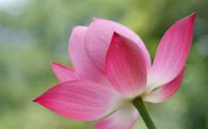
11月13号（昨晚），21：43-00：46，双盘3小时3分。
这是第31次双盘三小时，和之前30次姿势一样——右腿在下，左腿在上。
前60分钟，闭目静坐，身体舒适。
从60分钟到双盘结束，做了一下小礼拜，重温梁冬老师和徐文兵老师讲《黄帝内经》，依旧听得愉悦。
小礼拜是自创的名字^～0，就是在双盘坐，手和大礼拜一样，举过头顶，合掌，从头顶一路下来，到喉停一下，然后推或伸出去，头点垫子......就是双盘着拜。
最后时段，依旧和前几次一样，——压在下面的右脚踝痛，两个膝盖只有略微的不适，没有像之前胀得像杂质扎一样的难受，也不怎么凉，隔着裤子摸，凉感微弱（手心本来比较暖，相比之下它显得凉一点而已），所以没有像以前痛得一到三小时就迫不及待放下来，这次再忍几分钟也可以，时间晚了，想睡觉，没继续坚持。
很开心，似乎身体真的有大进步了耶！！！（似乎是个推测而已，会不会有大反复还说准，像第25次双盘三小时就莫名其妙痛得无法忍受）
这次是大姨妈第五天，和上一次双盘三小时只隔一天，全程的身体感挺轻松，没有像以前那样，双盘三小时后要几天才恢复到可以再次双盘三小时，也没有像之前那样，大姨妈期间或刚结束的一两天双盘水平显著倒退。
全程打嗝和放屁大概5次左右，比较少了。
放下腿后，很快可以下地行走，晚上睡觉中腿脚没有不适，早上起来膝盖略微有点无力，做了58个大礼拜(等会再去补50个）。
========================================================
网友问，坚持双盘大半年，但是效果没有我那么好，以前冬天怕冷，现在还是冷，身体状况和我以前最糟糕的时候差不多，膝盖以下冰凉，膝盖常常冒冷风，双盘之后改善不明显，为什么呢？
双盘大半年，效果没我好，好正常的。
一方面，我已经养生七年了，这七年是实打实的在养，不是像某些人从看第一本中医书开始算自己养生多少年，实际并没有每天实践或者长期不间断的坚持实践。
我现在分享双盘的种种效果，一方面是双盘两年多带来的，另一方面，也离不开前面几年的在养生上的积累和付出。
如果身体像我以前那样差的话（尤其是怕冷到膝盖以下冷如冰），就算我悟性差需要花七年走到今天的身体状态，那么悟性好的人大概也得要三四年吧，不可能几个月就把我七年的路走完的啦。
七年前，我的身体大概比80%的人差，现在，我的身体大概比70%的人好喽。
这样的逆转，于我而言，算是一个奇迹了，时常看到的一些病例，怕冷到我以前那种程度的人，寻医吃药多年，很少有人能扳回这个局面。
怕冷，看起来像个小问题，实际上，如果腿冷过膝盖，手冷过手肘，算是没有病名的“疑难杂症”了，像林彪那样的大人物，身边应该配备有各路高明医生吧，他的怕风怕冷一生都没搞好。
怕冷到这种程度，为什么难好呢？
按照自然规律来说，一个人大概到70,80岁才会变得那么怕冷，就是说，70-80岁冷到那种程度算“正常”，一个20多岁人那么怕冷，说明身体机能已经提前老到70-80岁，20多岁的人拥有的是70多岁的身体，这么大的缺口，不可能很快补起来。打个比方，正常女性是49岁左右闭经，如果一个女性29岁闭经，就是29岁的年龄拥有的49岁的身体，那也是难补的大缺口。另一方面，单从双盘角度说，双盘几个月，效果不明显也是很正常的，在我双盘的第一年，貌似我在博客中提到的效果就一个——“双盘3,4个月的时候，有朋友提到姿势变优雅”。双盘第一年，博文很少分享双盘，因为没有其他太明显的“效果”呀。等到比较频繁的提及双盘效果——腰背正直，头发变好......都是双盘一年半之后的事情了。一年半里面，我应该是雷打不动天天都双盘了的，同时突破双盘三小时，频率与强度，算比较“用功”哈，同时还坚持大礼拜。我一闺蜜双盘两年，效果也没我好呢，她双盘的频率与强度比我差很多，她现在最长时间是能盘30-40分钟。昨天她到我家，我用她来测试艾绒护腰护肚新布的样品，给她量腰围，大约比我粗10厘米双盘三小时（第31次）（“为何双盘效果没你好？”）。图片中黄色衣服是这位闺蜜，白色衣服是我。图中可以看到，她的手肘是弯的，我的手肘是直溜溜的。
我原本没注意这点，她说她一直注意到自己的手在自然状态就没法直，现在有意识的练习才好些。
让我想到所谓的“五十肩”，就是有些人到了50岁左右，手举过肩膀会特别特别累，要么干脆举不过，要么举过了一分钟都坚持不了，因为肩周关节僵硬老化严重。
现在人整天久坐缺乏活动，好些人不到那个年纪，肩周关节和手肘关节就已经僵硬老化严重了，还有些人得类风湿性关节炎导致关节变形，我觉得检查出这些病名之前，关节应该已经不利索很久了，只是平时不疼痛没留意而已。
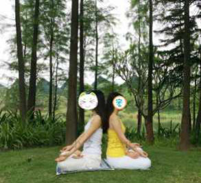
2015-11-16双盘三小时(第32次)(图说脊背异常到正常)
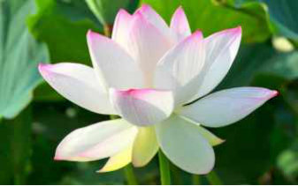
11月15号（昨晚），21：12-00：16，双盘3小时4分。
这是第32次双盘三小时，和之前31次姿势一样——右腿在下，左腿在上。
前60分钟，闭目静坐，身体舒适。
从60分钟到双盘结束，做了一下小礼拜，听JT叔叔讲《庄子》。
小礼拜是自创的名字^～0，就是在双盘坐，手和大礼拜一样，举过头顶，合掌，从头顶一路下来，到喉停一下，然后推或伸出去，头点垫子......就是双盘着拜。
最后时段，依旧和前几次一样——压在下面的右脚踝痛，两个膝盖只有略微的不适，没有像之前胀得像杂质扎一样的难受，也不怎么凉，隔着裤子摸，凉感微弱（手心本来比较暖，相比之下它显得凉一点而已），所以没有像以前痛得一到三小时就迫不及待放下来，这次再忍几分钟也可以，时间晚了，想睡觉，没继续坚持。
整个过程直到最后，脚板底暖和，比手心还暖。
打嗝放屁都少了，放下腿，三分钟左右可以下地。
从第27次到现在，已经连续五次整个过程的痛感轻微，最近三次双盘三小时的中间都只隔一天，有两次还是经期，经期本是身体能量的波谷阶段，当波谷上升到可以比较不费劲的双盘三小时，盘完恢复较快，就像考试难度大依然保持分数稳定一样喽，说明基础打得更好了。
自从上个月大姨妈前夕无意中绑了艾绒护腰护肚睡觉，长期存在的大姨妈期间上下身有温差的症状神奇消失，之后睡了艾绒褥子，双盘三小时表现出来的身体状态也大大进步（意外的第一次在经期双盘三小时）。
搞不清是偶然巧合，还是必然效果？
一路记录，感受身体一点点的变化，蛮有成就感的，像练武的人一样，每天练，每天练，不知不觉，内功慢慢长起来，以前一拳头打出去，阻力太大，伤不到对手，自己还先倒地，忽然有一天，一拳打出去，自己感觉毫不费劲呀，对手内脏却伤到了（好暴力的假想^_^)。回想最早的几次双盘三小时，每次盘完像打仗结束，累得有点虚脱，十几分钟才能下地走路，盘完睡觉会感觉到血在快速流动，双盘三小时的“后劲”持续好多天，那之后的好多天双盘明显退步。昨晚盘三小时，现在腿脚已经没有“后劲”感了。会不会很快“进军”到可以每天双盘三小时呢？昨晚本来可以早一点点结束双盘，奈何第一次盘了十多分钟想大大，解决回来重新记时，盘完又蛮晚，睡晚了，大家不要盲目学我舍弃睡眠时间练双盘，我已经练两年多，现在双盘三小时的第一个小时是闭目静坐，和睡觉差不多的养神。====================================================上次博文回忆了下双盘一路的效果，后来翻看双盘一年时的记录《双盘一年——身变化》，里面提到——“3. 双盘练成后，打坐就不会再腰疼。肾气充足，甚至想弓着腰坐都不可能，气足的会把脊背顶的很直。（这一年没有腰疼，接触中医之前是经常腰疼的，那时肾虚严重。不过双盘之前腰疼就很少了，现在算是保持得还好吧，没有变差。双盘前没驼背，现在脊背也直。）”站到现在看，当时真的“自以为是”啊。双盘前，是没驼背（这话说得也没底气，翻出一张以前的照片，似乎有点驼背），但脊背绝对是不直的，双盘一年没发现，因为双盘一年的时候脊背还没直到能发现以前不直。只有回到正常的时候，才能意识到过去异常，如果一直处于异常，很难或没法意识到正在异常。双盘前塌塌的脊背，无意识状态下的坐姿，最能真实体现脊背是直，还是弯（塌）。
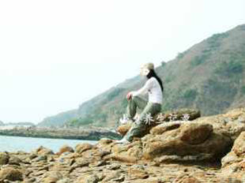
双盘一年半，明显直了是不是（手机拍的，将就看个大概）。
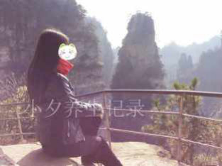
双盘之前的站姿，这别扭的姿势和拍照角度有关吗？
也许有关，但内因占主导吧。
同时，头发毛躁，不垂顺。
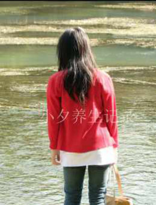
双盘约一年（一直觉得驼背是图中箭头指向的小伙那样，对照上图背影，好像不是同一种驼背，却也是说不出的难看啊）
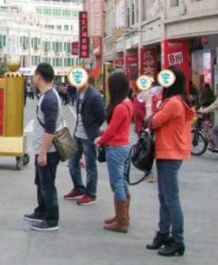
双盘两年多（有股气顶起来脊背的感觉）。
逆光也挡不住垂顺头发，人们说“熬出头”，是因为头发比较难改善吗？
改善了头发，说明艰难日子过去了吗？哈哈哈......
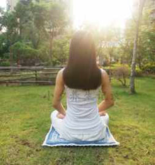
幸好前几年没自以为是发照片“展示养生效果”，不然“中医粉”焉焉的精气神活生生把中医给黑了还不自知。
双盘的同时练大礼拜，效果应该是两者共同作用的。
翻以前博文，有时看到当时看不到的问题或者同样的问题有不一样的看法，没改动它，留着对照走过的路（新结缘本博的网友，最好从最新博文往后看）。
2015-11-17双盘三小时(第33次)(心有余，力也足)
11月16号（昨晚），21:25-00:26，双盘3小时1分。
这是第33次双盘三小时，和之前32次姿势一样——右腿在下，左腿在上。
前60分钟，闭目静坐，50分钟之前，身体舒适（没有身体存在感），大概50分钟的时候，腿脚略微麻，身体存在感渐渐回来。
从60分钟到双盘结束，听正安聚友礼的节目，重温梁冬老师和徐文兵老师讲《黄帝内经》。
最后时段，压在下面的右脚踝痛，两个膝盖不舒服（没有明显发凉），程度比上一次双盘三小时重一些，比以前痛到呲牙咧嘴的程度轻多了。
整个过程，打嗝放屁比前几次双盘三小时多一些，脚板底比手心还暖。
放下腿脚，大概7-8分钟可以下地，比上一次久一点。
盘完酣然入睡，睡觉中迷迷糊糊感觉到腿脚略微不适，程度轻。
睡觉是一种能力，睡着香沉，起时清爽，才是高质量睡眠。
这次双盘没有前一次轻松（比如不到60分钟腿脚就开始麻，比如最后时段不适程度也比前一次重，比如放下腿脚后需要更长时间才可以下地），还是小小激动！
这是第一次连续两晚双盘三小时！（有点盘上瘾了，今晚估计没发继续3小时了，现在身体感还有“后劲”残余）
在第一个小时末，腿脚开始麻的时候，有点担心这次没法完成三小时，结果还好，在可以忍的范围，顺利完成。
这不是单纯靠信心与愿力可以完成，而是身体进步到——心有余，力也足。
回想最开始几次双盘三小时，每次盘完一次之后的几天，双盘水平严重倒退，双盘时间大大降低，要休息几天“后劲”才消失。
身体能量呈螺旋状上升，短时间看，有时波谷很低，低得让人怀疑是不是完全没有进步，放长时间，会看到上升的。
心有余，力不足，是个憋闷状态，就像爱无能，明明心里好像很爱，但给不了对方需要的，实际行为或行动总是制造伤害。
心有余，力也足，有能力爱，爱是温暖的，没有能力爱，爱变哀，爱与被爱都不舒服，不快乐。
最近看到一些网友提到对娃没耐心，脾气暴躁，骂完又后悔自责，对自己的娃，肯定是真爱，出现这种情况，多半是“心有余，力不足”。
感觉心有余力不足的时候，减少外在的给予与奉献，多花时间给自己，让自己从身到心先好起来，慢慢走向“心有余，力也足”。
2015-11-19双盘三小时(第34次)
11月18号（昨晚），21:14-00:16，双盘3小时2分。
这是第34次双盘三小时，和之前33次姿势一样——右腿在下，左腿在上。
前60分钟，闭目静坐，50分钟之前，身体舒适（没有身体存在感），大概到50分钟的时候，腿脚开始略微麻，身体存在感渐渐回来。
从60分钟到双盘结束，重温梁冬老师和徐文兵老师讲《黄帝内经》，听JT叔叔讲《庄子》。
最后时段，压在下面的右脚踝痛，两个膝盖和大腿疼痛（没有明显发凉），程度比上一次双盘三小时重一些，和所有双盘三小时中的疼痛相比，算程度轻的，不必咬牙吐大气坚持。
前面连续两晚双盘三小时，间隔一晚到这次，感觉前面双盘的后劲没有完全消，身体没恢复好而出现的疼痛。
整个过程，打嗝放屁比前几次双盘三小时多一些，脚板底比手心还暖。
放下腿脚，大概10分钟可以下地，比上一次久一点。
早上起来，“后劲”消得挺快，轻松做大礼拜108个。
不知道气感是不是有广义和侠义之分。
看到有说把练习时身体产生的热、麻、冷、胀、凉、痒、蚁行感等感觉称为气感，照这个说法的话，我们在练习初期就有“气感”了。
若是把气“走动”的感觉称为侠义气感，双盘很静的时候会感觉到——比如到手指尖的跳动，比如热流像电流一样流到某处......
能盘三小时的时候，第一个小时身体没有任何障碍，坐得正直稳当，呼吸很深，好像没了身体的存在感，异常舒服，庄子直接练“心法”，没说练功，我觉得身体层面没有障碍是“逍遥游”的前提。
一般是能盘的最长时间的前1/3时段，身体会有很舒服的状态，比如现在能盘30分钟的人，坚持N次30分钟后，前面10分钟会很舒服，当这个N到一定数量，整个30分钟的双盘就都很舒服了。
人生越往后，事越多，想在最有心双盘的时候，早点把三小时巩固到全程舒适。
最近双盘三小时，开始得晚，结束得晚，因为夕哥上班地点远了，晚上八点回到家，吃完饭，收拾好，就过九点。
不是孤家寡人在山林里“修炼”，俗世中，把健康，工作，生活三者平衡好，幸福指数才最高。
虽然有点像“牺牲”睡眠时间来双盘，也没觉得自己“努力”双盘，双盘过程很愉悦，自然而然想做。
双盘过程中，有时会莫名其妙激动落泪，觉得自己怎么那么幸运啊，头脑这么愚钝，年纪轻轻身体那么糟糕，人生中其他事情上好像都没有什么好运，怎么老天偏偏给开了这么个小窗，额外眷顾，让我有缘接触到这样的方法，让我莫名其妙坚持到能体会其中乐趣的阶段，这种念头升起，幸福的泪水下来——被上天厚爱，觉得自己幸运的念头，时时到来，对他人，对世界，自然而然没有任何抱怨了。
2015-11-21双盘三小时(第35次)(双盘对身体的破坏与重建)
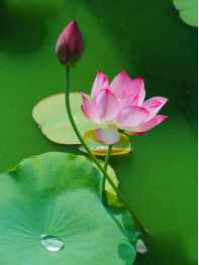
11月20号（昨晚），20:53-23:57，双盘3小时4分。
这是第34次双盘三小时，和之前35次姿势一样——右腿在下，左腿在上。
前60分钟，闭目静坐，大概40分钟前，身体舒适（没有身体存在感），过了40分钟，腿脚渐渐略微麻，身体存在感渐渐回来。
从60分钟到双盘结束，听JT叔叔讲《庄子》。
进入第二个小时，大腿肌肉疼痛，小腿肌肉疼痛，然后大部分腿脚区域都反复疼痛，疼痛在肉不在骨。
这次的疼痛和之前的疼痛明显不同，之前的疼痛像有股力量要冲刷过去但是被阻碍了，疼痛的同时，有时夹杂胀感，有时夹杂针刺般的钻感，有时夹杂寒风往外吹......
这次的疼痛像长期不运动的人忽然运动过度之后的疼痛，是扫除一次之后再扫的感觉，想必是11月份双盘频率高了，每次开始盘三小时的时候，上一次盘三小时的“后劲”在表面上已经消失，但在某些深层细胞那，可能上一次的“后劲”余波未平。
最后时段，整个人有点累，腿脚大部分区域都疼痛，程度超过前几次，不过膝盖和脚踝都没有像最开始双盘三小时那几次那样“痛彻心扉”，膝盖也没有明显发凉。
整个过程中，脚板底很暖，比手心还暖。
打嗝明显比放屁多，10次左右，似乎是双盘以来打嗝最多的一次，大概在第二小时的时候，好像有什么东西往上走，还隐隐堵在喉咙了（持续到双盘结束），咽口水没有明显不舒服。
放下腿脚，累得有点瘫（前几次都没有这种感觉），大概15分钟可以下地，比前几次久一点。
睡觉中腿脚略有不适，程度较轻，早上起来，昨晚喉咙有点堵的感觉消失了。
昨晚12点过睡，早上5点多自然醒，明明想周末赖个床，左翻右转，睡懒觉不成功，6多点起来做大礼拜，腿脚比较无力，慢慢做，108个大礼拜用时50分钟。
这次双盘过程中以及结束后的身体感（累，疲倦，酸痛，有点像感冒或发烧的某一些身体感，但又没有其他感冒或发烧表现），有点回到最初那几次双盘三小时，只是过程中的疼痛感更轻一些。
这是怎么回事呢？
人体骨骼通过不断的破坏然后予以重建，比如走路，会粉碎许多骨细胞，但短时间内又重新修复，每一次重新生长的骨骼将会比之前的更强健，常运动的人，骨骼强度比一般人高。
可是随着年龄增长，骨骼重建速度将比之前缓慢，并且无法承受太大的破坏，所以太过剧烈的运动反而不利于骨骼的保健。
看起来不动的双盘，在突破大的时间段或短时间提升双盘频率或强度，身体的疼痛（肌肉或骨头酸痛），是身体通过“气”来带动深层细胞的破坏与重建，它的破坏比剧烈运动温和，重建却比剧烈运动更强劲。
（仅是我个人的体会与理解，希望不要神话了双盘）
2015-11-25双盘三小时(第36次)(心平而气和，气和而心平)
11月24号（昨晚），21:22-00:24，双盘3小时2分。
这是第36次双盘三小时，和之前35次姿势一样——右腿在下，左腿在上。
前60分钟，闭目坐着，身体舒适，念头杂乱，心没像前几次那样静到感觉不到自己的存在，因为双盘之前动怒了——一位顾客跟我说，她给朋友推荐我家的艾绒护腰，让朋友在淘宝搜索“小夕小店”的店铺名，结果那位朋友在宝贝中搜“小夕小店”，没想到出来好多家挂着同样的宝贝图片和同样的宝贝描述。这位顾客赶紧来问是不是我授权的。
我去搜，也惊呆了，很多店铺明目张胆的盗用我的图片并全盘照搬宝贝描述。
以前有些店铺盗用图片，还扣掉水印，假装是自己的，现在这些人，居然厚颜无耻到这地步。
第一反应当然是生气（没得道，还是凡人），感觉气往头上走，想立即投诉，后来决定还是先双盘三小时，明天再处理这事。
双盘第一个小时的前半部分时间，一万头草泥马在心中狂奔，没说服自己不要气，也没刻意把注意力放到呼吸上或深呼吸，闭眼“看”念头的起起落落，端正盘坐着，自然呼吸，不知不觉，上升的那股气开始往下沉，怒气慢慢减弱。
进入第二小时，腿脚开始略微麻，从60分钟到双盘结束，听正安聚友礼的节目，重温梁冬老师和徐文兵老师聊《黄帝内经》。
最后几十分钟，有点打瞌睡，不忍心放弃一次双盘三小时机会，坚持着，最后时段，压在下面的右脚踝痛，两个膝盖有点疼痛，程度较轻，没有明显发凉，全程脚板底都暖和。
双盘结束，呼吸慢细长，心也变平静，三小时前的怒气已无踪影——不怕狼一样的对手，怕自己被自己打败。
我们平常说，心平气和，反过来，气和也心平。
双盘的时候，脊椎是直的，有利于气机运行，气和，从而心平，气如风，心似水，风平，浪静。
睡得有点晚，不过睡得香沉，早上起来精神也挺好，膝盖也没有明显无力，较快做完108个大礼拜。
今天上午投诉了一部分盗用我图片和宝贝描述的店铺，等淘宝审核处理，另外随机点了几家店，跟那些掌柜说“我看到你家盗用我的图片和宝贝描述，请立即删除或下架”，有些倒是乖乖删了。
每一家都投诉的话，花时间实在太多，对待这种事，我也没更好的招了。
2015-11-27双盘三小时(第37次)(两年，改骨换肤)
11月26号（昨晚），21:06-00:11，双盘3小时5分。
这是第37次双盘三小时，和之前36次姿势一样——右腿在下，左腿在上。
前60分钟，闭目静坐，身体正直舒适。
第二个小时，反复听笛子版《大悲咒》（酷狗音乐中搜“笛子版《大悲咒》“），很久没听这个曲子了，听得平静舒服，莫名其妙流了一阵眼泪（不是难过，也没有想什么激动或感动的事），流过泪的眼睛很舒服。
第三小时，听haya乐团的歌，最喜欢《寂静的天空》（酷狗音乐中可搜），其他有些歌不是很对胃口，不过在这样的时候，音乐不是最重要的——
晚上11-12点，附近大部分窗户已熄灯，很多人在熟睡，外面没有了白天的喧闹嘈杂，整个世界很安静，明月当空，月光洒进来，我盘坐在窗前，闭眼听歌，独享月光，完全没有千年前李白”花间一壶酒，独酌无相亲。举杯邀明月，对影成三人”的孤独感。
窗外冷风吹，我盘坐的一身暖和，手脚非常暖，中途夕哥来摸了下我的手，问“小妞是欲火焚身吗？”“哪有哪有，六根清净着，身体自带小太阳发热”，好像不是沐浴月光，而是沐浴阳光，没有赶着要做的事，没有不释怀的人和事（上次双盘三小时不爽的那个盗图片的事，心中已没有任何波澜，追究归追究，但心“无挂碍”），停留在这个时刻，满满的温暖喜悦——原来一个人一席地就可以获得这么高级的幸福感！
过60分钟，左大腿有点肌肉痛，像长期不运动的人忽然运动过度之后的肌肉感，这个肌肉痛很快消失，变成腿脚略微麻以及说不出的那种疼痛感，这种疼痛感一下来一下走，位置也不定。
最后时段，压下边的右脚踝比较疼痛，程度不重，不然不会到3小时还再坚持5分钟。
全程打嗝大概5，6次，放屁大概2，3次。
===========================================
前几天，太阳下，夕哥认真看了看我，说“脸还是有点改变了哦，以前嘴巴一圈黑黑的，现在白了。”
非中医粉的他，以前说的老是既客观又欠揍的话——“折腾那么多，脸也没我好。”
我顺势提醒他“你摸摸自己的手臂，然后摸摸我的手臂，有没有感觉到我的手臂明显光滑，不是那种涂抹什么的油的表面光滑，是有“厚度感的滑”，按着摸，没有那些疙疙瘩瘩的颗粒感，因为皮下没有淤积和堵塞。”
我们平常的理解是，女人的手比男人的手光滑细腻，那是天经地义的事，女人肯定更细皮嫩肉一点嘛，大部分情况确实适用这点，不过长期练传统武术或传统养生功法的男人，体内淤积物排出来，气脉畅通，手会像姑娘家的一样柔软细腻。
有个网友姐姐跟我说，她在某寺庙近距离接触一位高僧，那位高僧年纪很大了，但脸的皮肤像孩子的一样，细腻得看不到毛孔。
经我提醒，夕哥没事就摸摸自己的胳膊，然后摸摸我的胳膊，对比对比各种”参数“。
我们对于天天见到的人，会越来越麻木，天天看枕边人，其实很难发现对方的改变，比如不知对方从哪时哪刻开始长皱纹开始冒白发开始后背变弯，把几年照片排一起，抽掉中间的，留下一前一后，更容易看到衰老脚步。
不要说对枕边人身边人了，我们对自己何尝不是麻木的，不然怎么有那么多人冷到膝盖忽忽往外冒寒气（曾经的自己中枪了），冷到肚子嘘嘘往外冒寒气才意识到不对劲，等到身体长个几厘米的肿块才意识到它的存在。
麻烦的是，当我们正在麻木或正在异常的时候，很难或没法意识到正处的情境，只有当我们恢复到相对更正常的时候，才能意识到之前的不正常。
举个例子，双盘一年的时候，我还看不出左图表现出来的问题，现在终于看出来了。
左图是2013年10月左右，双盘半年，刚刚开始大礼拜。
右图是2015年9月底，双盘两年半，大礼拜两年。
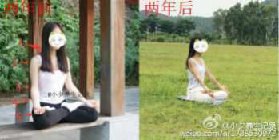
两年前的问题（现在的问题等两年后来发现^_^）：
1.后脖子和肩膀连接处有点“缩”，不放松，看起来有点怂。
2.肩部也“缩”，不舒展。
3.双盘的时候，手肘伸直或弯曲都没问题，问题是弯曲时要有放松的感觉，而不是“撅着”的僵硬感。
4.最大的问题是，脊背不直，没有那股上升顶的气（力）。
5.双盘的时候，手指伸直或弯曲都没问题，问题是要放松。
弯曲的同时放松，不是矛盾吗？是不是只有直才叫放松？
当然不是，瑜伽有各种弯曲折叠身体的动作，但可以在做这些动作的时候“保持放松”。
也不是伸直了就叫放松，伸直依然可能存在紧绷（例子啊，容我想想，谁想到了给补充一下？）。
放松的最高段位，是在无意识状态下，每个动作和行为都显得“优雅”（当然喽，优雅也是要自己去对比，才能看出来什么是更优雅什么是更不优雅）。
前面博文解读性不和，还没继续下篇，提前剧透练房中术的要点——放松，全身心的放松，放松到一定程度，OOXX的时候，女性YD中的亿万细胞仿佛瞬间被激活，XGC会一波接着一波的到来，不必寻找或刺激G点或玩惊险刺激的“车震”“马震”“试衣间震”等各种震（这些招数也是可能会带来XGC，但不像前者那样”一波接着一波的到来“）。“XGC会一波接着一波的到来”是JT叔叔讲房中术的原话，简直让我“叹为观止”，一个男人怎么知道呢。很长时间，读《调阴阳》很多次，我都没注意到这句话，忽然有一天......“叹为观止”..... PS：博文总是不经意间藏“亮点”哈，不做标题党（其实是想做而没水平做），就这样低调的扔亮点双盘三小时（第37次）（两年，改骨换肤），不博大众眼球，有缘的小众看到就好，我不是专家，随便说说，大家随便看看。
两年“改骨换肤”，我是完全没觉得励志啊什么的，一个期待“有钱有闲的时候还健康年轻身材好皮肤好”的庸俗女人，刚好对双盘感兴趣，把它当“健身方法”，练着练着而已，没想什么求道修真。（这两年同时练大礼拜，效果应该是两者共同作用）
打算双盘五年，就是2018年5月30号的时候，发脸的对照图，看看”变脸“多少（希望那时还对双盘感兴趣还在继续，不过不敢保证，明天就像盒子里的巧克力，不知道会抓到哪一颗......）。
双盘太痛，我是一点都不鼓励别人练习，身心愉悦的途径那么多，走自己喜欢的那条最好。
2015-11-29双盘三小时(第38次)(脚踏实地的幸福者不会入魔)
11月28号（昨晚），21:17-00:35，双盘3小时18分（史上双盘时间第二长的记录，第一是3小时20分）。
这是第38次双盘三小时，和之前37次姿势一样——右腿在下，左腿在上。
前60分钟，闭目静坐，身体正直舒适。
第二个小时，反复听haya乐团的《寂静的天空》，和上一次双盘三小时一样——窗外依然明月当空，我盘坐在窗前，独享月光，闭目听歌，黛青塔娜干净悠远的声音沁人心脾，想到大部分人一辈子都无法体验这样一个人一席地的自在喜悦，觉得上天对自己好有爱啊，怎么就莫名其妙安排我走这样一条路呢。
双盘和大礼拜，感人感觉似乎都带点“宗教意味”，很多结佛缘或其他信仰缘的人，回忆过去，一般会提到年幼的时候就莫名其妙对庙有好感或者对佛啊菩萨啊的相由好感，好像冥冥中有感应一样。
我呢，从小到达，对庙啊，对菩萨啊，对宗教啊，都没有什么特别的“亲近感”，又是一个偏理科思维的人，怎么都不会想到有天莫名其妙做看起来有点“神叨叨”的大礼拜以及双盘。
不知不觉练双盘和大礼拜到现在，收获意想不到效果的同时，我还是只想让自己变得内外更好而已，没有升起救度众生的佛心，也没有清心寡欲到对夫妻生活没兴趣，上天怎么会允许我这么矛盾的存在，既体验血肉有情之人的尘世幸福，又在某些时刻体验到超越尘世的幸福，真的是太幸运了，莫名其妙流了一阵幸福的泪水，流过泪的眼睛明亮舒服。
有些“清心寡欲”的人看我写双盘的同时不忘提做爱做的事，估计暗暗摇头觉得这女人没救了，苦练这么脱俗仙气的“双盘”，不追求什么入定入静，不追求什么修道修真，还色心未灭，写这么“低级”，是不是走火入魔了？
我觉得这样的看法蛮有道理的，有时候也担心自己把“高大上”的法门写“低级”了，不过没办法啊，我是偏理科思维的人，完全不想入定啊修道啊那些“玄”而“空”的事，就想脚踏实地做个现实世界中幸福指数越来越高的普通人。
一个人，如果没有在现实世界中把“人”做好（比如自己身心和谐，自己与身边人关系和谐），没把柴米油盐的普通日子过幸福，光想那些不着地的事，我觉得更容易走火入魔。
第三个小时，做点针线活，想着把要缝的缝完再放下脚，不知不觉多熬了18分钟，最后时段两个脚踝比较痛，两个膝盖痛感轻。
放下腿的一两分钟，两脚踝痛得不要不要的，无法动弹，歇了十来分钟下地。
睡觉还没睡着的时候，感觉到脚踝还是痛，睡着了感觉不到，早上起来不痛，做了两组108个大礼拜（昨天偷来没做大礼拜，今天多做一组补起）。
全程全身暖和，打嗝放屁少。
先这样，时间有点晚了，今晚还想盘三小时（“入魔”的节奏^0^)。
2015-12-01双盘三小时(第39次)(养生7年，开通微信公众号)
11月30号（昨晚），21:30-00:35，双盘3小时5分。
这是第39次双盘三小时，和之前38次姿势一样——右腿在下，左腿在上。
前60分钟，闭目静坐，身体舒适。
从60分钟到双盘结束，听一些轻音乐，如《云水禅心》（酷狗音乐中搜“云水禅心”），听一下正安聚友礼节目。
第一个小时，脊背正直；后两个小时，脊背塌。
整个过程，腿脚的疼痛与不适程度较轻，最后时段压下面的右脚踝比较痛，全程手脚暖和，最后10分才打嗝放屁几次，放下腿后打嗝几次。
这次双盘状态没有前两次那么好——没有那么深入的静以及那么深入的喜悦，和窗外没了月亮有关吗？
双盘“后劲”很快消失，睡觉香沉，早上起来腿脚没有不适，轻松108个大礼拜。
前天晚上有心双盘三小时，后来盘到一个小时的时候，想大大，解决回来重新计时太晚，于是早早睡。
====================================================
某天，夕哥说有女同事对大礼拜感兴趣（估计是不小心跟人提我老婆练那什么大礼拜效果好好），问我要博客链接发她们。
我说，“博客有写些尺度大的哦，你要不先过目一下，看是否合适让你的同事看到，人家看到会不会私下用异样眼光看你让你不好意思啊，我不认识她们，我是没所谓喽。”
“小妞还写尺度大的啊？”
“放心啦放心啦，‘学术探讨’，色而不黄。”
后来他建议，“你要不开个微信公众号吧，万一哪天写的尺度大被新浪屏蔽了，就还有一个窝。你都写几年了，要是万一被屏蔽不能写，有点可惜。”（说得好像在微信公众平台就可以不顾尺度一样^_0)
习惯在博客记录，不是很想开辟新地方，前几天发博文《护膝不如护腰，护肩不如护肚》之前，先是在微博发的，结果被微博屏蔽，打电话去咨询，说是有广告嫌疑被屏蔽。
看到一些微博天天发广告，好端端的没被屏蔽，看来是天意要我考虑第二个窝，那就从了。
最近双盘过程总是莫名其妙流幸福的眼泪，觉得老天对自己好好——
回想七年前，我的身体大概比80%的人差；现在，大概比70%的人好喽。
这样的逆转，于我而言，算是一个奇迹了。
时常看到的一些病例，怕冷到我以前那种程度的人（膝盖以下冷如冰），寻医吃药多年，很少有人能扳回这个局面。
怕冷，看起来像个小问题，实际上，如果腿冷过膝盖，手冷过手肘，算是没有病名的“疑难杂症”了，像林彪那样的大人物，身边应该配备有各路高明医生吧，他的怕风怕冷一生都没搞好。
怕冷到这种程度，为什么难好呢？
按照自然规律来说，一个人大概到70,80岁才会变得那么怕冷，就是说，70-80岁冷到那种程度算“正常”，一个20多岁人那么怕冷，说明身体机能已经提前老到70-80岁，20多岁的人拥有的是70多岁的身体，这么大的缺口，不可能很快补起来。打个比方，正常女性是49岁左右闭经，如果一个女性29岁闭经，就是29岁的年龄拥有的49岁的身体，那也是难补的大缺口。站在现在看养生七年，很明晰的感觉到身体能量的缺口是一点一点补起来的，去掉疾病与走到健康是完全不能等同的事，就像不缺钱和有钱之间的距离。接触中医的1-3年，是主战场取得胜利，还有残余小战场没搞定，敌人还等着时机反扑，大概像新中国成立时的1949年，从被压迫被剥削中翻身，当然是个大进步，但是局面还是不稳定的。四年前的总结《接触中医三年的收获》，如果时间停留在那，看不到后续的话，就跟童话里公主与王子结婚从此过上幸福快乐的日子一样，看起来是个“巨大”的胜利，是“圆满大结局”。实际上，随着时间继续往前，才能更客观的看当时身体恢复的情况——比如当时写的“例假期间，身体暖”，只保持了一段时间，因为当时身体能量还是很不够用，这些好转不能稳定保持，所以后来不知不觉变成了例假期间“上下身有温差（下半身明显比上半身冷）”；比如当时写的“手脚暖和”，手脚暖和也有不同的程度，在十几度的冬季暖和在零度的冬季依然暖和，代表身体能量水平处于不同阶段。
接触中医的4,5年，继续收拾残余小战场，顽固的敌人还在伺机反扑，犹如新中国成立到改革开放这个百废待兴的阶段。
接触中医的6,7年，才有一种从温饱到小康的大幅提升，犹如改革开放后的生机盎然，一天比一天好......
七年，好感慨！
我这样一个没钱没名没头衔的小人物，没有学霸那样好使的头脑，不认识名师名医，不要说名医，身边连医生朋友都没有，倒是有一些同学读医学院，但那淡淡然的同学关系，就算自己生病了，尤其是什么妇科疾病之类的，也是不好意思向人家咨询请教的，不仅没法找这种半熟不熟的关系”照应“”帮忙“，就是去医院挂专家号，如果没遇到一个和善得让人踏实的医生，也是小心翼翼的不敢多问。
而对疾病的恐惧，更是让自己活得萎缩没斗志，当年痔疮带来大便出血，恐慌得吃不下睡不着，甚至担心自己是不是得了绝症，会不会英年早逝......
如果没有机会接触中医，没有机会借由中医走上身心重建之路，人生中万一遇到妇科方面的难言之隐，大概和大部分人一样，要么“偷偷摸摸”去电线杆找“妙方”，要么“遮遮掩掩”去医院看妇科男科，要么“神秘兮兮”在网上到处乱搜......
万万没想到，靠自己，去掉疾病；万万没想到，靠自己，越来越健康。
感谢上天的安排，感谢所有善缘，希望小小的“脱胎换骨”奇迹，在微信公众平台，为有缘人点一盏希望之灯——成为更健康更快乐的自己。
2015-12-03双盘三小时(第40次)(保暖取暖可防寒，不能祛内寒)
12月2号（昨晚），21:05-00:07，双盘3小时2分。
这是第40次双盘三小时，和之前39次姿势一样——右腿在下，左腿在上。
前60分钟，闭目静坐，身体舒适。
从60分钟到双盘结束，听JT叔叔讲《庄子》，听一些轻音乐，如《云水禅心》（酷狗音乐中搜“云水禅心”）。
进入第二个小时，左大腿根部隐隐疼痛，像长期不运动的人忽然运动过度之后的肌肉感，这种肌肉痛位置不断游走反复，一下在大腿，一下在小腿，一下消失。
到最后时段（30分钟），压下边的右脚踝比较疼痛，两个膝盖不舒服，略微麻中夹杂着疼痛，程度比前几次都重，有几次要大口呼气来缓解，飘过几下放弃的念头，
好像又开始反复了，不过比肯定是在双盘三小时最痛的十次之外的（比那种针刺感的疼痛胀好多了），最后坚持了3小时2分钟。
整个过程，手脚暖和，膝盖暖和。
全程打嗝大概7,8次（集中在最后时段，放下脚后还打嗝几次），放屁少。
=============================================
终于降温了！
“曾经怕冷”估计是我最显著的标签了哈——夏天腰腹如藏冰，冬天膝盖以下像死人，高中长冻疮，大学抱热水袋过冬（年轻人的朝气呢！），别人穿一件大衣的时候我穿两件羽绒服，问题是，穿这么多，还冷得打哆嗦！
怕冷，那就取暖保暖防寒，是我曾经能想到的层面，也是大部分人能想到的层面，看起来逻辑没错，可是，逻辑没错不一定能解决问题。
要很好的解决怕冷这个“难题”，首先得清楚自己的怕冷属于什么程度。
简单的判断方法——
1.如果仅仅是冬天手脚冷（春夏秋都不冷，夏天空调房也不明显冷），整个四季的后腰，肚子和小腹，摸上去是暖和的。
这种情况的怕冷，是外在气候影响，不是病，用一般的取暖保暖方法来防寒就可以了。
2.如果常年手脚冰冷（夏天在空调房也明显冷），同时后腰，肚子和小腹，摸上去是冰冷的；或者经常感觉到膝盖或其他某些部位嘘嘘往外冒寒气。
这些部位冰冷的程度因人而异——
有的是，手贴在这些部位，感觉这些部位冰凉冰凉的；
有的是，手贴在这些部位，感觉有冷气嘘嘘冒出；
有的是，不用手贴皮肤，就感觉里面藏了个冰块似的（没体验过的人，恭喜你，说明没冷到这种程度，冷到这种程度的人，看这文字描述自然知道是什么感受）；
最严重的是，感觉骨头往外冒寒气。
不过不用管那么细，简单点——
“后腰，肚子和小腹，摸上去是冰冷的”，这是脏腑寒。
经常感觉某些部位骨头往外冒寒气，这是骨头寒。
两者都是病，是阳气虚弱得像老年人了，一般取暖保暖方法是没法解决的。
了解自己，认清事实，真的好重要，如果处于第二种，还只是停留在一般取暖保暖防寒，只好一直冷下去了。
哪些是“一般的取暖保暖方法”？
保暖的，比如毛衣，棉服，羽绒服，围巾，手套，雪地靴等等。
取暖的，比如烤火，睡电热毯，抱或绑热水袋，贴暖宝宝等等。
如果身体是上面说的第一种情况，这些方法可以解决问题。
如果身体是上面说的第二种情况，这些保暖方法，只能防外寒；这些取暖方法，只能祛表寒；两者都没法祛内寒，怕冷还没法解决，所以出现我穿两件羽绒服还打哆嗦的情况。
保暖方法可以防外寒，好理解，不必多说。
为什么说这些取暖方法（烤火，睡电热毯，抱或绑热水袋，贴暖宝宝，泡热水脚等等）只能祛表寒呢？
先看什么是表寒？
表寒，就是寒在身体表层啦，比如晚上睡觉没盖好被子，早上起来肩膀有点疼痛；比如忽然被雨淋了一会，晚上到家感冒打喷嚏。
这种临时的暂时的受寒，一般是表寒（也有某些临时的受寒，会忽一下成为里寒，比如夏季在空调风口下做爱做的事或者做完爱做的事来杯冰冻饮料）。
这些取暖方法可以防外寒入侵，可以把表寒驱散，比如淋雨了，到家泡个热水脚；比如晚上没盖好被子，早上用热水袋敷一下疼痛的肩膀。
但是这些取暖方法产生的热，没有渗透性，表面烫，里面还是冷的，对于内寒（脏腑寒和骨头寒），没有帮助。
比如说热水袋，除了大学时抱可更换热水的那种热水袋，前几年想温敷，用充电的那种热水袋，两者的感觉一样，就是热的时候，表皮觉得烫，敷的部位容易出汗，用到稍微凉的时候，表皮又很冰凉，那个热不会往里渗透。
比如说烤火，小时候在农村，我们那冬天家家户户都烤火塘（地板挖个炉子，烧煤），因为它没法让我们由内而外暖起来，越烤越离不开，离开火塘一会就打寒颤。
沉重的内寒，怎么破？
下篇解。
2015-12-04双盘三小时(第41次)
12月3号（昨晚），21:07-00:10，双盘3小时3分（第2次连续两晚双盘三小时）。
这是第41次双盘三小时，和之前40次姿势一样——右腿在下，左腿在上。
前60分钟，闭目静坐，身体舒适。
从60分钟到双盘结束，听曹启泰先生的一个演讲，听《大悲咒》（酷狗中搜“大悲咒笛子版）。
第二小时之后的不适程度都比上一次强，虽然盘之前感觉不到上一次的“后劲”了，可能某些深处修复在一天内还没恢复好。
最后时段，压下边的右脚踝比较疼痛，两个膝盖不舒服，略微麻中夹杂着疼痛，程度比上一次重很多，不过没有想放弃的念头，因为喜欢这样与自己独处与身体对话的感觉。
外面冷风吹，盘坐得一身暖暖的，手脚暖，膝盖暖，阳气满满。
全程打嗝3,4次，没有放屁，难道下丹田的“历史浊气”排完了吗？
睡觉没睡着时膝盖和脚踝略微疼痛，早上起来好了
2015-12-14双盘三小时(第42次)(达成小心愿)
昨天（12月13号），14:50-17:55，双盘3小时5分。
这是第42次双盘三小时，和之前41次姿势一样——右腿在下，左腿在上。
12-13号去上伽南老师的禅修与冥想课，第一天双盘着听课（不是课程要求，自己想多多双盘），换脚交替盘，总共加起来大概有八小时，到晚上膝盖脚踝都疼痛。
第二天，就是昨天，私下跟伽南老师请教一个问题，提到我在家练双盘两年，双盘两小时大概有一百次......在尊敬的老师面前，不由得紧张，把自己的情况打折说的，实际是练习双盘两年半，双盘三小时41次）。
老师让我和其他几位同修，现场完成双盘三小时。
还是有点压力的，平时在家练三小时的第二三小时，腿脚开始疼痛后，会乱按乱揉乱动，会听音频或轻音乐，这会在这么多人面前总不好乱动啊，同时因为第一天交替腿双盘太久，腿脚后劲没消除，有点担心到后面会不会表情太难看。
果然，因为昨天双盘总时长太长留下的后劲没完全消除，到一小时二十分钟，脚踝就比较痛了，还好，一边听课一边继续，实在疼痛时，用手按捏一下，最后顺利完成三小时。
时间到的时候，激动得忍不住流泪，想起一年前第一次双盘三小时（去年12月18号），就是念着伽南老师的气质而坚持下来，当时的记录——
“2小时20分，身体还没有到之前的无法忍受境界，不如再坚持10分钟吧，内心一直的期望——“盘到3小时后去终南山看看或者去拜访伽南老师求指教“，想到伽南老师宁静脱俗的仙气，心生向往，又坚持了10分钟。
2小时30分，腿脚还没刺痛或麻到受不了，坚持10分钟吧，反正就3遍《心经》的时长......
2小时40分，天啊，离3小时只有20分钟了，不如再忍一下，只要一次突破3小时，到达这个点，之后的保持会轻松很多，20分钟，就是6遍《心经》的时长，很快的，很快的......
就这样，最终盘了3小时零2分！”
第一次双盘三小时之后，见伽南老师的念头也不是很强烈，觉得要把这幅身体折腾通畅肯定是靠自己一步步来的，双盘的疼痛也必须靠自己熬出来，见或不见，老师都在那里，见或不见，该忍的疼痛都在自己这里，这一年就默默在家坚持着。
前几天，闺蜜清荷（@半缕清荷）转了伽南老师的课程信息给我，她没想要叫我去，无意转我看看而已，我觉得自己默默练了这么久，是时候去听听理论提升一下了，于是，报名，交费，去了。
在伽南老师跟前完成三小时双盘，算是完成了一年前的小小心愿，不过达成愿望的激动没当面跟她表达——一方面没机会，讲完课大家先目送老师离开现场；另一方面我不擅长跟尊敬的人交流互动，尤其是老师，从小到大，在老师面前，会很拘束，不自在，跟其他人在一起还蛮活泼的，在老师面前，木木的，比如远远看到老师，会很想低头绕道走，而不是大方主动跟老师打招呼——也许因为小学第一位老师实在有点“希特勒”，很不人道的体罚学生，比如拿辣椒水涂学生眼睛，因为那位同学上课打瞌睡睡着了（无法想象吧？）。
课程收获挺多，先消化再写。
伽南老师的能量场很强，脸色白里透红，精气神足，气质美，真人比博客及微博的照片美一百倍，照片没法展现白里透红的气色，不能很好的表现精气神，没法体现那种灵动气息。
她的美，不像明星模特那种，明星模特胸大腿长颜值高，让人觉得那是遗传啊，她美是她的事，和自己无关；不像红唇锥子脸或磨皮得白皙无暇的网红或淘宝模特，苍白而空洞，没有生命力，那些美带给人压力而不是让人心生向往的感染力，伽南老师的美，会让人向往，所谓向往，不是那些整容狂魔，拿着明星照片跟整容医生说我要范爷的脸要baby的眼，所谓向往，是激励自己的去达成那种精充气足神满的状态。
2015-12-17双盘三小时(第43次)(双盘时，身体把浊物气化的能量源自
哪里？)
昨晚（12月16号），21:07-00:12，双盘3小时5分。
这是第43次双盘三小时，和之前42次姿势一样——右腿在下，左腿在上。
第一小时，闭目静坐，身体基本舒适。
中间左大腿忽然有一阵麻，特别用心地感受了每个细胞从不麻到麻，麻感从上一个细胞转到下一个细胞，然后一点一点消失......语言表达能力有限，描述不出来那细微的变化，大家下次麻的时候好好感受下吧。
后两小时，在手机上看电子书，心有点燥燥的，还是前几次闭目听音频或轻音乐更爽。
所谓六根清静（眼耳鼻舌身意），真的是每关闭一根（清静一根），身体感就有很大不同。
整个过程，手脚暖和，打嗝3-4次，没有放屁。
=================================
一位网友在微信后台问，双盘的时候，把浊物气化的能量，源自哪里呢？
能量来自我们身体自身，没有双盘的时候，身体能量是发散的，双盘的时候，腿脚基本不耗用能量，这些能量聚集到身体中部，聚焦就会得以加强（凸透镜原理），光是双盘这个姿势，就可以聚集能量，像散乱的柴火火力不旺一样，聚集成堆，火力就旺起来了。
双盘的同时，如果闭目静心，“眼耳鼻舌”耗用的能量都将到最低，聚集到脏腑的能量就更多，这些能量会去处理平常身体无力解决的浊物。
2015-12-18双盘三小时(第44次)(双盘不是打坐，打坐不是双盘)
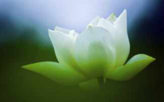
昨晚（12月17号），21:30-00:32，双盘3小时2分（第3次连续两晚双盘三小时）。
这是第44次双盘三小时，和之前43次姿势一样——右腿在下，左腿在上。
第一小时，闭目静坐，身体基本舒适，和上一次一样，中途忽然左脚有一阵麻。
后两小时，听正安聚友礼的节目，听曲黎敏讲女人的原动力（谢谢向我推荐这音频的网友，好像我的频率和曲黎敏老师没共振，她的声音语调听得我有压迫感，我更喜欢徐文兵老师和正安聚友礼中杨硕城老师的声音，他们的声音有“气沉丹田”的感觉，缓缓渗透入心，如月光般宁静，如流水般柔和，听得也有“气沉丹田”的感觉......）。
最后半小时，压下边的右脚踝比较疼痛，两个膝盖不舒服，程度比前一次重一些，不过肯定是在双盘三小时最痛的15次之外的，可以理解，这是连续两晚双盘三小时，上一次的后劲没完全消除吧。
整个过程，手脚暖和，膝盖暖和。
几乎没有打嗝放屁。
====================================================
网友问，打坐的时候老是说话有影响吗，打坐30分钟基本全程都要说话，不是和老公说就是和宝宝说，还有打坐时肩胛骨内侧疼，是里面疼，看位置有点接近膏肓穴，这是什么原因呢？
“通则不痛，痛则不通”，有疼痛是那个位置不通。
我对打坐了解很少呢，打坐不是双盘，双盘不是打坐。
我练双盘，目的是身体健康，通过盘腿这个姿势本身来启动身体固有的能量，原理就是昨天提到的——双盘的时候，腿脚基本不耗用能量，这些能量聚集到身体中部，聚焦就会得以加强（凸透镜原理），光是双盘这个姿势，就可以聚集能量，像散乱的柴火火力不旺一样，聚集成堆，火力就旺起来了。
在双盘三小时的第一小时，闭目静坐（我说的静坐是安静坐着），目的是通过关闭六根（目前阶段，“意”还很难关闭，不管那么多，能关多少关多少），尽量让“眼耳鼻舌身意”耗用的能量降到最低，让聚集到脏腑的能量更多，让这些能量会去处理平常身体无力解决的浊物。
在双盘腿疼难静的时候，会听音频等等，那个时候主要是熬腿，熬腿目的还是回到前面说的，通过姿势本身————双盘的时候，腿脚基本不耗用能量，这些能量聚集到身体中部，聚焦就会得以加强（凸透镜原理），光是双盘这个姿势，就可以聚集能量，像散乱的柴火火力不旺一样，聚集成堆，火力就旺起来了。
我练习双盘目的就这么简单——随着身体浊物的气化或排出，身体更通畅更轻盈更柔软想专注的时候，也自然而然比过去更专注了；，想静的时候，自然而然比过去更静了。
如果像我一样，为了身体健康而练双盘，练习过程可以说话，只是说话比较耗气，能量会多耗散一些。
可以只双盘不打坐，也可以只打坐不双盘。
双盘是打坐的一种姿势，打坐的姿势还有很多种（问度娘），打坐目的很多，不同人的追求不同，有为了身体健康的，有为了练习专注的，有为了消除内在冲突的，有为了从思维中解脱的，有为了“空，静，定”境界的.......
总之，我对打坐了解得少，目前对那些不感兴趣，只对身体健康感兴趣。
中里巴人谈打坐，讲得单纯明快，比较对我胃口，之前博文分享了（见下面相关博文《中里巴人谈打坐》）。
2015-12-19双盘三小时(第45次)(泡脚没那么好)
昨晚（12月18号），21:25-00:28，双盘3小时3分（第1次连续3晚双盘三小时）。
这是第45次双盘三小时，和之前44次姿势一样——右腿在下，左腿在上。
前40分钟，闭目静坐，身体舒适。
40分钟之后，腿脚开始不适，心渐渐静不下来，那股顶着腰的力也不够用，腰渐渐塌，反复听轻音乐《云水禅心》。
进入第三小时，腿脚和膝盖的不适加重，比前几次都难受，不过疼痛程度还是排在最痛的20次之外，没有到呲牙咧嘴无法忍受的地步，反复听《心经》，重温梁冬老师和徐文兵老师聊《黄帝内经》。
整个过程手脚暖和，打嗝少，放屁大概7-8次，比前几次多。盘完大概十分钟可以下地，早上起来腿脚有点无力，慢慢做了108个大礼拜。=============================有位网友留言说，每次泡脚，过半个小时身体就变更冷。泡脚适合气血没那么虚的人。如果气血虚到这种情况的手脚冰凉——常年手脚冰冷（夏天在空调房也明显冷），同时后腰，肚子和小腹，摸上去是冰冷的；或者经常感觉到膝盖或其他某些部位嘘嘘往外冒寒气。这种情况就是前面说的脏腑寒或骨头寒，泡脚顶多让人睡觉时暖和一些舒服一些，身体不会通过泡脚有太大改善。我之前就是脏腑寒和骨头寒，接触中医的前几年，常年坚持泡脚，但骨头寒是没有改善的。
2015-12-21双盘三小时(第46次)(双盘收功法)
昨晚（12月20号），20:28-23:31，双盘3小时3分。
这是第46次双盘三小时，和之前45次姿势一样——右腿在下，左腿在上。
第一个小时，闭目静坐，身体舒适。
进入两小时，左膝盖略微不适，心渐渐静不下来，那股顶着腰的力也不够用，腰渐渐塌，最后时段，压下边的右脚踝较痛。
后两小时，听JT叔叔讲庄子，很hign很愉悦。整个过程手脚暖和，打嗝3-4次，放屁大概10次，比前几次多，可能和吃的有关系，昨天逛街，吃了10个马蹄，吃完就觉得胃里有点堵，吃马蹄之前吃了一盘羊肉都没有堵的感觉，应该是寒凉的马蹄比温热的羊肉更耗胃气才觉得堵。===================================从第42次双盘三小时到现在（总共5次双盘三小时），每次双盘结束，做了收功法——禅修课学的。
收功分两步，第一步——双盘结束，放下腿脚，紧握拳头，放在两个膝盖上，深呼吸三次，每次吸气时，肚脐用力到好像肚脐要贴后腰的命门，同时会阴穴上提（会阴穴位于人体肛门和生殖器的中间凹陷处）。
第二步——搓热掌心，用手指梳头几十次；食指侧面搓热人中穴；双手搓热后腰；双手搓热膝盖（两个膝盖）；双手搓热脚踝。
打坐界流传一句话“打坐不收功，到老一场空”。
我个人的理解是，较长时间的双盘或打坐就做做这个收功法，用闺蜜的话说“收功可能相当于口袋装了东西后把袋口扎起来”。
如果是在办公室座位上练腿（散盘，单盘，或双盘），放下腿觉得酸麻疼痛时就适当按揉一下，帮助腿脚更快恢复就好，搓这搓那的多多少少会影响到周围同事的吧。
无论修什么，多理解周围人，别把自己整得一副神秘兮兮不接地气的模样。
2015-12-22双盘三小时(第47次)(冬季收藏，做大礼拜会不会出汗过多
而有害？)
昨晚（12月21号），21:45-00:47，双盘3小时2分。
这是第47次双盘三小时，和之前46次姿势一样——右腿在下，左腿在上。
第一个小时，闭目静坐，身体舒适。
进入两小时，左膝盖略微不适，心渐渐静不下来，那股顶着腰的力也不够用，腰渐渐塌。
膝盖的不适是一阵一阵的，有很长一段时间膝盖几乎没有不适感。
最后时段，也是压下边的右脚踝较痛，两个膝盖没有特别疼痛。
两小时，听正安聚友礼节目，重温梁冬先生和徐文兵老师讲《黄帝内经》。
整个过程全身暖和，手脚暖和（之前膝盖和大腿发凉好像已经是很久远的事喽），打嗝少，放屁多，大概十次。
放下腿后大概十分钟可以下地，睡觉过程也完全没有“后劲感”，早上起来也没有“后劲感”。
============================
网友问，从中医角度来讲冬天是收藏的季节，不宜出大汗，否则易损阳气，对于阳虚体质的人更是如此。如果每天108个大礼拜应该会出大汗的吧？岂不有害无益？
是的，秋冬季尽量避免出大汗。
我现在每天做108个大礼拜，身体只是微微的微微的出点汗。
现在大部分人都是久坐一族，适当活动还是比完全蜷着冬眠好些。
每个人的身体状况不同，有害还是有利，主要看自己身体的反应，如果秋冬季做108个会大汗淋漓，就减量，或者一天分几个时间段做，每次做20个，把握在不出大汗的范围内。
今天冬至，晚上早点睡。
2015-12-24双盘三小时(第48次)(贼风偷走能量)
昨晚（12月23号），20:10-23:12，双盘3小时2分。
这是第48次双盘三小时，和之前47次姿势一样——右腿在下，左腿在上。
前40分钟，闭目静坐，过40分钟，腰没力了，随着坐姿不正不直，杂念较多。
东摇西晃或这里按一下那里揉一下，过了大概一个多小时。
第三小时，听罗胖的《罗辑思维》视频（闭眼听，没看），感觉这个频率“噪”，没法让我“气沉丹田”。
之前听轻音乐熬腿也会有跟大宇宙连接的清爽舒润之感，听这样“噪”的节目，完全没有那美妙境界。
最后半小时，两个膝盖和右脚踝较痛（是最近十次最痛的），有点受不了，大口吐气，较艰难的熬过最后时段。
整个过程全身暖和，手脚暖和，打嗝放屁大概5,6次。
这次比前面十次都难受，因为前天晚上不小心被贼风攻击了。
当时在厨房做扣肉（冬至前两天莫名其妙好想吃扣肉，平时不好那么厚腻的食物，应该是身体“知道”冬至到了，知道冬至的自然界较冷，要多吃点脂肪保暖。），穿衣服多不方便活动，脱了围巾和外套，厨房窗大开......当天晚上睡觉时觉得身体感有点异样。
昨天白天，身体感还是有点异常，像感冒早期的身体感，说不上具体的不舒服，但是就是不舒服，略微晕，没有明显发热或发冷，没有流鼻涕，没有头痛头晕，没有咳嗽喉咙痛等。
身体能量被贼风偷走了一点，双盘过程明显艰难，盘完下地的时候，好饿好饿，饿到前胸贴后背似的，很想吃上周末吃过的一家猪肉馅饼，又很想煮一碗泡面吃......时间晚了，吃多压床板，最后吃了十几个核桃。
不知道是不是昨晚双盘给身体加了点油（双盘过程绑了艾绒护腰护肚），今天早上大大排了一大堆（贼风进入身体后，先偷走的是胃气，所以一感冒或一发烧，人就没胃口，胃弱，肠也无力动），身体感比昨天明显舒服，但好像还没恢复到正常状态。
2015-12-25双盘三小时(第49次)(哭了半小时)
今天（12月25号，圣诞节），12:30-15:35，双盘3小时5分。这是第49次双盘三小时，和之前48次姿势一样——右腿在下，左腿在上。这是第二次白天双盘三小时，居然可以白天双盘三小时，也是少有的幸福哦，今天圣诞节，国外放假过节，不用翻译资料，网络刚好出问题，那就双盘啦。白天双盘的状态没有晚上双盘的好。一方面，可能因为白天整个世界都在活动，能量偏阳，周围没有嘈杂声，却也是比较浮躁的“气”，晚上能量偏阴，比较沉静。另一方面，感冒了，昨天发博文的时候，身体感很明朗，明明不像要发展到感冒的，结果人算不如天算，昨天大太阳，艾绒褥子和被子都拿去暴晒，太阳能量太充足，上半夜热得半死，后半夜忽然降温，上一股贼风还没完全撤退，又一股贼风趁虚而入，早上起来，正式感冒——一直流清水鼻涕。除了流清鼻涕，没其他症状，比如喉咙痛或咳嗽，发冷或发热，头痛或头晕，疲劳或犯困......都没有，典型不按书生病，药也没法开，让鼻涕流完自然好吧。受这两方面影响，第一小时腰背就没法正直挺起，身不正，心难静，看纸质书熬腿。看着看着，大概一个半小时的时候，阳光洒进来，落在身上，暖暖的，此景甚美，眼泪刷刷流，流着流着，情不自禁哭出声来（真够神经病的^_^），持续大概半小时，很多念头交织，焦点都是感激虚无的“上天”——今天圣诞节，感冒了，虽然是小病，换是过去，会蛮自怜的，别人越幸福的过节，自己抱病自怜的伤感就越重......而今，会很欣喜，感冒让免疫细胞锻炼锻炼，挺好的；刚好感冒，刚好没网络，恰好可以双享受这样的阳光，挺好的。
感激8年前的阑尾炎手术，如果没有那个手术，没有手术加剧身体变差，没有身体变差带来顽固痘痘，没有为痘痘操碎了心，没有多方求助无解，就没有后来莫名其妙在盗版书摊上买那本《人体使用手册》——遇到这本书之前，活得没心没肺的，从没留意过身体，从没关心过身体，对身体的了解与认识一片空白。
幸好摘掉的是阑尾，相对其他器官而言，算是对身体影响最小的一个了，要是当时病发在其他脏腑，医生建议拿掉，多半糊里糊涂就切了——那样的话，今天悔到肠子青也没法还原啊。
在接触中医之前，没有任何征兆预示着这辈子会和“医，道，佛”的路结缘，家里九代都是农民，没有读书人，更没有修佛修道的人，我们那小地方连带佛相的庙都没有（所谓的庙是过年过节，大家在某个固定位置插几根香祭一下的地方），上大学时，到周边玩，才进到有佛像的庙，不过完全没有什么莫名的亲近感。
觉得上天对自己太好了，通过各种莫名其妙的事，一点一点指引自己走到现在。
如果不是上天的安排，我这样没钱没地位没特别能力的普通人（“没钱没地位没特别能力”是认清事实，名利财富是今世或多世以来福报德行的副产品，尚未拥有说明自己带给别人的太少），在这个追名求利的社会，想拥有目前这样的健康及幸福能力，实在太难了。
不善处理复杂人际关系的我，俗世中靠“争抢夺或低头求”才有的好事都与自己无缘。
要说那些不需要特别擅交际的事吧，也需要砸钱啊，像中医课及启发人幸福的身心灵课都是很贵的，有钱人才玩得起。
我这样的普通人，只能默默被“生活强奸”，默默变黄脸婆，担心老公找小三，担心被社会淘汰......人生之路，越走越暗淡，越走越萎缩。
上天没有让我走那样一条路，而是偷偷开了一扇窗，让我找到一条适合自己的路，找到健康与幸福的原动力。
上天比我们更知道我们需要什么——8年前的阑尾炎手术，是上天精选的一份圣诞礼物，只不过包装丑陋一点，需要多年才看到包装内的光芒......这一切，如果不是天意为之，8年前想破头也想不到8年后故事的进展呀。
有上天做自己的后盾，感觉被上天厚待了，对世间万事万物的感激之情也自然而然升起——一个总是感觉被亏待的人，不可能真正起感恩的心。
看着阳光想哭，翻着书想哭，想到有缘接触中医想哭，想到可以从那么多的免费资源中学习想哭，想到有缘双盘想哭......哭得忘了腿脚不适，这个圣诞节，哭得很爽！
后来渐渐恢复平静，最后时段，右脚踝和两个膝盖不适比较明显，比上一次程度略轻一些。
整个过程，全身暖和，手脚暖和，放屁大概7,8次，打嗝少。
最后，把健康欢喜送给大家，祝大家八年后的圣诞和今天一样健康（难度好大哈），保持现有原部件，不用换新，祝大家八年之后感激今天这个圣诞节！
2015-12-27双盘三小时(第50次)
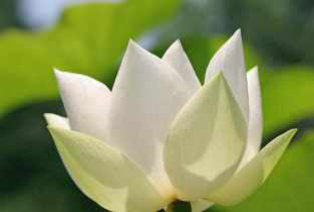
昨晚（12月26号），21:36-00:40，双盘3小时4分。
这是第50次双盘三小时，和之前51次姿势一样——右腿在下，左腿在上。
第一小时，闭目静坐，杂念多，身体不够正直，因为感冒还没全好，身体能量好像已经比过去提升了很多，不用药情况下，感冒逐天跳级好转——前天早上正式感冒，清鼻水流了一天，晚上睡觉盖多一床被子，发了汗，昨天早上感冒好了大半，到昨晚双盘时，身体感大概还有30%的感冒残余。
第二小时，压下面的右脚踝渐渐疼痛，期间闺蜜发来消息，来回回复，大概聊了30分钟，聊得较high，好像忘了双盘的身体感，聊完之后听轻音乐回复平静。
第三小时，有一阵子左大腿根部有点疼痛（之前的双盘三小时曾出现过，已经很久没出现了），这个疼痛比较快就消失了，最后时段，两个膝盖和右脚踝比较难受，程度有时轻有时重，腿脚的不适让人想东摇西晃，到三小时的时候，腿脚不适反而很轻，似乎再坚持十几分钟也没问题，时间太晚，就没继续。
毕竟还是感冒后期的身体，放下退后比较没劲，歇了一会，才慢慢做双盘收功。
对了，感冒期间双盘收功就不要搓人中了，一般感冒都伴随流鼻涕，整天擦鼻子，人中位置好像皮会变薄，也变得木木的，好像搓不热似的，还容易搓破皮——前一次双盘三小时没意识到，第二天才发现人中位置被搓破点皮。
至于感冒期间要不要双盘，看身体情况来定吧，身随心动，想盘就试试，不想盘就不盘。
整个过程全身暖和，手脚暖和，放屁大概7,8次，有打嗝，次数较少。
盘完睡觉时好饿，太晚了，没找东西吃。
2015-12-31双盘三小时(第51次)(功力大增)
昨晚（12月30号），21:06-00:10，双盘3小时4分。
这是第51次双盘三小时，和之前50次姿势一样——右腿在下，左腿在上。
第一小时，闭目静坐，大概四十分钟后杂念多，身体不够正直，感冒好了，估计感冒期间耗了比较多能量。
后两小时，听正安聚友礼的节目和轻音乐。
第二小时，有时痛得剧烈，很痛的时候心会烦躁，主要是左大腿和右脚踝疼痛（以前主要是两个膝盖和右脚踝疼痛），像是双盘后劲没消又继续双盘的疼痛感，可是前面两晚双盘时间都较短，大概一个小时，搞不清这个疼痛感的来源，疼痛是一阵一阵的，位置也有变（压下边的右脚踝是一直疼痛），一下这里较痛，一下那里较痛。
两个半小时左右，痛得有点难忍受，放弃的念头闪过一下（已经好久没在双盘三小时中痛到闪过放弃念头了），忍到三小时的时候，疼痛又减轻了很多。
整个过程手脚暖，最后时段膝盖温度比手心温度略微低一点，放屁大概7,8次，到三小时的时候打嗝几次。
放下腿脚，累，无力，歇了一会才有力气揉搓收功，睡觉时脚踝和膝盖有疼痛感（盘的过程膝盖疼痛不算剧烈）。
=======================================
这次明显倒退，应该是感冒的暂时影响，近来几个细节都显示“功力大增”。
首先是最近的感冒，不用药的自然康复速度，堪比经方的“一剂知，二剂愈”——每一天起来，都能明显感觉到比前一天好50%的样子，如果把正式感冒那天早上身体的不舒服计为100分，第二天减到50分，第三天减到25分，第四天只有3-5分（还带点感冒鼻音）......整个过程，精力不错，不会病恹恹的难受得不想做事。
其次是前几天晚上给夕哥按摩，他没有像我一样坚持练习这些功法（真的好讲缘分啊，不是一家人就能被带动从而很好坚持的），作为久坐办公室一族，肉硬绑绑，揉捏起来，皮肤下各种寒湿瘀的小疙瘩。给他按了十几分钟，晚上睡觉，他被按的区域像着火似的一直发热，好像我的气（或力）渗透进去了！
大概一两年没给他按摩了，不知道从什么时候开始有这种“劲道”。
难怪徐文兵老师一直强调医生要先练自己的气“如果你没有足够的气，你感觉不到病人的邪气，你手比病人肚子还凉，还摸什么邪气？(病人还反过来给你治病）”还有大概是一个多月前，有次炒菜被油溅到手背，第二天落个疤，现在的手也是逆生长哦，比较白（以前干黄粗糙），相衬之下，这个疤较明显，担心它一直停留不散，连续观察几几天，很神奇，每一天都能感觉到它显著淡化，十来天的样子，完全不见了。当时脑袋浮现这样的镜头——武侠剧中那些高手被划伤，躲到山洞运气练功，导演用快进画面表现，“刷刷刷”，我们眼睁睁看那伤口愈合——这些夸张的艺术背后，或许是有一点现实依据的。（被油溅的第一时间，用白糖水涂了，据说这个对防止烫伤留疤有一定效果）是不是觉得太神奇？其实小孩的身体一般就有这么强的自愈力（凡事有例外啊，小孩中也有体质严重虚弱或得重病绝症的，说的是普通健康小孩），有一次去药店买什么小东西，刚好有个妈妈带着孩子来买药，说是小孩碰到什么过敏了，长了一些红点，那大夫跟她说，孩子体质好，不一定要买膏药涂，涂或不涂或干脆涂点口水，都很容易好的。大家当故事看看，我不要过度宣扬双盘的神奇，身体能量的增长应该是多年养生积累起来的，大部分传统养生方法都“殊途同归”，选择自己感兴趣的，都好，不想靠自己的，等我“神掌”练好出山，约私人定制按摩套餐啊（百万博主的按摩女，哈哈哈）。养生能达到的境地，不是让我们永远不生病，而是正气养起来后，不那么容易病，要是病了，也容易自然康复。
2016-01-01双盘三小时(第52次)(熬夜双盘会不会把身体搞坏)
昨晚（12月31号），21:23-00:27，双盘3小时4分。
这是第52次双盘三小时，和之前51次姿势一样——右腿在下，左腿在上。
第一小时，闭目静坐，大概五十分钟后腰背渐渐无力，身体不够正直，杂念多。
后两小时，听轻音乐，重温梁冬先生和徐文兵老师聊《黄帝内经》。
进入第二小时，很上一次一样，有时痛得剧烈，主要是左大腿和右脚踝疼痛，像是双盘后劲没消又继续双盘的疼痛感（白天短时双盘大概半小时，应该不至于有那么强的后劲啊，不知道为什么），疼痛是一阵一阵的，一下这里较痛，一下那里较痛，位置也有变（压下边的右脚踝是一直疼痛）。
第二小时结束，疼痛难忍，想放弃（已经好久没在双盘三小时中痛到闪过放弃念头了），又觉得好不容易熬了两小时，还是继续吧，给2015一个完整句号，给2016不一样的开始。
痛得烦躁，夕哥跟我说话，不想搭理“腿脚好痛，很烦躁，离我远点，等盘完再说。”
“你白天那么忙，晚上又双盘这么晚，身体会不会被搞坏啊？”
为什么疼痛难忍会烦躁呢？
身不正（不是想正就能正的啊），气不顺，心就烦，跟外界的人没关系，好在能看清这点，没“伤及无辜”。
好不容易忍到三小时，盘完放下腿，膝盖和脚踝还是痛，歇了一会才做收功揉搓，不过那个心烦消失了，对他说话又温柔啦。
整个过程手脚暖，最后时段膝盖温度比手心温度略微低一点，放屁大概十几次，打嗝也在五次以上十次以下——很久没排这么多浊气了，屁很臭，也许和晚餐有关——猪肉炖粉条，粉条估计不大好消化。
这次双盘后劲很强，睡觉翻身总能感觉到膝盖和脚踝疼痛（已经很久没有这么强的后劲了），第二天早上起来还有点疼痛。
一些网友和夕哥关心的一样，“熬夜双盘”会不会把身体搞坏？
我个人感觉熬夜双盘和熬夜上网或上班有很大差别。
从肉身层面看，熬夜双盘，全身和手脚是暖暖的（和双盘的阶段有关，在双盘排寒阶段，是不会暖暖的了，我目前的阶段，是暖暖的）；熬夜上网或上班，到凌晨三四点，会手脚冰凉，发冷，脑子不听使唤，这是因为过多损耗气血、人体热量流失，导致寒气极易入侵。许多人都有这样的体会，老朋友相聚，狂欢一夜，次日就病倒。这样的熬夜会内耗气血，寒气入侵。
说明熬夜双盘时，气血是增长的；而熬夜干其他事，气血是大耗的。
同样是熬夜，为什么有这样的差别呢？
除了前面解读双盘姿势本身“降低内耗”之外（详情请看《双盘三小时（第44次）（双盘不是打坐，打坐不是双盘）》），还有一点，双盘的时候，身和心（神）是在一起的；熬夜干其他事的时候，身和心是分离的，比如熬夜上网或刷微信，心被网或手机勾走了。
当然，不熬夜双盘肯定更好。
博主没办法啊，为了生活，白天要工作赚钱，暂时将就客观条件来安排，以后慢慢调整。
元旦都不给自己放假放松？
双盘是我目前给自己放松的最好方式，2月分过年，在老家，人多喧闹，到时没法长时间双盘，现在有机会多做点。
2016-01-02双盘三小时(第53次)(快速缓解双盘疼痛的方法)
昨晚（1月1号），21:55-00:57，双盘3小时2分。
这是第53次双盘三小时，和之前52次姿势一样——右腿在下，左腿在上。
第一小时，闭目静坐，大概五十分钟后腰背渐渐无力，身体不够正直，杂念多。
后两小时，闭眼听轻音乐，重听梁冬先生和徐文兵老师聊《黄帝内经》——闭眼听和睁眼听不一样，闭眼听的时候，好像更多沉睡的细胞也起来参与听这件事，听得更入心。
第二小时，主要是左大腿和右脚踝疼痛，像是双盘后劲没消又继续双盘的疼痛感（白天一边晒太阳一边用右腿在上的姿势双盘了一小时，应该不至于有那么强的后劲啊），疼痛是一阵一阵的，一下这里较痛，一下那里较痛，位置也有变（压下边的右脚踝是一直疼痛），痛感比上一次的第二小时略微轻。
大概因为梁冬先生和徐文兵老师聊的《黄帝内经》跟自己频率有共振，尤其是徐老师中气充足的沉静声音，有一定疗愈作用，第二小时的很多时候都忘了腿脚疼痛感。
最后二十分钟痛感剧烈，比上一次的最后时段难熬，大概可以排到所有双盘三小时中最痛的20次之内，大口大口吐气，坚持到最后，很奇怪，每次坚持到三小时的倒计声响，腿脚的不适立即减轻很多。
整个过程放屁大概十几次，臭屁多，打嗝也在五次以上十次以下——跟昨天一样，昨天推断是晚餐吃了不好消化的粉条，今天喝粥怎么也这样？
昨天和今天都吃了点膏方（配方暂不说，如果我目前的脾胃都不好消化，关注博客的很多人估计都不适合），难道和这个有关？或者是身体进入第二阶段排浊？有待继续观察。
整个过程全身暖，手脚暖，最后时段膝盖温度比手心温度略微低一点。
放下腿脚，脚踝和膝盖疼痛得无法动弹，歇了一会，才有劲做双盘收功。
之前分享过收功分两步，第一步——双盘结束，放下腿脚，紧握拳头，放在两个膝盖上，深呼吸三次，每次吸气时，肚脐用力到好像肚脐要贴后腰的命门，同时会阴穴上提（会阴穴位于人体肛门和生殖器的中间凹陷处）。
第二步——搓热掌心，用手指梳头几十次；食指侧面搓热人中穴；双手搓热后腰；双手搓热膝盖（两个膝盖）；双手搓热脚踝。
这次收功，特别地，把整条腿都搓了，而不是仅仅搓膝盖和脚踝，两手掌同时贴着一条腿，从大腿到脚踝，反复搓，搓得热热的。
睡觉时，双盘后劲比前晚轻很多，一般双盘过程疼痛太剧烈的话，双盘后劲会持续比较久，前晚睡觉翻身都能感觉膝盖和脚踝疼痛，昨天早上起来也还疼痛，后劲持续很久（前面有十来次后劲都不大明显了，最近几次好像受那几天感冒影响，后劲又比较明显，不过怎么也不会回到最开始双盘三小时那样持续几天了）。
大家可以试试，收功的时候，多搓一下整条腿，腿脚会恢复更快，后劲消失更快，不过在突破大的时段初期，双盘后劲（仿佛运动过度的身体感）肯定都蛮强的。
2016-01-03双盘三小时(第54次)(第一次操作拔火罐)
昨晚（1月2号），20:23-23:25，双盘3小时2分。
这是第54次双盘三小时，和之前53次姿势一样——右腿在下，左腿在上。
第一小时，闭目静坐，偶尔打瞌睡，杂念多，白天出去玩，消耗有点大。
后两小时，闭眼听轻音乐，重听梁冬先生和徐文兵老师聊《黄帝内经》。
期间主要是左大腿和右脚踝疼痛，和前面几次一样，像是双盘后劲没消又继续双盘的疼痛感，昨天白天并没有双盘，或许因为连续四天晚上双盘三小时？
最后二十分钟的疼痛和之前有所不同，最剧烈的是左膝盖（有时延伸到左大腿以及大腿根部），而不是压下面的右脚踝了，最后几分钟也是大口大口吐气熬过的。
整个过程放屁和打嗝都比前两次显著减少，减了一半的样子，放屁10次以内，打嗝5次左右。
昨天也有吃点膏方，搞不清前面两次为什么忽然排浊气那么多，莫非是感冒期间肠胃能量被抽调抗邪，肠道能量一下减少，导致残余物增多？
全身暖，手脚暖，最后时段膝盖温度比手心温度略微低一点。
放下腿脚，脚踝和膝盖疼痛得无法动弹，歇了一会，做双盘收功，和前一次一样，两条腿从大腿到脚踝都多搓一会，睡觉过程双盘后劲（膝盖和脚踝疼痛）几乎没有。
===========================
昨天出去，夕哥不小心被虚邪贼风入侵，昨晚到家开始流清鼻涕，懒得翻书开药抓药熬药，想让他和我一样，在不用药情况下启动身体自身能量逐天自愈。
可惜没练“内功”的人，自身能量启动慢，今天看起来并没有比昨天好转50%，叫我给他拔火罐试试。
之前我们都是自己拔真空罐，简便易操作，自从2015年夏季我靠刺血拔火罐神速解决急性荨麻疹后，我们都觉得火罐的效果比真空罐好。
我一直对火有点怕怕的，觉得危险（从小到大不敢点火炮），叫他到外面医馆拔。
他说医馆的人还不是慢慢学，多操作就熟悉了，鼓励我动手。
最后，谨慎尝试，成功操作，蛮有成就感。
随便记录自己走的路，大家不要盲目跟风，拔火罐确实比拔真空罐危险的。
2016-01-07双盘三小时(第55次)(坚定地把健康快乐放首位)
今天（1月7号），13:29-16:33，双盘3小时4分。
这是第55次双盘三小时，和之前54次姿势一样——右腿在下，左腿在上。
第一小时，闭目静坐，杂念多，和之前白天双盘（详见第49次）感觉相似——白天整个世界都在活动，能量偏阳，周围没有嘈杂声，却也是比较浮躁的“气”，晚上能量偏阴，比较沉静，大姨妈后期，身体能量偏低，到40-50分钟，膝盖开始不舒服。
后两小时，听正安聚友礼物的节目，朗读《维摩诘经》片断。
期间主要是两个膝盖疼痛，压下面的右脚踝没那么痛了，最后二十分钟膝盖也疼痛到要大呼几口气。
整个过程放屁大概5-10次，没有打嗝，这次脚板底居然热得出汗，盘完放下腿，裤子的好些位置也有汗湿了（比如膝盖周围），应该是微微渗透出来的汗，因为盘的时候没感觉这些部位出汗（奇了怪了，直到现在，双盘结束三小时了，两脚板底还在冒汗）。
放下腿后，膝盖酸疼明显，做完双盘收功，后劲还是比较明显（大姨妈真的是比较消耗啊，尤其是身体还主动排瘀血的情况下）。
双盘结束，心特别平静，很舒服。
有个网友跟我分享自己每天如实记录打嗝几个，屁几个，便几次，精确到个位数，真是人外有人！
还有个网友，我博客开始记录双盘和大礼拜的时候，她就隔空一起练习了，把记录的拍照给我看，居然画图说明！比如某天做大礼拜，后背肩胛骨位置发冷，居然用图来标识位置！
深深觉得我的养生记录好粗糙！
前段时间为了双盘三小时，晚上盘到凌晨睡，对我倒没什么影响，睡起来精神也是超好的，和过去熬夜后状态完全不同，家属老关心这事，说不准睡那么晚，那就试着调整一下时间看看，尽量在白天挤压时间出来双盘三小时，今天提高做事效率，吃完午饭开始双盘。
现在很想双盘三小时到100次，100次之后不知道还有没有这么火热的劲儿，趁想做的时候赶紧发力，其他能不做的事暂时不做。
比如，某天夕哥说“老婆，我没袜子穿了，麻烦帮洗下袜子呗。”
“亲爱的，你支持我把自己的健康快乐放在首位吗？”
“支持！”
“那好吧，明天给你买三十双袜子，先穿着，等春天一起洗。冬天进冷水多容易进寒气，对健康不好，冷飕飕的天里洗袜子，不是让我快乐的事，等春天再做好吧。”
.......
坚定地走在自己的道上，其他事都自动让路了。
当然，可不鼓励大家为了自己“练神叨叨的功”，就不承担该承担的事，除了洗袜子这种可做不做的小事，其他家务事比如做可口的晚餐，我也是不耽误的。
2016-01-08双盘三小时(第56次)
今天（1月8号），13:13-16:15，双盘3小时2分。
这是第56次双盘三小时，和之前55次姿势一样——右腿在下，左腿在上。
第一小时，闭目静坐，杂念多，到40-50分钟，膝盖开始不舒服。第二小时，朗读《伤寒论》片断。第三小时，重听梁冬先生和徐文兵老师聊《黄帝内经》。进入第三小时，两个膝盖疼痛很剧烈，压下面的右脚踝也比较痛，最后三十分钟，痛到多次飘过放弃念头，估计可以排在最痛的20次之内了，像双盘后劲没消除又双盘的那种疼痛感，主要原因应该是大姨妈期间和前后的7天是身体周期能量最低的阶段，水涨船高，慢慢增长！整个过程放屁5次以内，打嗝2-3次，手脚暖，脚板底热得出汗。放下腿后，膝盖酸疼明显，做完双盘收功，后劲还是比较明显。
2016-01-09双盘三小时(第57次)(双盘后感觉那方面弱了)
今天（1月9号），14:15-17:17，双盘3小时2分。
这是第57次双盘三小时，和之前56次姿势一样——右腿在下，左腿在上。
第一小时的前半段，闭目静坐，后半段静不下来，镇不住白天浮躁的“气”，手印摆一会就想乱动，还是之前晚上闭目静坐一小时愉悦。
第二小时，朗读《伤寒论》片断。
第三小时，闭目听轻音乐。
进入第三小时，两个膝盖疼痛就很剧烈，压下面的右脚踝也比较痛，最后三十分钟最痛的是左大腿，从膝盖到大腿根部，那种痛没法表达，不过不像最开始阶又痛又凉，现在不凉了，右腿没什么感觉，死活撑到最后——总的来说，这次的疼痛感比昨天轻一滴滴。
整个过程放屁5-10次，打嗝也差不多这么多次（打嗝主要集中在前半段时间，放屁主要集中在后半段时间），这次脚板底也热得出汗。
放下腿后，膝盖酸疼明显，做完双盘收功，后劲消得比昨天快（能量从经期最低谷开始增长了）。
放下退后一段时间，脚板底和绑着艾绒护腰的腰身，偶尔像着火一样烫。
===================================
网友在微信后台的双盘分享——
网友1：
小夕么么哒，交流下小心得，我几乎天天双盘，每次1小时左右，一天两次（早晚课的时候顺便坐的，我觉得双盘很稳比较舒服），大礼拜也做，108个或者几十个，没空就偷懒下，坚持了小半个月，这次月经来一点感觉也木有，丝毫木有酸胀或者想拉肚子脾气大或者乳房胀痛的感觉，而且血的颜色比以前鲜艳。（坚持得真好，为你加油！）
网友2：小夕，我已连续双盘20多分6天了，祝贺我吧，咋晚睡觉小腿和脚感觉到热了，这是我多年的顽疾呀！小时去河边洗腿和脚后，不擦干，任由风吹干，才导致的。谢谢你！小伙伴一起加油吧！（不容易的20多分钟，加油小伙伴！）
=================================
昨天微信公众号推送“知心姐姐聊那事”，一位男网友应景的问，没练双盘前那方面还行，练双盘后感觉那方面反而弱了，甚至有时不能勃起，不知怎么回事。
这要分类讨论——
第一种情况，确实是双盘“引起”，不过不是坏事。
就是之前说过的，如果是忽然突破长时间双盘（这个长时间是相对说法，比如一般只能盘10-20分钟，忽然某次突破30-40分钟；一般能盘一小时，忽然某次突破一个半小时或两小时......)，还没到达全程舒适无障碍的程度，建议双盘结束后的一两天（不一定是一两天，因人而异，因时而异，像我第一次熬到两小时或三小时之后，差不多要3天，身体感才恢复到正常，也许有的人要更久来恢复），身体处于高速修复期，建议不要过性生活；如果已经到了某个时间段的全程舒适无障碍了，在这个时间段内的双盘，可以不用那么讲究，因为身体已经形成某种“保护膜”了。
这种情况，双盘“后劲”很猛（放下退后几小时似乎能感觉到腿脚的血“刷刷”流），身体处于高速修复，会感觉无力或疲倦，房事战斗力减弱，是正常现象，等几天，双盘后劲过了，战斗力自然恢复，而且比之前更强。
第二种情况，也许这个反应和双盘没有直接关系，自己对照工作生活等方面来排查原因，年底工作忙压力大年会酒会熬夜等的都可能影响到。
在心情放松，休息很好的情况下，只要连续三天早晨丁丁雄赳赳起来，就不用担心，可能只是身体一时疲惫，会自行恢复。
反之，如果连续三天早晨丁丁没有雄赳赳起来，可能是身体出了什么状况，建议去看医生。
2016-01-11双盘三小时(第58、59次)
昨晚（1月10号），20:16-23:17，双盘3小时1分。
这是第58次双盘三小时，和之前57次姿势一样——右腿在下，左腿在上。
第一小时，闭目静坐，有点犯困，杂念多。
后两小时，听梁冬先生和徐文兵老师聊《黄帝内经》，听轻音乐。
进入第三小时，两个膝盖疼痛剧烈，压下面的右脚踝也比较痛，左大腿（从膝盖到大腿根部）也非常不舒服。
膝盖的疼痛回到了很早之前的那种胀痛（双盘三小时的前20次这种痛感出现得多，已经好久没有出现了，之前是又胀痛又发凉，现在感觉不到发凉，手心按着的话温度是比手心略低），好像里面有杂质一样膨胀，每个细胞都往外吐什么东西似的。
佛家有个词叫“拔业障”，这个疼痛，好像真的是拔骨头里面的什么杂质（虽然以前也没有骨质疏松病名，不过我的膝盖骨头藏着的一些东西肯定不是人体该有的精髓，因为从小就有风湿酸痛以及接触中医前膝盖如冰块，还呼呼往外冒寒气），好像在超度某些曾经异化的细胞或者曾经没被很好善待而死去的细胞。
一直大口大口吐气，分分钟想放弃，痛得后背冒汗，飘过多次念头“受不了了，太TM自虐了，再也不想盘了”（最近十几次都没痛到这种程度）......如果不是自愿"自虐"，要是什么人让我受这苦，分分钟拿”草泥马“问候他祖宗十八代，一再跟自己说”太痛了，要命啊，绝不主动叫人双盘“。不知道怎么撑到最后的，放下腿，浑身没劲，腿脚无力动弹（都没法把腿伸直），保持僵尸状态大概5分钟，才有劲做双盘收功。整个过程放屁5次以内，打嗝5-10次，手脚暖和，脚板底没热得出汗。
晚上睡觉，双盘后劲很强，翻身都觉得膝盖和脚踝不舒服。
早上起来恢复得挺好，后劲不那么明显，但也没有完全消，做了2*108个大礼拜（昨天偷懒没做，今天补起）。
这次反复到这么痛，也许因为大姨妈后期就每天双盘，连续四天双盘三小时，前面的后劲表面上消了，可能深层还没恢复那么好（猜测的原因，事实是什么，还待观察）。
=======================================
今天（1月11号），13:33-16:35，双盘3小时2分。
这是第59次双盘三小时，和之前58次姿势一样——右腿在下，左腿在上。
第一小时，闭目静坐，盘的姿势很紧，稳稳当当，杂念少的过了50分钟，后面10分钟开始想乱动。
昨天那么痛，好像真的拔掉什么东西似的，这一小时好像气路更宽更通了，很舒服。
后两小时，听罗辑思维的罗胖的跨年演讲《时间的朋友》，全程四小时，听了一半，如他所说，真是考验膀胱哈。
他说要讲20年，希望讲的人和听的人都保养好身体啊！
今天的我们关心经济动态，资本寒冬，妖股，科技新成果，互联网生态......20年后，作为个体的我们，估计更关心不尿频，不夜尿，一觉到天亮。
最后半小时，腿脚痛感比昨晚轻，两个膝盖和右脚踝还是疼痛，不过胀胀的感觉不明显了。
最后也是大口呼气熬时间，放下腿，也是浑身没劲，腿脚无力动弹，保持僵尸状态大概5分钟，才做双盘收功。整个过程放屁5次以内，打嗝5-10次（打嗝打到胸口有点闷闷的），手脚暖和，脚板底出汗湿了袜子。盘的过程，膝盖温度比手心温度低，没感觉到发凉，放下腿后，膝盖有略微凉感（又排寒了？），脚板底时不时着火似的发烫。
2016-01-13双盘三小时(第60、61次)
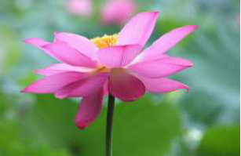
昨天（1月12号），13:00-16:02，双盘3小时2分。
这是第60次双盘三小时，和之前59次姿势一样——右腿在下，左腿在上。
第一小时，闭目静坐，稳稳当当端坐着，中途回复几条短信，整个过程杂念较少，后面10分钟静不下来，老想动。
第二小时，看书，进入第二小时，腿脚开始略微不适，还是在腿脚舒服得感觉不到它存在的时候更容易静心。
第三小时，听罗辑思维的罗胖的跨年演讲《时间的朋友》，上次听了一部分，接着听一部分。
最后半小时，两膝盖和右脚踝还是疼痛，痛感比前几次轻很多，没痛到飘过放弃的念头。
放下腿，恢复较快（不像前几次那样浑身没劲或几分钟腿脚都无力动弹），快速做双盘收功，一下就可以下地了，下地后感觉双盘后劲也不强。
整个过程，放屁10次以上，打嗝5-10次（放下腿后还不停打嗝了几次，又咳了几次，第一次出现双盘结束后咳），手脚暖和，脚板底出汗，袜子有点湿。
=======================
今天（1月13号），13:28-16:31，双盘3小时3分。
这是第61次双盘三小时，和之前60次姿势一样——右腿在下，左腿在上。
第一小时，前40分钟，闭目静坐，呼吸深而长，身体舒适得感觉不到身体的存在感，杂念少；后20分钟，左腿略微不适，从那个很静的状态出来，想乱动。
白天整个世界都在活动，能量偏阳，周围没有嘈杂声，却也是比较浮躁的“气”，之前白天双盘静不下来，杂念纷飞，这次好像有点“镇压”住白天浮躁的气了，比较静。
第二小时，朗读一些美文，姐姐来电，通话大概20分钟，腿脚一阵一阵的不舒服——两个膝盖疼痛，左大腿疼痛，右脚踝疼痛，程度还可以忍受。
第三小时，听正安聚友礼的节目，听轻音乐。
从150分钟到170分钟，两个膝盖和左大腿疼痛较剧烈（左膝盖比右膝盖更难受些），难忍受，大口吐气缓解，奇怪的是，最后十分钟，这些疼痛减轻，轻到感觉不到不舒服，真是无常啊！
2016-01-15双盘三小时(第62、63次)(持久平和喜悦的必经之路)
昨天（1月14号），13:20-16:22，双盘3小时2分。
这是第62次双盘三小时，和之前61次姿势一样——右腿在下，左腿在上。
第一小时，前50分钟，闭目静坐，没有身体的存在感，超级舒服（好期待这样的舒服可以持续三小时，奈何身体上的障碍不是想突破就能突破啊），流了一阵眼泪（没想什么激动感动或伤感的事，不知不觉眼睛湿润，之前有段时间双盘三小时这个现象经常出现，最近很久没出现）；后10分钟，左腿有不适感，静不下来，想乱动。
第二小时，朗读《黄庭内经》（没打错，是《黄庭内经》，不是《黄帝内经》），道家经典之一，一小时读完全文，不知道讲什么（文言文理解力太差），唯独对这句似懂非懂“仙人道士非有神，积精累气以为真”，期间腿脚一直有不适感，程度不是很强烈，又被朗读转移了注意力，一个小时很快过。
第三小时，听罗辑思维的罗胖的跨年演讲《时间的朋友》（手机下载一个叫“喜马拉雅”的APP，搜“罗辑思维时间的朋友”即可收听），之前听了一部分，这次听完剩下的。
最后半小时，两膝盖和右脚踝疼痛，痛感比前几次轻很多，没有很难熬。
放下腿，恢复较快（不像前几次那样浑身没劲或几分钟腿脚都无力动弹），快速做双盘收功，一下就可以下地，下地后双盘后劲也不强。
整个过程，放屁5-10次以上，打嗝和放屁差不多多。
整个过程，手脚暖和，脚板底出汗，袜子有点湿，膝盖窝出汗（膝盖窝位置的裤子汗湿）。
罗振宇老师在跨年演讲中说，所有动物都有三种情绪：愉悦、恐惧、愤怒，人多了爱、恨和忧伤，爱不是愉悦、恐惧、愤怒，它一定是多了时间的尺度，人要是没有时间的尺度，爱不起来、也恨不起来，当时间的维度开掘地越深，属于人性的光辉就越加灿烂。
双盘过程，深刻体会到时间这个维度对人的影响，当身体舒适得没有存在感的时候，一小时如一分钟，没有爱，没有恨，没有纠结，唯有当下平和的喜悦；身体疼痛难忍的时候，一秒如一年，杂念纷飞，情绪涌动。
突破身体障碍，是获得持久平和喜悦的必经之路。
演讲中提到，你的报酬不是和你的劳动成正比，而是和你劳动的不可替代性成正比，稀缺性是商品的核心价值，让人觉得信任的“人”，是稀缺的。
因此，我安心关闭旺旺练双盘，如果我只是淘宝百万客服之一，提供的服务随便一个人都可以替代，那么就算一天工作16小时，报酬也不会上去，只有不断成长和提升，提供稀缺性服务，比如之前博文提到的，若把气练起来，练出“神掌”，给人按摩，“按腰腰细，摸胸胸大”，这样的“手艺人”大有“钱途”啊。
解读大数据时，他提及淘宝检测恶意刷单，以后虚假交易成本越来越高，之前看到文章说刷单公司都去融资了，扶持“不诚信生意”的生意居然光明正大融资，让我觉得这个世界太疯狂了，担忧诚信如我者会不会被“劣币驱逐良币”......担忧是多余的，诚信始终是稀缺资源。
=====================
今天（1月15号），13:30-16:33，双盘3小时3分。
这是第63次双盘三小时，和之前62次姿势一样——右腿在下，左腿在上。
第一小时，前40分钟，闭目静坐，中途不知不觉流了会眼泪，没有昨天那个超级舒服的状态，试着数呼气来练专注（没打错，是“呼气”，不是“呼吸”），反复从一数到十，数着数着，念头还是会跑出来；又试着“观念头”，看念头从哪里跑出来怎么跑出来，观着观着，还是没观住，念头总是偷偷溜出来；后20分钟，左腿有不适感，静不下来，想乱动。
这次腿脚不适来得比昨天早，可能因为这是连续第九天双盘三小时，之前最多是连续四天双盘三小时，身体深层的修复回弹可能跟不上这个双盘频率，很快回家过年没机会双盘这么久，想这段时间多盘几次。
后两小时，听梁冬先生和徐文兵老师聊《黄帝内经》，这个时段腿脚疼痛比昨天同时段更剧烈，后面四十分钟有点难熬，还算好，没有难熬到闪过放弃念头，主要是左大腿（从膝盖到大腿根部）和右膝盖以及右脚踝疼痛（右大腿不怎么疼痛）。
整个过程，放屁10次以上，打嗝略少一些。
手脚暖和，脚板底出汗，袜子有点湿，这次膝盖窝没出汗。
放下腿，比昨天放下腿后累一些，做完双盘收功，下地后双盘后劲消失较快，穿加绒裤，感觉膝盖有点凉（估计又在排寒），膝盖比手心温度低。
2016-01-18双盘三小时(第64、65次)
前天（1月16号），13:19-16:21，双盘3小时2分。
这是第64次双盘三小时，和之前63次姿势一样——右腿在下，左腿在上。
第一小时，前40分钟，闭目静坐，偶尔打呵欠，数呼气来练专注，反复从一数到十，数着数着念头还是会跑出来；后20分钟，左大腿有不适感，静不下来，想乱动。
这次腿脚不适来得比较早，可能因为这是连续第10天双盘三小时，身体修复不大跟得上这个频率。
第二小时，朗读《瑜伽经》和《阴符经》，瑜伽经不是很接地气，从梵文翻译而来，可能没翻好，唯独对这句似懂非懂“精微的知觉产生最高的意识转变，使心灵平静”。阴符经很短，读不懂。
第三小时，听梁冬先生和徐文兵老师聊《黄帝内经》，这个时段腿脚疼痛比昨天同时段更剧烈，后面四十分钟难熬，艰难忍到最后。
这次双盘有个之前都没有的现象，左脚板底出现几次暖流（5-10次），脚板底某个区块忽然有暖流，每次持续几十秒，前几天是双盘结束放下腿后几小时偶尔脚板底有类似暖流。整个过程，放屁5-10次，打嗝次数差不多多。整个过程，手脚暖和，脚板底出汗，袜子有点湿，膝盖窝没出汗。放下腿，比昨天放下腿后累一些，做完双盘收功，居然睡着了（也是第一次！），也不知道怎么睡着了，醒来发现时间过了一小时。=============昨天（1月17号），20:58-23:59，双盘3小时1分。
这是第65次双盘三小时，和之前64次姿势一样——右腿在下，左腿在上。
第一小时，前40分钟，闭目静坐，没有身体存在感，超级舒服，注意力放在呼吸上，数呼气（没打错，是数“呼气”，不是数“呼吸”，反复从一数到十），呼吸细长，杂念少，左脚底出现几次暖流，出现暖流的时候，左脚拇指和食指之间好像有个磁场，细胞之间有相互吸引的磁感，整个后背微热至有细眯眯汗渗透出来，听到手机的消息提示声（手机用来记时，没放远），这个状态实在太舒服了，不想出去，不想动手机，进入第二小时才看手机回消息；后20分钟，左大腿略微不适，超级舒服的状态消失，想乱动，杂念多。
之前很长一段时间双盘三小时都有稳定舒服的第一小时，最近腿脚不适来得有点早，估计和连续多天双盘三小时有关，这是连续11天双盘三小时。
中间一个半小时，用IPAD查资料(过几天回四川，途径重庆，想停留看看山城，翻相关攻略），可能因为注意力转移，腿脚不适没有太强烈，感觉电子设备的波动频率就是与人体的波动频率不“和”，越看越浮躁（好像气往头上冲），眼睛也不舒服，不像闭目双盘时那样清润。
最后半小时，用《大悲咒》平浮躁之气（酷狗音乐中搜“大悲咒笛子版”），宗教音乐还真能让人静心定神，听着听着，浮躁的气渐渐沉下来（气往丹田走），腿脚疼痛剧烈，主要是左大腿和两个膝盖，压下面的右脚踝不怎么痛，反而是右脚脚背痛，后面痛到忍不住“发愿”——“再也不盘了”，大口吐气，度秒如年熬到三小时，又闭眼多忍一分钟（艰难的60秒）。（痛到有“阴影”了，今天暂停休息，不盘三小时了）
整个过程，放屁5-10次，打嗝次数差不多多。
整个过程，手脚暖和，脚板底出汗（第二次双盘过程脚板底出现暖流），袜子有点湿，膝盖窝没出汗。
放下腿，膝盖和脚踝太痛且无力，无法动弹，保持僵尸状态躺一会才做双盘收功，大概十五分钟下地，下地后双盘后劲不强烈，晚上睡觉腿脚没有不适感。
2016-01-24双盘三小时(第68～70次)(天寒地冻，最好多运少动)
前天（1月22号），13:05-16:10，双盘3小时5分。
这是第68次双盘三小时，和之前67次姿势一样——右腿在下，左腿在上。
眼看全国大范围降温，改变原计划，重新订票订住宿回家，春运，不好买票，中转N次，羡慕嫁同城的人，不用奔波。
这次双盘三小时没有闭眼安静坐着，前面两个半小时都在查订票，很多航班只剩头等舱，还是钱多好哇，不用看价格，没钱的博主只能到处搜经济舱。我想要的人生呐，是有钱的时候还健康，有钱又健康，如果还可以加定语，是“有钱又健康的时候还年轻或者显得年轻（贪心的女人）”。
忙碌着，也能感觉到第一个小时腿脚是舒适的，进入第二小时，腿脚渐渐不适，注意力被转移，疼痛不算剧烈。最后半小时，左大腿和右脚背较疼痛，听轻音乐，东摇西晃身体熬时间，奇怪的是，三小时铃声响，疼痛立即减轻大半，继续忍5分钟。
整个过程，放屁5次左右，打嗝次数差不多多（明显比前几次少）。
整个过程，手脚暖和，脚板底暖得出汗，袜子汗湿，膝盖窝没出汗。
放下腿后，做双盘收功，做完收功下地，双盘后劲就消了。
==========
昨天（1月23号），12:45-15:47，双盘3小时2分。这是第69次双盘三小时，和之前68次姿势一样——右腿在下，左腿在上。第一小时，前40分钟，闭目静坐，身体舒适；后20分钟，左大腿疼痛，静不下来。第一个小时的最后几分钟，左大腿难受得都想放下腿了，真是奇怪，居然第一个小时就出现那么剧烈的不适，东摇西晃熬到第二小时，那个疼痛又减轻得几乎感觉不到了，整个第二小时没有很难受，无常啊！第二小时，听正安聚友礼的节目，腿脚没有很难受，时间过很快。
第三小时，听罗辑思维的音频，最后半小时，左大腿，左膝盖和右脚背较疼痛（右膝盖没什么感觉）。
整个过程，放屁5次左右，打嗝次数差不多多（明显比前几次少）。
整个过程，手脚暖和，脚板底暖得出汗，袜子汗湿，膝盖窝没出汗。
放下腿后，做双盘收功，做完收功下地，双盘后劲就消了。
大降温！
外面北方呼呼吹，正常保暖情况下，全身暖和，手脚暖和！
想当年，一入秋手脚冰凉像“鬼手”，冬天长冻疮，每年好像只能过夏天，其他季节都受罪......曾经梦寐以求的，如今触手可及，还有什么比一点一点让梦想照进现实更让人喜悦！
==================今天（1月24号），13:43-16:46，双盘3小时3分。
这是第70次双盘三小时，和之前69次姿势一样——右腿在下，左腿在上。
第一小时，前40分钟，闭目静坐，身体舒适；后20分钟，左大腿（右脚背压着的位置）疼痛，静不下来。和昨天一样，第一小时的最后几分钟，左大腿非常难受，不由得怀疑这次能坚持三小时吗，好在进入第二小时，疼痛减轻很多。第二小时，听了半小时佛教音乐，宁静喜悦，过去打死也想象不到，看起来傻呆无趣的闭目双盘带给人的high劲，远超其他娱乐活动。后面一个半小时，听JT叔叔讲中医基础，以前看过多遍，还想听，JT叔叔喜欢吃药不喜欢练功，他的声音不是让人“气沉丹田”的那种，但我还是喜欢听他讲课，听得放松而愉悦。大概因为他修庄子心法修得比较好，他的心是自在的，是放松的，他活出了某种程度的“逍遥”，这种能量场会隔空发力，可见一个人自带什么能量是很重要的，比如同样一句话，这个人说出来，别人觉得有道理很容易接受，换一个人说，别人觉得心塞不爽不接受。我有个朋友，不管她说什么，她老公都反驳，我有时忍不住想，如果她说“雪是白的”，估计她老公反驳“不对，雪是蓝的”。最后半小时，右脚踝较疼痛，两个膝盖的疼痛轻。整个过程，放屁5次左右，打嗝次数差不多多。整个过程，手脚暖和（手比脚暖），脚板底暖得出汗，袜子汗湿，膝盖窝没出汗。放下腿后，做双盘收功，做完收功下地，双盘后劲就消了。对了，第二小时快结束的时候，肚子很饿，叫夕哥帮找点吃的，他煎两块饼送过来，美味！有网友微信后台问，怎么让老公支持自己双盘或养生？
当做到“你好他也好的时候”，正常人都会支持的啦，像我家那位，以前抱人肉冰块睡，现在抱人肉热水袋睡（现在我比他暖和多了）......
一些妹子辛辛苦苦减肥大半年，过了冬天又长肥（回），明显运动不当嘛。
天寒地冻的季节，想多吃又不长胖，要多运少动——运是把血液集中到内脏，让脏腑运行加快；动是把血液打到四肢，练得人“四肢发达，脏腑虚弱”。肢体在动的时候，脏腑基本运不了，比如说，饭后半小时不要去跑步，跑步的话血液要供给四肢，肠胃供血不足就不能很好的消化食物。脏腑的运怎么才能加快呢？肢体静下来。冷飕飕的天，我也多运少动，昨天做大礼拜50个，计划今天做58个（两天凑够108）。
2016-01-27双盘三小时(第71次)(与其被梦想叫醒，不如......)
今天（1月27号），13:03-16:07，双盘3小时4分。
这是第71次双盘三小时，和之前70次姿势一样——右腿在下，左腿在上。
第一小时，闭目静坐，期间有段时间犯困，大概40分钟左右左大腿开始不舒服，之后静不下来。
中间一个半小时，朗读《伤寒论》，腿脚疼痛不剧烈。
最后半小时，左大腿，左膝盖和右脚踝疼痛较剧烈，摇晃身体缓解，闭眼听轻音乐。
整个过程，放屁5次以内，打嗝次数差不多多（都比较少了哈，放下腿后一小时内打嗝几次）。
整个过程，手脚暖和，脚板底暖得出汗，袜子汗湿，膝盖窝没出汗。
刚刚盘的时候，手指头冰冷，结手印端坐一会，好像身体能量聚集后自动形成圆环流动贯通了手指，整个手暖乎乎的，像烤火一样！
用的手印是，两手四指重叠，左手在下，右手在上拇指轻轻相触，平放在腹部下方。
放下腿后，做双盘收功，做完收功下地，双盘后劲就消了。
话说，今天早上被便意叫醒，以为是半夜呢，看时间是六点多，大肠经不顾天寒地冻照常工作，不容易啊，以前便秘严重的时候，一周都没有便意，那时这套系统常年歇菜。
想着最近翻译资料少，不如先双盘三小时再工作，于是开始盘，盘到一个小时，又有大大感觉，只好放下腿解急，下午重新计时双盘三小时，还好，一天两次算是把当天
该排的“配额”排掉了，下午没被“便意喊停”顺利盘完三小时。
天气骤冷，身体需要更多能量抗寒，会影响大大。
前天下午计划双盘三小时，盘到两小时二十分，也被便意喊停，“被迫”放弃一次双盘三小时机会。
之前有段时间，经常双盘过程或结束有大大感觉，一天两次，感觉那段时间是排“宿便”，现在的两次，感觉是身体能量不够用，一旦调用一些来抗寒，就没有足够力气
把当天该排的一次性“浓缩成型推出来”。
怎么感觉出这样的差别呢？
比如现在早上的第一次，开始成型，后面会不成型（能量不够，没被烤“熟”），完了不是那么畅快，好像还有“余料”，双盘蓄了些气继续推动，“余料”才被推出。
（会不会太恶心？有没有必要写这么直白？）
不是说艾绒护腰给肠道加把劲会改善大大吗？
是加了把劲，但是当身体能量还不够充足的时候，抗寒消耗的比艾绒补充进来的多，大大就会被影响到，最近头发的亮滑程度也不如降温前。（好比说，如果收入没有稳定在一个比较高的水平，多一笔大支出，日子就过得紧缩紧缩的）
以前便秘严重的时候，一周没便意，身体重复吸收本该排出的毒素，一身浊物，难怪脸色晦暗，难怪眉头紧锁，顶一张“便秘脸”生活那么多年而不自知。
不要被闹钟叫醒，也不要被梦想叫醒，被便意叫醒更好（尤其是气色更好），凡事有例外哈，有一种被便意叫醒是病——经常一大早有便意（可能伴有腹痛），然后哗哗“一泻千里”，那叫“五更泄”，脾阳虚也。
2016-01-30双盘三小时(第72～74次)(双盘突破5小时！)
前天（1月28号），13:47-16:50，双盘3小时3分。
这是第72次双盘三小时，和之前71次姿势一样——右腿在下，左腿在上。
第一小时，开始闭目静坐，身体舒适，最近都这样，大概40分钟左大腿开始不舒服（右脚踝压着的左大腿部位），静不下来，听《心经》。
第二小时，朗读《伤寒论》，腿脚疼痛程度比昨天重一些，有点怀疑这次是否能坚持三小时，感觉全程舒适的三小时双盘还有点遥远呢。
第三小时，听JT叔叔讲中医基础，最后半小时，右膝盖和右脚踝疼痛剧烈，左腿反而没什么感觉（之前都是左腿更痛），摇晃身体熬时间，最后几分钟，右脚踝持续发热（第一次出现）。
整个过程，放屁5次以内，打嗝次数差不多多（都比较少，放下腿十几分钟后，有点累，平躺休息，同时手搓印堂，打嗝十几次，不确定这些打嗝跟搓印堂有没有直接关系，这是第一次双盘结束后连续打嗝十几次，搓印堂的时候没多想有什么功效，无意搓搓而已）。
整个过程，手脚暖和，脚板底暖得出汗，袜子汗湿，膝盖窝没出汗。
放下腿后，做双盘收功，做完收功下地，双盘后劲就消了。
=========昨天（1月29号），07:47-10:51，双盘3小时4分。
这是第73次双盘三小时，和之前72次姿势一样——右腿在下，左腿在上。
第一小时，前40分钟，闭目静坐，身体舒适，后20分钟左大腿不舒服（右脚踝压着的左大腿部位），静不下来，听轻音乐。
中间一个半小时，听JT叔叔讲中医基础，腿脚疼痛程度比昨天重。
最后半小时，听轻音乐，右脚踝和右膝盖疼痛剧烈（左腿好很多），难受得呲牙咧嘴，明天怕是不敢继续了，晃动身体缓解不适。
整个过程，放屁5次以内，打嗝10次以上（打嗝更多了哈）。
整个过程，手脚暖和，脚板底暖得出汗，这次没穿袜子盘，膝盖和腰上裹了厚厚的棉被保暖。
放下腿后，做双盘收功，做完收功下地，双盘后劲就消了。
这是第一次上午双盘三小时，屋外刮寒风下大雨，屋内的我裹着厚厚的被子端坐，手脚暖暖的，好享受这样静静的“运动”。
这种天叫我去跑步，我大概会“宁死不屈”，觉得太要命了——高中的时候，学校倡导早起跑步锻炼，我是“好学生”，积极分子啊，铃声一响，六点多，天黑黑的，就起床去跑了，那时候的座右铭是老毛那句“与天斗，其乐无穷”，可是我等凡人，哪能跟打江山善冬泳的老毛比啊，终究被天斗了——既没跑出健康也没跑出活力。
我这次是直接在床上双盘的，最近几个月，觉得睡硬床板更舒服，把弹簧床垫拿掉，在硬床板上铺艾绒褥子，上面加一层床单，睡醒可以直接双盘。
如果床上有弹簧床垫，支撑力不稳，会让臂部受力不均，不利于长时间双盘。
=========今天（1月30号），10:27-15:38，双盘5小时11分！
没错！是一二三四五的五，不换腿的一次性双盘突破五个小时！史上最佳纪录！里程碑哈！激动！
这是第74次双盘三小时，和之前73次姿势一样——右腿在下，左腿在上。
第一小时，前50分钟，闭目静坐，身体舒适，后10分钟左大腿根部不舒服，静不下来，听轻音乐，最后几分钟，左腿不适非常难受，怀疑这次是否能坚持三小时，结果，无常啊无常，不适很快消失，后面时间里腿脚不适都没有太难受。
第二小时，朗读伤寒论，腿脚不适轻微。
第三小时，看书，不知不觉三小时铃声响，觉得腿脚没很难受，想看看多久会到难以忍受的地步，继续盘，第四小时的铃声响起时，腿脚不适的程度也还好，没有太痛，反正今天有时间，继续看看极限在哪？
第五小时，想起昨晚梦到闺蜜生宝宝（实际距离预产期还有一个月），梦里她开心的跟我说生宝宝好轻松啊，不怎么痛，不到半小时就生了，超顺利。给她拨电话，聊了50分钟左右，挂电话后，双盘着的腿脚也没有太痛，听听轻音乐，到5小时11分的时候，也不是很痛，估计还忍20分钟也行的，因为10点多开始盘，没吃午饭，有点饿，就放下腿了。
整过过程，手脚暖和，打嗝放屁都比较少。
放下腿，两膝盖和右脚踝疼痛居然变得剧烈，无力伸直，用手拎着才能放直。
像开始双盘三小时那样，腿脚血液流动加速，热热的。
平时做双盘收功一般10分钟，这次做了30分钟，主要是反复搓热两腿，从大腿根部到脚踝，到40分钟下地去解小便，瘸着走的（右脚踝像折了似的没复原），解回来后继续平躺休息。
之后几小时，两个膝盖都发凉，到现在，膝盖还是发凉（已经很多次双盘三小时过程以及结束后膝盖没发凉了），又一层寒气被逼出？
双盘结束后大概三小时，来大姨妈，距离上次27天，除了膝盖发凉，没有其他不适。
太意外了！
第一小时还怀疑这次是否能坚持三小时呢，无常啊无常，怎么不知不觉就盘了五个小时呢！
这两天，能在上午双盘三小时，能在白天双盘五小时，因为淘宝店不营业，又跟翻译公司请了假，没特别原因，就想过年之前好好休息几天，想像《黄帝内经》讲的那样“早卧晚起，必待日光”过几天。
以前在公司上班的时候，我对工作有超强的责任感，是会带病上班的不到万不得已绝不请假的“模范员工”。
2010年春节，没回老家过年，大年三十在公司加班到很晚，下班后，走在回家的路上，冷风吹，树影摇，手脚冰凉，身体哆嗦，走着走着，忍不住失声痛哭，觉得自己是无家可归的人（那时还没结婚，不想去夕哥的家，我父母组建的家充满硝烟，别人说“家是温暖的港湾”，于我而言，父母的家像冷藏室，不想靠近），就算拼了命的工作，就算大年三十还在加班，工资也就那么一点，活在深圳这个城市的最底层，看不到未来，看不到希望......
是坚持养生，让我找到生命的原动力；是坚持养生带来身体改善，让我相信自己能改变很多事。
当我明确自己想要的生活是——“健康，家庭，工作”平衡发展时，所有事情的抉择都变得越来越简单，妨碍这个平衡的，不选，不做，有利于这个平衡的，尽力去做......
时间累积的力量是强大的，在一件又一件小事的选择与取舍中，五年，向着想要的生活迈进了一步，终于敢为休息而“任性”请假了，人一旦爱起自己来，真的是无止境。
有网友说，羡慕我有那么多时间双盘，羡慕我有那么多时间养生，羡慕我工作自由。
没什么好羡慕的，我出身条件差又没嫁到有钱老公，年纪轻轻身体不好，长痘又早衰已经够惨，还得难以启齿的妇科炎症......
你看到的这个时间点的我，是我这几年无数个选择和决定的结果。
我们往往容易高估累计一年的结果，容易低估累计五年的结果，我不相信慢性病可以一剂治愈（反正不相信我有那种好命），也不相信没有积累的一夜暴富（反正不相信我有那种好运），如果你明确自己想要的健康/生活/工作，用五年尽力追逐看看？
2016-02-022015年养生总结：排了一年浊气
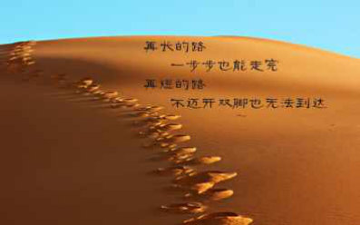
2016年的1月结束了，才来写2015年总结，到底是慢生活，还是拖延症呢。
其实，每天能感知到的进步很少，甚至没有，时间长了，一旦看得到进步，就是质的飞跃。只要每天在行动，总不总结，结果总会不经意的到来。
常有网友说，知道方法好，就是不能坚持，看到有一个人在坚持，看到有一个人在做自己一直想做的事，会得到点动力，那就来个迟来的总结，与同道人共勉。
做的养生工作：
1.大礼拜：全年做了45518个，其中——
1月2592个
2月698个（过年期间没机会做）
3月8856个（春夏季加量做）
4月8208个
5月6696个
6月3240个
7月1886个（外出十来天没机会做）
8月2434个
9月2052个（外出一个多星期没机会做）
10月3024个
11月3132个
12月2700个
按108个一组算，平均每天就1.1组而已，不看记录，感觉做得蛮多，这一年还在天涯打卡，自我感觉没怎么暂停休息，对照记录才发现，实际数据并没有自己想象的那么多啊，可见人多么会“放大自己的努力或美化自己的想象”。
因为春夏季加量做了，所以2015年比2014年多做了不少，2014年全年做了24840个，两年总共70358个，离10万还有点远呢（2013年10月3号开始，2013年没记录数量，反正是零头，就不算了），自己做了才知道，那些几个月或一年做到10万个的人真的是战斗机呢。
2.双盘：每天盘，最少可能是20分钟，最长3小时20分（前几天博文的5小时是2016年的记录哈，这篇总结的数据是算到2015年12月31号的），双盘三小时共51次。
3.最后三个多月，坐艾绒坐垫，绑艾绒护腰，睡艾绒褥子。
4.全年做艾灸烧艾条不超过10根（2014年艾灸膏肓穴后，想着2015年秋季也灸，双盘多了之后，觉得双盘更省心，专心双盘，没灸膏肓穴）；拍痧和拉筋都不超过10次。
5.饮食简单，熬姜枣汤不超过10次，没用膏方药膳，就是日常少吃寒凉食物。
收获：
1.排了一年浊气，身上皮肤明显更光滑、细腻、白皙，是有深度的光滑，就是按压皮肤，皮下没有颗粒感或条索状阻碍；几个月前，还穿短袖，一朋友说我皮肤纹理好细，问以前就这样还是现在变这样。不好意思，我也不记得了，不过曾经腿上有那种“鸡皮”，在毛孔那有小颗粒，好像叫毛囊炎一样的东东，摸上去不光滑。外在的其他变化或脸色改善，怕有放大自我感觉的嫌疑，等过年回家或2016年春夏，见些一年没见的朋友亲人，看他们无意中怎么说哈。
2.经期下半身明显发凉的症状消失。虽然这个七年顽症是在绑艾绒护腰后立竿见影消失的，我还是觉得跟所有养生工作的积累离不开关系。
3.大便比过去更好，比如一天两次成形大便次数挺多，比如起床一下地就有便意，比如在天气变冷或外出奔波或例假期间，经常容易波动到没便意，现在一般不会后退那么厉害，偶尔会。对比一下，2014年年底的总结是这样“大便，如果以一周平均来看，大概三天成形，两天不成形，还有两天没感觉（有时改善，有时又回到这样，不稳定）。”
4.睡眠，每次睡觉，不管什么时候睡，哪怕是熬夜双盘（前段时间盘到差不多凌晨1点睡），也睡得香沉，睡醒是充满电自动断插头的感觉。对睡眠有了更深的感受——美容觉，不是早睡多睡那么简单，还有一些值得探讨的细节，因为生活中可以看到，很多人很早睡也睡很多，但黑眼圈依然深深的，毛孔依然粗大，皮肤依然油腻，没感觉到“睡觉美容啊”（此事以后详表）。
5.胃口，吃简单的食物就觉得好爽，不同季节，不同身体阶段，想吃的东西不大一样，吃了想吃的，很有“补到能量”的感觉。
6.其他方面，如同换老公（此事下次详表）。
题外话：
不要看我的总结，觉得自己没做这么多，就有挫败感哈。
我是奇葩的“养生专业户”，人生目标很明确，就是要平衡发展“健康，家庭，工作”。
我接受自己不同于大众的奇葩生活方式（不玩QQ，不玩微信朋友圈......），在不妨碍别人的前提下，自由自在做自己。
我们轮回多世，每一世的使命都不一样，我们这辈子最想做的事，在灵魂层面可能早就写好剧本了，不是每个人的剧本都有“养生”这两个字，也许有的人前一世已经把养生功课做足了，也许有的人的养生功课是安排在下一世的，听从灵魂呼唤，做自己内心深处最想做的事——这是“上医调神（心）”，最养生的啊。
PS:
明天回家喽！
过年期间，估计没有机会练习大礼拜了，可能就睡前短时间双盘一下，要是有机会双盘三小时，先在本子上记录，回来再贴上来。
2016-02-16双盘三小时(第75～77次)(喝水都会胖)
2月3号，17:46-20:51，双盘3小时5分。
这是第75次双盘三小时，和之前74次姿势一样——右腿在下，左腿在上。
第一小时，闭目静坐，身体舒适。
后两小时，看书，进入第二小时，腿脚不适程度较剧烈，最后半小时，摇晃身体缓解腿脚疼痛，主要是两个膝盖和压下面的右脚踝较难受。
前一次双盘突破五小时没有给这次带来意外的轻松感，身体真是无常，时刻变化，在能量还没上升到某个稳定平台的时候，某一次的大突破仅仅代表那一次的状态而已，不能预料下一次的状态，也不代表能量已经全面提升到新阶段。
整个过程，手脚暖和，打嗝放屁均在5次以内，盘完较疲倦，做完收功，倒头就睡。
这次腿脚疼痛剧烈及盘完疲倦，可能和“坐垫”有关——在酒店床上双盘，弹簧床垫太软了，臂部受力不均，盘坐时身体不稳固，影响气脉运行。
酒店性价比不错，需要在广州白云机场中转住宿的亲可以看看，在去哪儿网搜“维也纳机场2店”（记得是2店，有一个叫维也纳机场店的，是在闹市，可能环境没有2店好），维也纳机场2店周边安静，房间干净，空间大（豪华双人房，价格259），免费大巴接送到机场。
===========2月14号，20:22-23:28，双盘3小时6分。
这是第76次双盘三小时，和之前75次姿势一样——右腿在下，左腿在上。
前一个半小时，闭目静坐，身体舒适。
后一个半小时，看书，进入第二小时，腿脚不适程度不算难受，最后半小时，左大腿，左膝盖和压下面的右脚踝较疼痛，疼痛程度还好，算是比较轻松的一次双盘三小时。
整个过程，手脚暖和，没有放屁，仅仅打嗝2次，是双盘三小时当中排浊反应最少的一次，不知是过年吃多了身体一时没反应过来，还是主场浊气已排完进入收拾残余小兵的阶段。
做完双盘收功，后劲消失快。
情人节，咋不过节HAPPY，还双盘呢？如果平日感情好，这一天有没有特别庆祝，感情都不会变淡。如果平日感情just so so，专门鲜花美酒庆祝这一天，感情大概也不会变到多好。经营感情就像保养这个身体，是落实在每一天的事，不是某天头脑发热做一件事就一劳永逸。不是鼓吹把日子过成温吞吞的凉白开啦，热烈的表达爱或给对方惊喜，想做的时候随时做嘛，与其被动过节，不如主动制造节日的感觉。============2月16号，07:42-10:45，双盘3小时3分。这是第77次双盘三小时，和之前76次姿势一样——右腿在下，左腿在上。第一小时，闭目静坐，身体舒适。后两小时，看书，进入第二小时，腿脚渐渐不舒服，难受程度比前一次重，最后半小时，压下面的右脚踝较疼痛，一下看书，一下扔掉书大口吐气。整个过程，手脚暖和，脚板底暖得出汗，袜子微湿，打嗝放屁5次以内（比前一次多）。放下腿后，做双盘收功，做完收功下地，双盘后劲就消了。当疼痛来临的时候，整个身心被疼痛感淹没，痛无止境，时间漫长，还是想逃，还是觉得“天啊，忍不了了”，然而，一次次的直面与接受，疼痛也就不知不觉被转化了。如果不是一直记录，都忘了最开始是痛到何等钻心的啦，现在对每一次的疼痛越来越“健忘”，放下腿一会就忘了刚才的痛感。
2016-02-19双盘三小时(第78、79次)
前天（2月17号），06:55-09:56，双盘3小时1分。
这是第78次双盘三小时，和之前77次姿势一样——右腿在下，左腿在上。
第一小时，闭目静坐，身体舒适。
中间半小时，听正安聚友礼的中医音频，两大腿和左脚踝比较不舒服。
最后半小时，两大腿根部酸疼，左脚踝极痛（之前是右脚踝更痛，这次右脚踝不痛了），痛到忍无可忍的程度，听《心经》，通过摇晃身体大口呼气来缓解。
整个过程，手脚暖和，脚板底暖，打嗝5-10次，放屁5次以内。做完双盘收功，后劲消失快。=========今天（2月19号），08:10-11:13，双盘3小时3分。这是第79次双盘三小时，和之前78次姿势一样——右腿在下，左腿在上。第一小时，闭目静坐，身体舒适。后两小时，看书，除了右脚踝略微痛（程度非常轻），腿脚不适感简直可以忽略，大概是双盘三小时痛感最轻的前三次之一——和前一次比，差别很大哇。整个过程，手脚暖和，脚板底暖，打嗝放屁都在5次以内。做完双盘收功，后劲消失快。双盘三小时的过程记录越来越简单了哈，身体反应越来越小了，时不时有反复和波动，总的来看已经前进了一大步。
2016-02-23双盘三小时(第80～83次)(两个双盘姿势有区别吗)
2月20号，20:18-23:23，双盘3小时5分。
这是第80次双盘三小时，和之前79次姿势一样——右腿在下，左腿在上。
第一小时，闭目静坐，身躯和腿脚舒适，感冒留下的鼻塞症状还没消，呼吸重，杂念较多。平常第一小时呼吸很轻时身心会舒适到仿佛没有自己的存在感，杂念少少，空灵而美妙。
第二小时，中途左大腿和左膝盖略微不适，不适感很快消，整个第二小时很轻松。
为了缓解鼻塞，按揉迎香穴，鼻通穴，人中穴，揉搓印堂穴，按揉的时候鼻子很快通气，可是放手一下又塞了。
鼻塞的时候里面感觉是有鼻涕堵着，怎么擤也擤不完，想必背后是有一股邪恶的能量在源源不断的制造，邪恶能量在发威，想必是阳气没升到头部，于是拍打额头，拍了一阵，想起“肺开窍于鼻”，不如拍肺经好了，先拍左手手肘，后拍右手手肘，就这样按按揉揉搓搓拍拍，一个小时过去了，鼻塞略微好一点点，没有质变。
第三小时，前一小时把手拍累了，不想继续拍，听梵文颂唱的佛音，最后半小时，右脚踝略有不适，程度轻。
整个过程，全身暖和，手脚暖和，脚板底暖，打嗝放屁都在5-10次的样子。做完双盘收功，后劲消失快。盘完三小时，全身盘得暖到微微出汗，鼻塞还是没有质变，制造鼻塞和鼻涕的邪恶之气居然没被逼出来，简直不科学，前一晚鼻塞导致呼吸不通畅影响睡眠，如今这些行动也没看到质变，又是一晚不安眠，坐着的时候鼻塞情况还好，躺下呼吸不畅很难受，张开嘴巴呼吸真是太痛苦了，改天细说这几天斗鼻塞。===============2月21号，20:43-23:48，双盘3小时5分。
这是第81次双盘三小时，和之前80次姿势一样——右腿在下，左腿在上。
第一小时，闭目静坐，鼻塞还没好，呼吸重。
后两小时，听梵文颂唱的佛音，听不懂的梵文，也不知道唱的什么，很奇怪的是，整个人融入音乐中，平静愉悦，简直是一个人的高潮，改天详细说声音提振身体能量再分享这佛音。
进入第三小时，右脚踝和右膝盖疼痛，大概持续20分钟疼痛就消失了，之后的时间，腿脚舒适盘到三小时。
整个过程，全身暖和，手脚暖和，脚板底暖，打嗝放屁都在5-10次的样子。做完双盘收功，后劲消失快。============2月22号，07:53-10:56，双盘3小时3分。这是第82次双盘三小时，和之前81次姿势不一样，之前是右腿在下，左腿在上，这次是——右腿在上，左腿在下（此姿势是第1次双盘三小时）。第一小时，闭目静坐，鼻塞还没全好，呼吸还是有点重。第二小时，看书，进入第二小时左膝盖和左脚踝就疼痛了。第三小时，听梵文颂唱的佛音，白天听身心的融入感比晚上略微差一些，左膝盖和左脚踝疼痛剧烈，挣扎着度过最后半小时。这次换姿势双盘三小时完全是个意外！第一小时都没发现姿势和之前的“右下左上”不同，进入第二小时疼痛剧烈，想着最近的第二小时都很轻松，怎么这次疼痛来得这么早呢，才发现这次的姿势和之前的不一样。原本没想这么早换姿势挑战三小时的，因为这个姿势盘功较差，之前最好的记录是1小时40分，这么多次双盘三小时都是右下左上的姿势，计划先用这个姿势盘到100次三小时，再换姿势，慢慢达成平衡。半个月前有个网友留言，小夕，不好意思，发表一下个人愚见，我一直关注你的博客，发现你经常双盘的姿势的是“右脚在下，左脚在上”，我看过相关文章，没记错的话，这个姿势养气，不养血，因为它打开的是身体左边部分经络，人的左边经络是走气，右边经络走的是血，我的理解有点类似有左右脑不同分工。所以师傅说你气上来，血没上来，如果你要养血，我建议换个方向盘“左脚下，右脚上”试试看。我其实和你一样方向的，长期盘下去，由此练习瑜伽发现左右腿力度明显不一样，踩经络也发现两腿软硬不一。不知道你有无类似的情况。看到你参加禅修很开心，相信你会变得更好！当时我回，
谢谢亲的留言，不是愚见，是高见呐，非常感谢您的分享，我之前看到过这个说法“人的左边经络是走气，右边经络走的是血”，当时没留意，同时一心想先用目前的姿势稳定到全程舒适的三小时，平时短时双盘用另一姿势，就没有特别放心上，经过您提醒，打算盘完目前姿势的100次就练另一个姿势的三小时。
没想到，这次意外换姿势也达成了三小时，尽管疼痛比旧姿势盘的来得早，尽管最后半小时疼痛到挣扎，不过这个疼痛程度至少排到双盘三小时最痛的30次之外，比旧姿势的三小时之路轻松得多！好像旧姿势提升了身体能量后，身体左右两边以及左右腿脚都有新能量布输而全部水涨船高了！
之前博文分享过“尽量两个姿势交替的双盘以便保持身体平衡”，也如上面这位网友提到的，看到过“人的左边经络是走气，右边经络走的是血”的说法，经由现在的体验，又有了不一样的看法——无论哪个双盘姿势，提升的都是身体整体能量，身体整体能量提升后，各个部位自然水涨船高，一个姿势的进步可以带动另一个姿势的进步，等到一定时候，给稍微弱的那个姿势加把劲，它们就可以“并驾齐驱”从而达到左右平衡了，不一定是每天交替的进行才能保持平衡。
整个过程，全身暖和，手脚暖和，脚板底暖，打嗝放屁都在5次左右。
做完双盘收功，后劲消失慢，盘完之后几小时，左脚踝和膝盖还微微有点疼痛，毕竟是这个姿势的第一次。
=============2月23号，08:29-11:36，双盘3小时7分。
这是第83次双盘三小时，右腿在下，左腿在上，此姿势的第82次双盘三小时。
第一小时，闭目静坐，鼻塞还“余音绕梁”，呼吸有点重，杂念比呼吸“轻缓绵长”的时候多。
后两小时，腿脚都比较轻松，听倪海厦中医师讲《人纪》（手机上安装个叫“喜马拉雅”的APP,搜“倪海厦”可找到）。
几年前看到倪师写，
等到我60岁之后，我想周游世界各国，利用我的天文地理知识与医学素养，来重写写过地理志，因为目前市面上看到的各国地理志都是‘只有形，没有神’......
医术那么好的人，没来得及完成自己的愿望就走了。
病好治，命难控，生命有生命的因果，不知道我们能等的以后是多久，有什么愿望，就赶紧行动吧。
养生养生，只是把老天给的牌打到最好而已，老天什么时候收牌，谁都不知道......（我总觉得倪师没走，为了静心做想做的事躲起来了......）
整个过程，手脚暖和，脚板底暖，打嗝放屁都在5次左右。
做完双盘收功，后劲消失快——这个姿势的三小时似乎比较平稳了，不知道还会不会来大波动？
2016-02-29双盘三小时(第84～88次)
2月24号，12:57-16:03，双盘3小时6分。
这是第84次双盘三小时，右腿在下，左腿在上，此姿势的第83次双盘三小时。
第一小时，闭目静坐，感冒残余的鼻塞还有一眯眯存在感，呼吸略微重，好多天没在中午这个时间双盘三小时，打瞌睡，似睡非睡的度过大概30分钟，现阶段主要为练腿，也不管什么静心不静心了。
第二小时，打瞌睡的劲过去，精神很好，看书，腿脚基本上不难受。
第三小时，听梵文佛音，白天听身心融入音乐的感觉没有晚上那么好，还是听得挺舒服的，最后时段，左膝盖和右脚踝有一丝丝紧绷，好像没有疼痛感了。
整个过程，全身暖和，手脚暖和，脚板底出汗多，袜子汗湿了，放屁5次左右，没有打嗝。
做完双盘收功，后劲消失快，十几分钟之后腿脚就没有不适了。
========
2月25号，07:30-10:33，双盘3小时3分。
这是第85次双盘三小时，右腿在上，左腿在下，此姿势是第2次双盘三小时。
第一小时，闭目静坐，没感觉到感冒残余的鼻塞了（距感冒第一天刚好七天，果然是走完六经，然后“逢七必变”），在鼻腔和喉咙链接处还有痰（没有鼻涕，也不想吐痰，就是还在那里），呼吸还没回到完全正常的时候。
后两小时，听倪海厦中医师讲《人纪》（手机上安装个叫“喜马拉雅”的APP,搜“倪海厦”可找到）。
从一个半小时开始，左脚踝和左膝盖疼痛，过了一阵子，不适感自动减轻，比较舒服的度过一会，又开始疼痛，最后半小时，左脚踝和左膝盖痛感剧烈（右腿没什么感觉），挣扎着过每一秒，面对这样的疼痛，很抗拒，很是受不了，无法想象之前怎么熬过另一个姿势的——如果时间倒流回去，不确定自己还能熬下来吗。
整个过程，全身暖和，手脚暖和，脚板底暖，放屁5次左右，盘的过程没有打嗝，放下腿做收功的时候打嗝3次。
做完双盘收功，后劲消失慢，几小时后左膝盖还疼痛。
盘完发现来大姨妈，难怪盘的过程那么痛！
上次是周六，这次是周四，提前两天，估计是因为这几天感冒耗阳气。
一般大姨妈期间以及前后几天身体能量都很低，盘功会大大降低，以前都没法在这些时期盘三小时。
盘完之后几小时膝盖比平时凉，可能借着大姨妈的劲排寒。
=======
2月27号，20:33-23：36，双盘3小时3分。这是第86次双盘三小时，右腿在下，左腿在上，此姿势的第84次双盘三小时。第一小时，闭目静坐，大概40分钟开始腿脚有不适感，杂念多，大姨妈第三天，能量较低。中间一个半小时，听倪海厦中医师讲《人纪》，倪师说，打嗝是脾胃有陈寒。脾胃虚寒很难调理，外寒易去，陈寒里寒难除，双盘过程中的打嗝，是身体主动排陈寒。腿脚不适感比非大姨妈期重一些，两个膝盖有点胀。最后半小时，听梵文佛音，右脚踝较痛。整个过程，全身暖和，手脚暖和，脚板底暖，放屁5次左右，没有打嗝。做完双盘收功，后劲消失快。=========2月28号，20:21-23：25，双盘3小时4分。这是第87次双盘三小时，右腿在下，左腿在上，此姿势的第85次双盘三小时。第一小时，闭目静坐，后面时段，膝盖有点紧，身体有不适感后杂念明显多。后两小时，腿脚不适程度一直比较轻，听梵文佛音，流泪很久，去年双盘三小时过程不知不觉流泪的情况较多，圣诞节那天流了半小时，之后比较少流泪，这次也没想伤心或激动的事，整个人好像和音乐融为一体，仿佛不是在房间里，而是在灿烂星空中遨游......这样的时光很美好！整个过程，全身暖和，手脚暖和，脚板底暖，放屁5次以内，没有打嗝，做收功时打嗝几次。做完双盘收功，后劲消失快。=========
2月29号，08:11-11:14，双盘3小时3分。
这是第88次双盘三小时，右腿在下，左腿在上，此姿势的第86次双盘三小时。
第一小时，闭目静坐，前40分钟心较静，后20分钟静不下来。
后两小时，听倪海厦中医师讲《人纪》，最后时段右脚踝较痛。
整个过程，全身暖和，手脚暖和，脚板底暖，放屁5次以内，没有打嗝。
做完双盘收功，后劲消失快。
========
大姨妈期精力比平时略微差一些，记下流水账，早点休息喽。
2月19号的时候，自问微信公众号“会有‘奖赏’小按钮的那天吗？凭这小学生记录流水账的文字，万一以后一不小心有打赏，估计乐得做梦笑醒哦”......
之前听别人说很难获得“奖赏”功能，没想到2月24号（上周三）获得腾讯“奖赏功能”的邀请，25号审核通过，26号（上周五）发的文章第一次获打赏，平时双盘自以为淡定，没想到在钱面前根本把持不住嘛——好激动！比领第一份工资还兴奋！万万没想到有一天“卖身（养身知识）”赚钱啊！谢谢天南地北的有缘人！谢谢你们赏钱鼓励！我坚定地养身，以更多养生经验与心得来报答各施主哈！
世间的事，没有绝对的好和绝对的不好，我们当前看到的一切事物都是过程，每一件事都包含“福祸凶吉”，七年前我切掉阑尾的时候，当时怎么看都是“祸与凶”，如今，转化成了“福与吉”。当我们看不到希望的时候，不妨闭上眼，让心先行一步，跳到未来看现在，“跳出三界外,不在五行中”，必能看到无数希望之路。
2016-03-21双盘三小时(第89、90次)(为何能轻松双盘的人还一身赘
肉？)
3月1号，08:13-11:18，双盘3小时5分。
这是第89次双盘三小时，右腿在下，左腿在上，此姿势的第87次双盘三小时。
第一小时，闭目静坐，身体舒适，杂念较多（大姨妈刚过，能量还没回归平稳）。
后两小时，听倪海厦中医师讲《人纪》（手机上安装个叫“喜马拉雅”的APP,搜“倪海厦”可找到），最后时段右脚踝略微疼痛。
倪师说，真人可以直接食气，盘坐在菩提树下，观想自己是一棵树，可以像树一样直接和天地之气交换能量。
我也越来越觉得，当身体能量水平越来越高的时候，我们是可以超越很多规则和禁忌的，怎么吃，什么时候吃，什么时候睡，常规养生粉关心的那些事，最终的答案是——“没有定论”。
整个过程，全身暖和，手脚暖和，脚板底热得出汗，放屁5次左右，没有打嗝。
做完双盘收功，后劲消失快，十几分钟之后腿脚就没有不适了。
二
3月2号，07:23-10:26，双盘3小时3分。
这是90次双盘三小时，右腿在上，左腿在下，此姿势是第3次双盘三小时。
前一个半小时，闭目静坐，身体舒适，杂念比前一次少些。
后一个半小时，抄写《心经》，中间腿脚不适轻微，最后半小时左膝盖和左脚踝较难受。
整个过程，全身暖和，手脚暖和，脚板底热得出汗，没有放屁，打嗝5次左右。
做完双盘收功，后劲消失比另一个姿势稍微慢，几小时后脚踝还发凉（排寒ING）。三
网友说，“本来想练晃海来达双盘的效果（小夕注：应该是说想练晃海来练成双盘姿势），结果找到“明真师教你晃海”，视频中的那个老人家和其他老人家没有什么区别，上身是非常非常臃肿的赘肉，我以为她胖胖的短短的腿做不了双盘，谁知她的筋很柔软，很轻松的双盘。不过，如果她一直有双盘，怎么会有这么多垃圾这么多赘肉，不解，不解，对双盘产生了怀疑......”
好喜欢这样理性思考的人!
我不了解视频中的明真师的情况，不知道她平时练习双盘的强度与频率如何，百度搜出来的“明真法师”是位男性，应该不是同一位“明真师”。
依我看，如果一直保持高频率的长时间双盘的话，不大可能有那么多赘肉。
有个45岁+的网友姐姐，她开始练习双盘的时间和我差不多（她2013年接触我博客，从我开始贴双盘记录不久，她就隔空一起练的），和我一样，每天盘，一点点进步，双盘的同时也做大礼拜，她去年一年做了5万多个大礼拜，最近交流，她说近期突破了三小时，已经双盘三小时10次，她过去的副乳以及虎背熊腰已经完全消了，她的照片非常美，45+有那样的状态，太少见了，我期待自己在那个年纪能像她一样（回头征求她意见是否乐意在这露个背影哈）。
对于视频中的明真师老人，我想到的解释是，能轻松摆出双盘姿势和做到高频率的长时间双盘是两回事（高频率指的是每天或每两天，长时间指的是每次双盘两小时或三小时），知道与做到，少做与多做，做到与得到......它们之间有很长距离。
能轻松摆起双盘姿势，能轻松双盘半小时，能轻松双盘一小时，能轻松双盘两小时，能轻松双盘三小时......坚持的频率是每天，每两天，还是每五天......这些不同等级的双盘水平和不同的坚持频率，所展现出来的身体状态是完全不一样的。
能轻松摆起双盘这个姿势，仅仅代表这一刻腿脚的柔韧性还可以，想通过双盘回到或长期保持身材苗条，不同年龄以及不同身体底子的人需要的时间与强度不一样，对于一身赘肉的人，肯定不是每天双盘十分钟可以回到或长期保持苗条的。
我们的身体是逆水行舟，不进则退，自然地变化趋势就是每天“老化一点，僵硬一点，沉重一点”，若现在拥有一年前一样的轻盈与灵活，说明基本跑赢了时间。能适当延缓老化就不错了，别期待返老孩童，我们终究都会老去，跑不过时间的，这个理性要有。
对于体内的“寒湿瘀”，这一两年我的体会更深了，去年这时候，我已经练出马甲线的腹肌，去年一年双盘三小时的过程中还排那么多浊气，身材明显臃肿走形的人，体内到底存了多少废物？
有个网友想买艾绒护腰，跟我咨询，她说，“想买那个艾绒护腰，现在我通过双盘把身体改善到一定的程度了，剩下腰那块就停滞了的感觉，其他地方都有瘦，用艾绒可以有帮助不？生完孩子后就一直没腰，穿衣服特别难看，腰和屁股都连在一起的感觉，生孩子前，最瘦的时候，腰上也有一圈肉，不知道用了这个艾绒护腰能不能让它回到正常的状态？”
我问她练习双盘后身体改善了哪些？
她说，“整个身型瘦了几个码，之前要穿31的裤子，现在穿28，腰那块还是有好大一圈肉，腰围的问题我觉得跟我经期有很大的原因，老是不准，一月份没来，到二月底才来，全是血块！期待用艾绒能够把身体的瘀血全部排出来！其他的改变，我觉得是全方面的，比如精神状态！接下来我也希望脸色能红润些，中医说我的脸是那种晃白，现在会好一些，但距离红润真的还很远！”
整个身型瘦了几个码，精神状态变好，这是不错的效果，重要的是，方向对。
有些减肥方法，比如不吃主食只吃黄瓜香蕉那样的节食法，肥肉是减了，头发也掉多了，发质也变差了，经血也变少了，整个人的精神也变差了......走错方向的减肥很
可怕，把根基的“精气神”减掉了，把健康透支了。
我不知道自己一开始怎么就相信双盘对身体好，接触的理论知识少之又少，接触的实践之人也少之又少，莫名其妙做，边做边看，感觉很好，不知不觉走到现在，一路走来，没有搜集到足够的样本来证明它好，我也搞不懂自己怎么那么“自信”，都不需要看到成功实例就做了（我是默默双盘半年之后才看到伽南老师博客，才知道她练习双盘拥有出众气质）。
2016-03-08双盘三小时(第91～95次)(人音合一，分享梵文佛音)
3月3号，07:31-10:32，双盘3小时1分。
这是91次双盘三小时，右腿在上，左腿在下，此姿势是第4次双盘三小时。
第一小时，闭目静坐，身体舒适，念头老会跑出来，数呼气来练专注（没打错，是呼气，不是呼吸），反复从1数到10，数着数着还是会有杂念跑出来，现在比过去更容易看到念头出来然后继续回到呼吸上，以前跟随念头跑很远才知道回来。
进入第二小时，想继续闭目静坐，奈何腿脚开始不舒服，杂念多，静不下来，结定印的手，一下挠一下耳朵，一下扯一下衣服，一下拨一下头发......干脆听倪海厦中医师讲《人纪》（手机上安装个叫“喜马拉雅”的APP,搜“倪海厦”可找到），听了一个半小时，左膝盖以及两个大腿较疼痛。
最后半小时，左膝盖疼痛剧烈，伴随着膨胀感，好像细胞往外吐什么杂质，痛得呲牙咧嘴的，度秒如年，很想放下腿......听梵文佛音熬时间，最后几分钟难受到飙泪，三小时之后的那一分钟好漫长！好漫长！
放下腿后，腿脚疼痛无力，无法动弹，平躺休息几分钟才有力气做收功，做完收功后劲消失慢，几个小时后两个膝盖和脚踝还发凉，不像另一个姿势放下腿后半小时就轻松得感觉不到任何双盘后劲。
看来这个姿势比另一姿势弱很多，还不怎么适应每天双盘三小时。
整个过程，全身暖和，手脚暖和，脚板底热得出汗，放屁5次左右，没有打嗝。
二
3月4号，31:53-00:55，双盘3小时2分。
这是92次双盘三小时，右腿在上，左腿在下，此姿势是第5次双盘三小时。
第一小时，闭目静坐，数呼气练专注，身体舒适。
后两小时，听梵文佛音。进入第二小时，左脚踝就疼痛了，第三小时，左膝疼痛剧烈，伴随着膨胀感，不知是气温高了还是痛到飙汗，上半身衣服汗湿，痛的程度可以排到双盘三小时最痛的30次之内，这次痛到想放弃，已经无法想象之前那么痛是怎么熬过来的了，再次证明这个姿势还承受不了每天盘三小时的频率，明天先不练这个姿势了，隔天来一次吧。
放下腿后，和前一次一样——腿脚疼痛无力，无法动弹，平躺休息几分钟才有力气做收功，做完收功后劲消失慢，晚上睡觉还感觉到两个膝盖和脚踝略微疼痛。
很痛的时候，想不起任何鸡汤来给自己打气，只有一个念头——“太痛了，真不是人干的事，盘完这次不盘了”，每次放下腿，又很感激自己的坚持，很快期待下一次。
整个过程，全身暖和，手脚暖和，放屁和打嗝都在5次左右。
三
3月5号，20:51-23:54，双盘3小时3分。
这是第93次双盘三小时，右腿在下，左腿在上，此姿势的第88次双盘三小时。
第一小时，闭目静坐，数呼气练专注，身体舒适。
后两小时，听梵文佛音。受前一次双盘三小时后劲的影响，进入第二小时，两个膝盖就不舒服。第三小时，两个膝盖和右脚踝疼痛剧烈，剧烈程度没前一天那么重，这个姿势终究还是“遥遥领先”与另一个姿势。
放下腿后，比前一次好一些，做完双盘收功，后劲消得快一些。
整个过程，全身暖和，手脚暖和，放屁5次左右，打嗝3次。
四
3月6号，20:45-23:50，双盘3小时5分。
这是第94次双盘三小时，右腿在下，左腿在上，此姿势的第89次双盘三小时。
第一小时，正身端坐，通电话，身体舒适。
后两小时，听梵文佛音。白天在外面逛，走了几小时，加上3月4号那天双盘得腿脚太痛，这次进入第二小时，腿脚各部分都酸疼（脚踝，膝盖，大腿，臂部都酸疼），像运动过度的肌肉感，整个人累累的，感觉是略差的那个姿势把原本轻松的这个姿势拉退步了一点，身体有点吃不消啊，明天先不盘三小时了，让身体休息下。最后半小时，右脚踝疼痛剧烈。
整个三小时纯粹是在熬腿，身体的疲倦感让心不安不静，听梵文佛音也没进入“人音合一”的忘我状态。
放下腿后，很疲倦，平躺一会才做双盘收功，做完双盘收功，后劲消得慢，睡觉中感觉膝盖和脚踝疼痛。
整个过程，全身暖和，手脚暖和，放屁和打嗝都在5次左右，感觉现在排的浊气是每天制造的新浊气，不同于很早之前那种沉积的臭浊气。
五
3月8号，08:35-11:37，双盘3小时2分。
这是第95次双盘三小时，右腿在下，左腿在上，此姿势的第90次双盘三小时。
前一个半小时，正身端坐，通电话，身体舒适。最近两次双盘三小时的前半段都通电话，是因为身体状态不大好，之前一直练旧姿势，身体比较稳定，最近换新姿势后，能量被拉退，有点疲倦，昨天没双盘三小时，今天身体也还没恢复到正常水平，没法进入之前那样的静心状态，纯粹练腿，有电话就接了，要是进入之前那样的静心状态，期间电话来一般不接，过了再回。
后一个半小时，听梵文佛音，腿脚都有些不适感，不过没有采用新姿势时膝盖的膨胀感，最后半小时，右脚踝较疼痛。
放下腿后，右脚踝像折了似的，无法动弹，平躺一会才做双盘收功，做完双盘收功，后劲消快。
整个过程，全身暖和，手脚暖和，没有放屁，做收功的时候打嗝2次。
六
之前发过双盘收功，可能很多网友没看到，后台常收到这个询问，继续附上。
双盘收功分两步，第一步——双盘结束，放下腿脚，紧握拳头，放在两个膝盖上，深呼吸三次，每次吸气时，肚脐用力到好像肚脐要贴后腰的命门，同时会阴穴上提。
第二步——搓热掌心，用搓热的掌心由下往上搓脸，用手指梳头几十次；食指侧面搓热人中穴；双手搓热后腰；双手搓热膝盖（两个膝盖）；双手搓热脚踝。
七
最近听的梵文佛音，演唱者是刘湘子，手机上安装个叫喜马拉雅的APP，然后搜索“刘湘子”可找到，一个是完整版的音乐会，其余是音乐会剪出来的单曲。这音乐是之前提到的一位45岁+的网友姐姐跟我分享的，她开始练习双盘的时间和我差不多（她2013年接触我博客，从我开始贴双盘记录不久，她就隔空一起练），和我一样，每天盘，一点点进步，双盘的同时也做大礼拜，她去年一年做了5万多个大礼拜。她近期双盘突破了三小时，说第一次突破三小时就是听的这个梵文佛音，不知不觉盘到三小时，腿脚没很痛。比我第一次突破轻松太多了吼，我当时是硬攻下来的，她是小火慢熬，水到渠成盘下来的。已征得她同意，下次分享她“妇女变少女”喽。这梵文颂唱的佛音，对于我，晚上双盘的时候听比白天听的融入感更好，听不懂梵文，不知道唱的什么，奇怪的是，感觉整个人融入音乐中，人音合一，没有杂念飞过，平静愉悦，仿佛不是盘坐在房间里，而是在灿烂星空中遨游......大家感兴趣先去试听，看看喜不喜欢，不要期待太高哦，不一定每个人都喜欢，甚至可能会排斥。
我最开始接触梵文佛音的《大悲咒》是2010年，第一次听的时候感觉像法海念经，唱的什么鬼东西啊！联想到巫师巫婆那种让我怕怕的东东，很排斥，一遍没听完就关了。
后来在学佛的朋友家偶有听到，渐渐没那么排斥，却也不喜欢。
2012年1月某晚，南宁，燕姐家。燕姐的精气神超级吸引我，“中医粉”看人，被打动的第一眼，往往不是颜值，颜值高或胸大腿长，刺激的是人的交感神经，带给人压力；打动人的精气神，刺激的是人的副交感神经，让人放松欢喜而向往。
当时在书架上随手乱翻，翻到一本关于佛学和放生的书，拿起这本书时，瞥见燕姐在不远处陪胎儿一起听《大悲咒》（当时她处在孕期5，6个月，现在孩子已经好大喽，健康灵动，有精气神饱满的妈妈才是赢在起跑线呀！），一脸祥和喜悦沉浸在音乐中......那画面深深触动我，那一刻觉得《大悲咒》好亲切！
2014年，去做义工，现场听寂静法师念梵文咒语，感觉有股震动波从脚到手流过，感觉到手和脚的气在运行——就是手脚上皮肤的细胞正在呼吸的那种细微开合，眼泪不由自主的流，不是声声入耳，而是声声渗透入心，流完泪，心很静，眼睛也更明亮......好像接通了某个管道。
现在听刘湘子老师的梵文佛音，时而落泪（没想难过或激动的事情，不知不觉泪流），时而喜悦，时而平静安宁......心像洗了个澡，很舒服。
我是戴上耳塞一个人听，要是夕哥一不小心听到我听这些“神叨叨”的音乐，估计担心老婆变“巫婆”。
声音可以提振我们身体的能量，听自己喜欢听的就好，不是双盘就要听佛音的啦，不是听佛音才有品的啦，我经常陪家里那老男人听“你是我的情人/像玫瑰花一样的女人/用你那火火的嘴唇/让我在午夜里无尽的消魂......”
2016-03-11双盘三小时(第96～98次)(45岁+妇女练出曼妙身姿)
一
3月9号，08:33-11:36，双盘3小时3分。
这是第96次双盘三小时，右腿在下，左腿在上，此姿势的第91次双盘三小时。
第一小时，闭目静坐，身体舒适。
中间一个半小时，听倪海厦中医师讲《人纪》（手机上安装个叫“喜马拉雅”的APP,搜“倪海厦”可找到）。
最后半小时，听梵文佛音（手机上安装个叫“喜马拉雅”的APP,搜“刘湘子”可找到）。
自从前几次换新姿势，这几天身体明显更累，双盘状态不是很好，第一小时杂念多，后面时段腿脚不适明显，是双盘后劲没消
除又叠加出来的那种肌肉疼痛，最后半小时右脚踝疼痛剧烈，比较难熬。
整个过程，全身暖和，手脚暖和，没有放屁，打嗝5次左右。
做完双盘收功，后劲消得快。
二
3月10号，13:38-16:40，双盘3小时2分。
这是第97次双盘三小时，右腿在下，左腿在上，此姿势的第92次双盘三小时。
前一天晚上10点睡，这次还是感觉身体累累的，单纯为了练腿，第一小时哼着流行音乐度过，中间一个半小时看书，最后半小时听梵文佛音。
从第二小时开始，腿脚和前一次一样——到处都有酸，是双盘后劲没消除又叠加出来的那种肌肉疼痛，最后时段，右脚踝疼痛剧烈。
眼看就要到100次，身体似乎明显倒退，黎明前的黑暗？
整个过程，全身暖和，手脚暖和，没有放屁，最后半小时里打嗝5-10次。做完双盘收功，后劲消得快。
三
3月11号，12:55-15:58，双盘3小时3分。
这是第98次双盘三小时，右腿在下，左腿在上，此姿势的第93次双盘三小时。
身体状态还没回归，没有静心状态，单纯练腿，前一个半小时看书度过，后一个半小时听梵文佛音，腿脚疼痛和前一次一样。
我这样的普通人，真的没法在身体有障碍的时候静心呀，身心不二，还是突破身体障碍，拥有更高层次的身体能量后，才能更好的安置这颗心。
一些热切追求心灵解脱的人，一味透过头脑中的认知来改变固有信念，把焦点放在正向的结果上，想要依循吸引力法则来全盘改变生命的质量，如果身心没有同步转化，很容易跌回身体的困扰里，生命质量也大打折扣。
整个过程，全身暖和，手脚暖和，没有放屁，最后打嗝5次左右。
做完双盘收功，后劲消得慢，放下腿后几小时，膝盖发凉（很久没有这样了），大腿根和小腹连接处也发凉（第一次出现)。
四
征得同意，分享45岁+网友姐姐的练习成果啦！（微信公众号的文章附了照片，这里不贴了，真不是故意的，练双盘的人比较低调哈，出于保护隐私的考虑，扫下面的二维码关注“小夕养生记录”，回复关键词“45”，可看到此图文）她开始练习双盘的时间和我差不多，2013年接触我博客，从我贴双盘记录不久，就隔空一起练，那时我还没练出什么可以贴出来的成果呢（2015年才贴一点看得见的成果），万万没想到远方有一个人默默一起练这么久（缘分太神奇了，可能前世我们是师姐师妹）。她和我一样，每天盘，一点点进步，双盘的同时也做大礼拜，去年一年做了5万多个大礼拜，近期双盘突破三小时，已双盘三小时10次。她说，过去的副乳以及虎背熊腰已经完全消了，脸变小了。到一定年纪，脸容易浮肿并横向发展，哦，不只脸，整个身体都容易横向发展，岁月这把刀，残酷啊。如果说我工作时间相对自由才有空练双盘和大礼拜的话，她更让人佩服，单位上班，工作时间不自由的，说如果实在安排不了时间双盘三小时，晚上早点睡，凌晨三点半起来盘，然后去上班。儿子已经大学毕业，还有那么挺拔舒展曼妙的身姿——是我想要的！
不是鼓励大家都双盘啊，花三个小时搞这个的我们，只有一个解释——女神经，只是说，如果总是卡在“没时间”这个难题的话，不如大方承认自己没那么喜欢这个事，然后去做自己真正想做的就好，别整天想东又纠结西，自己跟自己打架，浪费更多时间。
【小夕闲谈】
1.有网友问，门窗都关好的情况下打坐还感觉到有风吹，明明腿脚是静止的却感觉到在动，是啥情况？
前者是体内在排寒；后者是我们身体固有的扩张或收缩的律动（上周五调阴阳12提到的，微信公众号发的博文，博客没发）。
抱歉，大家的问题没及时回复是常态（时间不够用），如果是代表性的问题会抽取在博文里回。
2.之前发过双盘收功，可能很多网友没看到，后台常收到这个询问，继续附上。
双盘收功分两步，第一步——双盘结束，放下腿脚，紧握拳头，放在两个膝盖上，深呼吸三次，每次吸气时，肚脐用力到好像肚脐要贴后腰的命门，同时会阴穴上提。
第二步——搓热掌心，用搓热的掌心由下往上搓脸，用手指梳头几十次；食指侧面搓热人中穴；双手搓热后腰；双手搓热膝盖（两个膝盖）；双手搓热脚踝。
2016-03-21双盘三小时(第99、100次)(大家可能关心的几个问题)
一
3月12号，19:56-23:06，双盘3小时10分。
这是第99次双盘三小时，右腿在下，左腿在上，此姿势的第94次双盘三小时。
前一个半小时，闭目静坐，数呼气（没打错，不是呼吸，只数呼气），身体舒适，杂念少，平静喜悦。
后一个半小时，听梵文佛音（手机上安装个叫“喜马拉雅”的APP,搜“刘湘子”可找到），最后半小时，右脚踝疼痛，不算剧烈，到3小时反而不怎么痛，多盘10分钟。
身体能量从前几天的低谷往上走了，不像前几次腿脚各处都出现肌肉疼痛。
把闭目静坐时间从之前的一个小时延长到一个半小时，是闭目静坐的愉悦感让自己想保持在那个状态，之前闭目静坐一个小时后就想这里挠一下那里扯一下，不安定。
整个过程，全身暖和，手脚暖和，没有打嗝，放屁5次左右。
做完双盘收功，后劲消得快。
二
3月13号，20:55-23:59，双盘3小时4分。
这是第100次双盘三小时，右腿在下，左腿在上，此姿势的第95次双盘三小时。
前两小时，闭目静坐，身体舒适，没有数呼气，静静的看念头起起落落。
进入第二小时，压下面的右脚踝略有不适，不适程度不重，继续呆在闭目静坐的状态里。
后一小时，听梵文佛音，物我融合，人音合一，好舒服！
整个第三小时，压下面的右脚踝还是疼痛，程度不算重。
三小时铃声响起的第一句话——“这么快就到时间了”。
整个过程，全身暖和，手脚暖和（异常暖，比之前更暖，感觉动力很足，不是手心发烫燥热，那是阴虚表现），第三小时放屁5次左右，第一小时和第三小时分别打嗝5次左右。
做完双盘收功，后劲消得快。
三
你们可能关心的几个问题：
1.双盘三小时100次，啥感受，激动吗？
——第1次双盘三小时是2014年12月17号，第2次是2015年5月1号，到现在的第100次，历时一年多，很慢的进展。双盘三小时100次的时候，身体还没有全程舒适无障，平静与喜悦已越来越多。一件事情坚持做下来，变成了习惯，打卡的数字刚好变到100，100和99以及后面的101，没有明显区别，倒是和1以及50区别较大。第1次双盘三小时后，浑身肌肉疼痛，膝盖和脚踝发冷，持续好几天；如今，放下腿脚半小时就没什么后劲了。这个过程，没有使命必达的苦大仇深，第100次，是结果的同时也是过程以及另一个开始，没有太多激动，反而很平和。2.身体更健康了吗？身材更好了吗？皮肤更好了吗？气质没有那么庸俗了吗？——身体更健康是肯定的。身材嘛，胸早就长定型，SIZE很难暴涨，“挺好”应该是有的。以前的脸和脸以下皮肤，在细腻度，光滑度，光泽度，白皙度上差几个号，目前差距缩小，期待脸皮肤进化到像胸一样。气质啊，原本是城乡结合部大姐，现在也走不出国际范，原本眉心透露着苦大仇深，目前应该好一点点了。（等天气好了，到山上思考思考人生，顺便拍点照片让大家吐槽）3.腿脚剧烈疼痛的时候，你是如何坚持下来的？——疼痛剧烈的时候，什么名言警句或励志鸡汤都想不起来，想盘完这次再也不盘了......放下腿，后劲消除后又情不自禁的继续——这是传说中的“真爱”吧。4.花那么多时间双盘，还有时间履行老婆义务吗？——幸福人生三不外包——自己的健康不外包，老公的需求不外包，孩子的成长不外包。5.花那么多时间炼“精气神”，如果禁欲效果更好吧？——此妇女不想打通任督二脉，不想打通奇经八脉，不想练出特异功能，偶尔关闭“眼耳鼻舌身意”六根，体验一下出世的喜悦，平常带着七情六欲过家常日子，感觉好好哇。
6.你会去山上去庙里清修吗？
——偶尔去山上思考思考人生，平常忙赚钱，打包发货洗碗拖地后双盘听佛音，踏实而充实耶。7.浪费那么多时间双盘，不如用这个时间去学一门技能（比如学外语，学摄影等等），或者读书也行啊，不是更实用更能赚钱吗？——无用之用，方为大用。学习技能很好，技能之外，改变我们生活的念头和灵感，往往来自“平静喜悦”的状态，当我们静静盘坐，观察自己，观察生活，观察万物，很多答案会自然浮现。有读者说，调阴阳12那篇，不像人写的，像上帝之音流经你手，看完被震到了。我回头读，也觉得惊讶，我怎么写出来的呢，读书那么少，那方面的知识输入几乎为零，也没有敏思苦想，怎么码出那么劲爆的文字啊，不解。（劲爆的文字，不敢贴到博客，扫下面的二维码关注“小夕养生记录”，回复关键词“调阴阳12”可查看）现代人好实在，一个穷酸潦倒的“中医粉”或“养生粉”，跟人背《黄帝内经》原文，恐怕人家都不信咧。花这么多时间双盘的我，要过上“有钱有闲有健康”的生活才有说服力哈。我正朝这个方向去——现在干的工作，几乎是一个人当三个人用，做的翻译工作，以前人家专门招个英语专八的姑娘去公司朝九晚五上班负责，我现在花两三小时就搞定了。淘宝小店所有事，都是我一个人弄，有时一天打包30个包裹，还是手写快递单！然后更新微信公众号和博客，煮饭家务都没少的哈，这几个月还花很多时间在厨房琢磨补血的内调方，做小白鼠检验筛选了一个我要长期服用的平和方，打算今年上半年推出哈（暂不要询问哈，没空回，敬请期待~）。奇怪的是，这样的每天没有很累，双盘完立马工作，工作累了做一下大礼拜放松（最近大礼拜都没有一口气做108个了，分时间段做的），有时感到累，睡一觉起来就有充满电的感觉。以前在公司上班，事情没做多少，每天回到家，都像瘫痪一样，无力，疲倦，累又不容易入睡，好不容易睡着吧，像播连续剧一样的多梦，醒来和睡着的界限不分明，身体和精神都是昏昏沉沉的。身体素质比较差是一方面（这是基础），另一方面，是时间与精力没有高效利用。早上到公司，花半小时看新闻；然后开始工作，工作过程偶尔聊一下QQ；有时工作不忙，在老板面前嘛，要假装很忙的样子；下班前半小时，想晚饭吃什么......加班吧，很多时候不是工作内容多到没法在上班时间做完，比如等顾客确认邮件什么的，明明可以回家边做其他事边等，公司不允许把工作带回家，就在办公室干等了，老板也在加班，干等也不能让人看起来无所事事啊，继续装很忙，假装很忙的那些时间，不是忧虑未来，就是对生活迷茫......
感谢上天安排我走这样一条路，透过中医，透过双盘，找到身体的原动力，激发生命其他层面的活力！红尘如此多娇，不念山中小庙，踏踏实实赚钱，欢欢喜喜过每天。
【小夕闲谈】
上一篇分享45岁+姐姐练出曼妙身姿，后台消息好热闹，大家纷纷表示大受鼓励，期待更多同道人练出可喜成果。
昨晚我盘完第100次，第一时间跟她分享喜悦，她也关注此号，期待她双盘三小时100次的分享！
对了，上篇这句“她说，过去的副乳以及虎背熊腰已经完全消了，脸变小了。”遗漏了重要的一点，她跟我分享的时候提到“胸变挺了”，我码字的时候忘了。
还想提醒，我们每个人都是独一无二的，不是所有人要双盘，都要双盘三小时，这又不是什么发大财的好风口，没必要一股脑跟风，一切以自己的兴趣为主。
我家夕哥没有练，我也没叫他练，偶尔淡淡然跟他分享一些体会，他偶尔感兴趣会试试，昨天中午散盘了十几分钟，晚上单盘了二三十分钟，我有办法帮他快速双盘，但他受不痛（男人忍痛力真比不过女人），只能作罢。要是他哪天发神经跟风，热烈欢迎；要是不练，臣妾也是——爱不减啊。
2016-03-23双盘三小时(第101～105次)(为何双盘一小时身体无打嗝，
放屁，排寒等反应？)
一
3月14号，21:16-00:17，双盘3小时1分。这是第101次双盘三小时，右腿在上，左腿在下，此姿势是第6次双盘三小时。
第一小时，闭目静坐，身体舒适。第二小时，在喜马拉雅听一个以理工科思维为主要内容的音频，好像知识很丰富很科学的样子，但听得没有愉悦感。
第三小时，果断听渗透入心的梵文佛音。
那科技节目是夕哥推荐的，同在喜马拉雅，他听“反中医”的“科学”，我不是听中医就是听佛音......人生多么无常啊，我以前是学理科的，他是学文科的——缺啥补啥。
第三小时，左膝盖又来那种膨胀的疼痛感（最怕这种疼痛），膨胀到手心不能碰，碰到更痛，左脚踝疼痛剧烈，越痛越烦躁，升起放弃的念头......挣扎着熬到最后，每一秒像一年一样漫长，这个姿势估计还要熬二三十次才能像另一个姿势那么轻松，放下腿脚的几分钟，无法动弹。
整个过程，全身暖和，手脚暖和，第一小时打嗝多（5-10次），另外两小时分别打嗝5次左右，整个三小时放屁5次左右。做完双盘收功，后劲消得慢。二3月15号，21:36-00:38，双盘3小时2分。这是第102次双盘三小时，右腿在下，左腿在上，此姿势是第96次双盘三小时。
前一个半小时，闭目静坐。整个下午网络不好，做事卡卡的，大概有三小时比较烦躁，双盘中对此事沉思，看当时的烦躁来自哪里，为何烦躁......不像过去一样责备自己“不应该”，责备自己不应该的时候，情绪并没有得到疏解，就像身体疼痛，没有应不应该，只要有痛的基础（淤积，不通畅），就会痛，这是个客观事实......沉思到后面，心中很喜悦。
后一个半小时，听梵文佛音。受前一次新姿势的影响，这次右脚踝和右膝盖还是比较疼痛，和前一次的疼痛相比，程度减半，毕竟这个姿势已经熬96次了。
整个过程，全身暖和，手脚暖和，打嗝放屁都在5次左右。
做完双盘收功，后劲消得快。
三
3月16号，13:36-16:40，双盘3小时4分。这是第103次双盘三小时，右腿在上，左腿在下，此姿势是第7次双盘三小时。
第一小时，闭目静坐，杂念比晚上盘的时候多。
第二小时，看书，芭芭拉.安吉丽思的《爱，是一切的答案》，芭芭拉是美国有名的女性感情专家，她的前夫是写《男人来自火星，女人来自金星》而闻名全球的约翰.格雷，为何两位感情专家成不了一段美好姻缘？
张德芬在序言中的解答是“之所以会成为专家，就是因为他们对这个议题特别有
感触、有兴趣。为何有感触、有兴趣进而会去研究、写作、教学？当然是因为这是他们自己最弱的一项。所谓“受伤的疗愈者”，就是这么回事。从哪里跌倒就从哪里爬起来。”
养生粉大多也是如此哈，身体不够好的人对中医的体会更深刻，我也是对在我身上发生过的那些不适与症状体会更深（怕冷，便秘，痛经，痘痘，脸色发黄......），那些没有发生在我身上的毛病，比如乳腺增生，听得此毛病的人说有时候痛到衣服不能碰到乳房，我无法体会那是什么样的痛感。
不过，对于两位感情专家成不了一段美好姻缘，我的看法是，不是两个人知道很多“金科玉律”就能成一段美好姻缘，不是说他们知而不行，哪怕两个人都知行合一，在感情上，两人都“如鱼得水，如鸟在林”，还有重要的无形因素——两人在身体上莫名其妙“气味相投”（博主从浪漫爱情主义跳到玄学领域去了）。
第三小时，做针线活，左膝盖酸痛（没有前一次这个姿势的膨胀式疼痛了），左脚踝酸痛，右脚踝疼痛，比前天这个姿势进步了一些。
整个过程，全身暖和，手脚暖和，三个小时中每个小时都有打嗝放屁几次。
做完双盘收功，后劲消慢。
四
3月18号，21:16-00:19，双盘3小时3分。这是第104次双盘三小时，右腿在下，左腿在上，此姿势是第97次双盘三小时。
第一小时，闭目静坐，杂念多。
后两小时，听梵文佛音，越来越喜欢听梵文佛音了，最开始没这么喜欢的，
好奇怪，很多流行歌曲，要是这样长时间反复听，开始觉得多好听的，听多了听久了会腻的，听梵文佛意却是越听越喜欢，每次双盘杂念较多的时候就期待打开梵文佛音来“净化”，听之后，杂念很快消融，进入轻松平静状态。
受新姿势的后劲影响，进入第二小时，左膝盖不适，后来右脚踝疼痛比较剧烈。
整个过程，全身暖和，手脚暖和，打嗝放屁5-10次。做完双盘收功，后劲消慢。五3月19号，21:18-00:21，双盘3小时3分。这是第105次双盘三小时，右腿在上，左腿在下，此姿势是第8次双盘三小时。第一小时，闭目静坐，注意力放在人中穴（之前很多时候是把注意力放在呼吸上）。这次注意力放在人中穴，是想到这样一个说法——根据天人相应的原则，人身是一个小宇宙，人中穴是人身之中。从外在看，人中之上有一对眼睛，一对耳朵，一个鼻子，一共六窍，把这六窍抽象出来，即是三个阴爻合成一个坤卦。人中之下有三窍，抽象出来是三个阳爻重叠合成一个乾卦。上坤下乾，即地天泰卦。因此，人中是阴阳交汇点，人昏迷的时候掐人中，就是使得阴阳气交接。从内在上，任督二脉以人体正下方双腿间的会阴穴为起点，从身体正面沿着正中央往上到唇下龈交穴，这条经脉是任脉；督脉则是由会阴穴向后沿着脊椎往上走，到达头顶再往前穿过两眼之间，到达口腔上颚的龈交穴。任脉主血为阴，督脉主气为阳，它们的交汇点也是人中穴。我也没有把自己当成练“气功”的，不管这些理论怎么掰，这次注意力放在人中穴，感觉到结手印的指尖跳动更明显，特别平静喜悦。第二小时，听轻音乐，还是更喜欢梵文佛音，后面改听梵文佛音了。第三小时，左膝盖又是充满膨胀感的疼痛，每个细胞往外吐杂质的感觉，最后半小时痛得想放弃，各种挣扎难受，怎么都没法缓解......突发奇想，双盘着磕头，反复磕，磕了一阵，才发现磕头过程播的佛音是《阿弥陀佛》，《阿弥陀佛》播完，左膝盖居然不怎么疼痛了，不知是磕头这个动作本身缓解了膝盖疼痛，还是是阿弥陀佛加持，把膝盖里“冤死”的细胞超度了？从小膝盖风湿，后来多年冷水澡自虐，膝盖估计藏了很多“冤死”的细胞。之后的时间左膝盖疼痛剧减，平和盘到三小时。
这次有值得说的一件事，3月18号写的文章提到，可以借助运动时毛孔打开让让艾绒发挥更好功效，想到双盘这样“静极生动”的活动比普通运动更能打开筋骨皮，而每次双盘到后面都是压下面的脚踝较疼痛，于是，这次盘前，把护腰的艾绒内胆裹在压下面的左脚踝，希望可以缓解疼痛。
结果，好像真的有点用！之前都是处于下面那只脚的脚踝比膝盖痛，这次在左脚踝绑着艾绒，整个过程，左脚踝的疼痛几乎可以忽略不计，没有绑艾绒的左膝盖疼痛到无法忍受的地步。当左膝盖疼痛难忍时，后悔上座前没在左膝盖绑艾绒。
人啊，有时真的很难突破思维局限，按理说，养生粉，还卖艾绒产品，知道艾绒可以帮助排寒，知道拿艾绒垫来垫坐，知道双盘时绑着艾绒护腰，怎么没早点想到把艾绒内胆裹在双盘时疼痛最剧烈的脚踝和膝盖呢？！居然在双盘第105次，苦熬那么多次膝盖和脚踝的疼痛之后才想到借助艾绒来缓解这个部位？！
不知这次是不是巧合，如果不用艾绒内胆绑着左脚踝，结果也是左膝盖比左脚踝更疼痛吗？下一次在脚踝和膝盖都绑上艾绒内胆看看。
整个过程，全身暖和，手脚暖和，打嗝放屁5-10次。做完双盘收功，后劲消慢。六网友问，目前可以双盘一个小时，身体没有什么感觉，打嗝，放屁，排寒等反应都没有，什么原因呢？两种可能性。一是，身体健康，阴阳调和，五脏六腑强壮，身体的新陈代谢在正常轨道上，没有多余的废弃物沉积于体内，自然无须通过打嗝放屁或排寒来排了。比如，小朋友双盘，轻松盘几小时，身体都没有打嗝，放屁或排寒等反应，因为他们阳气充足，体内没有要借助双盘来排的库存。说的是健康的小朋友，有些小孩脸色发青，拉的粑粑不是健康的香焦黄色，这是体内有“库存垃圾”。我觉得大部分成年人都没法跟这种可能性挂上钩，如果是这种可能性的话，外在看起来，应该是精神饱满，发质柔顺光泽，皮肤像孩子的一样通透细腻。观察来来往往的路人甲乙丙丁......大多数人一脸油腻，毛孔粗大，显然是体内正常代谢不掉的东西累积太多了。还是有少部分成年人有幸跟这种可能性挂钩的，之前文章提到过的“精气神充足”的燕姐，如果她双盘，大概是这样——什么反应都没有。
二是，脏腑功能太弱，累计的废弃物太多，双盘一小时所蓄积的能量不足以激活已罢工的那部分身体机能。蓄积能量的过程，像烧开水，蓄积的能量不到，水没烧开，看起来就没反应。
我就属于这种情况，双盘第一小时的过程，博客没有详细记录，印象中也是没有这些反应的，是双盘到两小时，跟前面提到的45岁+的网友姐姐交流（这位姐姐的练习成果，扫下面二维码关注公众号“小夕养生记录”，回复关键词”45“可查看），我们不约而同提到像“放鞭炮一样的放P”，此后才特别留意并记录双盘中出现的“打嗝，放屁，排寒......”等反应。简言之，放P是一种能力，不是想放就能放的（吃不好消化的豆类不在讨论范围），脏腑没气没力，浊气是排不出来的。据说，脏腑功能减退1/3，西医才能检查出有病。在这个漫长的衰退过程中，浊气不断累积，却是检查指标正常的（亚健康），等浊气聚集成形的时候，到医院检查，才“成功”挂上病名，除了外来的风寒暑湿燥火导致的急性病，内在各种慢性病真是我们一手制造出来的呢。
2016-03-31双盘三小时(第106～110次)(浊气存储在哪里？)
一
3月20号，22:04-01:06，双盘3小时2分。这是第106次双盘三小时，右腿在下，左腿在上，此姿势是第98次双盘三小时。
第一小时，白天有个网友发了长长的消息问养生路上的苦恼，当时没空回，这时回。
这位网友自己摸索养生了些时日，如今面对医院的检查结果还是害怕，我也没什么好建议，人要走出恐惧，终究还得靠自己。
也许我们天天把“人生无常”挂在嘴上，而当医生说如果不怎么怎么样，就会从严重炎症发展到癌症时，我们还是把所有注意力都放在医生说的这一个可能性上。如果深刻理解“无常”，就知道疾病的发展有无数种可能，会变严重，也会减轻，也会保持目前这样，无论是哪种治疗方法，可能治好，也可能治不好，医院天天都有人积极配合做各种治疗后还是走了（有的是出院后不久复发走的，比如漫画《滚蛋吧！肿瘤君》的作者熊顿）。
双盘中一次次的疼痛，让我们主动面对身体的无常，把“无常”烙印到身心，当面对生活中的种种问题包括健康问题的时候，第一时间以无常的眼光看待，众多因素和合而生病，众多因素中拆掉一个，疾病这个果就会变，医生说的情况仅仅是无数个可能性中的一种，既然有很多可能性，就不那么可怕了嘛。
后两小时，听梵文佛音。
前一次左膝盖太痛了，想着左脚比较薄弱，吸取前一次教训，这次双盘前用艾绒内胆把左膝盖和左脚脚踝都裹住（艾绒坐垫垫坐，艾绒护腰绑腰上，两膝盖和脚踝都裹艾绒......幸好自卖自用），结果左膝盖完全不痛，左脚踝疼痛轻微，变成右膝盖疼痛剧烈。
真为自己的智商捉急，只记得前一次是左膝盖疼痛剧烈，忘了每次双盘时是处于下面那只腿的脚踝和膝盖更痛，这次是右脚处下面啊，结果右膝盖疼痛剧烈，下次要把两个膝盖和两个脚踝都裹上艾绒！
整个过程，全身暖和，手脚暖和，打嗝放屁少。
做完双盘收功，后劲消慢。
二
3月21号，14:00-17:02，双盘3小时2分。这是第107次双盘三小时，右腿在上，左腿在下，此姿势是第9次双盘三小时。
前两小时，没有静心状态，看书。最后一小时，听梵文佛音。
这次在两个脚踝和两个膝盖都裹了艾绒，好像有点点用，前天这个姿势的最后半小时痛不欲生，这次两边膝盖几乎没有疼痛，压下面的左脚踝疼痛程度也较轻。不确定是否真是艾绒起了作用，毕竟双盘这么久了，刚好盘到这次没那么痛也是可能的。
整个过程，全身暖和，手脚暖和，无打嗝，放屁5次以内。
做完双盘收功，后劲消慢（这个姿势的后劲都比旧姿势消得慢一些）。
三
3月22号，21:54-00:56，双盘3小时2分。这是第108次双盘三小时，右腿在下，左腿在上，此姿势是第99次双盘三小时。
第一小时，闭目静坐，杂念多。
后两小时，听梵文佛音，在喜马拉雅上找了其他人诵唱的梵文佛音，都没有刘湘子老师唱的那么打动我心，最后还是听刘湘子老师的。
整个过程，身体有点疲倦，预计大姨妈快到，经前能量明显降低，打算这个经期不熬夜双盘了，好好休息。最后半小时，两个膝盖没有什么不适感，压下面的右脚踝较疼痛。
这次右脚踝绑了艾绒内胆的，看来艾绒作用也是有限，不然，像痛经时敷个热水袋一般会得到缓解，如果痛经太严重，热水袋的效果也是有限的（万事万物能作用的范围都是有限的啦），有些疼痛还是得熬，不要指望一个方法帮助我们彻底躲过该受的疼痛。
整个过程，全身暖和，手脚暖和，打嗝和放屁均在5次以内。
做完双盘收功，后劲消快。
四
3月27号，10:54-14:00，双盘3小时6分。这是第109次双盘三小时，右腿在下，左腿在上，此姿势是第100次双盘三小时。
大姨妈刚过，能量低，没有静心状态，前两个半小时看书，最后半小时听梵文佛音。这个姿势比较稳定了，加上几天没盘三小时，身体得到比较好的休整，最后半小时右脚踝略微疼痛。
整个过程，全身暖和，手脚暖和，没有打嗝和放屁。
做完双盘收功，后劲消快。
五
3月28号，21:14-00:16，双盘3小时2分。这是第110次双盘三小时，右腿在上，左腿在下，此姿势是第10次双盘三小时。
还是没有静心状态，第一小时看书，后两小时听梵文佛音。
进入第二小时，右膝盖略微不适，第三小时，右膝盖和右脚踝疼痛剧烈。
前一次双盘太轻松，忘了这个薄弱的姿势还会疼痛，忘了拿艾绒裹膝盖和脚踝，也是觉得有点麻烦，想起就用好了，想不起就苦熬吧，反正痛的时候正是心神回归身体的时候。
整个过程，全身暖和，手脚暖和，放屁5次左右，没有打嗝。
做完双盘收功，后劲消得比之前快很多（相对同一姿势而言）。
六
现在排浊反应越来越平淡了，回想双盘刚突破两小时或三小时那会，好像忽然打开体内一个较深的层面，势如破竹，“如放鞭炮一样的放P”，有段时间排的P如下水道沉积的腐烂物的恶臭味道，超乎想象的景象。双盘突破两小时的时候，我已经练出腹肌的小蛮腰，在肉眼可见的层面，觉得体内应该很少“浊气，浊水，浊物”，没想到双盘又“挤压”出那么多浊气，如果把这些浊气搜集起来打到气球里（这个想象真不可爱），无法想象这个“臭气球”会有多大，这么大体积的浊气，存储在体内哪个旮旯呢？解答这个这问题，先看之前谈过的——浊气的来源。浊气来源于两方面，一方面是饮食过度。吃多了，食道和胃肠都不大通，多半有消化不良或者胃酸过多的问题。胃气通了，上行是打嗝，下行到肠子，肠子不健康的话，有很多废气在里头，自然要放P。可能有人觉得不对呀，“我都没有暴饮暴食，每顿七分饱，没有感觉饮食过度呀？怎么练习双盘或大礼拜后也打嗝放屁很多呢？”其实呀，是否饮食过度，不单单是看每顿吃多少卡路里的，也不单单看每顿七分饱还是九分饱，而是看你吃进去的，身体是否有能力完全转化成需要用的能量，只要吃进去的超过了身体能转化的，恐怕都要算某种程度的“饮食过度”。
某些修行人，他们“气满不思食”，吃很少的食物，精神状态特别好，好像除了从食物中获取能量，还可以“呼吸天地精气”，因为身体特别通畅，可以从宇宙中获取“能量”。
如果以他们的角度看我们普通人，估计都“饮食过度”。（玄乎的“修行人”，是从书上看来的，我也不知真假，对于没验证过的事，当神话看好啦）
不说那么遥远的“修行人”，说说我的体会吧。2014年年初，忽然对“过午不食”感兴趣，我尝试了一个月不吃晚饭，还在不吃晚饭的情况下，尝试一次性做5组108个大礼拜，没有饿得难受，也没有饿得睡不着。
当时的记录——
1.一天吃两顿，最大的感受是——人真正需要的东西很少。
2.原本都是到点吃饭，不然有饿的感觉或者当时没饿的感觉也担心晚些时候会饿，现在觉得那只是一种习惯而已。习惯做了几十年的事，不见得就是必须的。就像我们习惯一发烧就上医院打点滴，不去就担心变严重一样，事实上，我们恐惧的可能只是恐惧本身，而不是事情本身。
除了头脑发热尝试“过午不食”，平常的我，算是少暴饮暴食且每顿不过饱的人，但练习大礼拜和双盘的过程，打嗝放P也很多（我是双盘排浊明显多于大礼拜）。
浊气的另一个来源，是情绪上的“生气”或没生出来的“闷气”。
比如，我们生气的时候，往往觉得胸口闷着一口气，吃不下饭，等心情好了，气“消”了，才有胃口，说明这“气”是某种物质的存在，它是真的“堵”了某处，所以没有胃口。
情绪上“消气”的时候，那物质层面的浊气还是停留在这肉身的某处，只是对身体觉察不灵敏的人，感觉不到这口浊气罢了。
胸怀宽广，不单单是一种心理修养，还需要在肉身层面把堵在胸和怀里的“浊气”“浊水”“浊物”排掉，才容易做到“胸怀宽广”。
胸指的是乳房（地球人都知道哈），胸里的浊物是什么呢？比如乳腺增生，纤维瘤之类。怀指的是小腹哦（比如说人家怀孕，“咋还不显怀呢”），怀里的浊水是什么呢？比如盆腔积液之类。小腹摸上去总是冰凉或发冷的人，估计浊气浊水浊物都不少（小腹冰凉的人不好怀孕，因为领地被“浊气浊水浊物”占领了）。
经常容易胃胀或腹胀的人，容易体会并理解“浊气”，那些感觉不到胃胀腹胀，甚至像我双盘两小时那会看起来没有赘肉的人，浊气存储在哪呢？
一部分存在于肉眼可见的肉身旮旯（比如浊气堵在血管的话，会让血液循环速度变慢，速度慢了容易沉积废物，废物沉积多了血管就变硬变窄，导致血液循环更慢），更多的是存储在肉眼不可见的与身体相应的一个“能量盒子”——中医说的“心神”，即意识和思想的层面。
双盘一小时和腿脚柔韧度有关，双盘两三小时和内心关系更大。在熬腿中，释放过往生命中隐藏的各种情绪思想垃圾，随着这些负能量的一点点清理，我们的底层代码被改写，变得平静祥和，从心底涌出喜悦感，直观体现是——做事带劲，不用喝鸡汤，自带鸡血，有斗志，也有和斗志匹配的行动力。
与那种带着苦大仇深的强迫与压力的行动不同，这种行动透露着的是自在从容，遇到难题，总有曙光浮现的灵感来化解，不需要皱着眉头拼命划船，而是做船上的悠哉乘客，轻松前行。
寂静法师说“拼命不如改命”。我想，改命不是去庙里求佛求仙帮忙，而是改造自己的底层代码——恐惧感，罪恶感，缺乏安全感，没有归属感，不被爱......
PS：
1.不小心博文变“周刊”，自带鸡血不足......
2.网友问，最近几天睡觉身体发冷，感觉是身体里面发出来的，是可以理解为身体排寒，还是身体弱而感觉冷啊？
如果没有采用任何方法排寒（艾灸，中药，养生功等），是身体弱而被动排寒；如果积极采用一些方法排寒，就是阳气复苏而主动排寒。
3.网友问，我今年过完年开始吃素和磕长头（大礼拜），现在平均一天600个左右，最近脖子上老是长一些小疙瘩，一会儿好一会儿又长出来，主要是右边长，左边很少。请问是怎么回事呢？
《黄帝内经》说，“东风生于春，病在肝，俞在颈项”，是在排肝毒。
4.关注此号的人都是自带鸡血的行动派啊，上次一位网友说大礼拜快做到10万个了，今天这位一天600个左右......吼吼，生命如此深刻，减肥那都不算个事儿，正骨、换肤、改命都悄然进行着。
2016-04-08双盘三小时(第111～117次)
一
3月29号，21:11-00:15，双盘3小时4分。
这是第111次双盘三小时，右腿在下，左腿在上，此姿势是第101次双盘三小时。
第一小时，闭目静坐，身体舒适，杂念少。
后两小时，听倪海厦中医师讲《人纪》（手机上安装一个叫喜马拉雅的APP，搜“倪海厦”可找到音频），好多天双盘没听中医，忽然特别想听中，然后，听得太愉悦啦！好像整个世界都不存在了，剩自己面对面听倪师讲课......在忙碌琐碎的生活外，为自己开辟一个小天地，跟宇宙连接，与高人对话，觉得每天很有盼头！
整个过程，全身暖和，手脚暖和，放屁5次左右，没有打嗝。
做完双盘收功，后劲消失快。
二
3月30号，13:13-16:16，双盘3小时3分。
这是第112次双盘三小时，右腿在上，左腿在下，此姿势是第11次双盘三小时。
第一小时，闭目静坐，身体舒适，杂念比晚上盘的时候多。
第二小时，看书，进入第二小时，右膝盖有不适感，奇怪，居然不是压下面的左脚先疼痛（之前是脚踝比膝盖先痛），随着时间推移，后来还是压下面的左脚踝更疼痛。
第三小时，听梵文佛音，左脚踝疼痛剧烈，两个膝盖都非常不舒服，右大腿根部也不舒服......好不容易熬到最后，放下腿后没法动弹，疼痛太耗能量了（难怪产妇常常生娃到半没力气要喝红牛加油)，还没做收功就睡着了，睡了大概20多分钟，醒来左脚踝还有点疼痛，按揉了一会下地。
整个过程，全身暖和，手脚暖和，没有打嗝和放屁。
做完双盘收功，后劲消失慢。
三
3月31号，06:55-10:00，双盘3小时5分。
这是第113次双盘三小时，右腿在下，左腿在上，此姿势是第102次双盘三小时。
第一小时，闭目静坐，静心状态没有晚上双盘的第一个小时那么好。
后两小时，听梵文佛音，进入第三小时，两个膝盖以及右脚踝都有不适，程度不重，最后半小时，右脚踝疼痛加重，算是很好忍的程度。
整个过程，全身暖和，手脚暖和，没有放屁，打嗝5次以内。
做完双盘收功，后劲消失快。
四
4月1号，07:25-10:27，双盘3小时2分。
这是第114次双盘三小时，右腿在上，左腿在下，此姿势是第12次双盘三小时。
第一小时，闭目静坐，杂念多。后两小时，听梵文佛音，进入第二小时，左膝盖开始不舒服，最后半小时左膝盖疼痛剧烈。
整个过程，全身暖和，手脚暖和，放屁和打嗝在5次以内。
做完双盘收功，后劲消失略慢。
五
4月2号，08:25-11:30，双盘3小时5分。
这是第115次双盘三小时，右腿在下，左腿在上，此姿势是第103次双盘三小时。
第一小时，闭目静坐，杂念少，感觉不到身体存在，比那个薄弱姿势容易静心。
中间一个半小时，听中医音频，最后半小时听梵文佛音。
整个过程，全身暖和，手脚暖和，没有放屁和打嗝。
做完双盘收功，后劲消失快。
六
4月4号，06:25-09:27，双盘3小时2分。
这是第116次双盘三小时，右腿在上，左腿在下，此姿势是第13次双盘三小时。
第一小时，闭目静坐，早上起床阳气还没升起来，开始有点晕乎乎的，杂念多。
中间一个半小时，听倪海厦中医师讲《人纪》（手机上安装一个叫喜马拉雅的APP，搜“倪海厦”可找到音频）。
最后半小时，左膝盖疼痛得不要不要的，听不进中医，改听梵文佛音，这个姿势的路还很漫长啊！
倪师说什么样的病人都有，有的病人对疾病恐惧，忍不住半夜打电话给医生。做个好医生太不容易了，如果医术不到，空安慰也不行，医术到了呢，除了治病人的身，还得安病人的神。
整个过程，全身暖和，手脚暖和，放屁5次左右，没有打嗝。
做完双盘收功，后劲消失略慢。
七
4月6号，21:45-00:47，双盘3小时2分。
这是第117次双盘三小时，右腿在上，左腿在下，此姿势是第14次双盘三小时。
第一小时，闭目静坐，身体舒适，杂念少。
后两小时，听梵文佛音，好喜欢晚上静听佛音。
进入第二小时，左膝盖开始疼痛，前一次这个姿势盘得左膝盖太痛，4月5号只双盘一小时，想着已经休息一天，用这个姿势继续应该没问题，没想到疼痛还是来得很早。
最后半小时，左膝盖疼痛剧烈，双盘着磕头，有所缓解。
压下面的左脚踝裹了护腰的艾绒内胆，没有疼痛。
整个过程，全身暖和，手脚暖和，放屁和打嗝都在5次左右，做双盘收功时，还放屁打嗝几次。做完双盘收功，后劲消失慢，睡觉时左膝盖有略微疼痛，早上起来疼痛完全消失。
2016-05-03双盘三小时(第118～135次)(一天双盘两次3小时，盖好庙，
神自安)
（配图穿的汉服，要是以前穿这种风格，看起来不伦不类的，今年似乎hold住了，有没有？天气好了再拍些新照哈）
这段时间放下工作外出，是想专门花时间关照身体，心理受巨大打击后，会有很多“余毒”散落在身体各个层面。
比如我们起情绪的时候，是曾经受过的伤害余毒未清，在潜意识中隐藏了一个勾子，当外在相关事物挑到这个勾子时，我们就会情不自禁的生气或难过或愤怒......
这个清毒的清除，只能靠自己，别人的关心只能帮我们在头脑或意识层面想通，这个层面的想通是前进路上必不可少的一步，可是远远不够，那些被诈骗损失巨款后自杀的，比如去年广州天河区一名30多岁女子被骗60多万元后，自杀，还有的损失，在很多人看来甚至不算巨款，比如去年河南一位老人被骗8000元后，也自杀了。
作为成年人，肯定知道“金钱乃身外之物”“留得青山在，不怕没柴烧”这些道理，但是要头脑、意识、情绪、身体各个层面全然接受已经发生的事，是没那么容易的......
我希望尽短的时间内，在各个层面全然接受已经发生的事，让这件事对未来的负面影响降到最低。
养生粉对自己好的方式，外人无法理解哈，遇到点打击就矫情请假不工作（翻译工作请了假），至于吗？曾经带病上班争当模范员工的我，想不到自己有一天这么矫情。
肯定有其他方法可以帮到自己清理身心，只是我刚好一直练习双盘，体会到双盘对身心的积极帮助，所以，就花更多时间双盘来清余毒了，有两天一天双盘两次3小时，有几天每天双盘总时间4-5小时，一个人静静双盘，心无挂碍，进一步体会到身心不二，心有伤，身在受，调身即可调心。
就这样，遭遇电信诈骗事件过去半个月的时候，心中的愤恨与痛苦自然而然消融，半个月前的事仿佛发生在一年前，所谓在身体层面接受已经发生的事，是回想这件事的时候，胸口不再憋着一口气，心不会猛然一缩，身体各部位没有紧绷感。
时间是化解痛苦的良药，同时时间是个相对概念，身心愉悦时，时间过很快，反之度秒如年，因此，我们不必被动等待时钟上的那个时间滑过足够多圈才能放下，而是可以主动拉长时间维度让自己更快放下。
站在生命的历程看，一切发生的事都是最该发生的，每件事中都包含好坏对错，没有绝对的好，没有绝对的不好，都是过程，不是结果。
事件发生后，开始几天心里愤恨难过，双盘时腿脚疼痛来得比过去更早，疼痛程度更剧烈，双盘三小时全程杂念乱飞烦躁不安，想着“把庙盖好，神明自安”，没管心如何乱，在纷飞的杂念中继续双盘；之后几次双盘三小时出现高频率打嗝放屁，心渐渐平复，但还没回到之前超级舒服的忘记身体的静心状态，双盘三小时过程，有时看书，有时听佛音，有时单纯看念头起落......
摆起双盘姿势可以让腿脚消耗的能量比平时大大减少，省下来的这部分能量会分到脏腑，脏腑功能会得到一定改善，不求静心，只为练腿，只为盖庙，记录很简略喽。
常有人问，双盘的时候可以玩手机或看电视吗？
可以的，一边双盘一边玩手机或看电视，是单纯在练腿，练腿的好处是让腿脚灵便，让双盘姿势把腿脚能量节约下来供到脏腑，对身体健康是有帮助的。
4月8号，21:38-00:40，双盘3小时2分。
这是第118次双盘三小时，右腿在下，左腿在上，此姿势是第104次双盘三小时。
4月9号，22:25-01:27，双盘3小时2分。
这是第119次双盘三小时，左腿在下，右腿在上，此姿势是第15次双盘三小时。
4月12号，13:40-16:48，双盘3小时8分。
这是第120次双盘三小时，右腿在下，左腿在上，此姿势是第105次双盘三小时。
4月14号，13:10-16:20，双盘3小时10分。
这是第121次双盘三小时，右腿在下，左腿在上，此姿势是第106次双盘三小时。
4月15号，21:45-00:50，双盘3小时5分。
这是第122次双盘三小时，左腿在下，右腿在上，此姿势是第16次双盘三小时。
4月17号，06:15-09:18，双盘3小时3分。
这是第123次双盘三小时，右腿在下，左腿在上，此姿势是第107次双盘三小时。
21:07-00:10，双盘3小时3分。
这是第124次双盘三小时，左腿在下，右腿在上，此姿势是第17次双盘三小时。
第1次一天双盘两次3小时。
4月18号，12:55-16:00，双盘3小时5分。
这是第125次双盘三小时，右腿在下，左腿在上，此姿势是第108次双盘三小时。
4月19号，21:40-00:43，双盘3小时3分。
这是第126次双盘三小时，左腿在下，右腿在上，此姿势是第18次双盘三小时。
4月20号，13:06-16:21，双盘3小时5分。
这是第127次双盘三小时，右腿在下，左腿在上，此姿势是第109次双盘三小时。
4月22号，23:36-02:39，双盘3小时3分。
这是第128次双盘三小时，左腿在下，右腿在上，此姿势是第19次双盘三小时。
白天在高铁上双盘了2小时，晚上到酒店睡不着，可能平时在家里习惯睡硬板床，不习惯弹簧床从而睡不着（以前也是睡弹簧床，去年双盘到一定阶段，忽然喜欢睡硬板床），干脆起来双盘，睡了四个半小时起来忙碌一天，居然精神状态很好！逆天啊，这不科学。
4月23，24号是不连续的双盘，每天双盘总时间超过三小时。
4月25号，13:19-16:21，双盘3小时2分。
这是第129次双盘三小时，右腿在下，左腿在上，此姿势是第110次双盘三小时。
20:54-23:56，双盘3小时2分。这是第130次双盘三小时，左腿在下，右腿在上，此姿势是第20次双盘三小时。
第2次一天双盘两次3小时。
4月26号，11:07-14:09，双盘3小时2分。
这是第131次双盘三小时，右腿在下，左腿在上，此姿势是第111次双盘三小时。
4月28号，07:55-11:00，双盘3小时5分。
这是第132次双盘三小时，右腿在下，左腿在上，此姿势是第112次双盘三小时。
4月30号，21:33-00:38，双盘3小时5分。
这是第133次双盘三小时，右腿在下，左腿在上，此姿势是第113次双盘三小时。
5月1号，23:28-02:30，双盘3小时2分。
这是第134次双盘三小时，左腿在下，右腿在上，此姿势是第21次双盘三小时。
5月2号，22:35-01:37，双盘3小时2分。
这是第135次双盘三小时，右腿在下，左腿在上，此姿势是第114次双盘三小时。
2016-05-14双盘三小时(第136～143次)(美容觉不只是早睡和多睡，还
有更关键的点)
上养血玉灵膏后的这周，手忙脚乱，原本做几份自己人吃觉得轻松无压力，没想到一下做几十份，洗刷炖盅都个把小时，幸好现在把腰练好了哦，不然腰酸背痛得估计钱也不想挣了。
还有欣喜的一点，以前我的手泡水几分钟，比如洗几个碗，指腹就干瘪变皱发白，现在洗刷这么久，到最后，指腹才有一丁点干瘪，出水后很容易恢复到饱满，这是气血提升的一个标志——不要一说气血提升就想到玉灵膏哈，这是我以年为时间轴留意到的改变，应该是所有的付出与积累共同作用的结果。一边脚踏实地，一边兼顾远方，养生生活化，再忙也双盘，要钱，要健康，要买得起美衣，还要穿得好看——一个胸无大志的女人。现在双盘过程以及双盘结束，打嗝放屁都很少很少了，有时没有，偶尔有。最大的进展是，双盘过程以及双盘结束，腿脚各部位都没有发冷排寒表现了，之前薄弱的脚踝和膝盖都上了一个层次，仅仅是一个半小时后略微疼痛，疼痛程度都比较好忍，没有反弹到最痛的50次之内，再怎么反弹，都在一个新层面波动。之前最后时段压下面的脚踝疼痛剧烈，现在也减轻了很多。很多时候，开始盘起来时，没有静心状态，照样关闭“眼耳鼻舌”，盘着盘着，最后放下腿脚，身心不知不觉清静了很多。忙得天昏地暗的这一周，有一晚盘到夜深人静，想着整个世界都在熟睡，冒出“为谁辛苦为谁忙，人生的意义是什么，这是我想要的生活吗”这样的问题，随即眼泪哗哗流，白天的劳累困顿一下倾泻而出，感觉胸膛中有一股气往下走，好像是白天忙碌得忘了眉心舒展，身体在忙碌中变紧绷以致于有股气被锁在胸膛，流完泪当然也还没想明白这么深奥的问题，不过心里变得很舒服。
这个体验让我觉得，真的非常有必要找一个方法来清理自己身心，不然不知不觉封锁起来的能量会以其他害己害人的方式跑出来。那天晚上对夕哥说话特别没有耐心，说的某句话忽然音量还提高几个分贝，这样清理自己之后，第二天就怎么看他都顺眼了，心平气和说话。
连续几晚凌晨1-2点睡，都是双盘结束做完收功，头靠枕头就睡着，第二天醒来，精神很好，而且皮肤并没有因为晚睡而变糟糕！
曾经只要晚上12点睡，第二天毛孔明显加倍放大，脸也油油腻腻的，接着几天，整个人都灰头土脸，昏昏沉沉。
各种报纸杂志都说，早睡和多睡能美容，做睡美人，多睡美容觉。
结合我和姐姐的经历，发现美容觉的关键点——不只是早睡和多睡，还有更重要的！
先说早睡，话说我曾经常年黑眼圈，听说早睡多睡可消除黑眼圈可美容，在漫长的时间里，我严格早睡——接触中医前，从大学开始，晚上11点准时睡，接触中医后，经常提前到晚上10点，有时恨不得9点多就睡。问题是，黑眼圈都没有显著改善耶，而且皮肤一点都不好——粗糙，长痘，毛孔粗，油腻，色素沉淀......要啥有啥（哭~）。
再说多睡，之前写过的我姐姐，她小时候在家经常一天睡很多，晚上10点睡到第二天早上10点，吃过午饭后2-3点又去睡到晚上6-7点，我们都觉得她是耍懒不想做饭做家务才那么嗜睡。到了青春期，读书期间，她也这样嗜睡，印象中的她，整天都在睡或者在打瞌睡。问题是，她的皮肤状态也很不好，从14-15岁开始，鼻子上黑头像蜂窝煤一样粗，脸和头发都油腻油腻的。
如果早睡多睡能成睡美人，我们早就美成仙了，可惜成“魔”没成“仙”，还是“病魔”来着。
接触中医前，百思不得其解啊，因为铺天盖地的报纸杂志都说睡觉美容哇；接触中医后，知道这些状况说明身体有病，但是，没有好法破解——直到去年下半年，我才渐渐体会到，人体开机和关机是有明显界限的，睡前疲倦劳累，醒来精神好，睡到自然醒是充满电，自动拔插头的感觉。
醒来神清气爽，这是好睡眠最重要的标志。只有在这个身体状态下早睡和多睡，才能美容，才能补气血。否则，早睡多睡只是浪费时间，睡醒还是昏沉没精神或整天都昏沉一副欠睡样的人，说明没有通过睡觉补到能量，反而在睡觉中漏能量。
我们睡觉的时候，身体在干嘛？
五脏六腑在处理白天嘴巴吃进去的东西，比如，肠子在清理，肝脏在解毒等，同时，大脑在处理白天“眼耳鼻舌身意”“吃”进去的信息和情绪。
没有美容效果的睡眠，就是身体睡觉时没有好好干这些工作，体内有形的毒素和未成形的垃圾都没有好好处理，脸当然美不起来啦。
为什么双盘后晚睡，睡觉也补到能量，皮肤没变差呢？因为双盘的时候，五脏六腑在积极处理白天嘴巴吃进去的东西，大脑也在积极处理白天“眼耳鼻舌身意”“吃”进去的信息和情绪。
不抬举双盘，也不鼓励晚睡，只是刚好通过这件事找到我以前多年白白早睡和姐姐多年白白多睡皮肤还越来越差的原因，话说，像我们这种睡觉纯属浪费时间的人还蛮多的。
怎么让睡的觉妥妥变成美容觉呢？
下次说，这周累了，不想继续码字。
那些一早睡或多睡皮肤就好几个度的人，说明身体在睡觉中补到了能量，不用看这篇，也不用看下篇。
刚上玉灵膏，很多事没摸顺，不想让大家等太久，先把欠货的赶好发出，再调整节奏。
不会为了卖玉灵膏赚钱，一直搞到这么晚睡，上个月的诈骗事件，给家庭造成重大损失，家庭成员没多说什么，我还是有点过意不去，将心比心，换是他一下把这么一笔钱搞没，估计我会忍不住会说几句幽怨的话，以行动来感谢宽容，这段时间用辛苦来弥补自己的失误，像小时候做错事通过勤快做家务来弥补一样。5月3号，21:48-00:50，双盘3小时2分。
这是第136次双盘三小时，左腿在下，右腿在上，此姿势是第22次双盘三小时。
5月4号，21:05-00:07，双盘3小时2分。
这是第137次双盘三小时，右腿在下，左腿在上，此姿势是第115次双盘三小时。
5月7号，23:14-02:16，双盘3小时2分。
这是第138次双盘三小时，右腿在下，左腿在上，此姿势是第116次双盘三小时。
5月8号，20:59-00:01，双盘3小时2分。
这是第139次双盘三小时，左腿在下，右腿在上，此姿势是第23次双盘三小时。
5月9号，22:07-01:34，双盘3小时27分。
这是第140次双盘三小时，右腿在下，左腿在上，此姿势是第117次双盘三小时。
5月10号，21:48-01:22，双盘3小时36分。
这是第141次双盘三小时，左腿在下，右腿在上，此姿势是第24次双盘三小时。
5月12号，21:51-00:01，双盘3小时10分。
这是第142次双盘三小时，右腿在下，左腿在上，此姿势是第118次双盘三小时。
5月13号，13:06-16:13，双盘3小时7分。
这是第143次双盘三小时，左腿在下，右腿在上，此姿势是第25次双盘三小时。
2016-05-25双盘三小时(第144～153次)(如何睡好美容觉)
上篇讨论到我和姐姐以前早睡多睡，没成睡美人，皮肤还越来越差，现在才想明白原因——醒来神清气爽，这是好睡眠最重要的标志，只有在这个身体状态下早睡和多睡，才能美容，才能补气血。否则，早睡多睡只是浪费时间，睡醒还是昏沉没精神或整天都昏沉一副欠睡样的人，说明没有通过睡觉补到能量，反而在睡觉中漏能量。
为什么会在睡觉中漏能量呢？身体在睡觉时没有做它应该做的工作，就会漏能量。上篇说了，我们睡觉的时候，身体的五脏六腑在处理白天嘴巴吃进去的东西，比如，肠子在清理，肝脏在解毒等，同时，大脑在处理白天“眼耳鼻舌身意”“吃”进去的信息和情绪。
身体为什么没做这些工作呢？因为五脏六腑失调或罢工了，大脑太满或太累了，没在正常运行轨道上运行。
睡出美容觉，关键要把五脏六腑功能提升，把大脑清空或放松。具体怎么做呢？
五脏六腑功能的提升，靠吃药或食疗调养不是长久之计，当五脏六腑功能全面下降到长期睡不出美容觉的时候（这里的长期指的是超过三个月），里面已经堆积了很多垃圾，靠外在手段很难清除，持久有效的方法是练习能锻炼到脏腑的各种传统功法，比如打坐，双盘，站桩，太极等等。
如何判断一个方法是否锻炼到脏腑？练习后，没吃不好消化的豆子或容易胀气的食物的情况下，会打嗝或放屁是练到了脏腑。
没兴趣练这些功法的人，还有其他补救措施吗？
幸福各有各的版本，睡不出美容觉的深层原因也各有不同，追问回去，为什么五脏六腑会失调，哪个脏腑衰弱最严重，为什么大脑会太满或太累......每个人的答案可能都不一样。
我对曾经发生在自己身上的情况最熟悉，对解决我曾经出现的情况最有体会，从自己说起喽。
我主要经历过两种睡眠质量低下的情况。
第一种，入睡快，睡得沉，沉得打雷都不会醒，不做梦或少梦，一觉到天亮。光看这几点，特别像睡眠质量好哇，我也被迷惑了很多年，总觉得睡不着的失眠才是睡眠不好吧。
接触中医前几年，看到倪海厦中医师对睡眠的论述“一觉到天亮，没有失眠或无故半夜醒来等”，对照看，觉得自己睡眠没问题耶。
到底有没有问题呢？
真相总是隐藏在假象中，我的问题在于——睡醒没有神清气爽，整天昏沉，总觉得没睡饱，白天老爱打瞌睡，无论多早睡，无论睡多少觉，完全没有美容效果，总是一副纵欲过度的脸——黑眼圈，毛孔粗大，面色蜡黄油腻，眼神浑浊无光......还有纵欲过度的身体感——整个人沉重僵硬，腰酸背痛，严重的时候腰像要断了似的。最冤就是这种了，如果真是纵欲过度导致这些身体感，好歹享受了一时之乐，明明啥都没发生，却总是睡出纵欲过度的种种表现，情何以堪啊。
第一种状态持续很多年后，进入了更麻烦的第二种情况，还是入睡快，不同的是，开始多梦，噩梦连连，各种被人追杀逃命之类的，如果中途被吓醒，继续睡会接着前面的梦继续做梦，像播连续剧一样，第二天醒来身体像打仗一样累，比睡之前更累，身体不仅没有开进加油站，也没开进停车场，而是一路漏油的飙车。
这个状态还不是最惨的，最惨的时候，是出现盗汗！睡着出一身汗，醒来汗止，不是天气热出汗，也不是盖厚被子出汗，出现盗汗的时候，心情跟平时出汗完全不同，能感觉到是身体某种最宝贵的东西漏掉了，醒来比之前多梦时期还累，身体像散架一样，当时是医盲，也隐隐觉得好像走到了某条死路，特别慌......
回头看，第一个情况，是身体湿气太重。湿性趋下，晚上睡觉，腰背在下面，在地心引力作用下，湿气集中到腰背，第二天醒来腰背就沉重、僵硬、酸痛；白天活动，腿脚在下面，湿气就改道到腿脚，一般会在下午，腿脚变肿或变沉重，下班回家上楼时感觉特别明显——腿脚像灌了铅一样。
这个情况，晚上睡觉用艾绒护腰或艾绒褥子会很好，睡觉时湿气沉积在腰背，好比晾衣服，水往下滴，集中在最低处，我们在最低处放个火盆（艾绒产品），刚好可以把这个湿气蒸发掉。所以，晚上睡觉绑着艾绒护腰或睡艾绒褥子比白天用效果好，白天随着人体活动，湿气没那么集中，到下午集中到腿脚的时候也不好用什么方法吸走化掉。唯独睡觉的时候，这些湿气刚好“自动”集中在腰背，天时地利人和，毫不费力，一举拿下。艾绒除了主动吸走化掉身体里的湿气，还可以渗透进去温补肾阳，化内寒。
我觉得与其睡很贵的弹簧床垫，不如睡艾绒褥子，从养生的角度说，睡硬板床对脊椎还好些，不是说直接躺在硬邦邦的板子上，可以在硬板上铺一层褥子（艾绒褥子或普通床褥都可以），主要是弹簧床会让身体受力不均匀，睡觉时脊柱不能处于自然状态。
如果我在出现第一种情况的时候知道这些，及时采取行动，就不会发展到后面的第二种情况，悔不早知啊。
第二种情况的多梦阶段，是典型的血虚，最适合服用玉灵膏，可惜，还是悔不早知，现在觉得简单的事，当时就是不知道啊，持续血虚，到一定程度，发展到了阴虚——盗汗是典型的阴虚表现，这只是讨论睡眠，当时还严重怕冷，整体来看，那时是严重的阴阳两虚。
现在，体会到睡眠质量好的状态——入睡快，无梦，一觉到天亮，醒来神清气爽，白天精力充沛，劳碌一天睡前有点灰头土脸，睡一觉起来脸色明显亮泽，这样焕然一新的睡觉才是美容觉。
睡觉漏能量比白天工作劳累消耗能量还可怕，本来应该开进加油站，结果一路漏油飙车，这是双倍伤害，白天嘛，本来在跑路，有所消耗是正常。
之前我只意识到艾绒产品是祛湿除寒的好东西。最近，才有更深体会，艾绒产品是我目前所知道的唯一能在睡觉时直接给身体补能量的东西，睡觉时补能量，比白天吃东西补能量力道更猛，一来它不经过肠胃，不消耗肠胃能量，犹如无本生意一样有赚头，二来睡觉时全身毛孔放松，每个毛孔都在传导药性。我闺蜜的甲亢，经过西医西药折腾几年，没治好，最后通过晚上睡觉敷中药粉回到指标正常，我觉得是同样的原理。我刚好在卖艾绒护腰，艾绒褥子和玉灵膏，不可避免的有安利的嫌疑喽，没办法啦，我对发生于自己身上的情况最了解，最有兴趣琢磨如何改善自己的身体，如果刚好和我曾经的情况相似，可能艾绒产品或玉灵膏才比较有效。老实交代，我觉得自己主要不是靠艾绒产品和玉灵膏睡出美容觉的，应该是双盘帮助更大，反正通过一条路爬到山的更高处，回头看，看到更多路。
我去失眠吧看过，看到各种各样的睡眠障碍，有些人几十年睡眠不好，念佛后大大改善，这种情况我就不大懂喽，估计艾绒产品或玉灵膏对这种情况也无能为力。
2016-06-08双盘三小时(第154～166次)(双盘三年，身变化)
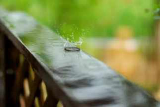
2013年5月下旬，开始练习双盘，每天每天盘着，一眨眼，三年过去了。
回看当时的博文，对双盘了解甚少，随心的开始，随性的行动，没有给自己设过什么目标，没有双盘三小时的期待。
回看双盘过程的博文，无法想象，疼痛钻心的时候，怎么没有放弃呢，明明以前去医院打针都怕痛得闭眼咬牙忍的。
感觉这不是自己的选择，是老天的选择；不是自己在行动，是老天推着自己行动。
有人说我能坚持，毅力强。不关毅力的事啦，很多事情我都没有毅力，比如跑步，以前有一次搬家到公园旁，刚搬过去的时候想着，以后要坚持跑步，结果在那住一年多跑了两次。
大概是上天可怜我没背景没钱没健康，冥冥中指引着和双盘结缘，以便人生不那么惨淡吧。
双盘三年的身心收获，远超前面接触中医四年的收获，这样讲可能并不客观，没有前面乱折腾，也许没法在想双盘的时候盘起来。
一切都是最好的安排啊，之前实践诸多方法的好处是，现在可以更清晰的对比出，只有练传统功法（不一定练双盘，可以是站桩，太极等等，传统功法是相通的），才能让身体的筋骨皮全面转化，从而拥有身心自在的健康。
其他方法，无论是针灸，艾灸，拔罐，药疗，食疗，能作用到的经络气血很有限，没法同时让筋骨皮转化。它们可以适当缓解或祛除疾病，但是没法靠它们达成身心自在的健康。
身心自在的健康，先不谈形而上的精气神，在肉身层面，一定是筋骨皮三者同时更新才能拥有。艾灸或拔罐，脊柱弯的还是弯的，不会变正直。药疗或食疗，筋骨硬的还是硬的，不会变柔软。
筋骨柔软的人，不一定健康（以后举例），拥有身心自在健康的人，必须筋骨柔软，因为筋骨僵硬，身体必然感觉到障碍，自在不起来。
局部僵硬，比如肩周炎严重的人，用不练功的方法是可以让局部变得没那么僵硬从而缓解疼痛，我说的筋骨柔软是全身性的。
至于皮的更新，说是皮肉血管层面，要把很多“杂质”逼出来，恢复到骨肉匀称，柔软，温暖，紧致，弹性。
气血一提升，意识就改变（这是对于没开悟的人，开悟的人说的是真理，经得起时间的考验）。这3年的博文，提到以前没提过的，就是气血提升后，认知的改变，比如前几天提到的，睡醒焕然一新的睡眠才是美容觉。
对照前辈总结的双盘效果，括号中的文字是我的感受。
1. 双盘练的不仅是筋骨，而是把经络全部打开。
（全身筋骨都变柔软，经络打开是什么还没悟出来）
2. 如果练成，并每天坚持双盘坐20分钟，可保70岁登山如小伙。日常基本百病不生。
（每天坚持20分钟太少了，很多浊气还没有力量排出来，我觉得要三小时才好，哈哈哈，现在确实感觉日常百病不生）
3. 双盘练成后，打坐就不会再腰疼。肾气充足，甚至想弓着腰坐都不可能，气足的会把脊背顶的很直。
（是的）
4. 练双盘，能迅速促进胃肠蠕动。即使饭后立即开练，20分钟后胃就全部排空了。
（是的）
5. 双盘不仅打开腿部经络血脉，而且会打开胯关节。
（是的，腿部经络血脉打开后，腿脚的“杂质”被清除，腿脚变嫩变薄有弹性，人越老脚越肿大。打开胯关节后，做下面这些动作不仅轻松，还感觉特别舒服，没事就想到垫子上这样摆）
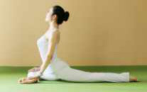
6. 双盘的姿势其实脚踝压住了大腿内侧的大动脉，为了打通动脉，心脏会加大力量泵血，因而能打通腿部血脉。
（是的）
7.在打通腿部血脉前，由于双腿动脉不过血，因此全身血液都集中在上半身，而此时心脏又在加大供血力量，因此，五脏六腑会得到大量的供血，迅速改善脏腑机能，并促进大脑供血。
（脏腑机能改善，是吃喝拉撒睡的效率更高，体内无用物的囤积大大减少。大脑供血改善会觉得脑袋清凉清醒，跟“头脑发热”相反的一种感受。）
和双盘一年的总结对比，多了很多不一样的体验。
简言之，外在骨肉匀称没有多余肉肉的感觉真的很好，内在没有寒湿瘀卡住的感觉真好。
有人问我花那么多时间在身体上，是不是想长生不老？是不是对身体太执着了？
我倒是想长生不老哇，但清醒的知道不可能，退而求其次，想让身体掌控我的时间来得晚一点。
大部分人，在中年之前，是人在掌控身体，想吃就吃，想睡就睡。中年之后，是身体掌控人，想吃吃不下，想睡睡不着，想动没劲了。少部分人，没到中年就被身体掌控了......早一点听身体的声音，晚些时候身体才愿意听我们的声音。
对身体花时间越多，越能体会到身体细微的变化，下午的身体和上午的身体，灵活度不一样；今天的身体和昨天的身体，柔软度不一样。细微感受到分分秒秒在身体上的流过，觉得时间特别宝贵，宝贵到一分钟都不舍得花在单纯消耗自己能量的人或事上。
时间是普通人提升自我价值的唯一筹码，家里没有背景没有要拆迁的房，智商不高做不了学霸成不了安迪那样的精英，要过更好的生活，只能善用自己的时间，在时间的长河中，把石头磨成玉。时间那么宝贵，常与高手争高下，别与傻瓜论长短。
PS：
1.昨天双盘三小时三十分钟，前一个半小时，闭目静坐，后面的时间封装护腰和写快递单，厨房里在蒸玉灵膏，健康和赚钱两不误，谁说赚钱一定要以牺牲健康为代价，任何事都是可以转化的（赚大钱的世界我不懂，我不是赚大钱的料）。
2.原本想拍些新照片在双盘三年的文中做配图，上周末兴致勃勃约闺蜜去拍照，赶到拍照地时，烈日当空，30多度，闷热难忍......那种雨前的闷热太难受了，后来到酒店喝下午茶，就下雨了。身材练好了，不怕没机会拍照，另找时间拍。
3.网友问，夏天也用艾绒垫（或艾绒护腰，或艾绒褥子）睡觉吗？会不会太热？
艾绒不是暖宝宝那样的发热物，它和皮肤相互作用的温润感，不会让人感觉到热。如果不穿衣服都热，当我没说这话哈。
深圳夏天，也是热到让人恨不得裸奔，我会睡前先开空调，让房间凉下来，睡觉时关掉空调或者预约几小时后关，绑着艾绒护腰，睡在艾绒褥子上，艾绒褥子上铺一层比较凉快的布料做的床单。冬暖脊背，夏暖肚，艾绒护腰把腰肚保护了，不另盖薄被也不会着凉闹肚子。
我做的艾绒护腰，可同时护后腰和护肚子，这来源于我自己的经验。当年脾胃虚寒严重的时候，又完全不懂养生，夏天贪凉，睡竹凉席，还对着风扇整夜吹，结果腹泻腹痛非常频繁，频繁到不敢搭长途汽车，怕车上一吹空调肚子不舒服，同时早上起来头上总像裹了个罩子一样昏沉不清爽。
这是因为夏天阳热升浮至顶，人体中下大虚，《黄帝内经》说“虚邪贼风，避之有时”，寒湿邪气特别会趁着睡觉时悄然潜入身体（像小偷一样喜欢半夜做案）。白天光膀子露肚皮的男人，一般不会很容易感觉肚子不舒服，要是晚上睡觉没盖肚子，特别是睡在空调房，第二天很容易肚子不舒服。夏天腹泻腹痛或肠胃炎发作的人比秋冬多，主要原因不一定是食物不洁。
最近广告有点多，人体中下大虚的时节，曾经走弯路吃大亏的人难免忍不住想提醒大家趁机补虚固本，不然秋冬会很难过。
4.我已经过了双盘最难的阶段，现在双盘三小时后面一个多小时腿脚也还会有不适或疼痛，尤其稍微薄弱的那个姿势。疼痛程度算比较轻了，偶尔有反复，也都还好忍。盘得多的那个姿势，盘完放下腿脚一般两三分钟就没有什么后劲了。
简要列记录当打卡。
5月25号，05:45-09:20，双盘3小时35分。
这是第154次双盘三小时，右腿在下，左腿在上，此姿势是第124次双盘三小时。
5月26号，15:55-18:56，双盘3小时1分。
这是第155次双盘三小时，左腿在下，右腿在上，此姿势是第31次双盘三小时。
5月27号，04:40-07:43，双盘3小时3分。
这是第156次双盘三小时，右腿在下，左腿在上，此姿势是第125次双盘三小时。
5月28号，22:33-01:35，双盘3小时2分。
这是第157次双盘三小时，左腿在下，右腿在上，此姿势是第32次双盘三小时。
5月30号，07:28-10:39，双盘3小时11分。
这是第158次双盘三小时，右腿在下，左腿在上，此姿势是第126次双盘三小时。
5月31号，07:38-10:49，双盘3小时1分。
这是第159次双盘三小时，左腿在下，右腿在上，此姿势是第33次双盘三小时。
6月1号，21:25-00:28，双盘3小时3分。
这是第160次双盘三小时，右腿在下，左腿在上，此姿势是第127次双盘三小时。
6月2号，13:27-16:31，双盘3小时4分。
这是第161次双盘三小时，左腿在下，右腿在上，此姿势是第34次双盘三小时。
6月3号，13:44-16:47，双盘3小时3分。
这是第162次双盘三小时，右腿在下，左腿在上，此姿势是第128次双盘三小时。
6月5号，21:54-00:57，双盘3小时3分。
这是第163次双盘三小时，左腿在下，右腿在上，此姿势是第35次双盘三小时。
6月6号，15:04-18:06，双盘3小时2分。
这是第164次双盘三小时，右腿在下，左腿在上，此姿势是第129次双盘三小时。
6月7号，12:59-16:29，双盘3小时30分。
这是第165次双盘三小时，左腿在下，右腿在上，此姿势是第36次双盘三小时。
6月8号，05:40-08:45，双盘3小时5分。
这是第166次双盘三小时，右腿在下，左腿在上，此姿势是第130次双盘三小时。
2016-06-28双盘三小时(第167～184次)(通过最后大关——三三九双
盘)
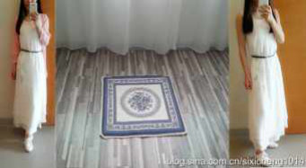
回来啦！
6月20号-6月22号，通过双盘最后大关——三三九双盘，即一天双盘3次3小时，3天双盘9次3小时。
修行人的修行目标是得到在世间得不到的快乐，在世间得不到而在另外的地方可以得到，那个地方叫出世间。
静岩老师在《禅学.双盘》一书中提到，从双盘的角度看，三三九双盘关门，是从世间到出世间的桥梁。
这次外出几天，算半闭关，手机没关机，一为记时，二是双盘疼痛的时候播放梵文佛音，闭关不辟谷，吃东西，吃得少，早中晚各一碗粥，偶尔加一个小包子，就够了。
没去参加禅修打坐班集体共修，就一个人，在一个安静酒店，以自己喜欢的节奏，想双盘的时候双盘，累了想睡就睡，饿了想吃就吃。
可能我骨子里特别爱自由，参加集体活动的话，要随顺大家的节奏，之前去庙里打佛七，别人凌晨4点起来念佛，我那时身体能量不够，生物钟也没调整过来，凌晨4点起来，好打瞌睡啊，但也不好意思继续睡......一边打瞌睡一边念佛，硬撑着，好为难。
三三九双盘的第二天是夏至，中医专家刘力红在《思考中医》中写道，“夏至、冬至乃天地阴阳交接之大时，先王以此日闭关，商旅不行。乃为阴阳能顺利交接。卢门于至日前后需服至日汤以助此阴阳之交接。以此交接顺，则一年之阴阳顺，故于健康关系甚大！各位朋友虽无条件闭关，此段时期亦宜减少应酬，收摄心神，子时入睡，切切！”
夏至阳气虽旺，但阳气虚浮在体表，体内五脏六腑正是最空虚的时候，宜静坐养心，不宜房事，以免耗损元气(夏至已过，整个夏季宜戴艾绒护腰护肚给五脏六腑添动力，无孔不入的广告^_^......受不了广告的读者苦练双盘吧，靠自己强壮五脏六腑，啥都不外求）。另外，五月自古以来被视为忌月，被称为恶月或毒月，忌房事，古代妇女回娘家过这个月。
外出前没有专门翻日历看宜忌，就是忽然有个念头，想清净一下，没想到无意中踩到天地节奏。
无意中踩天地节奏的，还有另外一件小事，忽然有天早上想吃荔枝，买了两斤回来，才想起当天是夏至，夏至温补，岭南一带的进补，流传着“夏至食个荔，一年都无弊”。
三三九双盘日记：
6月20号
12：36-15：38，左腿在下，右腿在上。
第一次，前两小时身体舒适，闭目静坐，最后一小时，压下面的左脚踝略微疼痛，疼痛程度轻微，裤子汗湿，尤其是膝盖窝位置出汗多，放下腿后几分钟，后劲完全消了，做完双盘收功，做58个大礼拜，因为前一晚和姐姐聊天到凌晨一两点，做完大礼拜打瞌睡，睡了两个多小时。
18：38-21：40，右腿在下，左腿在上。
第二次，前两小时身体舒适，感觉不到第一次留下的后劲，最后一小时，压下面的左脚踝比较疼痛，两个膝盖略微不适，放下腿后做完双盘收功，后劲消失快，做50个大礼拜。
23：03-02：05，左腿在下，右腿在上。
第三次，前一个半小时身体舒适，一个半小时之后，压下面的左脚踝开始疼痛，比前一次的这个姿势疼痛程度加倍，最后半小时两个膝盖有点胀，整个过程打嗝放p比前两次多，相对以前来说，打嗝放p算比较少了，打嗝放p加起来在5次以内。放下腿，做完收盘收功，倒头睡着，睡得香沉。盘完太晚，累，没洗澡直接睡，第二天早晨起来洗澡。
第一天的时间安排，很不科学，过中午才开始第一次，导致晚上盘到凌晨两点，因为早上和姐姐一起，吃完早餐，送她离开才开始。
有读者问我姐姐现在双盘情况如何，她现在可以不换腿双盘一个半小时，双盘频率挺高，有空就盘，不间断做大礼拜（她说数个数老是忘记，按小时来做的），她也变骨肉匀称了，马甲线当然也出来了，曾经虎背熊腰的妇女状态已经一去不复返。
走在路上，我看不到自己的身姿，看着姐姐的身姿和路人的身姿，觉得姐姐的身姿很舒服，胳膊腿啊，顺溜顺溜的，以前小腿鼓着肉坨，像棒槌一样硬（不是触觉，是感觉，我们是可以感觉出质地软硬的哈，比如铁和棉花），以为是肌肉，其实是寒湿瘀，腰背正直，看着舒展精神，塌腰勾背的人太多了（身在其中的人比较难看出来，等看出周围很多人是这个样子的时候，说明你的身体能量提升了一个档次）。
6月21号
10:52-14:00，右腿在下，左腿在上。第四次，一个半小时后，疼痛比昨天程度加重，膝盖窝位置裤子汗湿，放下腿后，做完双盘收功，做58个大礼拜。15:00-18:02，左腿在下，右腿在上。第五次，一个半小时后，左脚踝较疼痛，刚放下腿脚，左脚踝弯得像回不来了，左脚底发热出汗，双盘后劲比前几次厉害，反复按揉搓腿脚，做50个大礼拜。
19:07-22:12，右腿在下，左腿在上。第六次，一个半小时后，压下面的脚踝疼痛较重，盘完反复按揉搓腿脚，一小多小时后，洗澡休息。6月22号10:52-13:55，右腿在下，左腿在上。第七次，早上起来，完全感觉不到昨天的后劲了，一个半小时后，压下面的脚踝疼痛，盘完下腿脚，做收功的过程睡着了，大概睡了二三十分钟。醒来做58个大礼拜。
15:00-18:03，左腿在下，右腿在上。第八次，一个半小时后，压下面的左脚踝不舒服，不是双盘三小时早期那种膨胀的疼痛，那种膨胀的疼痛，感觉像肌肉骨骼里面有很多杂质往挣扎，现在是浅层微微的疼痛，不是有杂质的疼痛感，是双盘后劲累积的疼痛感。双盘中的疼痛很难准确描述，有杂质的疼痛感，有寒气的疼痛感，有瘀堵的疼痛感，没有杂质没有寒气的疼痛感，都是不一样的感觉。最后四十分钟难熬，主要是左脚踝难受，流泪十几分钟，不是疼痛得哭，没有悲伤的情绪，就是不知不觉流泪。放下腿脚后，按摩揉搓腿脚一阵子，做50个大礼拜，后劲基本消失。19:00-22:30，右腿在下，左腿在上。第九次，一个半小时后，压下面的右脚踝疼痛，前面8次累积的隐形后劲在这时凸显，比较难熬，中途不知不觉流泪一阵子，接近3小时的时候，疼痛减弱，盘了3小时30分才放下腿，放下腿后，脚踝和膝盖疼痛无力，无法动弹，揉搓腿脚大概半个小时，后劲还非常明显，累得无力洗澡，直接睡，睡着还感觉到腿脚疼痛，一晚上都有腿脚的存在感，似睡似醒。3天连续9次双盘3小时，腿脚温度与色泽和平常一样，膝盖，脚踝，脚板底都是暖和的，没有发凉发冷的排寒反应（惊喜！没想到！）。打嗝放P都很少，偶尔两三次。体内修复加速，能量消耗大，身累，心舒服。通关第一时间，跟几个人报喜，其中有隔空一起练双盘和大礼拜的网友姐姐（之前博文提到的已过45岁练出曼妙身姿的姐姐），还有感谢家里男主人的理解和支持。
通关后第二天早上，双盘后劲还挺大，腿脚依然疼痛，不过不像双盘3小时初期那样疼痛得走路姿势都别扭，现在的疼痛缓和得多，慢慢做2*108个大礼拜，做完去公园散步，整个人特别轻盈，原来以为行如风，是说走路像风一样快，而今感觉行如风是指气沉脚底后，脚和地面接触，犹如春风拂过大地那样轻盈温柔，是身体仿佛化作一股能量在飘，不是沉重的身体、僵硬的腿脚踩着高跟鞋扭着胯大步走。通关后第二天整天身体较累，睡很多。
身体变好或变差，都有滞后性，何况双盘是由内而外的修复，从内脏牵动到体表的变化肯定需要时间喽。通关后几天，没有立即感觉哪里哪里又变好啦，比如胸变大啦，腰变细啦（腹肌小蛮腰已经很好，不能变更细啊），反而因为通关消耗大，天气热没带玉灵膏养血，头发明显变干，没之前那么润滑。
三三九双盘期间，回顾自己以前的身体，为什么痘痘那么顽固，为什么痛经那么顽固，为什么便秘那么顽固，为什么夏天也怕冷......顽固难治的病或难消除的不适症状，都是中下焦能量严重不足。中下焦能量不足，除了练双盘或其他传统功法来改善，对于我们这样不能食气的普通人，还需要食物补给。身心静下来，灵光乍现，一个减轻肠胃负担同时更好补给中下焦的食疗方在心中浮现，我要做一个平和而好吃的东西，敬请期待^_^
熬过双盘疼痛的高峰阶段，双盘疼痛的记忆越来越淡，留下的是身心改善与提升的喜悦，双盘让我拥有骨肉匀称、灵活轻盈的身体，让我具备战胜疼痛，痛苦，恐惧，焦虑，浮躁的勇气和能力，好像跟某个源头重新连接上了，我们不仅仅是父母的孩子，也是天地的孩子，渐渐体会到修庄子的JT叔叔说的，好像宇宙有张安全的大网接住自己，比过去心安多了——
"我们不是来“修仙”的，我们一开始就拥有炼金术的本能，我们一开始就已经是仙人了。只是，如果我们忘了好好行使这种天赋，反而增加了世间不实念波的含量，我们就会变成“魔”......
《庄子》这本书，我不敢说练成了，真练成了要灵魂能够出体，忆起前世，我还没练成......
我直到现在，都没有学会“不怕”......我什么都怕：长得美了怕别人不是爱我的心，长的丑了怕别人根本不会喜欢我：社会地位高了怕树大招风有人暗箭伤我。社会地位低了怕谁都敢欺负我；教书讲深了怕人听不懂，讲浅了怕人嫌我没有料；没人喜欢就怕自我感觉不良好，有人喜欢就怕我自己不喜欢那个喜欢我的人；钱收少了怕我在犯贱，钱拿多了怕我太贪财......
一直以来的我，是活在“恐惧”之中的，害怕一切自己不能掌控的种种，对于自己的头脑，就像是抓住最后一片浮木不敢放手的溺水者，总觉得：“我若是放手，就要死了！”
可是，到最近，开始有一点点尝到“潜在意识的信息场”的味道了，渐渐反而觉得:大宇宙给我的，都是最好的，我又何必自作聪明地一直要逞强、要担心呢？好像有一种这样的感觉：“放开我的头脑，就让自己像一个喝醉的人，从表面意识上滚下来，也不要紧了。大宇宙的信息场，会像是一个安全的大网，接住我的！”——好像比较不会担心那么多事情了。
于是，什么事情，我也不太花力气去想方设法地“周旋”了——我的意思是说，像我这个年纪的人，通常都有一种想法：“要积累人脉，要做点应酬，这样有赚钱的机会才不会错过！关系打好了才签得到合同！”——而我，这些事情都不做了。
但，不做了，我就成了时间的孤岛，许多好机会都被别的精明人抢去了吗？结果，并没有。想做什么事，很好的工作机会就自动找上门来。
原来，只要大宇宙肯给你，一线缘分就牵上了，无论如何都是遇得到的。反过来讲，因为我没有花这些力气去努力经营，缘分到的时候，更觉得自己很有福气，觉得“上帝，你真好！”
努力去迎合社会的规范，社会接纳你，才会赏你一口饭吃——这话并没有错。但是，诚实做自己，确是上帝会赏你一口饭吃；而上帝给的那口饭，比起社会给的那口，真是好吃太多太多倍了。"
简单贴这段时间的双盘记录：
6月10号，21:24-00:26，双盘3小时2分。
这是第167次双盘三小时，左腿在下，右腿在上，此姿势是第37次双盘三小时。
6月12号，20:24-23:29，双盘3小时5分。
这是第168次双盘三小时，右腿在下，左腿在上，此姿势是第131次双盘三小时。
6月13号，14:00-17:08，双盘3小时8分。
这是第169次双盘三小时，左腿在下，右腿在上，此姿势是第38次双盘三小时。
6月17号，20:13-23:16，双盘3小时3分。
这是第170次双盘三小时，右腿在下，左腿在上，此姿势是第132次双盘三小时。
6月18号，22:15-01:18，双盘3小时3分。
这是第171次双盘三小时，左腿在下，右腿在上，此姿势是第39次双盘三小时。
6月19号，18:42-21:50，双盘3小时8分。
这是第172次双盘三小时，右腿在下，左腿在上，此姿势是第133次双盘三小时。
6月20号-22号，三三九双盘（第1次挑战三三九双盘，希望以后每个季度可以来一次三三九双盘）。
6月20号
12：36-15:38，双盘3小时2分。
这是第173次双盘三小时，左腿在下，右腿在上，此姿势是第40次双盘三小时。
18：38-21：40，双盘3小时2分。
这是第174次双盘三小时，右腿在下，左腿在上，此姿势是第134次双盘三小时。
23:03-02:05，双盘3小时2分。这是第175次双盘三小时，左腿在下，右腿在上，此姿势是第41次双盘三小时。
6月21号
10:52-14:00，双盘3小时8分。这是第176次双盘三小时，右腿在下，左腿在上，此姿势是第135次双盘三小时。
15:00-18:02，双盘3小时2分。这是第177次双盘三小时，左腿在下，右腿在上，此姿势是第42次双盘三小时。
19:07-22:12，双盘3小时5分。这是第178次双盘三小时，右腿在下，左腿在上，此姿势是第136次双盘三小时。
6月22号
10:52-13:55，双盘3小时3分。这是第179次双盘三小时，右腿在下，左腿在上，此姿势是第137次双盘三小时。
15:00-18:03，双盘3小时3分。这是第180次双盘三小时，左腿在下，右腿在上，此姿势是第43次双盘三小时。
19:00-22:30，双盘3小时30分。这是第181次双盘三小时，右腿在下，左腿在上，此姿势是第138次双盘三小时。
6月23号，15:40-19:10，双盘3小时30分。
这是第182次双盘三小时，右腿在下，左腿在上，此姿势是第139次双盘三小时。这是三三九双盘之后的第一次，腿脚疼痛来得比较早。
6月24-25号，间断双盘三小时。6月26号，21:14-00:18，双盘3小时4分。
这是第183次双盘三小时，左腿在下，右腿在上，此姿势是第44次双盘三小时。
6月27号，21:28-00:38，双盘3小时10分。
这是第184次双盘三小时，右腿在下，左腿在上，此姿势是第140次双盘三小时。
2016-07-21双盘三小时(第185～202次)
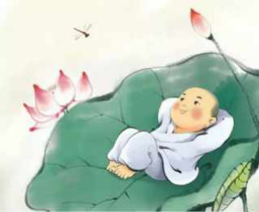
本来前天想更新的，电脑有问题，开不了机，没法工作，工作日有闲暇是多么美好的事，就一天双盘两次3小时啦。
外人看着真是“走火入魔”哈，闲暇时光不搞娱乐活动，看起来“无趣”的双盘算怎么回事，算娱乐活动吗？
是的，双盘是更高级的娱乐，不同于依靠外物让自己开心的娱乐，也不同于什么事都不干的发呆，双盘可以化解内在的冲突和痛苦，从而自然而然升起平静的喜悦，唯有做的人才能体会，难以跟外人分享。
梁冬先生说，“我们大部分的痛苦来自于多过去的懊恼和对未来不确定的焦虑，以及当下好几件事情的繁杂，所以我们的时间是散乱的，无序的，没有能量的。“把时间能量变充沛的锻炼方法是“心在焉”。我们常说心不在焉，那什么叫心在焉呢？他说，“你花时间去陪伴家人，其实还有一个人更需要陪伴，那就是你自己。我们以为刷微信的时候是在陪自己，不是，你是在陪朋友圈，我们以为看电视的时候是在陪自己，不是，你陪的时电视。你坐在那里，既不玩手机，也不玩微信，什么都不干，这叫发呆。你感受到自己的骨骼，感受自己的气息，观察自己的念头，这叫心在焉。”
双盘3小时200次啦！
感受到梁冬先生所言极是，通过不断训练自己“心在焉”，杂念不断减少，内在身体越来越通畅，意识也越来越清晰稳定，对过去的事容易放下，对未来的事没有焦灼，烦恼与痛苦不断减少。
三个多月前被诈骗损失几年积蓄的事，好像发生在十几年前似的，现在的果是过去的因，我们没法穿越回去扭转过去的因（或许有些因是前世的呢），不过不会因此就听天由命，把严重寒湿瘀的身体转化之后，拿回身体主动权的踏实感，会在意识层面相应的长出一股力量，无论生活中发生什么事，相信自己可以把它转化而不会陷入僵局或死局。
让自己有所追求，做和时间成正比的事，活出一个忘记时间的状态来抗衡时间带来的焦灼，让青春与力量长在自己身上。
现在双盘3小时身体越来越舒适了，右下左上的姿势，基本上前两个小时身体舒适得感觉不到身体的存在，最后时间压下面的脚踝有略微的不适；右上左下的姿势，基本上前一个半小时身体舒适得感觉不到身体的存在，最后时间压下面的脚踝的不适比另一个姿势稍微重一些，程度都算比较轻，好忍。
每天双盘一次3小时，双盘过程打嗝放屁都很少了，偶尔一两次，腿脚暖和，色泽和平常一样，放下腿脚一般几分钟就没有酸麻疼痛的后劲了。
昨天一天双盘两次3小时，第二次的第二小时之后，两膝盖有点疼痛，最后时间压下面的脚踝的不适略微重一些，放下腿脚后，脚板底是热的，大腿摸上去略微凉，比手心温度低，不摸的话感觉不到凉。
总的感觉，寒湿瘀和宿便以及浊气的主战场已经处理了，内在情绪和意识层面的伤也修复了绝大部分，第100次以前不知不觉流泪多，从第100次到200次很少不知不觉流泪。
这段时间，调整为早上四点多起来双盘，以便白天有更多时间做事，白天再补一个小时的觉，感觉不错，这几天有一些特别的事，又把这个节奏打乱了。
PS：
上篇文章讨论糊糊好消不好化，微信公众号后台很多留言问什么东西好消又好化。
“好化“的关键在于提升小肠温度，小肠经有两个代表穴（募穴），一个是在肚脐上边一寸的水分穴，另一个是肚脐下三寸的关元穴，艾灸这两个穴位或直接绑艾绒护腰睡是提升小肠温度最直接的办法呀。作为曾经小肠寒不好化的代表的我，做的艾绒护腰直接照顾了这两穴位。现在三伏天，是一年当中调理阳虚，气虚，血虚效果最好的时机，事半功倍，趁机好好养起来哈，错过等一年。
附上这段时间双盘3小时的记录：
6月28号，14:26-17:30，双盘3小时4分。
这是第185次双盘三小时，左腿在下，右腿在上，此姿势是第45次双盘三小时。
6月29号，20:59-00:02，双盘3小时3分。
这是第186次双盘三小时，右腿在下，左腿在上，此姿势是第141次双盘三小时。
6月30号，11:18-14:21，双盘3小时3分。
这是第187次双盘三小时，左腿在下，右腿在上，此姿势是第46次双盘三小时。
7月1号，21:25-00:45，双盘3小时20分。
这是第188次双盘三小时，右腿在下，左腿在上，此姿势是第142次双盘三小时。
7月2号，13:52-17:00，双盘3小时8分。
这是第189次双盘三小时，左腿在下，右腿在上，此姿势是第47次双盘三小时。
7月3号，06：06-09:12，双盘3小时6分。
这是第190次双盘三小时，右腿在下，左腿在上，此姿势是第143次双盘三小时。
7月5号，04:05-07:11，双盘3小时6分。
这是第191次双盘三小时，左腿在下，右腿在上，此姿势是第48次双盘三小时。
7月6号，04:39-07:53，双盘3小时14分。
这是第192次双盘三小时，右腿在下，左腿在上，此姿势是第144次双盘三小时。
7月7号，06:23-09:25，双盘3小时2分。
这是第193次双盘三小时，右腿在下，左腿在上，此姿势是第145次双盘三小时。
早上4点多起来双盘，中途被大大中断两次，感觉是前一天吃多了，气温一下飙到38度，朋友买一大盒哈密瓜过来，不知不觉吃多了，该排的没排完，双盘蓄起能量后才把多于的“压”出来，回来继续盘，第三次终于连续盘完3小时。
7月8号，04:05-07:09，双盘3小时4分。
这是第194次双盘三小时，左腿在下，右腿在上，此姿势是第49次双盘三小时。
7月9号，06:46-09:51，双盘3小时5分。
这是第195次双盘三小时，右腿在下，左腿在上，此姿势是第146次双盘三小时。
7月10号，04:06-07:11，双盘3小时5分。
这是第196次双盘三小时，左腿在下，右腿在上，此姿势是第50次双盘三小时。
7月14号，04:45-08:00，双盘3小时15分。
这是第197次双盘三小时，右腿在下，左腿在上，此姿势是第147次双盘三小时。
7月15号，03:55-06:58，双盘3小时3分。
这是第198次双盘三小时，左腿在下，右腿在上，此姿势是第51次双盘三小时。
7月17号，11:40-15:02，双盘3小时22分。
这是第199次双盘三小时，右腿在下，左腿在上，此姿势是第148次双盘三小时。
7月18号，20:49-23:52，双盘3小时3分。
这是第200次双盘三小时，左腿在下，右腿在上，此姿势是第52次双盘三小时。
7月19号，14:00-17:03，双盘3小时3分。
这是第201次双盘三小时，右腿在下，左腿在上，此姿势是第149次双盘三小时。
20:26-23:30，双盘3小时4分。这是第202次双盘三小时，左腿在下，右腿在上，此姿势是第53次双盘三小时。
电脑有问题，没法工作，在工作日有闲时是多么美好的事，双盘2次，每次3小时。
2016-08-03双盘三小时(第203～210次)(找到自己的节奏)
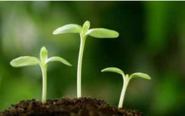
这几天忙个新东西，把6月底三三九双盘期间的灵感呈现出来——一个减轻中焦肠胃负担同时充实下焦的零食......
忙挣钱对身体消耗大啊，有几天感觉很累，多睡，少双盘，少更新。
最近双盘3小时频率低了一点，还有两次计划双盘三小时，中途都被大大中断，这个，还真可记录的有细节呢！
第一次是7月27号，早上四点多起来双盘，计划盘三小时，盘到2小时15分，肠道气跑剧烈想大大，只好放下腿脚，很久没有双盘过程被大大中断，之前有个阶段经常被大大中断，感觉那时是在处理“宿便”，现在好像处理完“历史问题”了，一般是前一天吃多了，才会这样。
比如这次，估计和前一天吃多哈密瓜有关，寒凉水果耗阳气，阳气不够用，没法把它化完排干净，等双盘蓄积了足够的气才推动残余物排出。
第二次是7月30号，睡到凌晨两点多醒，感觉身体有点“异样”，说不出具体哪里不舒服，就觉得和常态的舒服有偏差，翻几个身都没有继续睡着，于是起来双盘，盘到2小时20分，胃肠像一锅煮开的粥，气冲猛烈，好像浊气一下被激发起来了，整个人都不舒服，头晕，胸口有点闷，同时有大大感觉，放下腿脚去WC，拉了一大堆不成形的大大（没夸张，真的是一大堆！），出了WC，好像终于一口气从头顶下到脚底了，头晕和胸口闷全消失，浑身清爽。大大前和大大后身体感大不相同，之前好像身处雾霾之城，之后好像到了满是负离子的清新森林！那一刻，深深感觉到，原来身体很多问题都是浊气浊水浊物堵住了肠胃，没法一气贯通上下所致！
那晚醒了没法继续入睡的时候，我怎么都想不到是肠胃里有东西停留，因为根本感觉不到胃胀或想大大或其他明显不适，就隐隐感觉身体不大对劲，好像怎么翻身都找不到合适的姿势睡，纳闷一向睡眠很好怎么忽然睡不着呢，直到双盘到排出一堆大大，豁然开朗，哦，原来“胃不和则卧不安”啊！
养生到这阶段，好像跟潜意识连接上了似的，无意中做的事，就是给自己“治病”的，像这次，正常来说，凌晨两点多醒了应该是会继续想办法入睡的，居然鬼使神差的起来双盘，好像潜意识知道要通过双盘来蓄气从而排一堆浊物一样。当时身体没有显著不适或其他信号帮助推断出是胃肠堆积了东西，可见潜意识比头脑思维要灵敏且聪明。
如果踩不到潜意识给出的步调，人们在头晕的时候吃治头晕的药，根本想不到头晕这个果，它的因并不在头部，而在肠胃，是肠胃藏了一堆该排未排的废弃物。
这一大堆没及时清理的废弃物哪来的呢？我在吃上也算比较节制，偶尔吃多而已，估计是这段时间较忙，白天忙着挣钱的时候，能量都输往头脑，脏腑得到的能量减少，残余的废弃物增加。
有读者留言，
“我个人体会，因为白天早起上班，只能晚饭后锻炼。之前约一年左右的时间，都是晚饭后一小时先单盘，单盘约半小时；然后大礼拜30～50不等。再过半小时洗澡。几乎每天这样坚持除了外出。冬天效果很好，隔天早上大号很多，没多久肚子就瘪瘪；春天开始季节变化，效果就不那么好了，大号变少肚子又慢慢累积起来。刚开始是担心衣服穿的少了，后来加上长裤有些帮助。
最近，我试着调换顺序：晚餐后一小时，先大礼拜再单盘。结果很惊喜，效果非常明显的是，隔天早上大号就变多多。我想小腹也会渐渐瘪下去的，只要我再坚持。
但唯一一点，就是近两个多月以来，脸颊两侧的痘痘此起彼伏，我不知道是不是还有哪些细节没有注意到却是有问题的。这个问题，我自己再观察看看。
还有一点，建议每次更新时再补充说明什么时候双盘、什么时候大礼拜，便于大家在方便的条件下模仿，尽可能的多些参考条件。感谢！”
我的体会：
1.像我这样曾经肠道虚弱无力的人（以前多年长期便秘），现在还要双盘到两个多小时才“挤压”出该排而未排的大大，我感觉单盘半个多小时不足以把肠胃清理得比较干净，加上日常忙碌能量多跑往头脑少留守脏腑，以及年纪增长带来的肠胃功能自动衰弱，蓄积能量远远补不齐消耗能量的缺口，那么体内就还是会有很多残余垃圾从而脸上长痘。如果蓄积的能量高出消耗的能量，在筋骨皮大幅度转化之前，可能会出现“排病反应”，喜欢往脸排的人会长痘。
2.什么时间做大礼拜，什么时间双盘，大家可以摸索和调整到更适合自己的节奏，长远来看，当肠胃力量充足了，脏腑都回到常态了，身体会抛掉所有不需要的东西（寒湿瘀等浊气浊水浊物），自然出落成“骨肉匀称”的身段。
3.每个人要应对的工作生活内容不同，长期看，让自己轻松自在的节奏是最适合自己的。任何运动或改变，短期有个适应和调整阶段，出现困或累是正常的，略微放长来看，不要陷入为了坚持而坚持，比如有的人为了让自己“看起来”积极上进而早晨5点起来跑步，结果早上9-10点开始犯困，一整天做事没劲，没精神，那就忘了自己为什么而跑步了——不是为跑而跑，是为了更有精神的工作和更有活力的生活而跑。练习大礼拜或双盘也一样，是为了更有精神的工作和更有活力的生活而做，如果真喜欢，可以排除万难坚持，但不要为了坚持而耽误自己的份内事——该干的工作做好，该做的事不推脱...... 4.我是能安排什么时间双盘就什么时间盘，见缝插针练大礼拜，困了想睡就睡——多年前离开公司走自由职业之路就是为了有一天可以在时间上不受制于人，现在，终于时间上相对自由了，几年前无意中的决定，仿佛都是为了今天练这些做铺垫。不管养生还是工作，找到自己的节奏，会爆发出预料不到的生命力。今天凌晨两点多起来双盘三小时，那是昨晚九点多就睡啦，盘完到厨房蒸玉灵膏，这批玉灵膏还差5小时蒸够40小时，早点蒸好，冷却后封装发货，白天等膏冷却的时间补一会觉。有过白天双盘3小时，有过晚上双盘3小时，这段时间会凌晨三点多，四点多，五点多，六点多......起来双盘，完全不是因为意志力强或积极上进什么的，而是身体走到这个点——睡前动个念头“明天几点起”，然后身体像电脑一样，前后后台所有程序一一关机，睡得很沉，好像“神”去了另外一个地方加油，到那个时间点，“神”回来了，自然醒，醒来不困不想赖床。开机关机，都干脆利落。白天补觉也这样，躺下就睡着，睡够自然醒，也不像别人说的白天午睡最好半小时以内，睡多容易昏沉，还容易导致晚上睡不着。以前确实是像别人说的那样，现在，凌晨起太早的话，白天会睡一到两个小时，都像给电池充电一样，没电就充，充满自动拔插头，躺下睡着，睡够自然醒（是否睡够是有感觉的，像吃饱一样，够了就不需要更多，以前睡多总觉得不够，还想睡，充不进电），也不影响晚上的睡眠。时间是个相对概念，可能身体处于阶段不一样，时间的意义在我们身上也是不同的。【小夕闲谈】说到睡觉，还有好多可以说的。有位顾客说绑艾绒护腰睡，“没什么感觉”。我会有明显感觉的咧，不绑的话，好像从肚脐眼以及后腰的命门会流失点能量，同时外界的“浊气”或“邪气”好像会进来制造一些干扰，具体表现为第二天身体里“杂质”要多一些，做大礼拜时身体明显沉一点，关节没那么利索。绑了的话，感觉能量可以很好的封藏，同时有“补充”到一点新能量，第二天腰腹暖暖的，轻松有劲，做大礼拜时身体更轻盈，关节更灵活。
“浊气”或“邪气”的干扰，住酒店时感受更明显，自从做了艾绒护腰，外出都带着，晚上住酒店绑着睡，以前住酒店老是做噩梦或睡不着，以为是“认床”导致的，后来绑着护腰住酒店，全都一夜安眠，好像隔绝了什么不好的能量。
2.现在双盘3小时除了偶尔被大大中断，打嗝放P都少，全程腿脚暖和，全身暖和。疼痛还有反复，一般是压下面的脚踝疼痛，有时两个小时腿脚都舒服，有时一小时后压下面的脚踝会疼痛，有时重一些有时轻一些，脚踝出现不适后，心难静。
附这段时间双盘3小时记录：
7月21号，05:22-08:52，双盘3小时30分。
这是第203次双盘三小时，右腿在下，左腿在上，此姿势是第150次双盘三小时。
7月22号，05:48-08:54，双盘3小时6分。
这是第204次双盘三小时，左腿在下，右腿在上，此姿势是第54次双盘三小时。
7月23号，06:58-10:02，双盘3小时4分。
这是第205次双盘三小时，右腿在下，左腿在上，此姿势是第151次双盘三小时。
7月25号，05:40-08:42，双盘3小时2分。
这是第206次双盘三小时，左腿在下，右腿在上，此姿势是第55次双盘三小时。
7月26号，06:21-09:26，双盘3小时5分。
这是第207次双盘三小时，右腿在下，左腿在上，此姿势是第152次双盘三小时。
7月28号，05:36-08:39，双盘3小时3分。
这是第208次双盘三小时，左腿在下，右腿在上，此姿势是第56次双盘三小时。
8月1号，06:43-09:46，双盘3小时3分。
这是第209次双盘三小时，右腿在下，左腿在上，此姿势是第153次双盘三小时。
8月3号，02:45-05:50，双盘3小时5分。
这是第210次双盘三小时，左腿在下，右腿在上，此姿势是第57次双盘三小时。
2016-08-13大礼拜这样调理脾胃
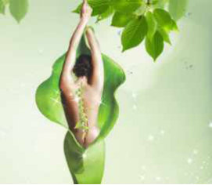
收到一个热心提醒——
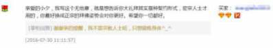
不便在评价中细说，这里详细分享一下我的看法：
1.我一好友皈依密宗上师学佛几年，每个人适合的法门不一样吧，她皈依学佛以来没怎么做大礼拜，我坚持做大礼拜马上三年（还差一个多月到三年）。
三年前，我们体型相似，穿同样的衣服尺码，衣服可以交换着穿。
今年，我腰腹保持着紧实的马甲线，三年前虽然更年轻，不过那时腰腹线条没现在好咧，是练大礼拜不知不觉练出“马甲线”，然后一直保持至今；她现在腰肚明显长肉了，不能穿显身材的衣服，原本穿S码衣服，现在要换成M或L码，有的M码新衣服过水后缩水，穿不了，都扔给我了，她说纵观朋友圈，只有我能穿她穿不了的衣服。2.著名的显宗法师——寂静法师，今年4月到10月带领大家挑战“一起拜”，就是在这几个月带领大家一起完成一亿个礼拜，（百度搜“寂静法师新浪博客”可了解），活动说明中说“礼拜不仅是宗教所有，而是全民均可参与的一项运动”，提到大拜（大礼拜）的好处——【从中医角度看大拜好处】适当的全身运动来拉筋拔骨，刺激全身的经穴，使全身的气血得以顺畅、平衡。这一运动还能使心灵得以安定，进而使身体内在的免疫力、自然治愈能力达到极致，最终预防或治愈疾病。【从健康的角度看大拜好处】
压力和不正确的姿势、过度疲劳等都会引起肌肉的紧张和僵痛，导致血液不通畅。身体得不到足够的养分、氧气和免疫物质，最终会产生腰酸背痛、胳膊发僵发沉、头重脚轻、睡眠不足、无精打采等症状，甚至会招来更加严重的疾病。而108拜是一项不会受时间、场地、费用的限制，可随时随地都能进行的运动，对治疗由压力引起的肌肉疼痛有着卓越的疗效。
【从佛教的角度看大拜好处】
佛教的跪拜，是为了向佛教的三宝即伟大的佛、法、僧礼敬的行为。这是人类能做的最谦卑的姿势，也是对对方表现最恭敬的姿势。通过这样把自己放在最低微的地方，把对方高高捧起的行为，能充实自己，抛弃自满和自大，使心灵学会谦卑。全心全意跪拜的过程中，会把一直向外看的视线转到我们自身，会审视我们的本质，从而自然而然发现我们自身的种种问题，并找到对应的解决方法。
3.我练习大礼拜近三年，总数还没达到十万个（不精进的博主），效果已经好到让我“停不下来”。
除了上面提到的腰腹练出紧实的“马甲线”，还体会到它调理脾胃的效果胜过很多药物，怎么调理到脾胃的呢？
我们的内脏，仿佛是挂在脊柱上的，我们的脊柱有上下贯通的椎管，脊髓居于椎管内，与脑相连。我们的31对脊神经，还有内脏神经从椎管里出来，进入躯体、皮肤和内脏器官等，分别支配人体的各种生命活动。脊柱的位置正常，就可以保证神经系统不受影响，可以正常的协调内脏的活动。
由于日常久坐劳累或姿势不良，脊柱变形的情况非常普遍，成年人的脊柱（颈椎，胸椎，腰椎，骶椎及尾椎），或多或少有点歪，不是前曲、后曲，就是侧曲，当脊柱不在正常位置时，会压迫有脊柱传输出去的神经，造成相关位置的内脏产生疾病，或神经系统的病变，以及对椎间盘的压迫产生骨刺等等。
通俗的说，脊柱变形，偏离了它的正常位置，那么“挂在上面”的内脏也会偏离正常位置，内脏会因此受到压迫或处于紧张状态，好比说，树干倾斜，压到墙角，受挤压状态下挂的果子会变成“歪瓜裂枣”，内脏长期处于压迫或紧张状态，就会萎缩，就像古代裹脚一样，长期被挤压，就萎缩了。
各种练功方法都强调放松，因为人一紧张或紧绷，气血就会乱或瘀，比如有的讲师上台前紧张会习惯性拉肚子，内脏长期紧绷不放松的话，它的功能会被削弱，该来的不来（该吸收的没法吸收，总是腹泻），该走的不走（该排的排不掉，经常便秘）。
我猜想，推崇大礼拜的密宗，也许因为练习大礼拜可以把脊柱调回正常位置，从而内脏处于正常位置，舒展放松，气血顺畅，体内该来的来，该去的去，来去自如，谓之“如来”。
身体更健康，少去或不用去医院；身材更好，穿衣服好看，逛街试衣服被人赞......我就心里暗爽（庸俗妇女一枚），听佛音或看佛书，随心随兴，目前没有“证悟生命和解脱生死”的向往......
2016-08-19双盘三小时(第211～221次)(如何每日焕然一新)
前阵子尝试凌晨3，4，5点起来双盘，然后有几天忽然很疲倦，慢慢又调到凌晨多睡觉，找其他时间双盘三小时。
目前觉得晚上双盘三小时更舒服，晚上能量偏阴，比较沉静，更好收神敛气，犹如关电脑，把窗口依次关闭，最后关电源，没双盘直接睡的话，像没关窗口直接拔插头的强制关机。白天整个世界都在活动，能量偏阳，就算周围没有嘈杂声，“气”也比较浮躁。
最近三个晚上的双盘，妙哉妙哉！
之前一般在房间里双盘，立秋以来，每天下雨，晚上暑热消散，凉风细雨，沁人心脾，这三晚在阳台上双盘，阳台上风大，会拿薄毯裹住腿脚，遮住脖子后面的大椎穴区域。
闭目静坐，舒适得没有身体的存在感；自然呼吸，听外面的虫鸣声，听着听着，仿佛穿越了时空——好像不是坐在自家阳台，而是遨游于广袤的天地；好像不是耳朵在听，而是每个细胞都在；好像回到了童年——小山村，夏日晚，6、7岁的我和邻家小伙伴在一片虫鸣声中追萤火虫......沉浸其中，“如皓月当空，如凉风解暑，如时花照眼，如好鸟鸣林，如泉响空山，如钟清午夜”......像在《阿凡达》的潘多拉星球，与天地间的树，花，草，虫，鸟连接并沟通......连续三晚“穿越”，每次睁开眼，都是一小时零一分。每次睁开眼，身心都像洗了个澡，忙碌一天的“焦头烂额”，忙碌一天气浮于上的“躁”，都沉了下去，犹如在森林里走一圈，清凉惬意。忙碌一天的“焦头烂额”，其实不是夸张的说法，如果一天的工作或生活处于救火的压力紧张状态，能量消耗特别大，早上洁净明亮的额头，到晚上，像蒙了灰尘似的“焦黑”，洗也洗不掉。如果白天长期处于这种状态，睡眠质量又不好的话，脸变“灰突突”的，像一直没洗干净似的。脸变“焦”，是气浮起来“烧”的结果，要改变这种情况，要么练传统功法，让浮起的气沉下去，怎么知道气有没有沉下去呢？练完感觉头脑清凉清凉的，好像刚去森林里走一圈。
还有个办法，是改善睡眠，睡觉时阳入阴，浮于外的气自动被收进去，之前写过，睡眠质量好的状态——入睡快，无梦，一觉到天亮，醒来神清气爽，白天精力充沛，劳碌一天睡前有点灰头土脸，睡一觉起来脸色明显亮泽，这样焕然一新的睡觉是美容觉。
如此美妙的“穿越”，当是“只愿长睡不愿醒啊”，为何一个小时就睁开眼呢？
哈哈，穿越是需要功力的，不是想穿越就能穿啊，目前心力只够支持一个小时的“穿越”，过一个小时，压下面的脚踝略微有存在感，就得“回来”。
另外，“神欲”与“物欲”的满足感是不一样的，“神欲”（我乱发明的词哈），指的是精神上的充实与满足，一旦拥有，甚至是一次拥有，可以一直受用，“神欲”的满足是“曾经沧海难为水，除却巫山不是云”。
物欲的满足，则是欲壑难填，需要不断重复，并且每次重复时都需要加大刺激量才能获得稍长时间的维持，比如“钱，色，药（嗑药）”的追求。
闭目双盘听虫鸣，和正常坐着听虫鸣发呆，感受完全不同。
前者，身体和意识同时放松，杂念少少；后者，身体要么松而懈（垮），要么紧而绷，意识是散的，杂念纷飞。
身体放松，杂念少少的时候，人体会启动“静极生阳”，身心潜藏的巨大能量突然释放，自动修复并补回白天的耗损，拯救我们被日常琐碎事物磨耗的感觉，把已经迟钝、简陋、粗糙的感觉，调回舒缓、细腻、灵动，在简单的事情里，找到深刻的乐趣。
时间是相对的概念，当处于深深的放松和无念（或少念）中，“神欲”的满足就和时间无关了，刹那即永恒，穿越多久没所谓，每天穿越一下，再回到现实生活，面对琐碎的事，身心是“焕然一新”的——做同样的事，有不同的灵感与活力。
很多修行人说，若是一天可以打坐5分钟，效果也极好的。他们说的，是针对五分钟里已经做到深深放松和无念（或少念）的人。
像我这样的普通人，未经练习的话，打坐或双盘五分钟，整个五分钟要么身体疼痛不适，要么杂念纷飞，没有功力穿越，就没法主动给身心洗澡了。
附这段时间的双盘三小时记录：
8月4号，14:15-17:30，双盘3小时15分。
这是第211次双盘三小时，右腿在下，左腿在上，此姿势是第154次双盘三小时。
8月5号，21:30-00:40，双盘3小时10分。
这是第212次双盘三小时，左腿在下，右腿在上，此姿势是第58次双盘三小时。
8月8号，15:22-18:25，双盘3小时3分。
这是第213次双盘三小时，右腿在下，左腿在上，此姿势是第155次双盘三小时。
8月9号，04:54-07:59，双盘3小时5分。
这是第214次双盘三小时，左腿在下，右腿在上，此姿势是第59次双盘三小时。
8月11号，20:57-00:00，双盘3小时3分。
这是第215次双盘三小时，右腿在下，左腿在上，此姿势是第156次双盘三小时。
8月12号，20：40-23:46，双盘3小时6分。
这是第216次双盘三小时，左腿在下，右腿在上，此姿势是第60次双盘三小时。
8月13号，16:42-19:47，双盘3小时5分。
这是第217次双盘三小时，右腿在下，左腿在上，此姿势是第157次双盘三小时。
8月14号，18:22-21:35，双盘3小时13分。
这是第218次双盘三小时，左腿在下，右腿在上，此姿势是第61次双盘三小时。
8月15号，21:30-00:32，双盘3小时2分。
这是第219次双盘三小时，右腿在下，左腿在上，此姿势是第158次双盘三小时。
8月16号，21:03-00:16，双盘3小时13分。
这是第220次双盘三小时，左腿在下，右腿在上，此姿势是第62次双盘三小时。
8月17号，20:47-23:50，双盘3小时3分。
这是第221次双盘三小时，右腿在下，左腿在上，此姿势是第159次双盘三小时。
2016-08-24双盘时要把臂部垫高吗？
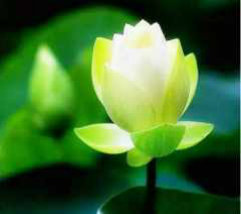
读者问：
我双盘断断续续四个月了，现在有时间的话，上午和晚上各盘一小时。但是，最近，我一活动，身体关节就有响声。全身都是这样。有些担心，是不是出了什么问题。
最近几周也开始喝牛奶吃鸡蛋，但关节还是响。请问，你知道是什么原因吗？或者你有过类似经历吗？谢谢！
另外，我在想是不是自己姿势不对，你双盘时，屁股地方垫了垫子让其高于膝盖吗？两个膝盖都碰到坐垫吗？
小夕回：
1.练习四个月，已经可以从其他方面观察身体的进展或改善了，养生或锻炼身体，重要的是看身体能量的大走势，是上还是下。你的担心，完全可以通过对照练习前后的身体状态来找答案。
2.从中医的角度看，关节有响声是“血不养筋”，血就像车轮子的润滑油，润滑油不够的时候，车轮子会“嘎吱”响。
3.我练习以来没有在屁股位置垫高（仅尝试过两三次），之前很长时间两个膝盖没有完全碰到坐垫，尤其是略微薄弱的左下右上姿势，右膝盖离垫子高，目前两个姿势的两个膝盖都碰到坐垫了。
4.有很多人一开始就强调动作要“标准”，基于自己的体验，我有不同看法——随着脊椎的调整和腿脚柔软性的提高，身体会自然而然的调整姿势，所以我很少强调“动作标准”。
5.或许因为我同时练习大礼拜，两者刚好可以相互促进。如果你没有练习大礼拜，可以加上。
上面是前奏，这里是正题——
为什么有人建议打坐时臂部垫高呢？因为平的坐，腰背容易驼（塌）下去，如果是后面高、前面低的坐姿，腰杆能够比较自然的挺起来。
对这个，我有两点心得：
一，关于腰杆直，练习双盘，这是“功到自然成”的结果，气练足了，腰杆自然直；如果气不足，就算垫高了坐，一开始外形上看是“绷”直了，坐不了多久，不知不觉就会塌下去。
二，打坐姿势有很多的，常见的有散盘，单盘，双盘。双盘只是打坐的一种姿势，双盘不等同于打坐。可以只双盘不打坐，也可以不用双盘来打坐（绕晕了没？）。
如果不采取双盘姿势打坐的话，气不容易下沉，所以，打坐时臂部垫高的建议应该是针对采用非双盘姿势打坐的人，非双盘姿势打坐，后面垫高了以后，气血容易从尾巴骨通过，不然的话，气血不容易从尾巴骨通过，会淤在尾巴骨这一带。
如果采取双盘打坐，双盘姿势本身会打通腿脚经络血脉，打开胯关节，气会自然下沉，带动周身气血顺畅流转。
嘿，博主是不是“双盘脑残粉”，这么抬举双盘？怎么论证双盘可以让气自然下沉从而带动周身气血顺畅流转呢？
实践派博主说的，肯定是可以检验的啦，上篇博文说了——“怎么知道气有没有沉下去呢？练完感觉脑门清凉清凉的，好像刚去森林里走一圈。”（关于气往下沉，还有些心得，往后写）
那，又怎么知道“带动周身气血顺畅流转呢？”
如果周身气血顺畅流转，身体会抛掉“筋骨皮”各个层面的“寒湿瘀”，360度无死角“焕然新生”，浑身上下自然落成“骨肉匀称”，传说中最难减的腋下副乳会消除，现代健身活动认为的减肥死角，比如腋下副乳，比如大腿根，比如小腿肚，都会变匀称紧致。
如果说我“不够老”，说服力欠缺的话，和我一起隔空练习双盘近三年的奔五网友的情况更有说服力喽。之前分享过她的练习效果和照片，详情请点击下面往期博文。
身体360度无死角的“焕然新生”，当然不是随便练一下就有的哦，没有苦功，难结“奇异果”。
米是否煮成饭，跟时间和火力有关，但沙子是绝对煮不成饭的。这里讨论的是走向和趋势，我们先区分出大米和沙子，以免下的苦功都成无用功。
如果下苦功做完全不适合自己身体状况的“运动”，期待身体360度无死角的“焕然新生”，那就是期待用沙子煮成米饭了。
打坐目的很多，不同人的追求不同，有为了身体健康的，有为了练习专注的，有为了消除内在冲突的，有为了从思维中解脱的，有为了“空，静，定”境界的.......
双盘目的也很多，不同的人追求不同，有为了提升腿脚功夫以便更好打坐的，有单纯为了改善健康不为打坐的......我是后者，通过盘腿这个姿势本身来启动身体固有的能量，原理是——双盘的时候，腿脚基本不耗用能量，这些能量聚集到身体中部，聚焦就会得以加强（凸透镜原理），光是双盘这个姿势，就可以聚集能量，像散乱的柴火火力不旺一样，聚集成堆，火力就旺起来了。
如果双盘的时候，闭目静坐（这里说的静坐，是关闭“眼耳鼻舌身意”，安静坐着，普通人啊，“意”很难关闭，不管那么多，能关多少关多少），尽量让“眼耳鼻舌身意”耗用的能量降到最低，那么聚集到脏腑的能量会更多，这些能量会去处理平常忙碌的身体无力解决的浊气浊水浊物。
随着身体浊物的气化或排出，身体更通畅更轻盈更柔软，身心不二，身体里面的杂质少一些，精神层面的杂质也会少一些，表现在日常工作生活上是——不易迷茫，不易浮躁。
哈哈哈，都说社会浮躁，时代浮躁，我想说，是组成社会的个体体内太浊，以至于浮躁的个体太多，才变成“社会浮躁，时代浮躁”咧。
又有人说，不静心的双盘是枯坐，对调病养生没有帮助？
说这话的人，要么没把双盘练到转化自己“筋骨皮”的程度，要么根器太高自己“一步登天”到达“静心无念”而不理解没法一步登天的普通人。
PS:
1.有没有发现，流传的每个说法，掰开看，都“有道理”，只是人家没有详细说适用条件和范围，以至于看的人一脑浆糊搞不清其中状况。
2.我还在练双盘的腿脚功夫，期待改善身心健康罢了，对打坐了解少，打坐相关问题最好问深入打坐的人哦。
2016-09-02双盘三小时(第222～230次)
近来忙新产品的最后阶段，之前提过的，一个减轻肠胃负担同时更好补给中下焦的零食，计划中秋节（9月15号）前上架。没把心练到在忙碌中“如如不动”，“行亦禅，坐亦禅，语默动静体安然”的境界，只能心向往之......
忙碌工作，身体能量更多的供于大脑，气往上浮，对身体的消耗较大，这段时间双盘三小时频率变低，明显退步——第一小时的心较少进入上次更新提到的“穿越”的逍遥与清静，第三小时膝盖和脚踝比较疼痛，现在的疼痛不会像早期双盘三小时那样伴随发凉，只是疼痛的时候感觉骨骼及肌肉里很多“杂质”在牵扯挣脱。
和前几次对比，倒退了，和很久之前对比，比如和双盘三小时前50次比，是大大进步的，打嗝放屁都少了，除了膝盖和脚踝疼痛，腿脚没有麻木或发凉或瘀紫，放下腿后，后劲小，复原快，两三分钟自如下地行走。
这次更新，主题不明，可见身体层面杂质多的时候，精神层面也同步受影响。
附双盘三小时记录——
8月18号，20:54-23:56，双盘3小时2分。这是第222次双盘三小时，左腿在下，右腿在上，此姿势是第63次双盘三小时。8月19号，21:28-00:38，双盘3小时10分。这是第223次双盘三小时，右腿在下，左腿在上，此姿势是第160次双盘三小时。8月20号，19:41-23:28，双盘3小时37分。这是第224次双盘三小时，左腿在下，右腿在上，此姿势是第64次双盘三小时。8月23号，21:05-00:08，双盘3小时3分。这是第225次双盘三小时，右腿在下，左腿在上，此姿势是第161次双盘三小时。
8月24号，20:57-00:04，双盘3小时7分。
这是第226次双盘三小时，左腿在下，右腿在上，此姿势是第65次双盘三小时。
8月25号，13:18-16:20，双盘3小时2分。
这是第227次双盘三小时，右腿在下，左腿在上，此姿势是第162次双盘三小时。
8月29号，07:42-11:02，双盘3小时20分。
这是第228次双盘三小时，左腿在下，右腿在上，此姿势是第66次双盘三小时。
8月30号，21:35-00:37，双盘3小时2分。
这是第229次双盘三小时，右腿在下，左腿在上，此姿势是第163次双盘三小时。
8月31号，19:56-23:00，双盘3小时4分。
这是第230次双盘三小时，左腿在下，右腿在上，此姿势是第67次双盘三小时。
2016-09-30双盘三小时(第231～242次)(伤筋腰痛总结)
按理说，双盘三年多，双盘三小时两百多次，大礼拜完成将近10万个（今年的数量还没统计，不知到10万了没），腰部柔韧性和弹性都非常好了，怎么还伤了筋呢？镜头回到那天下午——双盘坐在垫子上封装玉灵膏，一边干活一边双盘，是觉得双盘比正常坐姿舒服，这样的双盘没放在双盘三小时的打卡记录中。那天事情多，下午较晚才开始封装，心里很赶，像冲锋的战士一样全程“忘我”，大概两个多小时后装完，起身才发觉腰部不对劲——疼痛，用手撑腰才站得起来，站起来后，腰像要断了似的，没法直腰，只能勾着走路，腰部一圈连带屁股都疼痛，同时发沉发胀。这疼痛感，既不同于曾经白带过多的肾虚疼痛，也不同于曾经体内湿气太重的腰疼痛，还不同于练习大礼拜和双盘过程中出现过的任何一种疼痛......要赶着印日期，贴标签，裹锡纸和冰袋，装箱打包发快递，没功夫停下来多想这个疼痛，继续干活，身体疼痛不适，精神也受干扰，效率比平时慢很多，时不时出错，贴瓶身标签时，一下就贴歪，不得不撕下重来，越急越错，越错越慢......最后，很多事是男主人下班回来一起做的，把玉灵膏发走已是晚上九点多。忙完停下来，腰疼痛得不行，还是没法站直，只想躺着。怎么回事呢？从来没体会过这种疼痛感，临时性疼痛一般来自风或寒的侵袭，手心捂着疼痛部位有舒服一点点，依固有经验和认识，按被风或寒侵袭的思路应对，当天晚上热敷，敷完绑两个艾绒
护腰睡觉，第二天早上疼痛有缓解，想着大礼拜和双盘可以逼出一定的风或寒，第二天继续大礼拜和双盘，第三天疼痛又严重了，双盘过程那个疼痛感比正常坐姿弱很多，就完全没想到新伤未愈
合时大礼拜或双盘会影响它修复，继续大礼拜和双盘，中秋节（9月15号）那天一天双盘两次三小时。
想着逼出风或寒，后来还拔罐，拔罐时疼痛明显好一点，想着可能刺血拔罐效果更好，就刺血拔罐......这么多项目折腾下来，9月17号晚上不行了，受伤时身体急需能量修复，拔罐的额外消耗让身体一时吃不消，很累，睡眠浅，疼痛更剧烈，一翻身就被腰部疼痛叫醒。
依固有经验和认识解决新问题，失败了，说明判断有误，决定求外援。
18号早去正安医馆看大夫。大夫按压检查，找到受伤的这段筋，一下摸到受伤筋上最痛的点（应该是伤口位置），简单对话，不到两分钟，判断是伤到筋了。
检查前，感觉是整圈腰和腰以下的臀部都疼痛，似乎有个很深的痛点，但自己摸不到最深的那个痛点，像石头扔在湖水，整片湖水都起波澜，我找不到石头扔进湖的原点。大夫一下找到这个原点，跟随他的手，慢慢感觉出是右腰一小段筋受伤。
大夫说，“长时间一个姿势容易伤到筋，最好经常起来活动。你这个情况，看不看医生，治不治疗，一般一周这样会好，这么多天没好，是每天还在做大礼拜和双盘，筋伤像皮肤被刀伤了个口一样，不动它，才利于修复，牵扯或受力不利于修复。疼痛中还感觉胀和沉，是里面有点水肿，像撞伤皮肤一样，开始会肿起来。”
看到我身上拔罐的印子，大夫说拔罐是对的，可惜没拔到最恰当的位置（因为我没摸到那个最深的痛点）。
大夫按、揉、挠一阵子，然后扎两针，扎针的时候用灯烤，检查和治疗一起约1小时。
临走前，大夫说晚上可能会很痛或者更痛，后面会慢慢好，暂停大礼拜和双盘，腰部少用力少受力，还提醒到，伤过一次，可能会留下后遗症，伤过的这边没有另一边灵活。
我问回家后可以做什么事让它恢复快一点，尽量避免后遗症。大夫说热敷，同时，每天“挠”这段受伤的筋，把硬的挠散、挠软。
大夫按揉挠的时候，疼痛有所缓解，出医馆时和来医馆时的疼痛几乎没有差别，当天晚上的疼痛和看大夫前也差不多，知道了正常修复需要的时间，不会因此认为“治疗无效”。
回家后，遵医嘱，暂停大礼拜和双盘，每天热敷两三次，每次十几分钟，热敷后“挠”筋，尽量多躺，坐的时候，定闹钟，半小时起来按揉腰部或平躺在垫子上冥想宇宙的能量帮助修复（冥想修复是“自创”的玩意，不是“医嘱”内容），睡前热敷十几分钟，绑两个艾绒护腰入睡。
19号早上起来，好了50%的样子，打电话去医馆前台让小姑娘转告大夫，谢谢大夫的治疗，我今天已经好了一半。
20号早上，好了80%的样子。
21号，不疼痛了，站立行走恢复正常，没有“不对劲”的感觉，那段筋摸上去还有点硬。
22号之后，感觉不做大礼拜和双盘身体不舒展，每天早上7-8点到山上散步一小时，有意识的把注意力放在脚板底和底面的接触，山上散步一小时对身心的清理逊色于双盘三小时，双盘三小时后“头脑清凉，心中无物”的清透感更强。世事难料！伤筋腰痛之前三小时，还做108个大礼拜，做完大礼拜，摆难度较大的瑜伽体式，一切都好，没想到双盘着封装玉灵膏两个多小时后竟腰疼痛得站不直。这也不是第一次双盘着干活，之前封装玉灵膏的时候，也是双盘着忙碌几小时，都好好的。有点像出门被楼上坠下的花盆砸到的小概率事件吧，更多的是偶然和意外，找原因的话，有几点：1.当时像冲锋的战士一样赶着做事，心神完全不在身体上，失去觉察，身体的自我保护机制失灵，伤到的那刻感觉不到疼痛，忙完站起来直不起腰才感觉到疼痛。“冲锋陷阵感觉不到身体疼痛，下战场才知道受伤”，这个道理一直都知道，还是在忙碌时忘了。如果双盘过程腿脚疼痛，注意力反而时时锁在身体上不会失去自我保护；刚好双盘一两小时里身体舒适，注意力才完全被事情带走了。所以，算不上是“双盘导致筋伤”。如果这次没有用双盘姿势，正常坐姿的话，估计结果也一样。2.大夫说，长时间一个姿势容易伤到筋。光看这话，估计都不能双盘三小时了，双盘三小时算是“长时间一个姿势”呀。我双盘三小时那么多次没伤到，就这次伤到了，仔细想来，是这次双盘着干活的过程中，反复多次弯腰拿较远处的炖盅，这个动作把筋拉伤了。大夫检查时，让我回放当天盘坐的姿势和手势，对弯腰同时右手伸往左边较远的动作说“对！就是这个动作，就是它拉伤了右腰的筋”。或许可以对大夫的话做个补充——长时间腰不正直的姿势，容易伤筋。如果双盘过程，腰一直保持正直，手在近处随意拿个东西，是不会拉伤到筋的。3.用过去的经验和认识来解决新问题，这次算严重错在这点，导致多疼痛了几天。这也不能说经验是坏事，大夫迅速判断出问题所在，快速摸到最深的痛点，和临床经验丰富有关。我在疼痛上的经验也是蛮丰富的，膝盖风湿疼痛，痛经疼痛，湿重疼痛，寒重疼痛......还有练习中的疼痛，比如第一次做大礼拜后，肚皮肌肉疼痛得不敢笑，一笑牵扯到就痛，那是很久没活动的肌肉忽然活动到了的疼痛；第一次双盘三小时后几天，腿脚疼痛得走路有点瘸，双盘三小时早期膝盖和脚踝也疼痛剧烈，死去活来的痛法......那些疼痛出现时，没有等疼痛全好了才继续练习，疼痛也全都自行消除了。这次经历了伤筋的疼痛，更清楚的知道以前经历的所有疼痛都不是伤筋的疼痛，伤筋的疼痛和那些疼痛的痛感完全不同，表达能力欠缺，暂未找到合适的语言来描述每一种疼痛。为保守起见，练习大礼拜或双盘的过程或结束，某部位疼痛的话，建议暂停练习，如果暂停3天后疼痛没有显著缓解，就去看医生，等疼痛完全好了再继续练习。
4.把事情串起来看，好像是魔界阻碍似的，几个月前，打算上玉灵膏，遭遇诈骗；这次打算上藕粉羹，伤到筋；每次要扬帆起航，就遇到一场暴风雨。从这条线看，是障碍。
从另一条线看，似乎又是助力，比如被诈骗后，对钱看更开了点，六月下旬放下工作，安排三三九双盘，三三九双盘过程冒出藕遇夕的灵感；这次伤筋养伤，用的热敷包是几个月前一家工厂看我是养生博主想合作让我试用的产品，平时没有伤，没有疼痛，又早已不是怕冷体质，用了感觉不明显，没心得没兴趣；这次疗伤，用了感觉明显，有体会有灵感，打算做一个新产品。
好像身体气化“寒湿瘀”越来越快的同时，外在事情的转化也越来越快。
5.这次伤筋恢复迅速，比大夫预期的时间快很多，我觉得和大夫的治疗有关，和双盘升级了身体版本关系也非常密切，热敷，按揉，冥想，休息，是辅助。
这次刺血拔罐的印子，一周恢复如初，白皙无痕；五年前刺血拔罐的印子是半年左右消，老了五岁，正常来说，修复力应该变弱很多，现在却是“逆天”的进展，在膝盖窝刺血拔罐的景象，也验
证了双盘是360度无死角逼出“寒湿瘀”（以后细说）。
6.大夫提醒可能会留下后遗症。这个我不担心，曾经膝盖风湿疼痛和骨头寒都被逼出来了，筋在骨外，伤口愈合后，双盘蓄积的能量应该可以让它修复得更好。
7.这么积极养生，还伤了筋？养生意义何在？
养生，可以避免慢性疾病。急性病和外伤，是很难避免的，平时养生犹如平时攒钱，家底殷实不怕急用，可以让急性病和外伤好得快一些。这次伤筋，思路对了迅速恢复，知道身体修复力更强，反而更不怕被伤了。
PS：
1.读者问——
这是我“家”阳台，用引号，因为这是朋友的房子，买房后他想明白了自己想要的人生，觉得在深圳养房养家供两孩子太辛苦，离开奋斗多年的深圳，回河北老家了，把房子出租给我们......嗯，我心中的瓦尔登湖，也不在深圳。
2.国庆期间，人机分离，不更喽，回见。
祝大家假期多多与大自然交换能量，吸收天地灵气，身心清零通透！
3.附伤筋修养前的双盘三小时记录：
9月2号，00:23-04:03，双盘3小时40分。
这是第231次双盘三小时，右腿在下，左腿在上，此姿势是第164次双盘三小时。
9月4号，05:38-08:48，双盘3小时10分。
这是第232次双盘三小时，左腿在下，右腿在上，此姿势是第68次双盘三小时。
9月5号，07:57-11:00，双盘3小时3分。
这是第233次双盘三小时，右腿在下，左腿在上，此姿势是第165次双盘三小时。
9月7号，12:02-15:22，双盘3小时20分。
这是第234次双盘三小时，左腿在下，右腿在上，此姿势是第69次双盘三小时。
9月8号，07:36-10:42，双盘3小时6分。
这是第235次双盘三小时，右腿在下，左腿在上，此姿势是第166次双盘三小时。
9月9号，07:46-10:50，双盘3小时4分。
这是第236次双盘三小时，左腿在下，右腿在上，此姿势是第70次双盘三小时。
9月10号，20:51-23:55，双盘3小时4分。
这是第237次双盘三小时，右腿在下，左腿在上，此姿势是第167次双盘三小时。
9月11号，20:08-23:13，双盘3小时5分。
这是第238次双盘三小时，左腿在下，右腿在上，此姿势是第71次双盘三小时。
9月13号，13:00-16:02，双盘3小时2分。
这是第239次双盘三小时，右腿在下，左腿在上，此姿势是第168次双盘三小时。
9月15号（中秋节，一天双盘两次三小时），03:25-06:45，双盘3小时20分。这是第240次双盘三小时，左腿在下，右腿在上，此姿势是第72次双盘三小时。18:55-22:00，双盘3小时5分。这是第241次双盘三小时，右腿在下，左腿在上，此姿势是第169次双盘三小时。9月17号，20:25-23:30，双盘3小时5分。这是第242次双盘三小时，左腿在下，右腿在上，此姿势是第73次双盘三小时。
9月18号到今天（9月30号），伤筋修养，暂停双盘和大礼拜，预计国庆假期后恢复双盘和大礼拜。
2016-11-07双盘三小时(第243～257次)(清理日常身心杂质)
（配图是我）
一清理日常身心杂质自10月13号恢复双盘3小时以来，比伤筋腰痛前的频率略低一点。
双盘三小时过程，第一小时身体全程舒适无障碍，杂念少，心安定；第二小时腿脚略有不适，杂念略多，心难安定；第三小时腿脚不适重一些，都比较好忍。
腿脚不适程度，和每天经历的事情有关，如果一天忙碌到感觉焦头烂额或整天处理紧急救火状况，腿脚疼痛显著加重。
打嗝和排浊气（放P）主要受饮食影响，吃多了或吃了不适合的东西，比如吃了没熟透的水果，其次是情绪的影响，现在很少生气，回想起来，今年生气就是4月遇到电信诈骗那次，当时气得一晚睡不着觉，一天吃不下饭。现在没有极端的情绪，遇到不大开心的事，比如不被顾客理解啦，快递丢件啦，还是有短时间的心塞和难受，这样双盘过程浊气就明显变多。总的来说，打嗝较少，放P多的时候在五次左右，少的时候为0，排浊气都在第三小时，前两小时没有。历史残留“寒湿瘀”可能已经比较少（也难说会不会以后又拔出一层），主要是清理日常残余杂质，有时太忙碌，用脑过度，睡眠质量下降到醒来没有焕然一新，赶紧双盘三小时，盘完再睡，就回到焕然一新了；遇到心塞难受的事，赶紧双盘三小时，盘完就舒畅了；吃多了或吃了不适合的东西，盘完排一堆大大，就轻松了。
不管是像我这样的普通人，还是商海精英职场成功人士，活在这个时代，每个人或多或少都会有焦虑和不安，幸运的是，上天厚爱每个人，宝贵财富就藏在身体里，练习无门槛的双盘，善待身体，可以有效帮助我们克服和化解焦虑与不安，回归清静平和。
双盘三小时过程，其他方面都稳定了，全程手脚色泽和平常一样，腿脚暖和，全身暖和。放下腿后三分钟，双盘后劲就消失到和平常一样了。
二双盘到一定阶段，自然而然可以摆一些难度大的瑜伽体式
有读者问我除了练习双盘和大礼拜，有没有练其他项目，比如瑜伽等？
我只练了双盘和大礼拜哈，双盘到一定阶段，自然而然可以摆配图这样的瑜伽体式。
三最好的赞赏，是对一个人做的事情发自内心的认同
四最好的努力，是让自己做的事得到大家的认同
只要彼此都有理解与包容之心，没有什么事不能友好解决。
五走在自己的人生高速公路上
原本想每个季度做一次三三九双盘，现在距离第1次三三九双盘已经快半年，是时候安排第2次了。计划11月19号外出一周，做第2次三三九双盘，到时店铺没法正常发货，如有需要，请提前安排。
谢谢包容我的你们，希望大家都积累出“别人怎么想都影响不了我”的砝码，按自己的需求而不是他人的要求来安排自己的工作和生活，活出自己，走在自己的人生高速公路上，逆缘会自动让道，助缘会主动支持。
附这段时间的双盘记录（今天微信公众号的文章忘记附这段了，下次补发^_^）：
9月18号-10月12号，伤筋修养，暂停双盘三小时。
10月13号，06:40-09:45，双盘3小时5分。
这是第243次双盘三小时，右腿在下，左腿在上，此姿势是第170次双盘三小时。
10月14号，07:48-10:53，双盘3小时5分。
这是第244次双盘三小时，左腿在下，右腿在上，此姿势是第74次双盘三小时。
10月15号，20:46-23:52，双盘3小时6分。
这是第245次双盘三小时，右腿在下，左腿在上，此姿势是第171次双盘三小时。
10月18号，12:23-15:43，双盘3小时20分。
这是第246次双盘三小时，左腿在下，右腿在上，此姿势是第75次双盘三小时。
10月19号，07:56-11:00，双盘3小时4分。
这是第247次双盘三小时，右腿在下，左腿在上，此姿势是第172次双盘三小时。
10月21号，07:47-10:57，双盘3小时10分。
这是第248次双盘三小时，左腿在下，右腿在上，此姿势是第76次双盘三小时。
10月22号，00:40-03:47，双盘3小时7分。
这是第249次双盘三小时，右腿在下，左腿在上，此姿势是第173次双盘三小时。
10月24号，06:44-09:50，双盘3小时6分。
这是第250次双盘三小时，左腿在下，右腿在上，此姿势是第77次双盘三小时。
10月26号，08:00-11:07，双盘3小时7分。
这是第251次双盘三小时，右腿在下，左腿在上，此姿势是第174次双盘三小时。
10月27号，07:53-11:16，双盘3小时23分。
这是第252次双盘三小时，左腿在下，右腿在上，此姿势是第78次双盘三小时。
10月28号，13:57-17:10，双盘3小时13分。
这是第253次双盘三小时，右腿在下，左腿在上，此姿势是第175次双盘三小时。
11月1号，06:39-09:55，双盘3小时16分。
这是第254次双盘三小时，左腿在下，右腿在上，此姿势是第79次双盘三小时。
11月2号，07:15-10:28，双盘3小时13分。
这是第255次双盘三小时，右腿在下，左腿在上，此姿势是第176次双盘三小时。
11月3号，05:42-08:55，双盘3小时13分。
这是第256次双盘三小时，左腿在下，右腿在上，此姿势是第80次双盘三小时。
11月5号，03:30-06:45，双盘3小时15分。
这是第257次双盘三小时，右腿在下，左腿在上，此姿势是第177次双盘三小时。
2016-11-09双盘7小时(第1次)(独喜与狂欢共迎双11)
【配图是我，不好意思，我做模特的配图打了水印，因为看到我的原创文章被盗用于商业用途，原创文字和图片是养生八年的成果，希望被尊重。微信公众号有原创保护，便于投诉侵权，以后原创文字和图片首发微信公众号，再贴到博客哦。如带来不便，请见谅。】
今天早上4点起来双盘，计划盘三小时的，盘到三小时觉得没过瘾，盘着盘着，最后盘了7小时（不换腿）！
最好的双盘记录诞生啦！11月9号，04:12-11:15，双盘7小时3分。放到双盘三小时记录里，这是第259次，右腿在下，左腿在上，此姿势是第178次。前两小时闭目静坐，中间两小时听刘湘子老师的梵呗音乐，后三小时看书。前两小时身体舒适，第三小时腿脚有疼痛感，第三小时里打嗝放P共5次以内。后四小时腿脚疼痛感和第三小时相似，没有明显加重，感觉还可以继续盘下去，要翻译资料，就放下腿了。放下腿脚后，发现脚板底出汗多，脚踝和膝盖疼痛感比盘着的时候重一些，不过这种疼痛感和双盘三小时初期的疼痛感不同，这个疼痛感不难受。
后劲消失得比平时双盘三小时慢，摩擦两腿十几分钟下地行走，盘时压下面的右脚踝还是有点“弯”，没有立即回到正常直，过半小时，后劲就比较小了，总之比双盘三小时初期的后劲轻，消失得快。放下腿后几小时，脚板底一直有热流，盘时压下面的右脚板底的热流比左脚板底强。
听梵呗音乐的两小时流很多眼泪，去年双盘三小时流泪很多，自从2016年元旦前第49次双盘三小时流半小时眼泪后（详情请看博文），这一年双盘三小时过程很少很少流泪了。
这次流泪和之前一样，没想什么激动或难过的事，不知不觉的眼泪流出来，好像梵呗音乐忽然打通了身体的什么能量通道，整个人融入在音乐里，“音乐净化心灵”，在身体上是真的有一种被冲刷干净的感觉，脸上挂着泪水，心中却充满喜悦。平时说笑cry，这是喜cry。选择与内心相应的音乐来提振身体能量很不错，我听的是APP“喜马拉雅”上听刘湘子老师在美国林肯中心的演唱会。不过如果不喜欢听“神叨叨”的梵呗音乐，就不要强迫自己去听。我怕家人接受不了我的另类品味，都是戴耳塞听的。一个坐垫，就可以自娱自乐；一曲梵呗音乐，就可以自high自cry。狂欢购物的双11来了，希望我们在狂欢与独喜间切换自如。
2016-11-10快速缓解疼痛
（配图是我）
一快速缓解疼痛
昨天上午双盘7小时放下腿后，揉搓十几分钟后忙工作，开始几小时，两个脚板底一直有热流，脚板底热流慢慢散后，脚踝和膝盖的疼痛感变强，后半天忙碌，没空揉搓。晚上睡前，脚踝和膝盖疼痛明显，没感觉到发冷或冒寒气，但摸上去比手心温度低很多，和早期双盘三小时的后劲很像，如果这样睡觉，肯定被疼痛带来的腿脚极强的存在感干扰而睡不踏实，早起双盘三小时记录常提到这样的情况哈——双盘三小时的后劲强烈，整晚隐隐感觉到腿脚的疼痛，睡不沉。于是，拿出热敷包，放膝盖下，温度调到65度，定时10分钟，同时热敷两个膝盖窝，敷完揉搓两三分钟；继续定这个温度和时间，同时热敷两脚踝，敷完揉搓两三分钟。没想到！这一通工作做完，两脚踝和两膝盖的疼痛减弱到是有若无的程度，恢复到和手心一样温暖，整晚睡得踏实安稳。今天早上起来，已感觉不到昨天双盘7小时的后劲，今天双盘了3小时30分！感叹没早点知道善用热敷包呢，白白忍受那么多腿脚疼痛，早期双盘三小时，好多个晚上带着疼痛的腿脚入睡，睡不踏实，迷迷糊糊中感觉到腿脚强烈的存在感。去年双盘记录有写过，为缓解腿脚疼痛，双盘过程拿艾绒护腰的内胆裹着疼痛部位，有一些效果，和这次对比，这次居然在那么短的时间恢复到安稳入睡，效果是翻了几倍。
也不是很确定，这次迅速消除腿脚疼痛，到底是热敷包的功效，还是现在身体本身的复原力变好。入手热敷包的亲，一起检验看看。（点击下面相关文章，可详细了解热敷包）
二人音相应，喜极而泣
今天双盘三小时过程，又去听刘湘子老师的梵呗音乐。
其中的几曲，相应程度尤其深，那个调一响起，眼泪立即掉下来，好像那个音调流经身体某条经似的。人音相应，喜极而泣，真是哭上瘾啊！
之前分享文章提过的，已过45岁的练双盘和大礼拜几年练出曼妙身姿的网友姐姐，她近期在美国斯坦福大学现场听刘湘子老师唱梵呗音乐，说他的声音有穿透力，脸非常平和，气定神闲。期待以后有机会现场感受！（关于曼妙身姿的姐姐，详情见下面相关文章）。
关于声音相应，之前写过——
之前去做义工，寂静法师现场引领大家一起唱《心经》的时候，我眼泪也是不由自主的流，不是声声入耳，而是声声渗透入心，流完泪，心很静，眼睛也更明亮。自己在家读《心经》一年多，完全没有出现过这种情况。
其他老师带领大家一起做一些动作和咒语的时候，我没任何感觉，甚至觉得动作和咒语傻不拉几的。
寂静法师带领的时候，我自然而然的没有杂念，感觉有股震动波从脚到手流过，感受到手脚上皮肤的细胞正在呼吸的那种细微开合——是不是说得太玄乎了？就是那种体验——把手指头放在桌面，静，静，静，会感觉到指尖在跳动！
三天寒地冻人暖和
今天早上看今年的五运六气，这个冬天是六年一遇的大冷天，怕冷星人难熬，从另一个方面讲，这样的冬天，利于阳气敛藏。利用这样的天时，好好练静功，阳气藏够，以后冬天就可以和手脚冰冷说拜拜了。
八年前冬天，十几度气温，穿两件棉衣还哆嗦发抖的那个旧我，已远去；今天降温，全身和手脚暖如春，这样的身板，才有热情追逐梦想，拥抱未来。
四新计划
近期收到几位读者双盘突破3小时的消息，为大家开心！
一个新计划在酝酿中——
双盘7小时的新发现：快速缓解疼痛
2016-11-17双盘三小时(第258～265次)(为何连续双盘7小时不用上厕
所)
（配图是我）
一为何连续双盘7小时不用上厕所
之前发双盘7小时的文章后，几个读者问，连续不换腿盘了7个小时，中途不上厕所吗？
这问题真值得深思呢！
盘的时候完全没想起这个问题耶，发文后收到问题，才想起，是哦，怎么7小时不用上厕所呢，曾经肾不好的时候，半小时就一次小便，身体回到正常的时候，一般上两小时的课，下课了也上个厕所，或逛街三四个小时也会上一次厕所......为什么连续双盘7小时都没有这个需求呢？回想那七小时，过好快的，和平时做其他事的七小时好像不是一个时间刻度，难道穿越了？天上一天，地上十年。。。如果窝沙发连续看电视或电影7小时，大概头晕脑涨浑身不舒爽；如果在电脑前一动不动工作7小时，估计头晕眼花腰背难受；如果逛街购物7小时，估计也是腿脚发酸人感觉累......双盘7小时的身体感完全不同于做这些事7小时的身体感，除了放下腿后，腿脚留有双盘后劲的酸痛，但身体内在是很舒服的，人是精神的。在这次连续双盘7小时以前，除了睡觉是连续7小时，不吃不喝不拉，精神好，想不起还有其他什么事是连续做7小时不吃不喝不拉还精神好的。
这事经不起细想，追问下去，发现个大秘密——双盘和睡眠有极相似之处！
人在睡眠时，身体自动会调节成腹式呼吸，肾“纳气生精”，气下沉到腹部的呼吸，可帮助“肾”纳更多的气，就生成更多的“精”（精神的精，不是精子的精），精神精神，聚精会神，有精才有神，无精则神散，无精无神。
随着双盘功力的提升，双盘到后面，呼吸变深，气下沉到腹部，身体自动调节成腹式呼吸，和睡眠状态非常像，身体好的人，睡觉过程就是不吃不喝不拉，醒来焕然一新的。
二品味奇葩
上次动了个念头，在博文里说想现场体验刘湘子老师的梵呗音乐会，没想到这几天就看到他要来深圳开梵呗音乐会的消息，真像JT叔叔说的那样，练功回到“大宇宙怀抱”，随便动个念，想要的就连接上了。
双盘7小时后，很喜欢听刘湘子老师梵呗音乐中一段《心经》的念诵（手机下载“喜马拉雅”APP，搜“刘湘子”可找到），那个念诵有点像和尚念经，以前对这种念经没好感，不仅没好感，还讨厌，因为小时候看法海念经#@%&*#@%￥#收白娘子......法海这个负面形象影响太深。
这越来越奇葩的品味到来之时，恰有读者关心“小夕，你练双盘将血气提升去除病痛，但作为女孩，总不可练到百岁无后。。。我八卦问一下，你什么时候有个可爱的小孩？我每天都练功，就是提高身体的正能量，为后代积正能量。”
练功和生娃不矛盾呀，练到百岁无后？离更年期还那么远，离百岁还那么那么远。。。佛说“未来心不可得”。
八卦的问题，明星式的答复——“会跟爱我的喜欢我的人分享喜悦”。
三忙着闲下来
双十一的忙碌，让我看到目前的瓶颈——忙碌时，气不定，神不闲；练功时，才能“归中”，以练功时聚集的能量来平衡忙碌时的大消耗，感觉只维持身体能量日常的收支平衡。闲一周，探索这个瓶颈。
所动皆有所耗，所耗皆为阳，白天忙做事，晚上忙做梦，少有的空闲又马不停蹄忙养生，整天在忙碌状态，很难“气定神闲”，气不定神不闲对身体的消耗很大。
长期严重亚健康或慢性疾病的人，除了饮食作息搞对之外，长期最好选一个“忙着闲下来”的养生法，如双盘，站桩等，大礼拜不算是“忙着闲下来”哦。
四附这段时间双盘记录
11月7号，20:26-23:36，双盘3小时10分。
这是第258次双盘三小时，左腿在下，右腿在上，此姿势是第81次双盘三小时。
11月9号，04:12-11:15，双盘7小时3分（最好的双盘记录）。
这是第259次双盘三小时，右腿在下，左腿在上，此姿势是第178次双盘三小时。
11月10号，13:17-16:50，双盘3小时33分。
这是第260次双盘三小时，左腿在下，右腿在上，此姿势是第82次双盘三小时。
11月11号，07:56-11:01，双盘3小时5分。
这是第261次双盘三小时，右腿在下，左腿在上，此姿势是第179次双盘三小时。
11月12号，00:44-03:51，双盘3小时7分。
这是第262次双盘三小时，左腿在下，右腿在上，此姿势是第83次双盘三小时。
11月14号，10:24-13:30，双盘3小时6分。
这是第263次双盘三小时，右腿在下，左腿在上，此姿势是第180次双盘三小时。
11月15号，13:28-16:40，双盘3小时12分。
这是第264次双盘三小时，左腿在下，右腿在上，此姿势是第84次双盘三小时。
11月16号，15:23-18:27，双盘3小时4分。
这是第265次双盘三小时，右腿在下，左腿在上，此姿势是第181次双盘三小时。
2016-11-29双盘三小时(第266～276次)(从俗气到仙气&第2次三三九
双盘)
（配图是我）
一从俗气到仙气
双盘到这个阶段，很少由内生病，偶有小小的不对劲（不适症状没出现就可以感觉到不对劲），睡一觉就“睡醒病除”。意外外伤没法完全避免，比如两个月前伤筋腰痛，不过会很快好。
已经不需要关心如何消除疾病，如何从疾病走向健康，而是关心活出健康的比较级，活出气质的比较级，活出生命更美的状态。
对健康而言，这是一条救穷不救急的路，对气质而言，这是一条从俗气到仙气的路。
除了天生丽质的人，普通人摆脱“俗、村、土”，重点在——骨正、筋柔、脏腑浊气少。
已体会到双盘的种种好，不过还是不会以“拉人入教”的热情叫别人练，人各有志啊。
王安石说，“夫夷以近，则游者众；险以远，则至者少。而世之奇伟、瑰怪，非常之观，常在于险远，而人之所罕至焉，故非有志者不能至也。”
万法归一，做自己喜欢的事，喜欢自己做的事，都可以活出生命更美的状态。
二第2次三三九双盘
五个月前完成一次，觉得这应该会容易些，没料到，疼痛来临时，还是痛到想放弃。。。
第一天，11月22号：
1/9，04:50-08:00
2/9，10:59-14:19
3/9，15:54-19:12
1/9，和平常每天双盘三小时差不多，前两小时身体舒适无障碍，第三小时压下面的脚踝和膝盖略微不适。前两小时放p多，估计有二十来次（近期
很少这么多）。原因可能在两方面，一是和前一次双盘三小时隔了五天，隔的五天里每天双盘一两小时；二是这段时间工作忙，大脑消耗大，持续忙碌时虽然也不间断双盘三小时，但那个忙碌的能量场本身可能会略微削弱双盘蓄积的能量，以至于身体在感知大脑消耗过大对脏腑能量的借用与透支时没那么灵敏。天地这个外围环境对人的影响还是挺大的，在深圳华强北双盘和深圳仙湖植物园双盘，后者对身体的补益效果应该强几倍。
只有1/9坐放p这么多，后面每坐是否放p，完全取决于吃什么，下文细说。
2/9和3/9，受前面双盘后劲的累积，每次腿脚不适来得比前一次早一些，不适程度重一些。总的来说，第一天算轻松，每坐都多盘十几分钟。
第二天，11月23号：
4/9，06：05-09：07
5/9，10：14-13：18
6/9，14：18-17：24
其中两坐用的是较薄弱的左下右上姿势，加上前一天累积的后劲，每一坐到两小时后都又痛又累，好多次升起放弃的念头。尽管已经盘了那么多次
三小时，已经忍过那么多疼痛，当疼痛又来时，放弃的念头还是非常强烈，“把腿放下吧，放下吧，又没人要求，这么自虐为哪般......不能再写双盘的好了，叫人受这种痛，太残忍了，太残忍了......”，通过听刘湘子老师的梵呗音乐和看书转移注意力熬腿。
第三天，11月24号：
7/9，07：34-10：38
8/9，12：50-15：53
9/9，16：35-19：38
8/9是较弱的姿势，最后20分钟，腿脚痛得飙泪，7/9和9/9是较优的左上右下姿势，较优的这个姿势比较弱的多盘近100次三小时，舒适度还是很明显的哈。总的来说，第三天比第二天好过很多。
和第1次三三九双盘相比，有两个明显不同：
一是，这次下坐后倒头睡着的情况比上次多，上次每坐之间做一下大礼拜，这次没做大礼拜。
二是，热敷包和藕遇夕，这次帮了大忙。每坐结束，用热敷包敷膝盖、脚踝和后腰几分钟，敷完揉搓一会，疼痛不适迅速缓解或消除，要不是有热敷包，第二天痛的那么惨烈，很可能第三天坚持不下去。每天九小时的盘下来，晚上都没有因腿脚不适影响睡眠，上次有因腿脚疼痛而睡不踏实。
三附这段时间双盘三小时的记录：
第2次三三九双盘，11月22-24号。
11月22号，04:50-08:00，双盘3小时10分。
这是第266次双盘三小时，右腿在下，左腿在上，此姿势是第182次双盘三小时。
11月22号，10:59-14:19，双盘3小时20分。
这是第267次双盘三小时，左腿在下，右腿在上，此姿势是第85次双盘三小时。
11月22号，15:54-19:12，双盘3小时18分。
这是第268次双盘三小时，右腿在下，左腿在上，此姿势是第183次双盘三小时。
11月23号，06：05-09：07，双盘3小时2分。这是第269次双盘三小时，左腿在下，右腿在上，此姿势是第86次双盘三小时。11月23号，10：14-13：18，双盘3小时4分。这是第270次双盘三小时，右腿在下，左腿在上，此姿势是第184次双盘三小时。11月23号，14：18-17：24，双盘3小时6分。这是第271次双盘三小时，左腿在下，右腿在上，此姿势是第87次双盘三小时。11月24号，07：34-10：38，双盘3小时4分。这是第272次双盘三小时，右腿在下，左腿在上，此姿势是第185次双盘三小时。11月24号，12：50-15：53，双盘3小时3分。这是第273次双盘三小时，左腿在下，右腿在上，此姿势是第88次双盘三小时。11月24号，16：35-19：38，双盘3小时3分。这是第274次双盘三小时，右腿在下，左腿在上，此姿势是第186次双盘三小时。11月25号，08:28-14:32，双盘6小时4分。有了上次不换腿双盘7小时，这次6小时不“大张旗鼓”了哈。这是第275次双盘三小时，右腿在下，左腿在上，此姿势是第187次双盘三小时。11月29号，07:04-10:07，双盘3小时3分。这是第276次双盘三小时，左腿在下，右腿在上，此姿势是第89次双盘三小时。
2017-01-03双盘三小时(第277～300次)(300次！遇双盘瓶颈)
（配图是我）
2016年12月31号，刚好双盘三小时第300次！
身体上的反应越来越少，排浊气（打嗝或放屁）以及腿脚疼痛的早晚和疼痛的强度，主要受饮食和情绪的影响。
正常饮食情况下，双盘三小时过程很少打嗝或放屁，偶尔一两次。偶尔吃多的话，打嗝或放屁略微多一些，也很少超过五次。意味着，密集排浊气阶段已经过去。
正常情况，一个半小时内，腿脚舒服，身体无障碍。
工作越劳累，头脑杂念就越多，腿脚疼痛也来得越早，有时候才盘半小时，压下面的脚踝或膝盖就有略微痛感。熬过双盘三小时早期的剧烈疼痛，现在的疼痛强度算毛毛雨，好忍。
该化的陈寒和内寒，可能都化了吧，三小时全程全身暖和，手脚暖和，放下腿两三分钟就感觉不到双盘后劲，自如活动。
作为一个养生工具，双盘带来的身体上的改善，已超越曾经试过的所有其他养生方法，身体能量提升了几级，筋骨也颇为柔软灵活（非练功不能得此效！）。
然而，身体还有没打通的死点，表现为经期精力没有平常好，经期摸到身上有温度偏低的点（主要在臀部和腿）。不可否认，身体的提升依然是显著的，双盘把死区或死面激活到零零星星的死点了。
双盘的三个功效——健身养气，调节情绪，悟道觉醒。
现在，健身养气的功效，可能挖掘了80％—90％，表现在内，吃喝拉撒睡的质量上了几个台阶；表现在外，一年感冒一次，随便喝付药好了，意外伤筋，不用药，不用治疗，三天好了。
调节情绪的功效，可能挖掘了20—30％，情绪起来的时候，较快看到情绪背后未被卸载的程序，知道情绪怎么来，不会一下被情绪点燃，烧进死胡同，困在死胡同久久出不来。如jt叔叔说的，渐渐可以像点餐一样地处理自己的情绪，可以选择生气，可以选择愤怒，也可以选择一笑而过。。。
悟道觉醒，0%吧，这也是当前的双盘瓶颈——只有双盘的时候，得以把神召回身体，忙碌工作时，神飘忽在外。双盘后两小时，心念还是杂乱难安——如何把双盘之身心带到工作俗事中，行亦禅，坐亦禅，是个问题！
正如和宛君姐交流碰撞的——在一个小花盆里种花，无论怎么浇水，怎么施肥，怎么晒太阳，只能在一个小花盆里长到最好，没法和生长在广袤的天地间的花儿比，因为后者的能量源头是整个天地。
2017年，试着，把这颗心，从小花盆移到天地间！
附上这段时间双盘三小时记录：
12月1号，15:17-18:22，双盘3小时5分。
这是第277次双盘三小时，右腿在下，左腿在上，此姿势是第188次双盘三小时。
12月2号，20:57-00:08，双盘3小时11分。
这是第278次双盘三小时，左腿在下，右腿在上，此姿势是第90次双盘三小时。
12月3号，20:06-23:26，双盘3小时10分。
这是第279次双盘三小时，右腿在下，左腿在上，此姿势是第189次双盘三小时。
12月5号，07:05-10:35，双盘3小时30分。
这是第280次双盘三小时，左腿在下，右腿在上，此姿势是第91次双盘三小时。
12月6号，20:31-23:38，双盘3小时7分。
这是第281次双盘三小时，右腿在下，左腿在上，此姿势是第190次双盘三小时。
12月7号，07:58-11:08，双盘3小时10分。
这是第282次双盘三小时，左腿在下，右腿在上，此姿势是第92次双盘三小时。
12月12号，12:33-15:43，双盘3小时10分。
这是第283次双盘三小时，右腿在下，左腿在上，此姿势是第191次双盘三小时。
12月13号，14:22-17:25，双盘3小时3分。
这是第284次双盘三小时，左腿在下，右腿在上，此姿势是第93次双盘三小时。
12月14号，13:23-16:26，双盘3小时3分。
这是第285次双盘三小时，右腿在下，左腿在上，此姿势是第192次双盘三小时。
12月15号，14:05-17:20，双盘3小时15分。
这是第286次双盘三小时，左腿在下，右腿在上，此姿势是第94次双盘三小时。
12月16号，20:50-00:05，双盘3小时15分。
这是第287次双盘三小时，右腿在下，左腿在上，此姿势是第193次双盘三小时。
12月17号，13:47-16:57，双盘3小时10分。
这是第288次双盘三小时，左腿在下，右腿在上，此姿势是第95次双盘三小时。
12月19号，21:02-00:07，双盘3小时5分。
这是第289次双盘三小时，右腿在下，左腿在上，此姿势是第194次双盘三小时。
12月20号，20:33-23:37，双盘3小时4分。
这是第290次双盘三小时，左腿在下，右腿在上，此姿势是第96次双盘三小时。
12月21号，07:38-10:43，双盘3小时5分。
这是第291次双盘三小时，右腿在下，左腿在上，此姿势是第195次双盘三小时。
12月22号，07:40-10:45，双盘3小时5分。
这是第292次双盘三小时，左腿在下，右腿在上，此姿势是第97次双盘三小时。
12月23号，15:30-18:33，双盘3小时3分。
这是第293次双盘三小时，右腿在下，左腿在上，此姿势是第196次双盘三小时。
12月24号，17:45-22:10，双盘4小时25分（有7小时记录后，这不算啥了）。
这是第294次双盘三小时，左腿在下，右腿在上，此姿势是第98次双盘三小时。
12月27号，07:47-10:57，双盘3小时10分。
这是第295次双盘三小时，右腿在下，左腿在上，此姿势是第197次双盘三小时。
12月27号（一天盘两次三小时），12:20-15:25，双盘3小时5分。这是第296次双盘三小时，左腿在下，右腿在上，此姿势是第99次双盘三小时。12月28号，13:19-16:24，双盘3小时5分。这是第297次双盘三小时，右腿在下，左腿在上，此姿势是第198次双盘三小时。12月29号，15:09-18:16，双盘3小时7分。这是第298次双盘三小时，左腿在下，右腿在上，此姿势是第100次双盘三小时。12月30号，15:15-18:25，双盘3小时10分。这是第299次双盘三小时，右腿在下，左腿在上，此姿势是第199次双盘三小时。12月31号，14:27-17:37，双盘3小时10分。
这是第300次双盘三小时，左腿在下，右腿在上，此姿势是第101次双盘三小时。